항체 공학 입문
Introduction to Antibody Engineering (Learning Materials in Biosciences)
1장 서문
Florian Rüker와 Gordana Wozniak-Knopp
초록
생명공학, 분자생물학 및 면역학(immunology) 분야의 석사 및 박사 과정 학생과 항체 공학에 관심 있는 모든 이를 대상으로 한 본 『항체 공학 교재』는 생명공학 및 의학에서 이 중요한 분야의 최신 현황에 대한 시의적절한 개관을 제공한다. 역사적 개관으로 시작하여, 독자는 특이적으로 결합하는 항체를 생성·발현하는 다양한 방식에 입문하고, 특히 항원 결합, 이펙터 기능(effector function) 유발, 생체 내 반감기, 안정성 및 제조가능성(manufacturability)과 같은 특이적 특성을 공학적으로 조작하는 전략에 익숙해진다. 항체의 추가 공학은 소형화(miniaturization), 이중특이성(bispecificity), 또는 예컨대 항체-약물 접합체(antibody-drug conjugate) 형태의 탑재체(payload) 운반체로서의 활용으로 이어진다. 아울러 CAR-T 세포 공학을 위한 표적화 분자로서의 항체, 항체 단편 및 대체 결합 스캐폴드(alternative binding scaffold)의 활용과 항체 검증(validation)이라는 중요한 분야가 본서에 수록되어 있다.
항체는 감염성, 자가면역성 및 암성 질환과 싸우는 데 있어 인류에 봉사한 그 어떤 분자 부류에도 비견되지 않는다. 그 활성을 활용한 최초의 실험들은 면역화된 동물의 혈청(serum)을 비보호 개체에 전달하여 질병을 예방하는 것에 기반하였으며, 당시에는 그 실존조차 밝혀지지 않은 상태였다. 항체 분자의 구조는 19세기 말에 처음 기술되었으며, 분자적 특성에 대한 통찰이 증가하고 재조합 발현(recombinant expression) 및 하류 공정(downstream processing)의 기술적 진보에 힘입어 항체는 현재 가장 중요한 치료제 부류로 성장하였고, 2019년 최다 판매 의약품 10종 중 6종이 항체였다. 이러한 성공담의 배경에는 어떠한 이유가 있는가? 항체는 숙주 유기체를 침입하는 무수한 병원체에 대항하여 자연적으로 작용하며, 요구되는 특이성 스펙트럼을 포괄하기 위한 막대한 수준의 다양성을 보여준다. 표적에 대해 고도로 특이적이고 강한 친화도를 지닌 그처럼 수많은 분자 종의 생성을 뒷받침하는 기전을 규명한 과학적 노력은 이 경우에 한하여 “하나의 유전자-하나의 단백질(one gene-one protein)” 원리를 무색하게 하였고, 다양한 면역글로불린 유전자 영역의 여러 고유한 조합 양식으로부터 발생하는 조합 다양성(combinatorial diversity)의 힘과 체세포 과돌연변이(somatic hypermutation)의 결과로서의 친화도 성숙(affinity maturation)을 드러냈다. 이들은 공학적 사고에 불을 지핀 불씨였다. 즉, 자연의 이들 정교한 프로토콜을 실험실 환경으로 이전하고 효율적 치료제 설계에 적용할 수 있는가? 재조합 DNA 기술의 활용과 형질전환 동물을 포함한 강력한 디스플레이 및 선별 플랫폼의 개발로, 항체 분자 형성의 기반 원리들은 통제된 실험실 절차로 실천에 옮겨질 수 있었다. 그 결과, 기능성, 안전성 및 환자 편의성이 개선된 가치 있는 치료용 항체 기반 제품들이 근년 들어 점점 더 많이 보고될 수 있었다. 이 점에서 과학 공동체의 성공은 생물 분자의 유도 진화(directed evolution)의 중개적 가치의 중요성을 인정받아 수여된 2018년 노벨 화학상으로 확증되었다. 항체 분자의 특정한 특성은 항체의 가변 영역(variable region)에 의해 매개되는 동족 항원(cognate antigen)과의 상호작용과 항체의 Fc 단편(Fc fragment) 내 특화된 영역에 결합하는 여러 다른 리간드와의 동시적 상호작용을 통한 다수의 기능 발휘 능력이다. 혈청 내 면역글로불린의 가장 흔한 하위집단인 IgG1 부류의 항체는 자연살해세포(natural killer cell)를 활성화하여 표적 세포를 공격하게 하거나 보체 캐스케이드(complement cascade)를 촉발하여 강력한 용해를 유도할 수 있다. 많은 항체를 특히 성공적인 치료제로 만드는 또 다른 특징은 내피세포에 발현된 신생아 Fc 수용체(neonatal Fc receptor, FcRn)와의 결합으로, 이는 항체를 리소좀 분해(lysosomal degradation)로부터 구출하여 혈류로 복귀시켜 생체 내 혈청 반감기를 수 주까지 연장한다. 여러 공학적 노력이 이들 기능성의 최적화에 지향되어 왔다. 특히 주목할 만한 매우 성공적인 치료 시약 부류는 수용체 분자와 Fc 단편으로 구성된 융합 단백질(fusion protein)로, 특이적 표적화와 유리한 약동학적 프로파일을 결합한다.
항체 분자의 기능성 스펙트럼은 지난 10년간 더욱 확장되었다. 단일 항체 분자 내 이중- 또는 다중-특이적 항원 인식을 허용하는 공학적 분자 구조는 현재 유망한 치료 접근의 기반을 이루는 새로운 생물학적 현상의 발견으로 이어졌다. 나아가 항체-약물 접합체에서는 항체의 정교한 특이성이 DNA 손상을 야기하거나 표적 세포 내 유사분열 방추(mitotic spindle) 형성을 억제하는 분자들의 맹렬한 독성과 결합된다. 이들 두 새로운 항체 기반 치료제 부류는 현재 가장 치열하게 발전 중인 부류로서, 이미 임상 승인 단계에 도달한 여러 화합물을 포함한다. 항체는 훌륭하지만, 특정 응용에서는 그 크기가 상대적으로 크다. 150 kDa에서는 효율적 조직 침투(tissue penetration) 달성이 어렵다. 분리된 항체 가변 도메인만으로도 특이적 항원 결합이 달성될 수 있다는 초기 관찰은 면역글로불린 도메인의 조직에 대한 심층 연구와 Fv라 불리는 이 단순 구조 단위에 항체 유사 항원 인식 특성을 부여하기 위한 안정성 최적화에 대한 관심을 촉발하였다. 표면에 항원 상호작용을 매개하는 보다 가변적인 패치를 고정하는 본질적으로 안정하게 접힌 단백질 코어라는 개념은 다수의 단백질성 스캐폴드에 특이적 인식을 공학적으로 도입하려는 여러 성공적 시도에 구현되었으며, 그 중 다수가 임상 시험 경로에 진입하였다. 분자생물학의 첨단 기술이 가능하게 한 매우 다양한 항원 인식 분자에 둘러싸인 가운데, 항체 기반 치료제의 부상에 기여한 생명공학의 추가 분야들이 있다. 즉, 향상된 재조합 발현, 효율적 하류 공정, 활성 화합물의 정밀한 특성화를 허용하는 정교한 분석 절차이다. 현재 치료용 항체는 항원 결합 및 이펙터 기능뿐만 아니라 개발가능성(developability)에 대해서도 공학적으로 조작되며, 이는 접근성과 안전성을 더하고 최종적으로 환자에게 이익이 된다. 이를 통해 독자들이 오늘날의 위상에 매혹적인 항체 분자를 올려놓은 공동 특징들의 운동량을 발견하기를 바란다. 즉, 완벽히 부합하는 그것을 찾을 능력을 품은 다양성, 개선의 여지를 활용하는 안정성, 그리고 지속적 방어라는 매우 고유한 미덕이다.
2장 항체의 발견 역사와 특성
Anthony Rees
핵심어: 초기 백신 · 항독소 발견 · 단백질로서의 항체 · 합텐과 항원 · 항체 사슬과 일차 구조 · 항체 3차 구조 · 항체 형성의 유전학 · 항체 다양성 · 항체 이펙터 기능
2.1 서론
항체의 역사는 여러 물리적·시간적 국면으로 구분될 수 있다. 18세기와 19세기의 초기 발견들은 병원성 질병 매개체(세균, 바이러스)의 저수준 직접 접종에 대한 반응으로 관찰된 보호 효과에 대한 관찰에 가까웠으며, 후에 질병을 치유·예방하기 위한 원시적 백신(vaccine)을 시험하기도 하였다(예: Jenner의 우두). 관찰된 보호 또는 치유 효과는 T 세포 반응과 협력한 항체 반응에 의해 매개되었을 것이나, 당시의 설명은 단백질 분자와 보호 면역세포에 대한 지식이 당시 과학을 훨씬 벗어나 있었으므로 기전적이라기보다 현상학적이었다. 20세기 초 단백질 화학이 밝혀지기 시작하면서 항체는 큰 분자로서 보다 구체적 형태를 취하였으나, 그 조성과 보호 효과를 발휘하는 수단은 제대로 이해되지 않았다. 단백질에 대한 이해가 출현하고 1920~1940년대에 단백질 특성화를 위한 새로운 기술들이 이용 가능해지면서 항체의 크기, 대략적 형태, 인식 및 중화 특성이 상이한 항체 유형 또는 “부류(class)” 간의 뚜렷한 차이와 함께 정의되기 시작하였다. 이 시기 항원-항체 상호작용의 상세한 구조적 기반도 제안되기 시작하였으나, 당대 가장 저명한 과학 지도자들조차도 예컨대 유사한 항체 구조가 어떻게 무수히 다른 외래 항원을 인식할 수 있는지를 설명하는 기전을 찾는 데 때로 막다른 골목으로 이끌렸다. 20세기 중반에 이르러 명확성이 표면화되기 시작하여 1970년대 초 항체 구조의 이해에 이르고, 1980년대에는 B 림프구에서 다중 유전자 단편으로부터 항체가 조립되는 유전적 청사진의 해명으로 정점을 이루었다. 이들 유전적 돌파구는 면역계가 항체 구조의 다양한 레퍼토리를 어떻게 생산할 수 있는지에 대한 설명으로 이어졌다. 이제 이들 시간적 시기를 각각 조금 더 상세히 탐구할 것이다.
2.2 초기 역사
천연두에 대한 백신접종(vaccination) 발견으로 인정받는 Edward Jenner는 1749년 5월 17일 영국 Gloucestershire의 Berkeley 마을에서 태어났다. 그는 작은 영국 마을(Chipping Sodbury)에서 외과-약제사(surgeon apothecary) Daniel Ludlow 밑에서, 이후 시골 외과의 George Hardwicke 밑에서 도제로 외과학을 공부하였다. 이후 런던 St. George’s Hospital에서 잘 알려진 “과학적 외과의” John Hunter의 지도하에 직위를 맡았다. 1772년 Jenner는 고향 Berkeley로 돌아와 지역 사회의 개업의이자 외과의가 되었다. 당시 그는 불과 23세였으나 해부 및 탐구에 관한 9년의 지식과 경험을 축적한 상태로, 그처럼 젊은 나이에 비범한 박식함이었다. 천연두 질환에 대한 Jenner의 관심은 Ludlow와 Hardwicke 밑에서의 초기 도제 시절에 촉발되었을 수 있는데, 당시에 그가 낙농가 여인의 민간 전승 “우두(cowpox)에 노출되어 앓고 나면 천연두에 절대 걸리지 않는다”를 접하였다고 한다(모두가 동의하지는 않는다). 17세기의 잘 알려진 동요와 시적 주해는 우두에 노출된 낙농가 여인은 얼굴에 천연두 흉터가 결코 없다는 민간 주장을 뒷받침하는 듯하다. 18세기 동안 천연두는 유럽에서 연간 약 40만 명의 생명을 앗아갔다. 생존자 중 3분의 1은 실명하였다. 생두창 물질의 체액을 보호 절차로서 개인에 피하 주사하는 두창접종(variolation, 라틴어 varius, 반점 또는 착색에서 유래) 방법은 수백 년간 알려져 있었다. 그러나 유럽에서의 채택은 영국 귀족 구성원에 대한 일련의 시술, 이어 런던 Newgate Prison 수감자와 이후 고아들에 대한 보다 통제된 일련의 시험이 일부 중등도의 성공과 함께 수행된 후에야 시작되었다. Jenner는 다른 접근을 취하였다. 그는 (1) 자연적으로 우두에 노출된 후 천연두에 노출된 경우, (2) 자연적으로 우두에 노출된 후 두창접종을 받은 경우, (3) 어느 감염도 경험하지 않은 상태에서 우두를 접종한 후 천연두를 접종한 경우를 포함하는 개인 또는 집단에 관한 23개 증례 연구를 보고하였다. 첫 증례는 1743년에 발생한 것으로 보이나, 이들 중 가장 유명한 것은 Berkeley 인근 농장의 우유 짜는 여인 Sarah Nelms의 증례였다. 증례 XVI로 보고된 Jenner의 관찰은 다음과 같다: Berkeley 인근 농장의 낙농가 Sarah Nelms는 1796년 5월 주인의 소로부터 우두에 감염되었다. 그녀는 손의 일부에 감염을 받았고, 큰 농포성 궤양과 해당 질환에 수반되는 통상적 증상이 그 결과 발생하였다. 여기에서 우두 노출이 보다 위험한 천연두로부터 개체를 보호한다는 가설을 시험할 기회가 왔다. Jenner는 아직 두창접종을 받지 않은 어린 마을 소년 James Phipps를 찾아내어 Sarah Nelms 궤양의 분비물을 Phipps의 피부 아래에 각각 약 0.5인치 길이의 두 개의 표재성 절개로 주사하였다. 이는 1796년 5월의 일로, 인간-대-인간 백신접종(라틴어 vacca, 소에서 유래)의 최초 사례였다. 두 달 후 Jenner는 통상적 절차로 천연두 두창접종을 하여 우두 백신접종을 추적 관찰하였는데, 놀랍게도 천연두 노출이 감염을 일으키지 않았다. 런던 왕립학회(Royal Society)에 결과를 게재하려는 Jenner의 시도는 “충분한 실험적 증거 부족”으로 실패하였다. 이것이 대단히 중요한 의학적 진보라는 확신으로 그는 자비로 출판을 감행하였다. 그러나 이는 전체 의학계를 설득하기에 충분하지 않았다. 여러 저명한 런던 의사들이 Jenner의 절차를 지지하기까지 회의론이 만연하였다. Napoleon을 포함하여 Jenner 백신접종 절차의 힘을 인정한 많은 국가들과 미국의 선견지명 있는 의사들이 있었으나, 영국을 포함한 유럽 일부에서는 회의론이 만연하였고, 영국 의학계가 마침내 우두 백신접종의 힘을 인정하기까지는 19세기 후반까지 걸렸다. 많은 의사들이 백신접종 채택을 꺼린 이유 중 하나는 나쁜 공기와 기타 환경적 영향이 질병의 기원이라고 여긴 미아즈마(miasma, 그리스어 miasmatos, 라틴어 miasma, 유해 증기) 감염 이론에 대한 거의 광신적 고착이었다. 우두 백신접종이 효과적인 이유는 Jenner나 의학계 누구도 이해하지 못하였는데, 체내 보호 면역학적 “체계”라는 개념이 당시 의학 지식의 범위를 훨씬 벗어나 있었기 때문이다. 이는 극히 서서히, 그리고 모든 과학 방면으로부터의 상당한 회의론 없이는 변하지 않았다. 1860년 처음에는 프랑스 Lille에서, 이후 Paris에서 활동한 Pasteur는 특정 유기체(효모)가 알코올 발효에 필요하고 또한 시어짐(세균)을 야기한다는 것을 설명하기 위해 그의 “세균설(germ theory)”을 제안하였다. 이들 결정적 관찰은 질병의 세균설로 이어졌다. 과학 공동체의 “자연발생(spontaneous generation)” 개념 또는 발효의 경우 “자발적 변형” 개념에 대한 강한 고착으로 인해 수십 년 후에도 완전히 받아들여지지 않았다. Berlin에서 Robert Koch의 병행 연구와 함께 감염병의 미생물학적 기원이 확립되기 시작하였으나, 체내·체외 영향에 의한 체내 화학적 불균형이 모든 질병의 원인이라고 보는 “화학 학파”의 지속적 회의론이 있었다. 불활성화 또는 “약독화(attenuated)”된 병원체(예: 화학적 처리 또는 산화에 의해)가 병원성 버전의 병원체에 의한 감염으로부터 보호할 수 있다는 발견은 미아즈마 및 순수 화학적 감염 이론에 대한 결정타(coup de grâce)가 되었다. 이에 대한 최초의 실용적 증명은 1881년 Pouilly-le-Fort(프랑스)에서 수의사 Rossignol이 Pasteur에게 양에서 탄저병 감염을 예방함으로써 백신접종 접근을 공개적으로 입증하라고 도전하면서 이루어졌다.
[그림 2.1: 1881년 Pouilly-le-Fort에서의 탄저 백신 공개 시험 장면]
실험은 완전한 성공이었고 많은 다른 감염병에 대한 약독화 접근을 검증하였다. 그러나 이는 동물의 경우였고 인상적이었으나 인간에서 수행된 것은 아니었다. 실제로 Pasteur가 Pouilly-le-Fort를 단순히 우두 감염 “수포”에서 채취한 것을 접종원으로 사용한 것이 아니라 “실험적 백신”의 최초 증명이라고 주장했음에도, Jenner 이후 인간 백신접종은 시도되지 않았다. 4년 후 Pasteur는 이번에는 광견병으로, 오늘날에는 결코 허용되지 않을 실험으로 기록을 바로잡았다. 1885년 7월 6일, 광견에 물린 세 사람이 Paris의 Pasteur 실험실에 찾아왔다. 가장 어린 9세 소년 Joseph Meister가 가장 위험한 것으로 간주되었다. Pasteur는 토끼에서 광견병을 연구해 왔고 그것이 신경계를 공격함을 알고 있었다. 감염된 토끼의 척수를 1~15일 기간 공기 중에 노출시키는 그의 실험은 광견병 바이러스가 노출 기간에 걸쳐 점진적으로 약독화되어 비감염성이 됨을 보여주었다. 그는 토끼 척수 물질을 소년의 상복부에 10일 기간에 걸쳐 이식하였는데, 가장 긴 15일 노출부터 시작하여 점진적으로 보다 병원성인 1일 노출로 내려갔다. Meister는 과정을 견뎌냈고, 3개월 후 Pasteur는 큰 흥분 속에 프랑스 과학아카데미에 증례를 발표하였다. 이 시기 의학은 “무엇”을 알았으나 “어떻게”를 이해하지 못하였다. 백신접종이 어떻게 보호를 야기하고 체내에서 어떠한 일이 일어나 그것이 야기되는가? 이는 곧 변하려 하였으나 순탄치 않았다.
2.3 보호 기질로서의 혈청
1880년대 후반 Berlin의 Robert Koch 연구소에서 Emil von Behring과 방문 중인 일본 연구자 Kitasato Shibasaburō(기타사토 시바사부로)는 백신 발견을 시도하며 파상풍균(tetanus bacillus)의 약독화를 연구하고 있었다. 그들은 균을 요오도폼(CHI3, 산화제)으로 “소독제” 제제로 처리한 후 토끼에 처리된 균을 접종하였다. 동물들은 병원성 파상풍으로 공격(challenge) 시 완전히 보호되었다. von Behring은 어떻게든 혈액이 변하였다고 믿었고, 그와 Kitasato는 이전에 노출된 토끼로부터 혈청(serum)을 채취하여 마우스에 주사하였으며, 이에 마우스는 미처리 파상풍균 공격에 완전히 면역이 되었다. 또 다른 결정적 진보는 Paris Pasteur 연구소의 Emile Roux와 Berlin의 Kitasato의 연구에서 나왔는데, 그들은 각각 디프테리아와 파상풍균으로부터 독성 실체를 세균 및 기타 미생물의 통과는 차단하나 분자 응집체는 통과시키는 미세한 천연 기공을 지닌 특수 세라믹 필터(예: Chamberland)를 통한 여과로 분리할 수 있었다. von Behring과 함께 일한 Kitasato는 면역 토끼 혈청을 파상풍 독소와 사전 항온처리하여 혼합물을 마우스에 주사하거나, 독소 공격 후 마우스에 항혈청(antiserum)을 투여하면 다시 완전히 보호됨을 보여주었다. 이들 관찰에 이어, 주 관심이 디프테리아였던 von Behring은 여과된 디프테리아 독소로 절차를 반복하여 동일한 결과를 얻었다. 이들은 “예방적 혈청 요법(prophylactic serum therapy)”의 최초 사례였으며, von Behring은 혈청이 “항독소(antitoxin)”로 작용한다고 믿었다. 디프테리아가 파상풍보다 독일(및 나머지 유럽)에서 더 중요한 문제였으므로, 이는 말이 대량의 항-디프테리아 독소 항혈청 생산에 사용된 상업적으로 주도되고 고도로 성공적인 임상 치료가 되었다. 1901년 von Behring은 디프테리아 항혈청 발견으로 노벨상을 수상하였다.
[그림 2.2: Emil von Behring 초상]
Koch 실험실에서 함께 일하던 Paul Ehrlich는 세포의 산소 상태 센서로서 화학적 산화환원 염료를 연구하고 있었다. 말 항혈청 생성을 위해 Hoechst 회사가 디프테리아 독소 생산 배치를 개발하는 동안, Ehrlich는 특히 보관 중 효능의 배치 간 변동 문제를 해결해 달라는 요청을 받았다. 그는 독소가 병원성 독소 자체와 다양한 유도체(그가 톡소이드(toxoid)라 부른 것)를 포함하는 것으로 보임을 발견하였는데, 이들은 다양한 친화도로 혈청 항독소 성분에 대한 결합은 유지하나 시간이 지나면서 독성을 상실하였다. 다양한 톡소이드의 측정된 친화도를 반영한 그의 유명한 giftspektrum은 단계적 결합을 보여주었으며, 그는 이를 톡소이드와 항독소 간 비가역적 공유 결합의 반영으로 해석하였고, 이는 산소 종과 산화환원 염료의 결합도 비가역적이라는 그의 이전 견해와 일치하였다. 즉, 항독소(항체)와 표적의 결합은 공유적이었다! 한편 Copenhagen의 Thorvald Madsen과 Uppsala의 Svante Arrhenius는 파상풍 독소로 유사한 연구를 수행하여 Ehrlich의 공유 결합 가설에 의문을 제기하는 결과를 얻었다. 그들의 결과는 결합 곡선이 단계 곡선이 아닌 연속 곡선이었으므로 Oslo의 Guldberg와 Waage의 가역적 평형 결합 모델과 일치하였다. 이 새로운 증거에도 불구하고 위대한 물리화학자 Walter Nernst조차 1904년에 가역적 과정 개념이 사실과 충돌한다고 논평하였다. 때로 위대한 화학자가 항상 위대한 생물학자는 아니다! 항독소-독소 상호작용 이론을 계속 발전시키면서, Ehrlich의 아이디어는 단백질이 화학적으로 무엇이며 체내 역할이 무엇인지에 대한 19세기 초의 원시적 이해에 크게 영향받았다. 감염을 야기하는 독소, 바이러스 또는 세균이라는 개념은 병원체가 체내에 들어올 때 다양한 조직의 세포 표면상의 “영양 수용체(nutrient receptor)”와 교차 반응(essentially 경쟁)하여 신체에 필수적인 영양소를 격리하기 때문에 독성이라는 아이디어를 중심으로 하였다. 이러한 공격에 대한 세포 반응은 관련 독소 및 톡소이드에 결합하는 가용성 실체인 수용체를 과잉 생산하는 것이었다. 이 이론에 따르면, 독소 과부하의 결과 조직·장기로의 영양 공급이 급격히 감소하면 신체는 중병에 걸리고 사망에 이를 수도 있었다. 항독소 과정에 대한 Ehrlich의 모델은 1900년 3월 22일 런던 왕립학회 크루니안 강연(Croonian lecture)에 도해되었다.
[그림 2.3: 세포 원형질의 측쇄와 독소 분자의 결합에 대한 Ehrlich의 도해 — 합토포어기에 의한 결합]
그의 생물학은 다소 중심에서 벗어났으나, B 세포의 항원 자극에 의한 가용성 항체 생산과의 유사성은 본인도 모르게 멀지 않았다. 그러나 Ehrlich 모델이 설명해야 할 항독소의 또 다른 특성이 있었다. 항독소는 응집(agglutination) 및/또는 용혈(hemolysis)(예: 적혈구)을 매개하는 것으로 알려졌는데, 그의 측쇄 가설은 초기 반복에서는 설명하기 어려웠다. Ehrlich는 이후 모델을 “확장”하여 각 항독소의 필수 부분으로서 용해 유도 모이어티를 추가하였다.
[그림 2.4: 세포 측쇄와 보체 분자 모두에 결합하는 항독소를 보여주는 Ehrlich의 “amboreceptor” 개념]
그는 이 복합체를 “암보수용체(amboreceptor)”라 불렀고, 이는 이중 인식 항독소, 즉 항독소 자체와 그가 “보체(complement)”라 명명한 용해 실체로 작동하였다. 창의적이었으나 심각한 경제성 문제가 있었다. 각 암보수용체가 특정 항원에 특이적이어야 하므로, 서로 다른 각 항독소는 서로 다른 보체 실체를 요구하였다. 창의적이나 생물학적으로 엄청나게 낭비적이었다. 병행하여 벨기에 면역학자 Jules Bordet는 용혈 문제의 다른 탈출구를 제안하였다. 그는 혈액 내 별개 실체로 존재하는 용해 물질(그는 “알렉신(alexine)”이라 부름)을 가정하였다. 세포(예: 적혈구)가 세포 표면 항독소에 독소가 부착되어 준비되면 세포가 어떻게든 감작되어, 알렉신이 직접 세포를 용해할 것이었다. 그러나 Bordet 모델에서는 알렉신과 항체의 직접 상호작용이 없었다. 두 오류가 보통 정답이 되지는 않으나, (당시 서로의 아이디어에 열정적으로 반대했던) Ehrlich와 Bordet의 두 접근을 결합하면, 그 기전은 적어도 원리상으로는 보체계가 작동하는 방식에 상당히 근접하였다.
2.4 특이성과 단백질의 본질
Ehrlich, Bordet 등이 긴 아미노산 사슬로서의 단백질이 아미노산 서열에 의존하는 3차원 형태로 접힌다는 것을 알았다면 훨씬 단순하였을 것이다. 그렇지 않았다. 사실 유럽 전역, 특히 Vienna에서 강력한 화학 로비는 단백질이 필수 표면 전하의 매개로 결합된 소분자 혼합물로 구성된 “콜로이드(colloid)”라고 믿었다. 위대한 화학자 Emil Fischer는 1906년에 천연 단백질이 조성이 이전에 생각했던 것보다 훨씬 단순한 펩티드와 같은 물질들의 혼합물이라고 진술하였다. 1년 후 그는 천연 단백질이 균질 물질이라는 일말의 보증도 없다고 언급하였다. Ehrlich 등을 괴롭힌 또 다른 문제는 특이성(specificity)이었다. Vienna에서 일한 Friedrich Obermeyer와 Ernst Peter Pick은 1906년에 항원(예: 소 혈청 알부민)이 다양한 화학적 처리(예: 요오드화)로 변형된 후 토끼 면역에 사용되면, 생성된 혈청이 천연 단백질(여전히 콜로이드로 여겨짐)이 아닌 변형된 알부민하고만 반응함을 보여주었다. 이는 단연 항독소의 “화학적 특이성”의 최초 증명이었다. 그들은 토끼 혈청이 (식물 포함) 모든 종의 요오드-알부민과 반응하나, 그 종들의 천연 알부민이나 다른 화학적 변형에 의한 알부민과는 반응하지 않음을 추가로 보여주었다. 그들의 결론은 과단순화된 것으로 드러났으나, 변형이 알부민 종 특이성을 파괴하였다는 것이었다. Wurzburg에서 Emil Fischer, Vienna에서 Max von Gruber 등과 함께 일하며 상당한 화학적 지식을 갖춘 Vienna 의사 Karl Landsteiner의 끈질긴 연구가 무슨 일이 일어나는지를 설명하였다. 1912년 Pick의 해당 주제에 대한 방대한 총설에 큰 영향을 받아, Landsteiner는 실험적 세부사항에 대한 meticulous한 주의와 영리한 사고를 결합하여 항독소 결합 중 특이성에 대한 훨씬 명확한 그림을 발전시켰다. 1912년부터 1930년 노벨상 수상 이후까지 Landsteiner는 당시 도그마에 내재된 근본적 문제, 즉 단백질이 항원으로 작용할 수 있는 유일한 종이라는 것에 대응하였다. 그렇다면 Pick이 제시한 단순 화학적 변형이 어떻게 그 요구를 우회할 수 있는가? 화학적으로 온화한 방법으로 “합텐(hapten, 단백질의 소분자 변형체)”을 도입하는 변형 단백질을 생성함으로써, Landsteiner는 합텐에 대한 인식이 천연 단백질에 대한 인식으로부터 분리될 수 있으며, 둘 다 인식 요소로 행동할 수 있음을 보여주었다. 이는 Ehrlich의 “기존 항독소(영양 수용체)와의 독소 교차반응성” 이론에 타격이었는데, Landsteiner가 도입한 많은 변형은 면역화된 동물이 결코 본 적 없는 것이므로 어떻게 그처럼 다양한 특이적 기존 항독소를 가질 수 있는가! Landsteiner의 가장 중요한 발견은 Ehrlich와 Morgenroth의 관찰을 확장했을 때 이루어졌다. 그들은 근연 종의 적혈구에 대해 제기된 응집 항혈청이 항혈청 역가 및 흡착 실험에 기반하여 구분될 수 있음을 보여주었다. Landsteiner의 질문은 개체 내 적혈구 항원이 구분될 수 있는가였다. 이미 1901년에 그는 한 개체 동물의 정상 혈청이 같은 종의 다른 동물의 적혈구를 응집시킬 수 있음을 보여주었다. 나아가 적혈구 주사가 같은 종의 구성원을 구별하는 응집 항혈청을 생성할 수 있음도 보여주었다. 이에 대한 화학적 기반을 규명하는 데 10년이 걸렸으나, 이들 신중히 실행된 응집 실험으로부터 Landsteiner에 의한 혈액형 항원 A, B, O 및 AB의 정의가 도출되었다. 그는 이 중요한 연구로 1930년 노벨상을 수상하였다. “단일 항원으로서의 단백질” 이론을 완전히 불식시킨 항원 종에 대한 또 다른 중요한 개념은 1920년대 중반 New York Rockefeller 연구소에서 (1922년 유럽에서 Rockefeller로 옮긴 Karl Landsteiner와 함께) Pneumococcus를 연구한 Oswald Avery와 Michael Heidelberger에 의해 수행되었다. 이들 실험의 핵심 결과는 Pneumococcus 표면의 탄수화물 모이어티가 항체와의 침전 반응에서 항원으로 행동할 수 있으나, 탄수화물-특이적 면역 반응을 생성하기 위해서는 단백질과의 회합(예: 적혈구 표면에서와 같이)이 필요하다는 것이었다. 이 시점부터 단백질이 유일한 항원 종이라는 개념은 단순히 틀린 것으로 입증되었다. 그러나 이들 momentous한 발견에도 불구하고, 현재 보다 흔히 항체라 불리는 항독소의 정확한 본질은 상자 안에 남아 있었다. Landsteiner가 그의 가장 중요한 실험들에 대한 광범위한 기록 『혈청학적 반응의 특이성(The Specificity of Serological Reactions)』(1933년 출판, 1936년 독일어 개정, 1945년 사후 영어 출판)에서 언급했듯이: “…항체 반응에 대한 완성된 이론은 아직 달성되지 않았다… 이는 … 반응물 중 하나인 항체의 특이성을 담당하는 화학 구조가 여전히 알려지지 않았다는 점을 고려하면 그리 놀라운 일이 아니다.” 단백질 구조가 알려지지 않은 상태에서 항체 인식의 기전적 조각들을 맞추려 할 때 Landsteiner와 같은 위대한 생물학자들이 느꼈을 좌절감을 이해하기 쉽다. 콜로이드 이론은 지배적 도그마로 남았고, X선 회절의 도래에도 그림은 여전히 흐렸다. Rudolph Brill은 1920년대 Berlin에서 섬유 단백질인 견 피브로인(silk fibroin) 구조를 연구하고 있었다. 피브로인은 주로 글리신과 알라닌 아미노산으로 구성됨이 알려져 있었다. 1923년 Brill은 피브로인 결정의 단위세포(분자 반복 단위)가 4개의 평행 글리신-알라닌 디펩티드 단위로 구성된다고 보고하였다. 분자는 단위세포 내용보다 클 수 없다고 생각되었으므로, Brill은 Gly-Ala 반복 단위의 중합체와 비공유 응집체인 디케토피페라진 단위, 즉 사실상 콜로이드를 구분할 수 없었다. Uppsala에서 새로 발견된 초원심분리기로부터의 결과에도 콜로이드 학파의 촉수가 단백질 구조 해석에 영향을 미쳤다. 1926년 노벨상 강연에서 Theodor Svedberg는 헤모글로빈 분자량이 약 69,000 Da, 난알부민이 약 34,000 Da로 나타난 연구를 기술하였다. 이들 질량 수는 염(NaCl) 존재 및 부재 하에 얻어졌으며, 적어도 단백질 콜로이드 구조가 염 존재에 의존한다는 가정을 반증하였다. 염이 콜로이드 요소를 함께 결합하는 데 필요하다는 요구를 반증했음에도, Svedberg는 단백질이 극히 좁은 입자 크기 분포를 나타내며 균질하다는 것 외에 화학적 특성에 대해 더 이상 논평하지 않았다. 1937년 “혈청 글로불린”(항체의 집합명, 약 150,000 Da 질량)에 대한 타 실험실 결과 포함 많은 상이한 단백질에 대한 추가 초원심분리 실험 후에도 Svedberg의 결론은 여전히 콜로이드 이론의 영향을 받았다: “…전체적으로 가능한 질량은 매우 제한된 수로 보인다. 아마도 단백질 분자는 확정 단위의 연속적 응집으로 구축되나, 안정한 응집체는 소수에 불과하다…”
2.5 단백질 구조 이론
1930년대 동안 Frank와 Wrinch의 시클롤(cyclol) 모델, Bergmann과 Niemann의 반복 아미노산 단위 모델 등 다양한 단백질 구조 모델이 제안되었다. 1939년 4월 Caltech에서 Pauling과 함께 일하던 Linus Pauling과 Carl Niemann은 “단백질의 구조” 논문에서 단백질 구조의 콜로이드 이론을 단번에 폐기하였다. 첫 문단에서 그들은 다음과 같이 진술하였다: 수소 결합 및 기타 원자간 힘이 폴리펩티드 사슬 간, 사슬 부분 간, 측쇄 간에 작용하는 단백질의 폴리펩티드 사슬 구조는 단백질의 화학적·물리적 특성뿐만 아니라 분자 구조 일반에 대한 상세 정보와도 양립 가능하다. 이는 단백질 구조 이해의 momentous한 진보였다. 이 서두를 쓰면서 저자들은 수십 년 전 단백질에 대한 폴리펩티드 사슬 가능성을 제안하였으나 결국 콜로이드 입자 이론을 선호한 Emil Fischer에게 공을 돌렸다. 흥미롭게도 Pauling과 Niemann은 Harvard와 MIT에서 교육받고 당시 Peiping(현 Beijing)에서 일하던 중국 과학자 Hsien Wu의 놀라운 통찰을 인정하지 않았는데, 그는 1929년에 단백질의 사슬 이론뿐만 아니라 그러한 사슬이 3차원 치밀 구조로 접힌다는 것도 제안하였다. 폴리펩티드 사슬 이론과 기타 실험 데이터로 무장하고 Pauling은 항체 인식 문제에 착수하였다. 1937년 Heidelberger와 Pedersen의 혈청 글로불린 분획에 대한 실험은 초원심분리를 이용하여 면역 및 비면역 토끼·말 혈청 글로불린이 대략 동일한 분자량 160,000 Da를 가짐을 보여주었다. Uppsala를 방문한 Elvin Kabat은 Tiselius가 최근 개발한 새로운 전기영동법으로 혈청 글로불린 분획을 분석하였고, 초원심분리 연구로 두 분획이 160,000(“γ-밴드”)과 900,000(“중밴드”, 후에 IgM으로 명명) 질량을 가짐을 보여주었다. 보다 흥미로운 관찰은 면역 혈청에서 γ-밴드가 비면역 혈청에 비해 강도가 증가하였다는 것이었다. 아마도 결정적 실험(experimentum crucis)은 항원으로 분획을 흡착한 후 γ-밴드 강도가 감소하였다는 사실이었다. 이용 가능한 모든 공표 정보를 종합하여, 1940년 Pauling은 항체 구조 이론과 그것이 항원 인식을 설명하는 방식을 발표하였다. 이 이론의 핵심 요소들은 다음과 같았다: 항체는 항원에 대한 상보성(complementarity)을 가지며 “강한” 힘으로 함께 유지된다; 항체는 분자량 약 160,000을 가지며 아마도 혈청의 γ-분획에서 발생한다; “2가성(bivalency)”은 침전 반응 중 형성된 모든 복합체를 설명하기에 충분하다; 모든 항체는 조성이 동일하다.
[그림 2.5: 항체 형성 과정의 4단계(좌측)와 항체-항원 복합체 형성 과정의 6단계를 나타낸 Pauling의 도해. 우하단은 항원 분자가 결합된 항체 분자들로 둘러싸여 추가 항체 형성이 방지되는 모습]
놀라운 분자적 통찰에도 불구하고, 항체가 어떻게 많은 상이한 항원을 인식할 수 있는지를 설명하기 위해 Pauling은 이들 특성 중 마지막 것으로 스스로를 가두었다. 이후 단일 항체 조성이 어떻게 다수의 항원을 인식할 수 있는지를 설명하는 모델을 개발해야 했다. Pauling은 이를 그의 “지시 모델(instructive model)”이라 불렀다. 이는 동일한 폴리펩티드 사슬 서열이 항원의 지시 하에 상이한 형태로 접힐 것을 요구하였다. 이를 달성하기 위해 그는 항체 사슬 말단에 유연 영역(글리신 풍부)이 있어 각 항원 주위로 상이하게 접혀 특이적 항체-항원 복합체를 형성한다고 가정하였다. 따라서 비면역 글로불린은 항원이 결합된 경우를 제외하고 면역 글로불린과 다르지 않았다. 나아가 각 항체가 2가성이므로 각 인식 “팔”은 이론상 상이한 항원에 결합할 수 있었다. 일부 데이터가 이 개념을 지지하였으나, Landsteiner와 Scheer는 1938년에 두 상이한 항원에 대해 동시에 제기된 항체에서 단일 합텐-특이적 항체를 흡착 제거하면, 잔여 항체 중 두 상이한 합텐에 결합할 수 있는 것이 없다는 증거가 없음을 보여주었다. Pauling은 모순된 데이터가 존재함을 인정하고 명예로운 과학적 방식으로 응답하였다: “…Landsteiner 박사의 친절한 협력으로 우리는 이 조사를 계속하고 있다…”. Pauling 모델은 다양한 항원이 특이적 비공유 결합을 이용하여 수용되는 방식을 설명하고 침전 및 응집에 대한 acceptable한 모델을 제공하였으나, (적어도) 두 가지 결정적 약점이 있었다. “항원-지시된” 항체가 항원 소실 후에도 순환 중에 지속할 수 있는 이유를 설명할 수 없었고, 항원 2차 공격 후 항체 친화도가 증가하는 이유도 설명할 수 없었다. 이들은 Melbourne에서 일한 영향력 큰 세포면역학자 Frank Macfarlane Burnet이 1941년 영향력 있는 단행본 『항체의 생산』에서 주목한 근본적 문제들이었다. 항체 다양성이 어떻게 생성되는지에 대한 설명은 단백질이 유전자라고 여긴 당대 유전 도그마의 그물에 걸렸다. 1944년 Pneumococcus에 대한 Avery, MacLeod, McCarthy의 획기적인 실험으로 DNA가 “흥미롭지만 특별히 중요하지 않은” 물질 범주에서 벗어나 “형질전환 원리(transforming principle)”로서 주목받기까지는: 적어도 당시 소수 통찰력 있는 과학자들에게는 주목받았으나 “단백질이 유전자” 학파에 의해 여전히 뜨겁게 논쟁되었다. Avery 일동조차 관찰된 형질전환이 제제 내 “다른 물질”에 의해 야기되었을 수 있다고 진술하며 결론에 신중하였다. 잘 알려진 Rockefeller 분자생물학자 Alfred Mirsky는 3년 후 Cold Spring Harbor 심포지엄에서 만연한 불확실성을 예시하였다: “현 지식 상태에서는 세균형을 형질전환시키는 특이적 작용제가 데옥시리보핵산이라고 주장하는 것은 실험적 사실을 벗어난다.” Mirsky가 조언한 것은 단백질 또는 핵산 중 어느 것이 유전 물질인지를 확립하기 위해 더 많은 실험적 증거가 필요하다는 것이었다. 이는 단백질과 핵산의 차별적 방사성 표지(S35와 P32) 로 T2 박테리오파지에서 DNA가 복제 요소임을 증명한 1952년 Hershey와 Chase의 고전적 실험에서 도출되었다. 1950년대 중반까지 DNA가 형질전환 원리라는 남아 있던 의심은 사라졌다.
2.6 항체 서열: 균질인가 이질인가?
Cambridge의 Fred Sanger 실험실, 이후 런던 국립의학연구소(NIMR)와 런던 St Mary’s Hospital 의과대학의 Rodney Porter, New York Rockefeller 연구소의 Gerald Edelman, Harvard의 Edgar Haber, Duke 대학의 Charles Tanford라는 “항체 갈락티코”들의 결합된 노력이 항체 일차 구조와 인식 미스터리를 풀었으나, 도중에 막다른 골목 없이는 아니었다. Porter는 1948년 Sanger 실험실에서 비면역 및 면역(항-오발부민) 토끼 글로불린 연구를 시작하였다. 글로불린 분획 정제 후 N-말단 시퀀싱(Sanger의 Edman법, 인슐린에서 개발) 결과 비면역과 면역 글로불린의 아미노 말단 잔기에 차이가 없었다. 실제로 모두 처음 5개 아미노산의 동일한 서열(Ala-Leu-Val-Asp-Glu?)을 가졌고, 이황화 결합(disulfide bond) 환원은 오발부민 결합에 영향이 없었다. 여기 첫 번째 막다른 골목이 있었다. 토끼 중쇄(heavy chain)가 차단된 N-말단을 가져 보이지 않았음을 모른 채, 그는 무심코 경쇄(light chain)의 N-말단만 시퀀싱한 것이었다. 글로불린 질량이 150,000 Da라는 지식으로 그는 항체가 약 1500개 아미노산의 단일 연속 사슬이라는 잘못된 결론을 내렸다. 이러한 결과는 Pauling의 단일 균질 서열 모델과 일치하였고, Porter는 그의 결과(1950년 출판)가 그 이론을 지지한다고 믿었다. 어쨌든 Sanger가 1952년, 첫 노벨 화학상 수상 6년 전에 언급했듯이 대안 모델이 없었다: 현재의 소량 실험적 증거로는 단백질 구조에 대한 일반 이론을 형성하거나 단백질 내 아미노산 배열을 지배하는 원리를 형성하는 것이 불가능하다. NIMR에서 크로마토그래피의 첨단 방법을 배운 기간 후, Porter와 John Humphrey는 상이한 항원을 이용하여 면역 γ-글로불린 분획의 거동이 비면역 γ-글로불린과 크로마토그래피적으로 다름을 보여주었다. 효소 파파인(papain)을 이용하여 Porter는 γ-글로불린이 세 단편(I, II, III)으로 절단될 수 있음을 발견하였는데, 그 중 두 개(I와 II, 현재 Fab 단편으로 알려짐)만이 항원 결합이 가능하였고, 단편 III은 덜 가용성이고 쉽게 결정화 가능하였다(Fc 단편). 그들은 1959년 결과를 발표하였다. 그러나 그는 여전히 Pauling 모델에 매여 있었고, 두 개의 서로 다르다고 생각된 항원 결합 팔이 단일 선형 사슬에서 비결합 영역에 어떻게 연결될 수 있는지에 대한 단편화 패턴에 기이한 설명을 도입해야 했다! Rockefeller 연구소에서 Miroslav Poulik과 함께 일한 Gerald Edelman이 다소 단순한 실험으로 단일 사슬 글로불린 이론을 잠재웠다. 1961년 논문에서 그들은 변성제 존재 하 이황화 결합을 환원시키는 화학물질 첨가 시 γ-글로불린이 상이한 사슬로 분리될 수 있음을 보여주었다. 생성된 작은 단편들은 단일 사슬 모델과 일치하지 않았고, 나아가 단편들(중쇄와 경쇄)은 Porter의 파파인 단편과 정체성이 직교하였다. Discussion에서 Edelman과 Poulik은 다음과 같이 논평하였다: “…γ-글로불린 분자는 … 이황화 결합으로 연결된 여러 폴리펩티드 사슬로 구성된다. 2가 항체는 구조가 유사하거나 동일한 두 사슬을 포함할 수 있으며 … 각 유형 사슬 내 아미노산 서열 차이뿐만 아니라 상이한 사슬의 다양한 조합으로부터 발생할 수 있다.” 한편 Porter는 idle하지 않았다. 1962년 3월 New York Columbia 대학 특별 심포지엄에서 그는 그와 Edelman의 결과를 모두 설명하는 토끼 γ-글로불린의 사슬 구조를 제안하였다(그림 2.6 참조), 1963년 상세히 출판되었다. 10년 후에야 명확해질 하나의 잔여 가정은 항원 결합이 오로지 A(중쇄) 사슬에만 존재한다는 그의 믿음이었다.
[그림 2.6: 토끼 감마 글로불린의 제안된 4-사슬 구조. 중쇄의 차단된 N-말단에 주목]
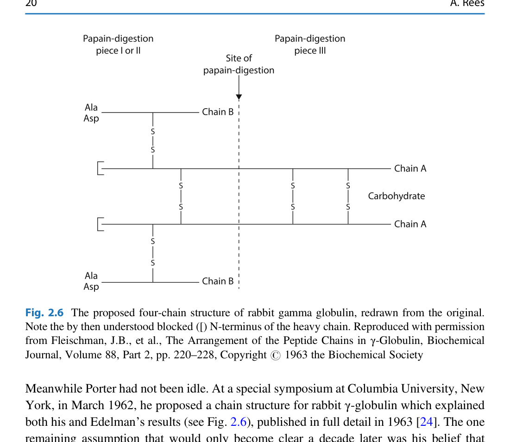
Edelman은 1964년 자신의 모델을 발표하였는데, Porter와는 달랐으나 여전히 각 항체마다 4개 사슬을 포함하였고, 모든 중쇄가 다른 경쇄와 짝을 이룰 수 있었다. 항체를 중쇄-경쇄 상호작용은 있으나 중쇄-중쇄 상호작용은 없는 고체 “평 소시지”로 보여준 점이 달랐다. 그는 중쇄와 경쇄 영역을 모두 포함하는 항원 결합 영역이 소시지 각 끝에 위치하며, 항원 특이성은 그 영역의 아미노산 차이에 의해 정의된다고 제안하였다. 항체 특이성에 대한 두 세트의 추가 연구가 원을 완성하였다. Edgar Haber는 1964년에 γ-글로불린 사슬의 이황화 환원 및 변성 후 분자에 잔류 구조가 거의 남지 않음을 입증하였다. 변성 형태는 산화 및 재접힘(1959년 Anfinsen이 RNAse에 대해 입증)에 의해 역전될 수 있었고, 이에 항원 결합이 회복되었다. 그의 실험은 또한 결합에 두 사슬이 모두 필요하고, 결정적으로 결합 특이성이 특정 γ-글로불린 서열에 존재함을 증명하였으며, 이는 모든 항체에 공통 서열을 가정한 형태/지시 이론에 심각한 타격이었다. 결정타(coup de grâce)는 1965년 Tanford의 일련의 우아한 실험 결과로 마침내 전달되었다.
[그림 2.7: 1965년 Tanford가 예측한 IgG 사슬 배열의 모식도. A 사슬 = 중쇄, B 사슬 = 경쇄]
디니트로페닐(dinitrophenyl, DNP) 합텐을 리신에 부착하고 DNP-리신에 특이적인 토끼 항체를 생성하였다. γ-글로불린을 DNP-리신 부재 하에 변성·재접힘시키면 합텐 결합 능력이 회복되었다. 나아가 비특이적 γ-글로불린을 DNP-리신 존재 하에 변성 후 재접힘시키면 합텐 결합이 불가능하였다. 결론: 항원 지시는 존재하지 않았다. 같은 해 Tanford는 토끼 γ-글로불린과 Porter의 I, II, III형 파파인 단편에 대한 침강 및 점도 실험에 기반하여 중쇄와 경쇄 배열 모델을 제시하였다(그림 2.7). 중쇄와 경쇄 가변 도메인의 4차 관계의 세부사항은 완전히 정확하지 않았으나, 당시 대부분의 다른 단백질 형태에 사용된 단순 “타원형” 모델보다 IgG 위상에 훨씬 가까웠다. γ-글로불린과 다양한 단편에 대한 선광 분산(optical rotatory dispersion, ORD)을 이용하여 Tanford는 또한 항체가 무시할 만한 α-나선 함량을 보유함을 올바르게 보여주었고, 따라서 그의 모식도에서 제외되었다. 항체 사슬에 대한 확정적 광범위 아미노산 서열 데이터는 Rockefeller 연구소의 Edelman 동료이자 당시 연구자인 Norbert Hilschmann과 Lyman Craig의 연구와 함께 도래하였다. 1962년 Edelman과 Joseph Gally는 Bence Jones 단백질이 다발성 골수종(multiple myeloma) 환자에서 생산된 γ-글로불린 경쇄 및 정상 γ-글로불린 경쇄와 유사함을 보여주었다. 1965년까지 Hilschmann과 Craig는 두 환자(유명히 Roy와 Cummings로 알려짐)로부터 과생산된 단백질을 분리한 후 시퀀싱 연구를 수행하였다. 두 가지 중요한 일차 구조 결과가 도출되었다. 첫째, 사슬의 C-말단 서열은 두 환자 간 거의 동일해 보였다. 둘째, 두 N-말단 영역은 상당히 다양하였다. Edelman과 Gally는 단일 사슬 내 그러한 차이를 생성할 수 있는 진화 기전에 대해 추측하며, 항체 다양성이 사슬의 직렬 중복된 복사본 축적에 의해 생성되고, 가변 영역에 차이를 포함하며, 이후 교차(crossing over)로 상이한 사슬 서열을 생산한다고 제안하였다(그림 2.8 참조). 흥미로운 가설이었으나 물론 기존 “생식세포계(germline)” 이론과는 상충하였는데, 이는 요구되는 각 특이성마다 상이한 유전자를 요구하므로 단점이 있었다.
[그림 2.8: 직렬 중복된 유전자들의 가상 이중 배열에서 단일 교차 과정을 나타낸 도해]
영국 Cambridge MRC의 César Milstein도 “교차” 논쟁에 뛰어들었다. 동시에 그는 항원 인식을 담당할 수 있는 아미노산 서열의 가변 부분의 가능한 위치에 대한 제안을 하였다. 경쇄에 대한 그의 관찰, 즉 보다 가변적인 서열이 V-영역의 두 영역, 첫 번째는 30-32번 위치 주변, 두 번째는 92-94번 및 96번에 군집한다는 것은 가변 영역에 과가변성(hypervariability)의 특이적 영역이 존재한다는 첫 단서였다. 그는 실제로 경쇄의 상보성 결정 부위(Complementarity-Determining Regions, CDRs) 중 CDR1과 CDR3를 확인한 것이었으나, 다른 고도 가변 클러스터 가능성도 허용하였다. 1967년 논문에서 항체 다양성의 가능한 유전적 기원을 다루면서 Milstein은 정확히 어떤 기전이 작동하는지 불확실하였다: “3개 이상의 구조 유전자가 N-말단 절반을 코딩하는 것으로 보이므로, ’반 유전자(half gene)’를 포함하는 염색체 재배열 또는 삽입의 어떤 기전을 가정해야 한다. … 생식세포계에 매우 많은 수의 유전자를 제안하지 않는 한, 유전자의 가변 부분에 체세포 과돌연변이의 추가 기전이 작동해야 한다.” 1969년까지 Edelman은 다른 5명의 Rockefeller 동료와 함께 EU로 알려진 골수종 γG1(IgG1)의 중쇄와 경쇄를 모두 시퀀싱하였다. 단백질 화학의 역작(tour de force)이자 항체 구조 이해의 분수령인 이 연구의 결론 중 일부는 다음과 같았다: 1. 항원 결합에 대한 V-영역 기여 이해는 구조 정보가 필요하다. 2. 티로신 잔기가 항원 결합에 관여하는 것으로 보인다. 3. VH와 VL 사슬 간 이황화 다리의 존재는 이들 결합 주변 구조 고정에 역할을 시사한다. 4. “밀접 상동성” CH1과 CL 불변 영역의 존재는 가변 도메인에 의한 항원 인식을 촉진하기 위한 안정화 도메인으로 작용할 수 있다. 5. CH1과 CL 불변 도메인은 다양한 동물 종에 걸쳐 보존되는 것으로 보인다. 6. Fc 영역은 인간과 토끼 감마 글로불린 간 밀접한 유사성을 보여 보체계 활성화와 같은 특이적 기능을 나타내도록 진화하였을 수 있다.
2.7 γ-글로불린: 이소타입과 알로타입
1960년대 초 단일 종의 γ-글로불린 그림은 Porter, Edelman 등의 중요한 서열 분석과 함께 Fort라도 많은 실험실에서 수행된 혈청학적 분석을 모두 설명하지 못하였다. 1964~1967년 동안 여러 그룹이 상이한 인간 경쇄 및 중쇄(γG) 이소타입(isotype)을 밝혀내기 시작하였으나, 중쇄의 경우 일부 연구가 정상 및 골수종 단백질 모두에 대해 이루어지고 상이한 명명법을 사용하여 해석이 복잡하였다. 경쇄 특성화를 위한 Bence Jones 단백질 서열을 이용한 초기 연구는 정상 경쇄와 동일함이 입증되어, 단일 B 세포가 두 경쇄 이소타입 중 하나만 만들 수 있다는 중요한 사실을 포함하여 이소타입성 카파(kappa)와 람다(lambda) 구분으로 이어졌다. 경쇄 퍼즐의 마지막 조각은 1969년과 1970년 Frank Putnam의 두 출판으로 맞춰졌으며, 각각 카파 및 람다 Bence Jones 경쇄 단백질의 완전 서열이 기술되었다. 시퀀싱은 경쇄의 2-도메인 특징, 즉 가변 및 불변 서열 도메인을 확인하였다. γG 중쇄에 대해 Henry Kunkel과 동료들은 이용 가능한 공표 데이터를 평가하고 1966년 WHO에 명명법을 제안하여 인간 γ-글로불린 중쇄 이소타입에 대한 상이한 표기를 단일 체계로 통합하였으며, 표 2.1에 요약되어 있다.
표 2.1 IgG 아부류의 WHO 명명법
| 기존 γ-글로불린 명 | 골수종으로서의 발생률(%) | WHO 제안명 | 중쇄명 |
|---|---|---|---|
| We, C 또는 γ2b | 70–80 | IgG1 또는 γG1 | γ1 |
| Ne 또는 γ2a | 13–18 | IgG2 또는 γG2 | γ2 |
| Vi, Z 또는 γ2c | 6–8 | IgG3 또는 γG3 | γ3 |
| Ge 등 | 3 | IgG4 또는 γG4 | γ4 |
7년 후(1973) Kunkel은 이용 가능한 광범위 혈청학적 데이터를 검토하고 순환 인간 혈청 항체에 존재하는 상이한 γ-사슬 이소타입의 상대 수준 추정치를 발표하였다: IgG1 66±8%, IgG2 23±8%, IgG3 7.3±3.8%, IgG4 4.2±2.6%. 이들 백분율은 명백히 면역학적으로 구별되는 역할, 오랫동안 연구된 보체 활성화 중 하나를 시사하였고, Kunkel은 이를 Fc 영역의 가능한 역할로 언급하였다. 그러나 이소타입의 상세 서열과 특히 3차원 구조 부재 하에서는 결정적으로 중요한 차이들이 불명확하게 남았고, Fc 수용체 family와 그 기능이 10여년 후 특성규명되기까지 Fc 영역의 완전한 기능적 역할은 모호하게 남았다. 그러나 Kunkel이 서열만 검사해서는 볼 수 없었던 Fc의 또 다른 특징이 있었으나, 혈청학적으로는 중요한 것으로 알려져 있었다. 1956년까지 거슬러 올라가면, Jacques Oudin은 프랑스 과학아카데미에 항체의 미래 임상 사용의 중요한 측면이 될 현상을 보고하였다. 비면역 토끼에 다양한 항원에 면역화된 다른 토끼의 항혈청 또는 항혈청-항원 침전물을 주사하면, 비면역 토끼의 혈청이 공여자 혈청과 침전 거동을 보였다. Oudin의 해석은 같은 종의 혈청이 동일하지 않으며, 나아가 같은 종 단백질을 같은 종 동물에 면역화해도 면역 반응 생성 없이는 불가능하다는 것이었다. 그는 혈청 내 반응성 성분을 알로타입(allotype) 항체라 불렀다. 45마리 상이한 토끼를 이용한 광범위 혈청학에 기반하여 Oudin은 7개 상이한 알로타입을 지정하고, 유전적 기원일 가능성이 있으므로 다른 종에서도 나타날 가능성이 높을 것이라고 추측하였다. 동시에 Lund에서 일한 Rune Grubb는 인간 혈청에서 유사한 알로타입 패턴을 확립하였다. 1964년까지 Grubb와 Kunkel은 상이한 알로타입성 거동을 정의하는 항체 γ-사슬상의 일련의 알로타입성 마커(Gm이라 불림)를 기술하였다. 이들 관찰의 잠재적 중요성은 1963년 Allen과 Kunkel이 다회 수혈을 받은 24명 소아 중 71%의 혈청에서 항-Gm 응집 항체의 존재를 보고하면서 부각되었다. 1965년 WHO는 14개 감마 사슬(γG1, 2, 3에 대한 것이나 γG4에 대한 것은 없음) 마커(Gm 1-14)와 3개 카파 사슬 마커(Km 1-3)를 포함하는 인간 사슬 마커에 대한 새로운 명명 절차를 제안하였다. 1980년대까지 이들 알로타입적 특징은 중쇄의 경우 Fc 영역 내, 경쇄의 경우 불변 영역 내 항원 결정기(전형적으로 단일 아미노산 변화)이며, 우성 상염색체 멘델 형질로 전달되는 사슬 다형성을 정의하고 Negroid, Caucasoid, Mongoloid 집단에 차별적으로 발현됨이 입증되었다. 오늘날 훨씬 많은 인간 알로타입이 알려져 있으며, 대부분은 소수의 IgA2(A2m)에 존재하는 알로타입과 함께 IgG1-3 아부류와 연관된다. IgG1 Gm 알로타입의 중요성은 생체 내 임상적으로 유용한 항체의 약동학에 대한 영향으로 잘 확립되어 있다.
2.8 항체 인식의 구조적 기반 규명
1967년 말까지 소수의 경쇄 서열 및 부분 서열이 결정되었다. 이들 데이터 중 일부는 앞서 언급된 1967년 10월 28일 출판된 Milstein의 Nature 논문에서 논평되었으며, 경쇄 가변 영역의 두 분절에서 서열 가변성을 언급하였다. Elvin Kabat은 검토할 더 많은 데이터를 가졌을 수 있고, Kabat의 1968년 논문이 1967년 11월 말이 되어서야 투고되었으므로 Milstein의 분석을 알았을 것이다. 이 여전히 다소 제한된 서열 정보 분석에서 Elvin Kabat은 일부는 정확하고 일부는 덜한 핵심 관찰들을 하였다. 그는 경쇄 가변 영역에서 대부분의 다른 위치보다 덜 보존된 두 서열 분절을 확인하고 이들이 항원 인식에 “possibly” 관여한다고 추측하였다. 그는 또한 항체 접힘에 관여할 수 있다고 제안한 세 번째 영역도 언급하였다. 그는 또한 항체가 항원 주위를 더 잘 감싸기 위해 “유연”해야 한다는 요구에 글리신 잔기의 높은 빈도가 역할을 할 수 있다는 데 설득되었다(여전히 Pauling 지시 이론의 흔적 존재). 서열 가변성의 세 번째 부분(약 50-55번 잔기)은 1969년 Prague에서 돼지 항체를 연구한 Frantisek Franěk에 의해 확인되었고 항원 인식에 중요하다고 여겨졌다. 더 많은 항체 서열이 이용 가능해지면서, 수학자 Tai Te Wu와 협력한 Kabat은 77개 경쇄 서열을 분석하고 위치 함수로서 아미노산 가변성을 작도하여 3개의 과가변 서열 분절과 상보성-결정 잔기로서의 likely한 역할을 명확히 보여주었다(CDRs, 그림 2.9 참조). 이들 세 분절이 CDR로 관여한다고 제안함으로써 Kabat은 3차원에서 이들 간 관계가 무엇인지 모르는 상태에서 항체 특이성의 서열 기원을 확고히 정립하였다. 이는 단백질 수준에서 항체를 정의하는 중요한 진보였으나, Kabat은 또한 과가변 서열 분절(CDR1과 CDR3)이 가변 영역에 도달하는 유전 기전에 대해 추측하고, 이들이 DNA의 작은 분절 또는 “에피솜(episome)”으로 삽입되는 것으로 가장 잘 설명된다고 결론지었다.
[그림 2.9: 경쇄 가변 영역의 상이한 아미노산 위치에서의 가변성. GAP는 에피솜 삽입이 제안된 위치를 나타냄]
그러나 이 모든 것은 경쇄에 기반한 것이었고, 서열 정보 도착이 느린 중쇄는 항원 인식에서 보다 중요하다고 여겨졌다. New York Mt. Sinai 의과대학의 Donald Capra는 Kunkel의 전 박사 학생이자 떠오르는 스타로서 다수의 IgG 중쇄를 시퀀싱하였고, Wu와 Kabat 논문 1년 후에 경쇄에 대해 Kabat이 기술한 동일한 과가변성 분절을 드러냈다. 현재 보다 광범위한 서열 데이터에 대한 후속 분석(역시 1971년 출판)에서 Kabat은 두 사슬 모두에서 적어도 CDR1과 CDR3 분절이 상보적 결합 표면 형성에 관여한다고 결론지었으나, CDR2의 역할에 대해서는 여전히 불확실하였다. 답은 2년 후 골수종 항체 New로부터의 Fab 단편의 X선 구조로 Roberto Poljak에 의해, 병행하여 Allen Edmundson에 의한 경쇄 이량체 Mcg 구조로 도래하였다. Poljak 구조는 Kabat과 Capra의 CDR들, 각 사슬에서 세 개씩이 Fab 가변 영역의 한 끝에 “밀접한 공간적 근접성”으로 존재하고 항원 결합을 위한 연속 표면을 제공하도록 완벽히 위치함을 명확히 보여주었다(그림 2.10a 참조). 두 구조로부터 명확해진 것은 베타-시트 “면역글로불린 접힘(immunoglobulin fold)”이 화살표 베타 가닥 말단의 타이트 베타 턴 내 글리신 잔기의 위치지정에 의해 orchestrate되어 서로 되돌아와 역평행 베타-시트를 형성한다는 것이었다(그림 2.10b 참조). Kabat은 글리신 잔기가 항원 결합에 필요한 사슬 유연성 도입을 위해 존재한다고 잘못 추측하였다.
[그림 2.10: Fab New의 결정 구조에서 중쇄(H1, H2, H3) 및 경쇄(L1, L2, L3) CDR들의 공간적 집합과 역평행 베타 가닥 구조를 보여주는 모식도]
2.9 항체 다양성의 기원
1970년까지 무수한(그렇게 추정된) 항원 각각에 대한 상이한 항체가 게놈에 어떻게 코딩될 수 있는지를 설명하려는 다양한 이론들이 유포되었다. 1970년 위대한 초기 분자생물학자 Lee Hood와 David Talmage는 다음과 같은 계산을 수행하였다: 인간의 DNA 함량 = 2.3×10⁻¹¹ g (정자 세포, 반수체) = 3.7×10⁹ 염기쌍; 하나의 가변 영역 = 107개 아미노산; 하나의 가변 유전자 = 321 염기쌍; 20,000개 가변 유전자 = 6.4×10⁶ 염기쌍; 20,000개 가변 유전자 = 인간 반수체 세포 유전 물질의 0.2%. 이 다소 단순한 게놈 분석을 이용하여 그들은 각 경쇄가 1600개 가변 영역(V-영역) 유전자와 3200개 중쇄 V-영역 유전자로 코딩될 수 있으며 이는 게놈 DNA의 0.2%에 불과하다고 결론지었다. 당시 인간 게놈 완전 서열과 유전자 수가 알려졌다면, 그들의 추정이 인간 게놈의 약 13%를 차지하여 명백히 non-starter임을 깨달았을 것이다! Elvin Kabat은 다른 설명을 가졌다. 위에서 지시했듯이 그는 변이가 소수 유전자에 짧은 서열의 “에피솜 삽입”을 통해 발생한다고 가정하였다: “짧은 선형 서열만을 포함하는 삽입 기전은 매우 많은 양의 DNA 사용 없이 얼핏 보기에 무한한 수의 상보적 부위를 제공하는 문제의 상당한 단순화를 제공한다.” 그러나 이들은 가설이었고 필요한 것은 증명이었다. 1971년 겨울 Basle의 Dulbecco 초청 후 Susumu Tonegawa는 California Salk 연구소에서 새로 설립된 Basel 면역학 연구소로 옮겼다. 그는 항체 다양성 기반 연구 프로젝트를 맡았다. Tonegawa는 상이한 V-영역 유전자 수 정량에 도움이 될 최근 개발된 경쟁 RNA 혼성화 방법을 적용하여 “유전자 수” 문제에 접근하기로 하였는데, 이는 Salk에서 배운 것이었다. 1973~1974년 그의 첫 실험 결과는 경쇄 가변 유전자 수를 1~200개 사이로 두었다. 넓은 범위였고 Hood와 Talmage의 1600 추정치보다 훨씬 적었으나, 요구되는 V-영역 가변성을 설명하기에 여전히 너무 작다는 우려를 유지하였다. 골수종 세포 DNA를 이용하여 Tonegawa는 혼성화 실험을 반복하여 동일한 수 범위에 도달하였다. 결론? 생식세포계 유전자 수가 훨씬 적다면, 다양성은 어떻게든 체세포 기전에 의해 생성되어야 한다. 1976년 “림프구 다양성의 기원”에 관한 Cold Spring Harbor 회의에서 Donald Capra, Leroy Hood, Phil Leder, Honjo Tasuku(혼조 다스쿠) 등이 참석한 가운데 Tonegawa는 제한된 생식세포계 V-유전자 레퍼토리에 대한 증거를 발표하고 항체 다양성 설명을 위해 분화된 세포에서 이 작은 레퍼토리에 작동하는 체세포 과정이 있어야 한다고 주장하였다. 1978년까지 Tonegawa는 V-영역 유전자와 J-분절로부터 람다 경쇄 가변 영역의 조합 조립과 완전 경쇄 형성을 위한 불변 영역과의 조립에 대한 증거를 제시하였다. 후속 출판에서 그는 조립 순서가 V-J-C이며, 성숙 경쇄 서열이 일부 위치에서 생식세포계 서열과 다르므로 과가변 영역에서 관찰된 돌연변이가 체세포 과돌연변이 과정에 의해 도달하였음에 틀림없음을 보여줌으로써 그림을 완성하였다. 같은 해 미국 NIH의 Phil Leder와 미국 Caltech의 Lee Hood는 카파 사슬 연구로 동일한 결론에 도달하였으며, Leder는 염색체상 V, J, C 유전자 간 관계와 재조합이 두 경쇄 대립유전자 중 하나에서만 발생한다는 것에 대해 더 상세히 제공하였고, Hood는 경쇄 조립 기전에 대한 동시대 누구보다 기전에 근접한 기계론적 설명을 제시하였다. 이후 2년간 관심은 중쇄 가변 영역으로 전환되었다. 1980년까지 Hood는 중쇄 가변 영역 조립의 세 번째 구성요소로서 D 분절을 발견하고, 후에 재조합 신호 서열(recombination signal sequences, RSS)이 된 보존된 노나머와 헵타머 DNA 서열이 12 또는 23개 뉴클레오티드의 고정 간격(12/23 규칙)에 의해 분리되어 존재함에 주목하였다. 이는 Hood로 하여금 이들 서열 모티프에 의해 매개되는 재조합 모델을 제안하게 하였다. 같은 해 Tonegawa는 IgM에서 IgG로의 부류 전환(class switching)을 설명하였다. Hood 출판 정확히 1년 후 Tonegawa는 다양한 유전자 분절 양단의 RSS에 의해 매개되어 VH-D-JH 재조합이 일어나는 순서와 기전에 대한 실험적 증거를 제공하였다. 이는 VH-D와 DH-J 분절 조립을 촉매하는 특이적 재조합효소(recombinase) 효소에 의한 인식을 보장하여 완전 중쇄 가변 영역을 형성하였다(그림 2.11 참조). 카파와 람다 경쇄 재조합에도 유사한 과정이 작동함이 입증되었다.
[그림 2.11: B 세포에서 중쇄 가변 도메인과 경쇄 가변 도메인이 조합 조립되는 과정 및 각 사슬에서 골격 영역과 CDR의 공간적 관계를 보여주는 모식도]
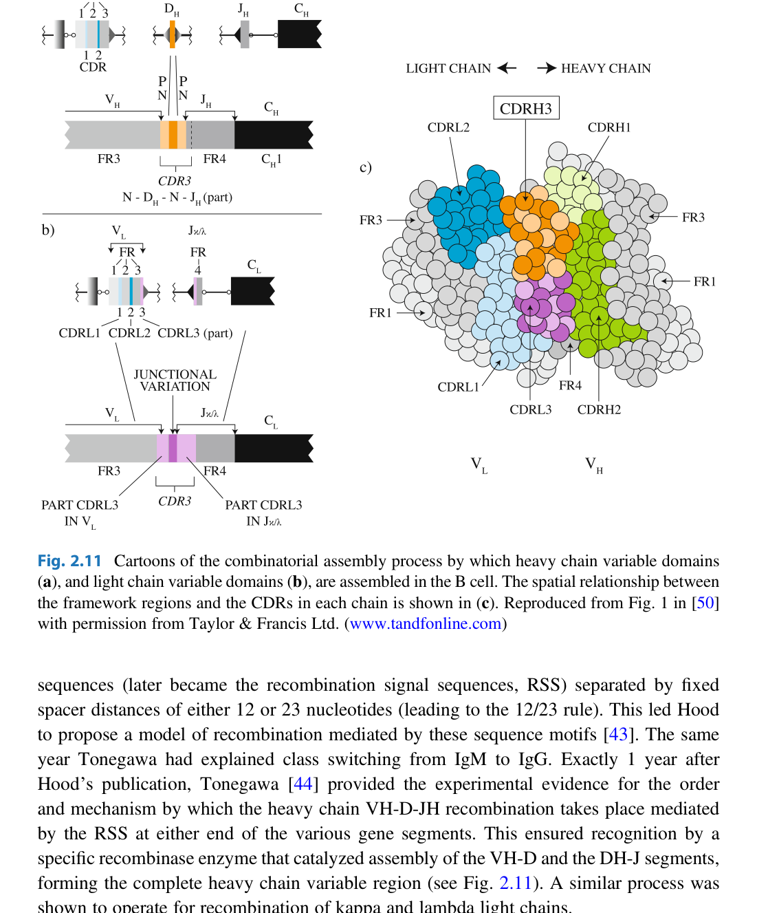
물론 이야기의 끝이 아니라 어떤 면에서는 시작에 불과하였다. 다음 국면은 1975년 출판된 Köhler와 Milstein의 모노클로날 기술(본서의 다른 장 주제)을 활용하였다. 더 이상 생물학이 골수종 세포에만 의존하지 않고 개별 항체 생산 세포가 분자생물학자의 칼 아래에 놓일 수 있었다. 1982년까지 미국 Cambridge Whitehead 연구소의 Frederick Alt와 David Baltimore는 태아 간세포에서 가변 영역 결합 사건 연구에서 추가 다양성 기전을 확인하였다. 일부 경우 VH-DH와 DH-JH 접합이 예상과 달랐다. 그들의 핵심 관찰 중 하나는 일부 항체에서 이들 접합부에 알려진 DH 또는 JH 서열에 코딩되지 않은 아미노산이 존재한다는 것이었다. 그들은 뉴클레오티드의 결실 또는 부가가 이들 접합부에서 일어날 수 있으며, 아마도 엑소뉴클레아제(결실) 또는 말단 전이효소(부가)에 의해 수행된다고 제안하였다. 그들은 이를 N-영역이라 불렀다. 6년 후 다소 다른 다양성 기여자가 확인되었다. 현재 T 세포 수용체를 연구하던 Tonegawa는 VH-DH 접합부에서 작동하는 다소 특별한 기전을 확인하였다. 주형화된 뉴클레오티드 삽입이라 불리는 이 새로운 기전은 재조합 신호 서열 처리 중 생성된 DNA 헤어핀의 절단(nicking)으로부터 기원하고, 단일 가닥 신장이 존재하면 메꾸어 채워지는 것에서 비롯되었다. 절단이 한 개 또는 여러 뉴클레오티드만큼 중심에서 벗어나면, 메꾸어진 돌출부가 원래 코돈과 다른 코돈을 생성할 수 있었다. 절단이 정확히 중앙이면 돌출부가 없고 메꾸기가 불필요하다. Tonegawa는 이를 P-다양성이라 불렀다(P는 회문(palindrome)의 P로, 절단 후 메꾸어 추가된 뉴클레오티드가 단일 가닥 돌출 말단에 존재하는 뉴클레오티드의 거울상(mirror image)을 형성하기 때문이다). P-부가는 경쇄 코딩 요소 접합부에서도 일어날 수 있다. 경쇄와 중쇄 가변 영역 조립을 이들 상이한 재조합 사건과 통합하여 그림 2.11에 도식적으로 요약하였다. 중쇄의 V-D-J 조립과 경쇄의 V-J 조립의 정밀 기전 및 관련 핵심 효소(예: Baltimore가 발견한 RAG1과 RAG2 재조합효소계)를 완전히 푸는 데 이후 20년의 대부분의 시간이 걸렸다. 과돌연변이의 경우, 1983년 과돌연변이 과정이 이전 생각처럼 CDR만이 아니라 가변 영역의 골격(framework) 위치를 표적함이 입증되었으나, 조립된 가변 영역 내 과돌연변이 장치의 정밀 서열 위치, 항체 조립 과정 중 어디서 언제 일어나는지는 당시 알려지지 않았다. 밀레니엄 전환기에 또 다른 일본 과학자 Honjo Tasuku가 IgM에서 IgG 부류 전환의 분자 기전을 찾다가 흥미롭게도 답을 밝혀냈다. Kyoto에서 Honjo 실험실은 부류 전환 사건 및 생발중심(germinal center) 내 V-영역 과돌연변이 출현과 활성이 일치하는 것으로 보이는 핵심 효소, 활성화-유도 데아미나제(activation-induced deaminase, AID)를 확인하였다. 1999년 제한된 증거에 기반하여 Honjo는 부류 전환과 과돌연변이에서 AID 역할에 대해 과감히 추측하였다. 1년 후 그는 AID 유전자가 파괴된 형질전환 마우스 연구에 기반하여 이론 증명을 제공하였다. 1990년대까지 Edelman과 Gally의 “교차” 개념과 Kabat의 “에피솜” 이론은 과학 아이디어의 “좋은 아이디어이나 틀림” 함에 배정되었다. 오늘날 살아 있다면 이들 아이디어가 항체 생식세포계 유전자 다양화의 두 새로운 기전 기술 읽을 때 일말의 정당성을 느낄 것이다. 첫 번째는 2006년 Darlow와 Scott가 처음 기술한 활성화-유도 데아미나제 효소 매개 유전자 전환(gene conversion)과 유사한 과정을 포함하는데, 선택되지 않은 VH 생식세포계 유전자 내 서열 분절이 상동 재조합으로 이미 재배열된 VDJ와 교환될 수 있다. 두 번째, 다소 기이하게 보일 수 있는 기전은 재배열된 VDJ의 VH 생식세포계 유전자가 “VH 침입” 기전으로 완전히 교체되는 경우이다. 위에서 다소 간략히 관련된 항체 다양성 기전에 대한 이들 momentous한 발견들의 역사적 배경은, 기여가 중요하였으나 언급되지 않은 많은 연구자들과 함께, 여기서 일일이 나열하기에 너무 길다. 관심 있는 독자는 역사적 맥락의 상세 내용을 관련 문헌에서, 인간 항체 레퍼토리에 대한 현재 논쟁의 추가 상세를 Rees의 총설에서 찾을 수 있다.
2.10 Fc 영역과 이펙터 기능
Fab 단편에 대한 구조 연구가 과가변 서열이 3차원에서 어떻게 병치되고 항체가 항원(예: IgG, IgM, IgA) 또는 알레르겐(IgE)을 어떻게 인식하는지를 설명하였으나, Fc 영역의 가변성 존재 여부, 구조와 기능, Fab 영역과의 관계는 여전히 알려지지 않았다. 1976년 독일 Martinsried의 Max-Planck 생화학 연구소의 Robert Huber 일동은 분리된 Fc 단편 구조를 3.5 Å 분해능으로 보고하였으며, 각 중쇄 불변 영역 사슬상의 두 구조 도메인(CH2와 CH3)을 기술하기에 충분하였다. 구조는 Fab 단편에 존재하는 가변 또는 불변 도메인과의 Fc 도메인 구조 유사성(“면역글로불린 접힘”), 서로 간의 패킹 관계, CH2 도메인에 부착된 탄수화물 위치를 보여주었다. 1년 후 미국 NIH의 David Davies는 골수종 IgG Dob에 대한 초기 저분해능 구조 연구로 돌아가 새로운 기술을 이용하여 고분해능 구조를 생성하여 완전 IgG의 첫 그림을 보여주었다. IgG 형태는 10년 전 런던 NIMR의 Valentine과 Green의 전자현미경 실험으로부터 Y자형으로 제시되었으나, Davies 구조는 T자형이었다. 골수종 유래 항체에서 흔하듯 서열 내 결실이 흔하였다. Dob는 힌지(hinge) 영역 결실로 Fc 영역에 대한 두 Fab 팔의 배향을 제한하였다. Fab 팔과 Fc 영역의 배향은 정상 IgG를 정확히 반영하지 못하였을 수 있으나, Dob의 Fc 영역은 Huber 연구의 분리 Fc 단편과 밀접 유사하였다. 그러나 Fc 영역은 무엇을 하는가? 기질이 되는 용혈을 하던 혈청 항독소의 용혈 효과에 대한 Bordet와 Ehrlich의 초기 실험은 항독소와 용혈을 수행하는 어떤 물질이든 간 관계를 제대로 설명하지 못하였다. 1900년대 첫 10년 동안 다양한 연구자들이 보체 효과와 연관된 다중 성분을 확인하였는데, 항독소 존재 하 용해 활성은 분리된 성분들이 재조합될 때에만 일어났다. 1920년대 중반까지 4개 상이한 성분이 확인되었으며, 일부는 열 민감성이고 효소 활성에 대한 증거를 보였다. 그러나 길고 복잡한 길이었고, 1929년까지도 보체 연구 전문가 Eagle과 Brewer(Johns Hopkins 의과대학)는 혈청 내 보체에 의해 유도된 용혈 수준과 세포에 결합된 항체량 간 직접 관계를 확립하면서도 “…알렉신과 보체라는 용어는 화학적 실체가 아니라 혈청의 설명되지 않은 특성을 여전히 나타낸다”고 인정하였다. 상이한 성분들을 규명하고 분리해 내는 데 10년 이상이 걸렸고, 1940년대 많은 연구 그룹의 창의적 단백질 화학에도 불구하고 보체 성분 4개(C1’, C2’, C3’, C4’)가 분리·부분 특성규명되고 공통 명명법이 제안되었으나, 10년 말에도 보체 지니는 여전히 병 속에 있었다. 알려진 것을 풀기 위해 전년도 미국 면역학회장 Michael Heidelberger는 1950년 6월 New York Shelter Island에서 모든 보체 전문가를 모아 분야 전진 방안을 논의하는 회의에 모았다. 일부 진전에도 불구하고 이후 8년간 진전이 거의 없어, 1958년 런던 St Mary’s Hospital의 Rowley와 Wardlaw는 다음과 같이 관찰하였다: “결론적으로 혈청 살균 작용에 대한 현재 지식 상태를 1900년경 존재하던 것과 비교하면, 우리는 반응의 실제 기전에 대해 아직 거의 더 알지 못한다.” 1960년대 초 두 핵심 돌파구로 퍼즐 해결이 출현하기 시작하였다. Uppsala와 New York Rockefeller 사이에서 일한 Hans Joachim Müller-Eberhard는 γ-글로불린 크기(초원심분리로 11S)의 새로운 보체 성분을 확인하였는데, 이는 항체와 직접 상호작용하고, 열 불안정성(아마도 단백질)이며, 보체 활성화 초기 단계에 관여하였다. 2년 후 미국 Cleveland의 Irwin Lepow는 Müller-Eberhard의 11S 성분이 단일 성분 C’1으로 생각되던 것 중 세 단백질 중 하나(첫 번째)임을 보여주었고, 이를 C1q, C1r, C1s로 명명하였다. 1970년대 초 Müller-Eberhard에 의해 응집 항체와의 C1q의 직접 선호적 상호작용이 입증되었고, 다중 항체와의 상호작용 기반은 Alabama 대학 Robert Stroud가 수행한 C1q 분자의 전자현미경 사진에 아름답게 입증되었다. “튤립 다발” 구조로 알려지게 된 유명한 C1q는 Porter에 의해 세 상이한 단백질 사슬의 6개 복사본으로 구성됨이 입증되었다. 튤립의 섬유상 줄기는 사슬들의 N-말단 영역으로 형성되고 높은 수준의 콜라겐을 포함하였으며, 단일 다중사슬 줄기가 6개 구상 헤드를 지지하였다. 보체계 이해는 이제 빠르게 진전되기 시작하였고, 1980년까지 Oxford의 Porter와 Reid는 C1q 항체 조립 복합체에 대한 모식도를 제시하였는데, 여기서 C1q 튤립 헤드가 다중 항체들의 Fc 영역 내 CH2 도메인에 결합하였다(그림 2.12 참조). 가용성 단일 항원-항체 복합체에 의한 보체계 활성화 회피 요구는 세포 표면의 6개 헤드에 다중 항체가 결합한 후에만 C1q 구조가 촉발되어 잔여 C1 성분들, C1r과 C1s에 결합하도록 하였다. 이들 후자 성분들은 칼슘 이온 도움으로 현재 receptive한 C1q 콜라겐 줄기에 결합하여 세포막 파괴로 이어질 캐스케이드를 시작할 것이다.
[그림 2.12: 세포 표면 항원에 결합된 항체 분자들에 초기 보체 성분이 조립되는 제안 모델. C1q 헤드가 여러 항체 분자의 CH2 도메인에 결합하고 C1r2-Ca-C1s2 사량체가 C1q 콜라겐 줄기에 결합함]
2.11 현대
1980년대는 항체가 면역학적 “스위스 나이프”로서 자격을 보이기 시작한 분자면역학의 “계몽” 10년이었으며, 항체가 항원을 정확히 어떻게 인식하고 그 인식이 “공학”으로 어떻게 변경될 수 있는지, 항체 이펙터 기능을 매개하는 분자 종의 본질, 치료용 항체 개발로 가는 길을 연 새로운 방법에 대한 이해로 rapid한 진보가 이루어졌다. 1987년까지 인간 IgG 이소타입에 의한 차별적 보체 활성화(1976년 Müller-Eberhard가 초원심분리 연구에서 정성적으로 살펴봄), IgM, IgE, IgA2가 Michael Neuberger, Hermann Waldmann 일동에 의해 명확해졌으며, 이들은 활성화 순위를 IgG1 ≃ IgM > IgG3(두 알로타입이 상이한 거동) 순, IgG2와 IgG4 또는 IgE는 낮거나 거의 없음으로 확립하였다. 그들은 또한 IgG3 C1q 결합이 IgG1보다 높으나 세포 용해는 IgG1이 더 효과적이라는 겉보기 역설을 해결하였다. 설명은 IgG1이 캐스케이드 내 후속 프로테아제 단계 활성화에 IgG3보다 효과적이라는 것이었다. IgG3에 의한 높은 C1q 결합은 IgG3의 더 긴 힌지가 C1q 헤드의 더 나은 접근을 허용하기 때문으로 생각되었다. Fc 영역의 추가 기능도 1980년대에 풀렸다. 1950년대 마우스, 랫트, 토끼에서 모체에서 새끼로의 IgG 수송에 대한 초기 연구는 특이적 분자 기전이 작동할 수 있음을 시사하였다. Charlottesville의 Virginia 대학에서 일한 Richard Rodewald는 1980년 신생 마우스의 장 솔가장자리(intestinal brush border)에 표지된 IgG의 특이적 결합을 보여주는 우아한 현미경 연구를 수행하였는데, 모체 IgG를 특이적으로 수송하는 능력은 분자 수송계가 꺼지기 전 약 20일간만 지속되었다. 1983년까지 Rees와 Simister는 수용체가 약 100 kDa 크기 단백질임을 보여주었고, 1985년 수용체를 분리하였는데 소단위 크기가 50 kDa이므로 막에서 이량체일 가능성이 높으나, 저자들이 베타-2 마이크로글로불린(beta-2 microglobulin)으로 제안한 작은 18 kDa 성분도 포함하였다. 1989년 Simister와 Mostov는 현재 FcRn(신생아 Fc 수용체)으로 불리는 것을 클로닝·시퀀싱하였고 큰 소단위가 MHC 클래스 1 family와 관련되고 작은 소단위가 실제로 베타-2 마이크로글로불린임을 보여주었다. 1994년 수용체 구조 연구는 MHC 분류를 확인하였고, 같은 해 수용체와 Fc 간 복합체가 출판되어 FcRn 결합 부위를 Fc의 CH2와 CH3 도메인 사이 영역으로 보여주었다. 같은 해 인간 FcRn이 인간 태반에서 클로닝되었다. IgG 이화작용(catabolism) 조절에서 FcRn의 궁극적 역할은 베타-2 마이크로글로불린 또는 MHC 유사 소단위가 “녹아웃”되어 순환 IgG 수준의 극적 감소를 동반한 마우스의 다양한 유전적 조작으로부터 도출되었다. 예컨대 내피세포의 FcRn에 의해 매개되는 이 조절 기전은 생체 내 IgG 치료용 항체 반감기 조작 표적이었고 지금도 그러하다. 그러나 Fc 영역에 결합한 수용체는 FcRn만이 아니었다. 1986년 신생 Fc 분야의 두 거인, Memorial Sloan Kettering 암센터의 Jeffrey Ravetch와 Rockefeller의 Jay Unkeless의 연구는 면역글로불린이 불변 영역을 통해 나타내는 것으로 보이는 multitude의 기능을 이들 이펙터 사건 발생 방식에 대한 little 이해와 함께 설명하기 시작하였다. Ravetch와 Unkeless는 마우스 면역세포 연구에서 두 상이한 Fc 수용체를 발견하였는데, 하나는 대식세포주와 정상 복강 대식세포에 발현되고, 두 번째는 대식세포에 더해 골수(B 유래)- 및 흉선(T 유래)-유래 림프구에서도 발견되었다. 두 수용체는 Fc 영역을 통해 IgG에 저친화도로 결합하였고 FcγRα와 FcγRβ로 명명되었다. 1989년 Allen과 Seed의 연구는 두 저친화도 수용체 도메인과 다른 추가 도메인을 포함하고 Fc 영역에 고친화도를 나타내는 인간 세포 유래 상이한 수용체들을 확인하였다. 1994년까지 Fc 수용체 이야기, 그 구조와 기능이 이해되기 시작하였다. 그의 총설에서 Ravetch는 다음과 같이 언급하였다: “이들 연구는 FcR이 면역복합체-촉발 염증 개시에 중심 역할을 하며 항체 생산의 림프구 조절 과정에 major 기여할 가능성이 있음을 입증하였다.” 인간 IgG 아부류 특성은 표 2.2에 요약되어 있다.
표 2.2 인간 IgG 아부류의 특성
| 일반 특징 | IgG1 | IgG2 | IgG3 | IgG4 |
|---|---|---|---|---|
| 질량(kDa) | 146 | 146 | 170 | 146 |
| 힌지 영역 길이(잔기) | 15* | 12 | 62 | 12 |
| 중쇄 간 S-S 결합 수 | 2 | 4 | 11 | 2 |
| 상대 풍부도(%) | 60 | 32 | 4 | 4 |
| 혈청 수준 성인 기준(g/L) | ~7 | ~4 | ~0.5 | ~0.6 |
| 생체 내 반감기(일) | 21 | 21 | 7/21 알로타입 의존 | 21 |
| 태반 전달 효율 | ++++ | ++ | ++/++++ 알로타입 의존 | +++ |
| 항원 선택성: 단백질 | ++ | − | ++ | ++ |
| 항원 선택성: 다당류 | + | +++ | − | − |
| 항원 선택성: 알레르겐 | + | − | − | ++ |
| Fc 이펙터 거동: C1q 결합 | ++ | + | +++ | − |
| FcγRI | +++ | − | ++++ | ++ |
| FcγRIIa | +++ | ++/+ 알로타입 의존 | ++++ | ++ |
| FcγRIIb/c | + | − | ++ | + |
| FcγRIIIa | ++/+++ 알로타입 의존 | +/− 알로타입 의존 | ++++ | −/++ 알로타입 의존 |
| FcγRIIIb | +++ | − | ++++ | − |
| FcRn (pH <6.5에서) | +++ | +++ | ++/+++ 알로타입 의존 | +++ |
*원문 표기 156은 오식으로 15의 오기로 판단됨. 성인 혈청 근사값, 알로타입에 의존.
2.12 항체 공학 혁명
1970년대 재조합 DNA 방법 개발과 1980년대 유전자에 부위-특이적 돌연변이를 도입할 수 있는 수단 발견이라는 두 핵심 진보는 분자면역학 분야, 특히 빠르게 발전하는 치료용 항체 분야에 extraordinary한 기회를 열었다. 재조합 DNA 방법은 키메라 항체(chimeric antibody) 구축에 활용되기 시작하였는데, 여기서 뮤린(murine) 불변 영역이 인간 불변 영역 서열로 교체되었다. 최초의 치료용 항체 응용은 T 세포상 CD3 항원을 인식하고 인간에서 급성 신동종이식 거부 치료에 사용된 마우스 모노클로날 항체 OKT3의 임상 사용에 초점을 맞추었으며, 이에 대한 초기 임상 연구는 이미 1981년에 시작되었다. 이러한 완전 뮤린 항체에 대한 인간 내 항-마우스 반응 가능성은 높았고, 이를 염두에 두고 Sherrie Morrison 일동은 1984년 키메라 항체의 최초 사례를 구축하였다. 1994년까지 최초 FDA 승인 항체 ReoPro가 마우스-인간 키메라 IgG1 기반으로 임상 사용에 진입하였다. 그러나 가변 영역은 여전히 뮤린이었고 인간 항-마우스 V-영역 항체 발생 가능성이 있었다. 이를 회피하기 위해 영국 Cambridge 분자생물학 연구소의 Greg Winter는 대단히 창의적인 해결책을 제시하였다. 마우스 항체 유래 CDR이 다른 가변 영역 골격(framework)상에서 구조를 유지할 수 있다면, 인간 V-영역, 즉 경쇄 CDR은 인간 VL 골격에, 중쇄 CDR은 인간 VH 골격에 이식할 수 있다고 추론하였다. 재조합 기술과 부위-지정 돌연변이 유발 기술을 이용한 여러 시도와 단백질 공학 조작 후, Winter는 1986년과 1988년 두 보고로 “CDR 이식(CDR grafting)”이라 불리는 인간화(humanization) 절차가 작동함을 입증하였다. 정제를 거쳐 이는 뮤린(마우스 또는 랫트) 항체로 삶을 시작하는 치료용 항체에 사용되는 주요 “인간화” 방법 중 하나가 되었다. 이 탁월한 업적으로 Winter는 2019년 노벨상을 수상하였다. 또한 1987년 Roberts와 Rees는 항체 CDR의 시험관 내 돌연변이 유발의 최초 사례를 발표하였으며, 기존 항-단백질 항체의 친화도를 한 자릿수(order of magnitude) 개선하는 데 사용되었다. 이들 모든 기술과 곧 개발될 하이브리도마 대안인 “파지 기술”로 무장하고, 항체 세계는 1990년대와 새 밀레니엄에 걸쳐 탄력을 받기 시작할 새로운 치료 혁명의 직전에 있었다. 오늘날 치료용 항체는 역사적 저분자 라이벌을 앞지르는 가장 빠르게 성장하는 치료용 분자를 대표한다. 본서의 나머지는 해마다 신구 질환의 보다 효과적 치료로 글로벌 건강을 개선하는 이들 흥미로운 방법과 응용 중 일부를 안내할 것이다.
더 읽을거리
- Fundamental Immunology (7판). William E. Paul (편). Walters Kluwer: Lippincott Williams and Wilkins. 2013.
- The Antibody Molecule: From antitoxins to Therapeutic Antibodies. Anthony R Rees, Oxford University Press, 2014.
- A History of Immunology (2판). Arthur M. Silverstein. Academic Press. 2009.
- Species and Specificity. Pauline M.H. Mazumdar. Cambridge University Press. 2002.
3장 단클론 항체와 하이브리도마
3.1 최초의 단클론 항체
1960년대와 1970년대는 면역학(immunology) 분야에서 흥미로운 과학적 발전이 이루어진 시기였다. 당시의 중요한 난제 중 하나는 항체(antibody)를 암호화하는 유전자가 게놈 수준에서 어떻게 구성되어 있는지였다. 제한된 크기의 척추동물 게놈이 어떻게 방대한 수의 서로 다른 항체를 암호화할 수 있는지는 아직 정확히 알려져 있지 않았다. 또한 항체의 아미노산 사슬이 구조적으로 어떻게 조립되는지, 항체와 항원(antigen) 사이의 접촉이 정확히 어떻게 이루어지는지도 완전히 규명되지 않았으며, 그 외에도 해결해야 할 수많은 수수께끼가 남아 있었다.
1970년대에 특이적 항체 연구에 이용할 수 있었던 실험 재료는 상당히 제한적이었다. 이는 모든 항체 기반 면역반응이 올리고클론성(oligoclonal) 내지 다클론성(polyclonal) 특성을 가지며, 혈액에서 분리한 항체 생산 세포는 일차 세포(primary cell)로서 배양 중 클론성으로 증식하지 않기 때문이다. 이용할 수 있었던 최선의 도구는 골수종(myeloma)이었는데, 이는 B세포 계열의 자발성 종양으로서 실험실에서의 무기한 배양이 가능한 골수종 세포주(myeloma cell line)의 수립을 가능하게 하였다. 이들 세포주는 경쇄(light chain) 혹은 중쇄(heavy chain), 또는 경우에 따라 완전한 면역글로불린 G(immunoglobulin G, IgG)로 구성된 항체 단백질의 공급원으로 사용되었다. 그러나 이들 골수종 항체의 표적 분자는 대개 알려져 있지 않았다.
당시 27세의 박사후연구원이었던 게오르그 쾰러(Georges Köhler)는 영국 케임브리지 MRC 분자생물학 연구소(Laboratory of Molecular Biology, LMB)의 세자르 밀스타인(César Milstein) 실험실에서 일하게 되었고, 골수종 세포주를 이용하여 그 항원을 찾기 위한 연구를 수행하였다. 쾰러는 배양에서 증식하지 않는 항체 생산 B세포(B-cell)를 불멸화된 골수종 세포주와 융합(fusion)시켜 불멸화한다는 대안적 전략을 밀스타인에게 제안하였다. 융합 세포를 선별하고 융합되지 않은 골수종 세포의 증식을 억제하기 위하여 쾰러는 하이포크산틴-아미노프테린-티미딘(hypoxanthine-aminopterin-thymidine, HAT) 배지를 이용한 선별법을 고안하였으며, 그 원리는 아래에 상세히 설명한다.
쾰러와 밀스타인은 쉽게 구할 수 있는 항원인 양 적혈구(sheep erythrocyte)로 마우스를 면역화(immunization)하고, 면역화된 마우스에서 비장세포(splenocyte)를 분리하여 골수종 세포와 융합시킨 뒤 하이브리드 세포를 선별하였다. 그리고 지속적으로 증식하는 하이브리드 세포의 클론이 양 적혈구를 특이적으로 인식하는 단클론 항체(monoclonal antibody, mAb)를 분비함을 입증하였다. 이 연구는 학술지 『네이처(Nature)』 1975년 8월 7일호에 게재되었다. 이후 1984년 쾰러와 밀스타인은 닐스 예르네(Niels K. Jerne)와 함께 “면역계의 특이성 조절과 발생에 관한 이론 및 단클론 항체 생산 원리의 발견”에 대한 공로로 노벨 생리의학상을 수상하였다.
3.2 항체의 서열, 구조와 기능
3.2.1 전체 구조
항원에 의한 자극에 대응하여 면역계가 표적 특이적 항체를 생성하는 과정의 세부 사항은 면역학 교과서에 상세히 다루어져 있으므로 여기서는 생략한다. 여기서는 면역글로불린(immunoglobulin)의 아미노산 서열, 이로부터 형성되는 2차·3차 구조 및 기능을 간략히 기술한다. 항체 공학(antibody engineering)과 항체 치료 분야에서 현재 가장 중요한 면역글로불린 부류인 IgG에 초점을 맞춘다.
IgG 분자는 각각 약 440개 아미노산으로 구성된 2개의 동일한 중쇄(heavy chain)와 각각 약 220개 아미노산으로 구성된 2개의 동일한 경쇄(light chain)로 이루어진다. 각 사슬은 약 110개 아미노산으로 구성된 도메인(domain)들로 조직되어 있다. 모든 도메인은 고전적인 면역글로불린 접힘(immunoglobulin fold)을 공유하는데, 이는 그리스 키 토폴로지(Greek key topology)를 갖는 두 개의 베타 시트(beta-sheet)에 배열된 7개(불변 도메인) 또는 9개(가변 도메인)의 역평행 베타 가닥(beta-strand)이 두 층의 샌드위치를 이룬 구조이다. 베타 가닥 사이는 루프(loop)로 연결된다.
중쇄와 경쇄는 사슬 간 이황화 결합(interchain disulphide bond) 및 가변 중쇄(variable heavy, VH) 도메인과 가변 경쇄(variable light, VL) 도메인 사이, 그리고 불변 중쇄 1(constant heavy 1, CH1) 도메인과 카파 불변(kappa constant, Cκ) 또는 람다 불변(lambda constant, Cλ) 도메인 사이의 비공유 상호작용에 의해 긴밀히 연결된다. 두 중쇄는 힌지 영역(hinge region)의 이황화 결합(인간 IgG1의 경우 2개) 및 CH2 도메인 간, CH3 도메인 간의 비공유 상호작용에 의해 공유 결합으로 연결된다. 인간 IgG1은 CH2 도메인에 N-연결 글리코실화(N-linked glycosylation) 부위를 하나 갖는다.
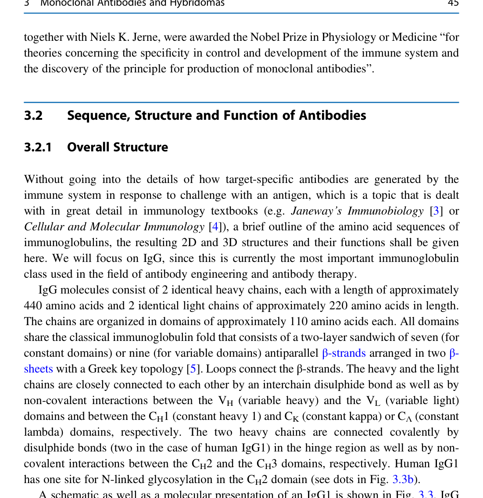
그림 설명: 인간 IgG1 분자의 구조. (a) 모식도, (b) 리본 구조. 중쇄는 적색 계열, 경쇄는 청색 계열, 힌지 영역은 녹색으로 표시. 도메인 내 및 사슬 간 이황화 결합은 황색 선으로 표시. 항원 결합 부위, Fc 수용체(Fc receptor) 및 보체(complement) C1q 결합 부위, 신생아 Fc 수용체(neonatal Fc receptor, FcRn) 결합 부위를 화살표로 표시.
3.2.2 가변 도메인
가변 도메인은 항원 결합을 담당한다. VH 도메인과 VL 도메인을 합하여 항체의 Fv 단편(fragment variable, Fv)이라 한다. VH와 VL 도메인 각각의 세 개 루프가 함께 항원 결합 부위를 형성한다. 이들 루프는 상보성 결정 영역(complementarity-determining region, CDR) 또는 초가변 루프(hypervariable loop)라 불리며, 서로 다른 항체 간에 아미노산 서열이 상이하다. CDR의 아미노산 서열이 항체 항원 결합 부위의 화학적·구조적 특성을 결정하므로, 사실상 무한한 수의 서로 다른 항원 구조에 결합하고 적응할 수 있다.
항원 분자상에서 항체가 결합하는 특이적 지점을 에피토프(epitope)라 하고, 항체상에서 이에 대응하는 지점을 파라토프(paratope)라 한다. 인간 항-HIV-1 항체의 Fv 입체 구조 및 VL·VH 도메인의 2차 구조 제시(Collier de Perles)는 원문 Fig. 3.4에 제시되어 있다(그림 설명으로 대체: 중쇄 CDR은 적색 계열, 경쇄 CDR은 청색 계열로 표시되며, CDR 루프는 도메인 상단에 위치함).
3.2.3 불변 도메인
이름이 시사하듯이 항체의 불변 도메인은 서열이 불변하며, 이는 특정 부류(예: IgG1)의 모든 항체가 면역반응 동안 변하지 않는 동일한 서열을 가짐을 의미한다. 불변 도메인은 두 영역으로 구분된다. CH1과 Cκ 도메인 쌍은 항체의 Fab 단편(fragment antigen-binding, Fab)의 일부로서 Fv와 힌지 사이에 위치하고, 중쇄의 CH2와 CH3 도메인의 동종이량체(homodimer)는 결정화 가능 단편(fragment crystallizable, Fc)을 형성한다.
힌지 영역에 가까운 CH2 도메인 선단 영역은 FcγRI(CD64), FcγRII(CD32), FcγRIII(CD16)과 같은 Fc 수용체가 결합하는 부위이다. 이들 수용체는 자연살해(natural killer, NK) 세포와 대식세포(macrophage)를 포함한 다수의 면역세포에 존재하며, 항체 의존 세포 매개 세포독성(antibody-dependent cellular cytotoxicity, ADCC)과 같은 이펙터 기능(effector function)을 유발하여 항체가 결합한 표적을 최종적으로 제거한다. 또한 보체 연쇄반응(complement cascade)의 첫 번째 성분인 C1q가 이곳에 결합하여 보체 의존 세포독성(complement-dependent cytotoxicity, CDC) 또는 보체 의존 세포성 세포독성(complement-dependent cellular cytotoxicity, CDCC)을 유발한다.
항체는 현저히 긴 생체 내 반감기(in vivo half-life)(예: 인간 IgG1의 경우 최대 약 3주)를 가지는데, 이는 또 다른 수용체 결합 부위에 의해 매개된다. 이 부위는 CH2와 CH3 도메인 사이 경계 영역에 위치하며, 이곳에 FcRn이 결합한다. 동일한 영역에 단백질 A(Protein A) 결합 부위가 존재하는데, 이는 연구 및 바이오산업에서 친화 크로마토그래피(affinity chromatography)에 의한 항체의 간편하고 효율적인 정제에 일상적으로 이용된다.
3.3 하이브리도마법
3.3.1 출발점: 항체 생산 B세포
쾰러와 밀스타인 실험의 목적은 배양에서 지속적으로 증식하면서 단일 종류의 항체 분자, 즉 단클론 항체를 분비하는 세포주를 수립하는 것이었다. 비장세포는 면역화된 동물에서 분리할 수 있는 일차 항체 생산 세포이다. 혈액 림프구(blood lymphocyte)나 편도(tonsil)에서 분리한 세포도 동일한 특성을 가지며, 공여자가 동물이 아니라 회복기 또는 백신 접종자인 인간인 경우 특히 쉽게 접근 가능하다.
그러나 이들 일차 세포는 배양에서 장기간 증식할 능력을 갖지 못한다. 반면 종양 유래 골수종 세포주는 정확히 이러한 능력을 가지지만 의미 있는 항체를 생산하지 못한다. 해결책은 비장세포와 골수종 세포를 융합하여 항체 생산과 지속적 증식이라는 두 가지 바람직한 특성을 겸비한 하이브리드 세포, 즉 하이브리도마(hybridoma)를 만드는 것이었다. “hybridoma”라는 용어는 원래 쾰러와 밀스타인이 제안한 것이 아니라 1976~1977년 밀스타인 실험실에 안식년으로 방문한 레너드 Herzenberg가 제안한 것으로 회고된다.
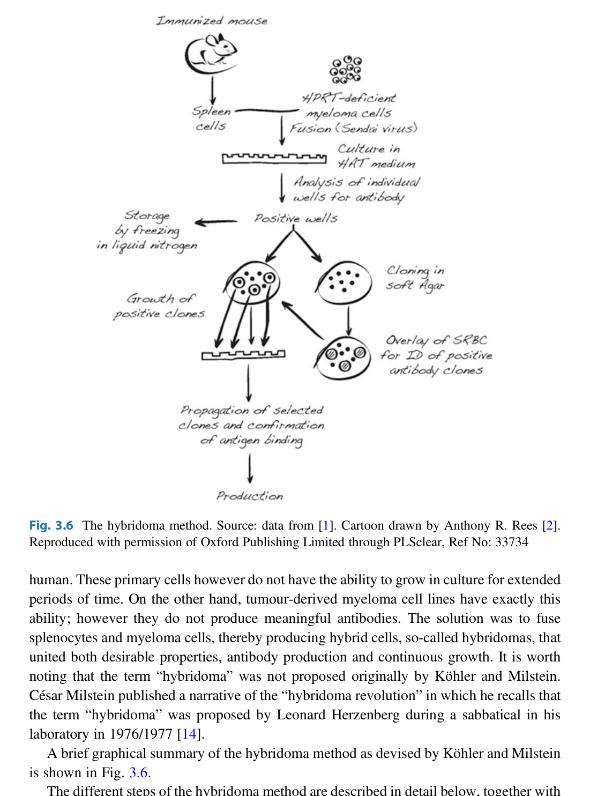
그림 설명: 하이브리도마법 개요. 면역화 마우스 비장세포와 골수종 세포의 융합, HAT 배지 선별, 한계희석 및 클론 선별 과정을 도식화함.
3.3.2 면역화
세포 융합 후 양호한 하이브리도마 수율과 고친화성(high-affinity) IgG 항체의 생산을 얻기 위해서는 통상 마우스 또는 랫트인 동물을 매우 효율적으로 면역화하는 것이 필수적이다. 면역화 결과는 마우스 계통(mouse strain), 면역원(immunogen)의 종류와 강도, 면역화 전략과 일정 등에 의존한다. 면역원으로는 전체 세포나 세포 구성성분은 물론 정제 분자(단백질, 지질, 핵산 등)를 사용할 수 있다.
일반 원칙으로서 면역화에 사용된 물질의 순도가 높을수록 결과 하이브리도마의 표적 특이성이 높아진다. 전체 세포나 세포 용해물을 이용한 면역화는 강한 면역반응을 유발할 수 있으나 반드시 원하는 표적에 대한 반응이지는 않다. 반면 고도로 정제된 항원은 매우 표적화된 면역반응을 유도하지만 항원의 특성에 따라 그 강도가 약할 수 있다. 따라서 면역계를 효율적으로 자극하는 애주번트(adjuvant)를 항원과 함께 투여할 필요가 있다. 가장 널리 사용되는 애주번트는 완전 프로인트 애주번트(complete Freund’s adjuvant, 광물유와 불활화된 결핵균 입자로 구성) 또는 불완전 프로인트 애주번트(incomplete Freund’s adjuvant, 광물유만으로 구성)이다. 프로인트 애주번트는 주사 부위와 주입량에 따라 동물에게 외상을 줄 수 있으므로 알루미늄(aluminium), ALD/MDP(alhydrogel/muramyl dipeptide), MF59 등 대체 애주번트가 사용될 수 있다.
반복 면역화(부스터 면역화, booster immunization)는 동물에서 고친화성 IgG 항체의 생산을 유도한다. 고도로 활성화된 림프모구(lymphoblast)는 골수종 세포와의 융합 효율이 매우 높다.
3.3.3 융합에 적합한 골수종 세포주
현재 융합 파트너로 사용할 수 있는 다수의 골수종 세포주가 이용 가능하다. 이들 세포주는 모두 융합 후 B세포와 융합되지 않은 경우 사멸시킬 수 있게 하는 유전적 표지(genetic marker)를 보유해야 한다. 이 표지는 통상 모든 정상 세포에 존재하는 효소인 하이포크산틴-구아닌 포스포리보실전달효소(hypoxanthine-guanine phosphoribosyltransferase, HGPRT)의 발현 결핍이다. HGPRT 결핍은 6-티오구아닌(6-thioguanine)이나 8-아자구아닌(8-azaguanine)과 같은 구아닌의 독성 유사체 존재 하에 이전에 돌연변이화된 세포를 배양함으로써 쉽게 선별되는 불활화 돌연변이에 기반한다. HGPRT 결핍(HGPRT⁻) 유전자형을 가진 세포만이 이러한 선별 압력에서 생존하므로 하이브리도마 실험에 적합하다.
HGPRT는 퓨린(purine)과 피리미딘(pyrimidine) 합성을 위한 회수 경로(salvage pathway)의 일부이므로 HGPRT⁻ 세포는 퓨린의 신규 합성(de novo synthesis)에 의존한다. 신규 퓨린 합성이 아미노프테린(aminopterin)이라는 약물에 의해 차단되면 HGPRT⁻ 세포는 생존하지 못한다. HGPRT⁻ 골수종 세포와 정상 HGPRT⁺ 비장세포를 융합하면 HGPRT⁺ 하이브리도마 세포가 생성되며, 외인성 하이포크산틴(hypoxanthine)이 공급되면 아미노프테린 존재 하에서도 잘 증식한다. 융합되지 않은 비장세포는 배양에서 분열할 능력이 없어 어떠한 선별 조치 없이도 매우 신속히 제거된다. 융합 세포의 선별과 비융합 세포의 제거를 위한 이 전략은 1964년 존 리틀필드(John W. Littlefield)에 의해 개발되었으며, 선별 배지의 이름인 HAT 배지(H는 hypoxanthine, A는 aminopterin, T는 thymidine)로 유명해졌다. 이를 HAT 선별 원리(HAT selection)라 한다.
쾰러와 밀스타인이 1975년에 사용한 골수종 세포주는 호리바타와 해리스가 수립한 P3-X63Ag8 계열로서 8-아자구아닌에 내성이며 HAT 배지에서 증식하지 않는다.
융합된 하이브리드 세포의 바람직한 특성은 여러 세포 분열에 걸친 게놈 안정성(genomic stability)이다. 염색체 손실은 세포의 기본 증식 특성을 변화시키거나 면역글로불린 유전자 보유 염색체가 영향을 받을 경우 항체 생산 소실로 이어질 수 있기 때문이다. 따라서 일차 B세포의 출처에 따라 선택할 수 있는 마우스, 랫트 또는 인간 기원의 수많은 세포주가 개발되었다. 또 다른 중요한 특성은 특정 골수종 세포주의 내인성 항체 사슬(endogenous antibody chain) 생산인데, 이는 원하는 단클론 항체의 발현을 가리거나 기능이 교란된 하이브리드 항체를 생산하므로 바람직하지 않다. 따라서 HAT 선별 가능 골수종 세포는 내인성 항체 비생산에 대해서도 선별되었다. 마지막으로 배지 요구 조건이 중요한 요소이다. 전형적인 세포 배양 배지는 증식 보충제로서 일정 비율의 혈청(통상 소 또는 태아 송아지 유래)을 함유한다. 세포 배양 배지에서 이러한 동물 유래 성분을 피하는 것이 일반적으로 바람직하므로 무단백 완전 합성 배지에서 증식할 수 있는 골수종 세포도 이용 가능하다.
3.3.4 세포 융합
1975년 원논문에서 쾰러와 밀스타인은 비장세포와 골수종 세포 간 세포 융합을 유도하기 위해 센다이 바이러스(Sendai virus, 일본 혈구응집 바이러스, 현재 murine respirovirus)를 적용하였다. 효율적이기는 하였으나 실험실에서 실용적·신뢰성·재현성이 높지 않았고, 1981년 갈프레와 밀스타인은 하이브리도마 생산에 적합한 융합 유발 물질(fusogenic agent)로서 폴리에틸렌 글리콜(polyethylene glycol, PEG)의 사용을 기술하였다. PEG는 탈수 특성을 가져 세포막을 긴밀한 세포 간 접촉 상태로 만든다. 이후 원형질막 융합(plasma membrane fusion)이 자발적이고 무통제적으로 일어나므로 하나의 비장세포와 하나의 골수종 세포 간의 융합뿐 아니라 모든 가능한 조합으로 세 개 이상 세포의 융합도 일어난다.
이상적인 결과인 하나의 비장세포와 하나의 골수종 세포가 융합하면 두 개의 세포핵을 가진 세포인 이핵체(heterokaryon)가 형성된다. 이어지는 무통제적 단계에서 두 핵이 융합하여 단핵체(synkaryon)를 형성한다. 이후 세포 분열 동안 이 배가된 염색체 세트는 후속 세포 세대에 걸쳐 안정화되는 혼합 염색체 세트로 감소된다. 추가적인 염색체 손실은 배제할 수 없으며, 중쇄 또는 경쇄 암호화 염색체가 영향을 받으면 궁극적으로 비생산적 하이브리도마 클론이 된다.
PEG 유도 세포 융합 외에도 하이브리도마를 생산하는 다른 방법이 있다. 그 중 전기융합(electrofusion)이 가장 자주 적용된다. 전기융합은 짧은 고전압 펄스가 지질의 무질서 상태를 유도하여 세포막을 불안정화한다는 사실에 기반하며, 지질은 펄스 후 수 밀리초 내에 재배열하여 다시 정상 지질 이중층을 형성한다. 두 세포의 막이 긴밀히 접촉하고 있을 때 이는 세포 간 융합으로 이어질 수 있다. 세포를 긴밀히 접촉시키는 가장 간단한 방법은 원심분리이며, 더 정교한 방법은 고주파 교류로 세포의 진주 사슬(pearl chain)을 형성시키는 유전영동(dielectrophoresis) 원리를 적용한 뒤 효율적으로 융합시키는 것이다.
3.3.5 개별 하이브리도마 클론의 동정
하이브리도마 선별 후 융합되지 않은 골수종 세포의 제거는 HAT 배지에서 이루어진다. 동시에 분열하지 않는 비융합 B세포는 점진적으로 소실되고 하이브리도마 클론이 증식하기 시작한다. 단클론 배양을 달성하기 위하여 개별 클론을 서로 분리하는 것이 필수적이므로, 융합 후 세포를 미세역가판(microtiter plate)에 웰당 약 하나의 융합 세포만 분포하도록 도말한다. 이 과정을 한계희석(limiting dilution)이라 한다.
하이브리도마 클론이 확립되어 현미경으로 관찰되면, 그 상층액(supernatant)은 생산성과 특이성을 스크리닝할 수 있을 만큼 충분한 양의 항체를 함유한다. 이를 위하여 효소면역측정법(enzyme-linked immunosorbent assay, ELISA), 표면 플라즈몬 공명(surface plasmon resonance, SPR), 바이오층 간섭법(biolayer interferometry), 유세포 분석(flow cytometry) 및 생물학적 검정 등 잘 알려진 다양한 방법이 이용 가능하다.
3.3.6 단클론성
일반적으로 하이브리도마에서 생산된 단클론 항체는 단일특이성(monospecific)이라고 가정된다. 세포 융합 시의 비교적 무통제적인 조건 및 융합에 사용된 골수종 세포의 유전적 구성을 고려하면 이는 반드시 항상 그런 것은 아니다. 세포 융합 동안 두 개 이상의 항체 생산 B세포가 동일한 골수종 세포와 융합하여 두 개 이상의 중쇄·경쇄 암호화 유전자를 보유하게 되는 것이 배제되지 않는다. 또한 골수종 융합 파트너 자체가 내인성 항체 사슬을 생산하여 일차 B세포가 암호화한 사슬과 함께 하이브리드 항체를 형성할 수 있다. 세계 각국의 대규모 과학자 그룹이 185개 무작위 하이브리도마를 분석한 대규모 다기관 연구에서 68%는 추가 생산 사슬 없이 단일특이성이었으나 나머지 32%는 하나 이상의 추가 생산성 중쇄 또는 경쇄를 함유하였다. 하이브리도마 작업 시 항상 이를 염두에 두어야 하며, 추가 재조합 발현을 위하여 하이브리도마로부터 상보적 DNA(complementary DNA, cDNA)를 클로닝할 때 세심한 주의가 필요하다.
3.4 마우스에서 인간 단클론 항체로
지금까지는 면역화된 마우스의 비장세포로부터 생성된 하이브리도마, 즉 마우스 항체에 초점을 맞추었다. 이러한 항체는 ELISA, 웨스턴 블롯(Western blot), 면역조직화학(immunohistochemistry) 등 다양한 시험관 내(in vitro) 환경에서 시약으로 극히 유용하다. 그러나 환자의 면역계가 이를 외래 물질로 인식하여 인간 항-마우스 항체(human anti-mouse antibody, HAMA) 반응을 일으키므로 인간 치료용 치료제로는 부적합하다. 이러한 항약물 항체(anti-drug antibody)는 치료 경과 중 치료 항체를 비효율적으로 만든다.
이 문제를 해결하는 몇 가지 방법이 있다. 가장 자명한 방법은 융합을 위한 항체 생산 B세포로 인간 유래 세포를 사용하는 것이다. 그러나 윤리적 이유로 다양한 관심 항원에 대하여 인간을 면역화하는 것은 불가능하므로 이 전략의 유용성은 제한적이다. 항원 특이적 B세포의 유일한 유용한 공급원은 말초혈 림프구(peripheral blood lymphocyte)(또는 통상 편도절제술이나 비장절제술 시 외과적으로 적출된 장기로부터 분리한 세포)이다. 따라서 다룰 수 있는 특이성의 범위는 자연히 매우 제한되며, 주로 능동 백신 접종이 가능한 질환 또는 중화 항체 덕분에 회복된(주로 감염성) 질환을 포함한다.
1980년대에 마우스 항체를 출발 물질로 사용하여 다소 인간에 가까운 항체를 유도하는 보다 광범위하게 적용 가능한 기술이 개발되었다. 이들 두 종류는 키메라 항체(chimeric antibody)와 인간화 항체(humanized antibody)이며, 이어서 완전인간 항원 특이적 단클론 항체를 생산하는 방법이 뒤따른다.
3.4.1 키메라 항체
항체의 고도로 보존된 모듈 구조 덕분에 항체의 도메인 및 전체 구조는 서로 다른 종 간에 높은 유사성을 공유한다. 과학자들은 항체 도메인을 모듈식 구성 블록으로 사용하고 마우스와 인간 도메인을 결합하여 항체 키메라를 생산함으로써 결합 특성은 유지하면서 가능한 한 인간에 가깝게 만들 수 있음에 주목하였다. 1984년 거의 동시에 “키메라” 단클론 항체의 공학에 관한 두 보고가 발표되었는데, 마우스 가변 도메인 암호화 유전자를 인간 항체 불변부 암호화 유전자에 융합한 것이다. 셰리 모리슨(Sherrie Morrison) 그룹은 포스포콜린(phosphocholine)에 대한 마우스 항체의 가변 도메인을 인간 IgG1 또는 IgG2 불변 영역에 융합하였고, 가브리엘 불리안(Gabrielle Boulianne) 그룹은 트리니트로페닐(trinitrophenyl)에 대한 마우스 IgM의 가변 영역 유전자를 인간 IgM의 불변 영역에 융합하였다. 두 경우 모두 마우스 유래 항원 결합능이 완전히 유지되었다.
키메라 항체는 신속히 임상으로 진출하였으며, 오늘날 그 중 리툭시맙(rituximab)과 세툭시맙(cetuximab)은 연간 매출이 10억 달러를 초과하는 블록버스터 항체이다.
3.4.2 단클론 항체의 명명법
단클론 항체의 명명 체계를 간략히 논의한다. 이는 단클론 항체에 일반명(generic name) 또는 비독점명(nonproprietary name)을 부여하기 위한 명명 체계로서 세계보건기구( World Health Organization, WHO) 국제 비독점명(International Nonproprietary Names, INN)에 정의되어 있다. 모든 항체명은 접미사 -mab로 끝난다. 이 어간 바로 앞에 단클론 항체의 면역글로불린 서열이 기반하는 종을 나타내는 하위어간(substem)이 위치한다. 예를 들어 -o-는 마우스, -xi-는 키메라, -zu-는 인간화, -u-는 인간 항체를 나타낸다. 그 바로 앞에는 항체의 표적(분자, 세포, 기관) 부류를 나타내는 한두 글자가 위치한다. 예컨대 -li-는 면역조절(immunomodulating)(예: 아달리무맙, adalimumab), -tu-는 종양(tumour)(예: 리툭시맙)을 나타낸다.
3.4.3 인간화 항체
키메라 항체는 IgG를 구성하는 12개 도메인 중 4개 도메인만이 마우스 기원이므로 마우스 항체보다 인간에서 면역원성(immunogenicity)이 낮은 항체를 향한 큰 진전이었다. 그러나 인간에서의 지속적 장기 치료를 위해서는 항체의 면역원성이 치료 효과를 감소시킬 수 있으므로 이것으로 충분하지 않을 수 있음이 곧 인식되었다. 1986년 최초 키메라 항체 발표 2년 후 케임브리지 MRC의 그렉 윈터(Greg Winter) 연구그룹은 항체 공학 분야의 중대한 돌파구를 발표한 논문을 게재하였다. 이들은 반수체 항원(hapten antigen)(NP-cap)에 대한 마우스 항체를 취하여 이 항체의 CDR 서열을 각각 인간 VH와 VL 도메인의 골격(framework) 서열에 도입하였다. 이 절차는 항체 인간화(antibody humanization)라 명명되었으며 오늘날에도 현대 항체 기술의 초석 중 하나이다. 트라스투주맙(trastuzumab), 베바시주맙(bevacizumab) 등 수많은 인간화 항체가 임상용으로 승인되었다.
3.4.4 완전인간 단클론 항체
1980년대 후반과 1990년대 초반에 항체 공학의 두 가지 거대한 진전이 이루어져 인간 유래 B세포나 기타 인간 물질을 사용하지 않고 항체 암호화 유전자와 해당 메신저 RNA(messenger RNA, mRNA)만을 이용하여 완전인간 항체를 생성할 수 있게 되었다.
1989년 마리안 브뤼게만(Marianne Brüggemann) 연구그룹은 재배열되지 않은 인간 면역글로불린 분절(가변 variable, 다양성 diversity, 결합 joining 및 불변 요소)을 마우스의 생식계열(germ line)에 도입한 논문을 발표하였다. 이들 형질전환 마우스(transgenic mouse)의 면역화는 중쇄가 인간인 완전 기능성 항체를 생산하는 B세포의 성숙을 유도하여, 마우스에서 인간 항체를 생성할 수 있는 방법임을 입증하였다. 하이브리도마 기술은 이들 마우스로부터 B세포의 불멸화를 가능하게 하였다. 마우스 게놈에 인간 항체 암호화 유전자 분절을 도입하고 이러한 형질전환 마우스로부터 인간 항체를 유도하는 이 기술은 이후 역동적으로 발전하여 현재 많은 실험실과 기업에 널리 퍼져 있다. 오늘날 형질전환 마우스 유래 수많은 인간 항체가 인간 치료용으로 승인되었으며, 그 예로 PD-1을 인식하여 다수의 암종 치료에 사용되는 니볼루맙(nivolumab)이 있다.
동물을 면역화할 필요조차 없앤 또 다른 접근법으로 윈터 그룹은 1990년 항체 가변 도메인의 대규모(10⁹개 이상의 독립 클론) 라이브러리를 소위 단일사슬 Fv(single-chain Fv, scFv) 형태로 구축하고 이를 대장균(Escherichia coli)을 이용하여 사상 파지(filamentous phage) 표면에 디스플레이할 수 있음을 보였다. 이러한 라이브러리는 패닝(panning)이라는 과정으로 항원 특이적 클론에 대하여 선별할 수 있다. 이러한 방식으로 분리된 scFv는 가변 도메인 암호화 영역을 해당 불변 영역과 결합하여 완전 항체로 재형식화(reformatting)할 수 있다. scFv 서열이 인간이면 비교적 용이하게 인간 항체를 만들 수 있다. 파지 디스플레이(phage display) 유래 인간 항체는 오래전 임상에 진출하였으며, 2018년 세계 최다 판매 의약품인 아달리무맙이 이러한 파지 라이브러리 유래 인간 항체의 예이다.
3.5 항체 단편
오늘날 항체를 이용한 작업은 완전 항체 분자뿐 아니라 항체 단편을 사용할 가능성이 크다. 가장 중요한 단편인 항원 결합 단편(fragment antigen-binding, Fab)과 단일사슬 Fv(single-chain Fv, scFv)를 본 절에서 논의한다.
1950년대와 1960년대 항체 분자의 구조와 기능적 구성이 아직 완전히 규명되지 않았을 때 과학자들은 파파인(papain)이나 펩신(pepsin)과 같은 단백질 분해 효소를 이용하여 항체 분자를 기능적 단편으로 절단하는 데 큰 성공을 거두었다. 파파인은 중쇄를 연결하는 이황화 결합 위쪽 힌지 영역에 절단 부위를 가짐이 밝혀졌다. 세 개의 단편이 생성되었고 그 특성이 분석되었다. 두 단편은 항원을 일가(monovalent) 방식으로 결합할 수 있어 Fab로 명명되었다. Fab 단편은 경쇄의 가변 및 불변 도메인(VL 및 CL)과 중쇄의 가변 및 첫 번째 불변 도메인(VH 및 CH1)으로 구성된다. 항원 결합 특성이 없는 세 번째 단편은 비교적 용이하게 결정화될 수 있음이 밝혀져 결정화 가능 단편(Fc)으로 명명되었다.
반면 펩신에 의한 항체 소화는 여러 단편을 산출하였다. Fab 크기의 약 2배로서 항원을 이가(bivalent) 방식으로 결합할 수 있는 단편(F(ab′)₂라 명명)과 힌지의 이황화 결합 아래쪽에 위치한 여러 절단 부위 때문인 Fc 유래 다수의 작은 단편이다.
Fab 단편은 유래 항체의 항원 결합 특성을 유지한다. 그러나 Fc가 없으므로 이펙터 기능을 유발하거나 보체계를 활성화하는 능력이 결핍된다. 또한 크기가 작고(분자량 약 50~60 kD인 Fab의 경우 특히) FcRn 결합 부위가 없으므로 생체 내 반감기가 훨씬 짧다.
작은 크기, 제한된 수의 이황화 결합, N-연결 글리코실화의 부재 덕분에 Fab 단편은 두 사슬의 동시 발현(co-expression)에 의해 전체 발현 숙주 범위에서 용이하게 재조합 발현될 수 있다.
Fab와 F(ab′)₂ 단편의 응용은 다양하다. 다양한 면역학적 검사계의 시약으로 사용될 뿐 아니라, 작은 크기로 인하여 더 빠르고 깊은 조직 침투(tissue penetration)를 촉진하거나 이펙터 기능의 부재가 바람직한 치료 상황에서 치료 분자로도 사용된다.
또한 파지 디스플레이 또는 효모 디스플레이(yeast display) 라이브러리로부터 항체를 선별하는 데 유용한 항체 형식은 Fab 단편 및 항체의 항원 결합 특성을 대표하는 더 작은 단편인 Fv 단편을 포함한다. 이미 1970년대 초 기볼(Givol) 동료들은 Fab의 제한적 단백질 분해 소화에 의해 항체의 Fv 단편을 유도하고 VH와 VL 도메인으로 구성되어 Fab과 유사하게 완전 항체에 필적하는 방식으로 항원을 결합할 수 있음을 보였다.
1988년 스케라와 플뤼크툰(Skerra and Plückthun)은 대장균 주변질(periplasm) 공간에서 VH와 VL 도메인의 동시 발현을 기술하고 항원 결합 Fv 단편의 형성을 관찰하였으나, Fab에 존재할 도메인 간 이황화 결합의 부재로 안정성이 제한적이었다.
이 문제는 1988년 두 그룹이 서로 독립적으로 두 가변 도메인을 펩티드 링커(peptide linker)로 연결하여 재조합 발현될 수 있는 단일사슬 폴리펩티드를 형성한다는 착상으로 우아하게 해결되었다. 링커는 VH-VL 이종이량체(heterodimer)의 안정성을 크게 증가시켰으며, 그 길이는 두 도메인이 천연 형태로 이종이량체화할 수 있도록 첫 번째 도메인의 C-말단과 두 번째 도메인의 N-말단 사이의 거리에 의해 결정되었다.
짐 휴스턴(Jim Huston) 동료들은 VH 도메인, 길이 15개 아미노산의 링커, VL 도메인으로 구성된 단백질을 기술하고 이를 단일사슬 Fv(scFv)라 명명하였다. 링커의 아미노산 서열은 유연성과 용해도를 기준으로 선택되었으며 세 개의 연속 글리신-세린 모티프인 (GGGGS)₃으로 구성되었다. 글리신-세린 링커를 갖는 이 scFv 형식은 이후 매우 견고하고 광범위하게 적용 가능함이 입증되어 설계 후 30년 이상이 지난 오늘날에도 가장 널리 사용되는 scFv 형식이다. 거의 같은 시기 로버트 버드(Robert Bird) 주도 연구그룹은 VL-링커-VH 설계의 유사한 단일사슬 폴리펩티드를 약간 더 길고 복잡한 링커를 사용하여 구축하였다.
scFv 분자는 이후 항체에 의한 항원의 특이적 인식이 활용되는 다양한 분야에서 큰 중요성을 획득하였다. 단일 폴리펩티드로 구성된 단순한 구조 덕분에 scFv는 통상 대장균 및 기타 발현계에서 용이하게 발현될 수 있으며, 따라서 Fab 단편과 유사하게 항체의 파지 디스플레이에 선택되는 항체 형식이다. scFv와 그 정교한 변형은 치료 응용 분야에도 진출하였다. 특히 이중특이성(bispecific) 항원 결합 단편과 관련하여 이 가장 단순한 기본 항체 형식은 극히 귀중한 분자임이 입증되었다.
복습 문제 및 핵심 정답
- 항체의 구조는 어떠한가? 2. CDR이란 무엇인가? 3. 파라토프와 에피토프의 의미는? 4. 골수종 세포주란? 5. HAT 선별계란? 6. 한계희석이란? 7. 키메라 항체란? 8. 인간화 항체란? 9. 완전인간 단클론 항체는 어떻게 생성하는가? 10. Fab와 F(ab′)₂ 단편이란? 11. scFv 단편이란?
- IgG 부류 항체는 4개 사슬(동일한 경쇄 2개와 중쇄 2개)로 구성된다. 가변 도메인(VL, VH)은 항원 특이성을 결정하고 불변 도메인은 이펙터 기능과 긴 생체 내 반감기를 담당한다. CDR은 가변 도메인 선단의 루프 영역으로서 VH와 VL이 각각 3개씩 파라토프에 기여하여 특이성을 결정한다. 골수종 세포주는 골수종 종양에서 유래하여 시험관 내 증식에 적응된 세포주이다. HAT 선별계는 HGPRT 유전자 불활화 돌연변이에 기반하며, HGPRT⁻ 세포는 신규 퓨린 합성에 의존하므로 아미노프테린이 신규 경로를 차단하면 사멸하고, HGPRT⁺ 하이브리드 세포만이 HAT 배지에서 증식한다. 키메라 항체는 마우스 가변 도메인과 인간 불변 도메인으로 구성되고, 인간화 항체는 CDR만을 제외하고 거의 전체가 인간 서열로 구성된다. 완전인간 항체는 인간 면역글로불린 유전자를 보유한 형질전환 마우스 또는 인간 항체 단편의 디스플레이 라이브러리(파지 등)를 이용하여 생성한다.
핵심 요약
단클론 항체의 생산은 1975년 쾰러와 밀스타인에 의해 처음 기술되었다. 이들은(양 적혈구로 미리 면역화된 마우스로부터의) 비장세포를 골수종 세포와 융합하였다. 결과 하이브리도마 클론은 양 적혈구에 특이적으로 결합하는 단클론 항체를 생산함이 밝혀졌다. 하이브리도마 생산을 위한 융합 파트너로 사용되는 골수종 세포는 융합 후 비융합 골수종 세포를 사멸시킬 수 있게 하는 유전적 표지를 보유해야 한다. 전형적으로 이 표지는 기능성 HGPRT 유전자의 부재인 HGPRT⁻이다. HAT 배지에서 이러한 세포는 생존할 수 없으나 HGPRT⁺ 하이브리도마 세포는 지속적으로 증식한다. 항체는 종 간에 일차·이차·삼차 구조가 고도로 보존되어 있어 모듈 방식으로 이용하여 키메라 항체를 공학할 수 있다. 전형적인 키메라 항체는 마우스 항체의 가변 도메인과 인간 불변 도메인으로 구성된다.
4장 항체 디스플레이 시스템
4.1 서론
항체(antibody)는 면역계의 다기능 성분으로서 다양한 항원에 대한 수많은 세포성·체액성 반응을 매개한다. 단클론 항체와 같은 단백질 기반 치료제는 암을 비롯한 다양한 적응증에서 성공적인 치료 선택지임이 입증되었다. 1986년 이후 80개 이상의 단클론 항체 치료제가 미국 또는 유럽연합에서 시판 승인을 받았다. 가장 성공적인 의약품 중 하나로 관절염 치료용으로 승인된 아달리무맙(adalimumab, Humira)은 인간 종양괴사인자 알파(tumor necrosis factor α, TNFα)에 특이적인 인간 IgG1이다. 인간 항체 레퍼토리(repertoire)는 인간 단클론 항체의 큰 공급원이지만, 전임상 단계에서 규정된 특성을 가진 적절한 항체를 탐색하는 일은 여전히 노동집약적이고 도전적이다.
일반적으로 항체 발굴(antibody discovery)에는 동물 면역화(animal immunization)와 표면 디스플레이(surface display) 방법론이라는 두 가지 접근법이 predominant하다. 디스플레이 시스템은 면역 관용(immune tolerance)으로 인한 동물 면역화의 한계를 극복할 수 있으므로, 미감작(naïve)·면역화·합성 레퍼토리로부터의 시험관 내(in vitro) 선별에 기반한 서로 다른 시스템이 지난 30년간 개발되었다. 이들 시험관 내 선별 플랫폼은 B세포 림프구에서의 생체 내(in vivo) 과정, 즉 유전형 다양성의 생성, 유전형-표현형 커플링(genotype-phenotype coupling), 선택 압력의 적용, 원하는 후보의 증폭을 모방한다. 항체 선별을 위한 시험관 내 디스플레이 기술로서 파지 디스플레이가 1990년대에 처음 기술된 이후 많은 항체가 디스플레이 방법을 이용하여 선별 또는 최적화되었다.
현재 여러 디스플레이 시스템이 개발되었으며, 폴리펩티드 라이브러리는 세포벽 또는 세포막 외부에 제시되어 라이브러리 후보와 항원의 상호작용을 가능하게 한다. 원핵 디스플레이 시스템 및 하등 진핵생물 디스플레이의 경우 통상 단일사슬 Fv(single chain Fv, scFv) 또는 항원 결합 단편(fragment antigen binding, Fab)과 같은 항체 유도체가 디스플레이되는데, 이는 완전장 면역글로불린 G(immunoglobulin G, IgG)의 완전장 디스플레이가 다소 어렵기 때문이다.
시험관 내 디스플레이 시스템은 세포성(cellular)과 무세포성(acellular) 접근법으로 구분된다. 예컨대 효모 디스플레이와 같은 세포성 접근법은 폴리펩티드 라이브러리를 세포로부터 클로닝하여 발현해야 하는 반면, 예컨대 cDNA 디스플레이와 같은 무세포성 접근법은 형질전환(transformation)이나 형질감염(transfection) 없이 발현과 디스플레이가 이루어진다. 세포 기반 시스템은 기능적 형태로 세포 표면에 그 암호화 서열과 연결된 재조합 펩티드 라이브러리의 다중복제 제시(multi-copy presentation)에 의존한다. 돌연변이체 라이브러리를 이용한 스크리닝과 선별 과정의 반복은 특이성과 친화성이 개선된 변이체의 분리를 가능하게 한다. 디스플레이 기술을 이용하여 동정된 항체의 친화도는 피코몰(picomolar) 범위에 자주 도달한다. 단클론 항체 생성에 통상 적용되는 하이브리도마 기술과 달리, 미생물 시스템에 기반한 이들 시험관 내 방법은 선별과 스크리닝 과정의 자동화가 가능하여 주어진 치료 표적에 대한 다수의 서로 다른 항체 리드를 동정할 수 있다는 이점을 제공한다. 고처리량 스크리닝(high-throughput screening)은 원하는 친화도, 특이성, 안정성을 가진 항체 변이체를 제시하는 클론의 선별을 가능하게 한다. 단백질 에피토프에 대한 항체 선별 외에도 디스플레이 기술은 화학 변형, 소분자, 독소, 병원체에 결합하는 결합자의 스크리닝도 가능하게 한다. 본 장에서는 파지, 효모, 대장균, 포유류, cDNA, 리보솜 디스플레이(ribosomal display) 및 B세포 클로닝(B-cell cloning)의 기능, 응용, 장점, 한계를 다룬다.
4.2 파지 디스플레이
항체 파지 디스플레이는 가장 먼저 개발되었고 여전히 가장 널리 적용되는 시험관 내 선별 기술로서 최초의 완전인간 치료 항체의 생성을 가능하게 하였다. 이 플랫폼 기술은 인간 항체 발굴을 위한 견고하고 다재다능한 방법론임이 입증되었으며 과학자가 시험관 내에서 풍부하고 다양한 인간 항체 레퍼토리에 접근할 수 있게 한다. 파지 디스플레이는 사상 대장균 파지 M13에 대한 조지 스미스(George P. Smith)의 연구에 기반하며, 스미스는 펩티드를 파지 외피 단백질에 융합하였다. 올리고펩티드의 유전자 단편을 소수 외피 단백질 III(minor coat protein III, pIII) 유전자에 융합함으로써 유전형-표현형 커플링이 이루어졌고 결과적으로 펩티드와 그 대응 유전자의 친화 정제가 가능해졌다. 이 획기적 연구는 그레고리 윈터 경(Sir Gregory P. Winter)이 개발한 항체 공학용 파지 디스플레이 응용과 함께 2018년 노벨 화학상을 수상하였다.
현재 서로 다른 파지 디스플레이 시스템이 이용 가능하며 대부분 항체::pIII 융합 단백질에 기반한다. 항체::pIII 암호화 유전자를 파지 게놈에 통합하는 방식은 통상 사용되는 파지미드(phagemid) 시스템만큼 성공적이지 않았다. 파지미드는 항체::pIII 융합과 파지 단백질 발현 및 파지 복제를 분리하는 유용하고 유연한 작용 방식을 가진다. 결과적으로 별도의 플라스미드(파지미드)상에 항체::pIII 융합 단백질 암호화 유전자를 유지함으로써 항체 발현이 파지 증식과 분리된다. 이 파지미드는 조립된 파지 입자 내로 벡터를 패키징하기 위한 파지 형태형성 신호(morphogenetic signal)를 함유하여 유전형(항체::pIII 융합)과 그 표현형(파지 입자상 항체 발현)의 커플링을 가능하게 한다. 그러나 항체 파지 입자의 생산을 위해서는 헬퍼 파지(helper phage)가 필요하다.
대장균 접힘 기전의 한계로 인하여 scFv, Fab, 낙타 가변 중쇄 도메인(variable heavy domain of camel, VHH) 또는 인간 dAb와 같은 항체 단편만이 항체 파지 디스플레이에 통상 사용되는 형식이다. 대장균에서 완전장 IgG의 생산은 여전히 도전적이다.
파지 디스플레이에 의한 항체 발굴의 필수 공급원은 항체 라이브러리(antibody library)이며, 이는 면역(immune) 라이브러리와 범용(universal) 라이브러리로 구분된다. 면역 라이브러리는 백신 접종으로 면역화된 공여자의 B세포 또는 질환을 앓는 환자로부터 구축된다. 또한 인간 항체 가변 유전자 레퍼토리를 보유한 형질전환 동물을 포함한 면역화된 동물의 시료로부터 면역 라이브러리를 구축할 수 있어 인간 공여자 없이 인간 항체의 선별을 가능하게 한다. 면역 라이브러리의 V-유전자는 초돌연변이(hypermutation)를 함유하고 통상 친화도 성숙(affinity maturation)되어 있다는 장점이 있다. 범용 또는 단일포트(single-pot) 라이브러리라는 용어는 미감작, 반합성(semi-synthetic), 합성 라이브러리를 포함한다. 이론상 이들은 사실상 모든 가능한 항원에 결합하는 항체 단편을 분리하도록 설계된다. 미감작 라이브러리는 비면역화 공여자의 B세포의 재배열된 V 유전자로부터 생성된다. 반합성 라이브러리는 생식계열 세포의 비재배열 V 유전자 또는 하나 또는 여러 상보성 결정 영역(CDR), 가장 빈번하게는 CDR-H3가 무작위화된 하나의 항체 골격으로부터 구축된다. 완전합성 라이브러리는 전형적으로 무작위화된 CDR 카세트를 가진 인간 골격으로 구성된다.
파지 디스플레이의 첫 단계는 항체 라이브러리 구축, 즉 원하는 항체 레퍼토리를 대장균 내 파지미드로 클로닝하는 것이다. 이어서 이 대장균 라이브러리를 헬퍼 파지로 감염시켜 일가닥 DNA 복제와 파지 입자로의 파지미드 DNA 패키징에 필요한 모든 바이러스 성분을 제공한다. 파지 입자 내 항체 유전자의 통합은 암호화된 항체 분자를 외부에 디스플레이하는 박테리오파지를 생성한다. 결과적으로 파지 입자는 외부에 별개의 항체 단편을 디스플레이하면서 내부에 그 대응 유전 정보를 운반하는 일종의 나노입자로 간주될 수 있다.
파지 디스플레이로 특이적 항체를 얻기 위한 다음 중요한 단계는 금세공인의 도구에서 유래한 용어인 패닝(panning) 과정이다. 표면에 각각 다른 항체를 디스플레이하는 수십억 개의 서로 다른 박테리오파지의 혼합물을 하나의 고정화된 항원 분자에 대하여 검사한다. 항원은 니트로셀룰로스(nitrocellulose), 자성 비드(magnetic bead), 컬럼 매트릭스, 폴리스티렌 튜브와 같은 플라스틱 표면 또는 96웰 미세역가판에 고정화될 수 있다. 이 배양 단계 동안 물리적(예: 온도), 화학적(예: pH), 생물학적(예: 경쟁자) 변수를 조절할 수 있어 이들 규정 조건에서 항원에 결합할 수 있는 항체를 선별할 수 있다. 유연하게 적용되는 엄격도(stringency)의 세척 단계로 인하여 요구되는 특이성과 친화도를 가진 항체를 디스플레이하는 박테리오파지만 항원에 결합한 채 남고 나머지는 세척으로 제거된다. 농축 단계 후 결합된 원하는 박테리오파지를 용출(예: 트립신 처리나 pH 이동에 의해)시켜 새로운 대장균 세포를 감염시키는 데 사용하여 농축된 라이브러리 후보를 보유한 파지미드를 증식시킨다. 이후 이들 파지미드 함유 대장균 세포를 다시 헬퍼 파지로 감염시켜 새로운 항체 파지 입자(항원에 특이적인 변이체에 대하여 농축됨)를 생산하고 추가 패닝 라운드에 사용할 수 있다. 통상 2~3회, 드물게 최대 6회의 패닝 라운드가 항원 결합 항체 단편의 선별에 필요하다. 개별 결합자의 동정을 위하여 항원 결합 ELISA 분석이 통상 사용된다. 이 시점에서 시퀀싱을 통하여 유전 정보를 판독할 수 있으며 추가 생화학적 특성 규명을 수행할 수 있다. 패닝 과정은 자동화 스크리닝으로 고처리량 방식으로도 수행될 수 있다.
항체 후보의 초기 동정 후에는 친화도, 안정성, 생산 수율 또는 기타 특성을 개선하기 위한 최적화 단계가 종종 뒤따른다. 친화도 성숙은 폴리펩티드 라이브러리로부터 고친화성 리간드를 진화시키는 시험관 내 기술이다. 이 용어는 면역학에서 유래하였는데, 항원에 대한 자연 항체 반응 동안 특정 항원에 대한 순환 항체의 전체 친화도가 개선된다. 자연 친화도 성숙 과정에서 반응 B세포 림프구의 항체 유전자는 초돌연변이된다. 항체 파지 디스플레이에 적용하면 선택 엄격도를 점진적으로 증가(예: 항원 농도 감소)시켜 고친화성 항체만이 “생존”함을 의미한다. 또 다른 통상 전략은 소위 경쇄 셔플링(light-chain shuffling)으로서 패닝된 항체 하위집합의 중쇄를 미감작 또는 합성 라이브러리의 전체 경쇄 레퍼토리와 결합시킨다. 이렇게 생성된 라이브러리는 변형된 조건에서 재스크리닝하여 개선된 특성을 가진 항체를 얻는다.
첨단 스크리닝(deep-screening)을 이용하면 현재 통상 20,000개 이상의 개별 클론을 분석하여 100개 이상의 서로 다른 결합자를 얻는 경우가 많다. 효율의 큰 개선은 항체 디스플레이 효율을현저히 향상시키는 헬퍼 파지인 하이퍼파지(hyperphage)의 개발이었다.
현재 다수의 파지 디스플레이 유래 단클론 항체가 임상 또는 전임상 개발 단계에 있으며, 여러 항체가 미국 또는 유럽연합에서 시판 허가를 받았다. 가장 성공적인 파지 디스플레이 유래 단클론 항체는 다음과 같다. 아달리무맙(Humira)은 치료용으로 승인된 최초의 파지 디스플레이 유래 단클론 항체로서 TNF 억제 항염증 약물로 사용되며 류마티스 관절염, 소아 특발성 관절염, 건선 관절염, 강직 척추염, 크론병, 궤양 대장염, 판상 건선 치료용으로 승인되었다. 2011년 B세포 활성화 인자를 억제하는 벨리무맙(belimumab)이 전신 홍반 루푸스 등 자가면역질환 치료용으로 승인되었다. 2006년 승인된 라니비주맙(ranibizumab)은 혈관내피성장인자-A(vascular endothelial growth factor-A, VEGF-A)에 대한 항체로서 그 활성을 중화하며 습성 연령관련 황반부종 치료에 사용되고 파지 디스플레이로 친화도 성숙되었다. 2012년 승인된 인간 단클론 항체 락시바쿠맙(raxibacumab)은 탄저균(Bacillus anthracis)의 방어 항원(protective antigen, PA83)에 결합하며 항균 약물과 병용하여 흡입 탄저 치료에 사용된다. 이 밖에 네시투무맙(necitumumab), 라무시루맙(ramucirumab) 등이 승인되었고 다수의 항체가 임상 평가 중으로 질병 치료를 위한 항체 선별에서 파지 디스플레이의 다재다능함을 입증한다.
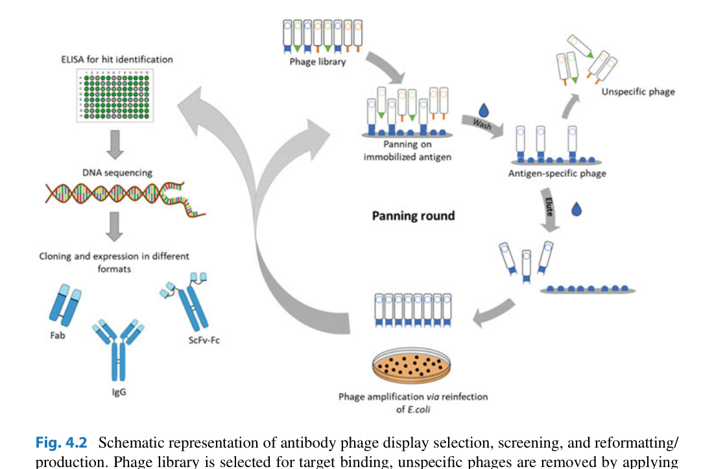
그림 설명: 항체 파지 디스플레이 선별, 스크리닝 및 재형식화/생산 모식도. 표적 결합에 대한 파지 라이브러리 선별, 세척에 의한 비특이적 파지 제거, 항원 특이적 파지의 용출 및 대장균 재감염을 통한 증폭, 2~6회 패닝 후 ELISA에 의한 단클론 결합자 동정, DNA 시퀀싱 및 서브클로닝 후 다양한 항체 형식 생산 과정을 보여줌.
4.3 효모 표면 디스플레이
효모 표면에 디스플레이된 인간 항체 단편 라이브러리로부터의 시험관 내 선별은 표적 특이적 단클론 항체를 생성할 수 있는 잘 확립된 기술이다. 이 전략에서 가장 통상 사용되는 종은 출아효모(Saccharomyces cerevisiae)이다. 이 진핵 미생물은 통상 교배 과정에서와 같이 세포벽 표면 응집소(agglutinin)를 접착 단백질로 사용한다. 효모 표면 디스플레이(yeast surface display, YSD)는 항체 단편을 Aga2p와 같은 세포벽 단백질에 유전적으로 융합하는 것에 기반하며, 1997년 보더와 위트럽(Boder and Wittrup)에 의해 개발되었다. 교배 관련 단백질 Aga1p와 Aga2p를 이용하는 이 시스템에서 관심 단백질이 융합된 Aga2p 소단위는 Aga1p에 대한 두 개의 이황화 결합을 통하여 효모 세포벽에 공유 결합으로 연결된다. Aga1p 소단위는 글리코실포스파티딜이노시톨(glycosylphosphatidylinositol, GPI) 앵커를 함유하여 세포벽 고정을 담당하고 Aga2p는 Aga1p와의 상호작용 모듈로 작용한다.
효모 항체 디스플레이 라이브러리 구축의 첫 단계는 면역글로불린 유전자 풀을 Aga2p 암호화 유전자에 대한 융합체로서 효모 디스플레이 플라스미드에 클로닝하는 것이다. 이 플랫폼 기술을 이용하면 10⁷~10⁹ 범위의 고유 변이체 라이브러리를 용이하게 얻을 수 있다. 보더와 위트럽이 개발한 가장 확립된 시스템에서 Aga1p(효모 게놈에 통합)와 단클론 항체-Aga2p 융합 작제물(디스플레이 플라스미드에서 발현)의 발현은 모두 갈락토스 유도성 GAL1 프로모터의 조절을 받는다. 탄소원으로서 포도당 대신 갈락토스의 존재는 효모 세포가 Aga2p 소단위에 융합된 항체 단편을 표면에 디스플레이할 수 있게 한다. scFv가 효모 디스플레이에서 가장 통상 사용되는 항체 형식이나 Fab, 전체 IgG1, 낙타 항체도 디스플레이될 수 있다.
효모 라이브러리로부터 항체 클론의 분리는 자성 보조 세포 선별(magnetic-assisted cell sorting, MACS)과 형광 활성화 세포 선별(fluorescence-activated cell sorting, FACS)을 이용하여 수행될 수 있다. MACS 단계는 통상 비결합 단클론 항체 단편을 제거하여 후속 FACS 선별을 위한 세포 수를 줄이는 데 사용되는데, 이는 후자의 처리량이 제한 요소이기 때문이다. 이들 MACS 분리는 파지 패닝 과정에 필적하며 비반응성 배경을 약 100배 감소시킬 수 있다. MACS 기반 제거 후 항원이 농축된 효모 세포 집단은 항원 특이적 라이브러리 후보를 분리하기 위하여 FACS로 스크리닝된다. FACS 스크리닝 동안 항원 농도는 평형 상태에서 디스플레이된 단클론 항체 단편의 대다수가 표적에 결합할 수 있도록 원하는 해리상수(dissociation constant, K_D)보다 10배 과량으로 유지되는 경우가 많다.
에피토프 태그(epitope tag), 예컨대 각 라이브러리 후보의 말단에 헤마글루티닌(hemagglutinin, HA) 태그나 c-myc 에피토프를 도입하면 효모 세포 표면에 디스플레이된 완전장 단백질의 면역형광 검출이 가능하다. 이는 프레임시프트된 라이브러리 후보나 종결 코돈을 함유한 후보를 제거할 수 있게 하므로 유리하다. 이들 오작동 라이브러리 후보는 응집 및 비특이적 결합 경향이 있어 위양성(false-positive) 결과을 초래한다. 스크리닝된 효모 세포는 항체 단편 발현(예: c-myc 태그 이용)과 항원 결합(표적상 형광 표지 이용)의 동시 검출을 위하여 표지된다. 첫 번째 FACS 선별 라운드에서는 통상 전체 이중양성(double-positive) 집단을 수집하여 전체 항원 특이적 다양성을 농축한다. 후속 FACS 라운드에서는 선별 게이트를 조정하여 선별 엄격도를 증가시킬 수 있다. 통상 이들 FACS 선별 3~5회 후 농축된 항원 결합 집단의 플라스미드 DNA를 수집하여 시퀀싱을 위해 보내 각 파라토프의 유전 정보를 얻는다. 이들은 포유류 세포에서의 항체 발현을 가능하게 하는 적절한 플라스미드로 서브클로닝될 수 있다.
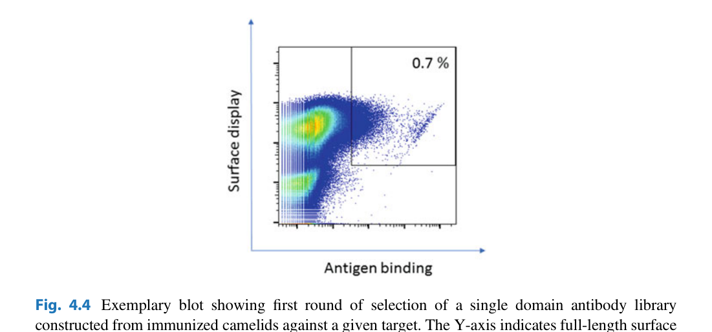
그림 설명: 주어진 표적에 대하여 면역화된 낙타과 동물로부터 구축된 단일 도메인 항체 라이브러리의 1차 선별 라운드를 보여주는 예시 도표. Y축은 플라스미드 설계에 포함된 태그의 항체 매개 형광 표지에 의한 완전장 표면 디스플레이를, X축은 형광 표지 항원을 이용한 항원 결합을 나타낸다. 선별 게이트를 적용하여 이중양성 집단을 분리할 수 있음.
효모와 파지 항체 라이브러리 기술을 비교하면 장단점이 모두 존재한다. 효모 디스플레이의 큰 장점은 FACS 스크리닝 동안 선별 변수를 정밀하게 제어할 수 있다는 것이다. FACS 과정에서 결합 기준을 규정할 수 있는 이 능력은 변이체 식별이 실시간 동역학 관찰이 아닌 세척 단계에 의존하는 파지 디스플레이 플랫폼에 대한 장점이다. 또한 진핵 발현 숙주와 적절한 품질 관리 기전을 이용하므로 원핵 발현 숙주가 사용되는 파지 디스플레이에 비하여 단백질이 보다 적절히 접힘된다고 여겨진다. 그러나 파지 디스플레이에 비하여 명백한 단점도 있다. 효모 라이브러리를 이용한 전체 라이브러리 크기는 전형적인 파지 디스플레이 라이브러리 크기보다 수 자릿수 낮게 되는 경향이 있다. 이는 효모 세포에서 관찰되는 낮은 형질전환 효율 때문이다. 합리적 노력으로 최대 10¹⁰ 전체 클론의 효모 라이브러리를 구축할 수 있는 반면 10¹¹ 변이체 이상의 파지 라이브러리는 용이하게 얻을 수 있다. 효모 표면 디스플레이의 또 다른 잠재적 단점은 세포당 디스플레이되는 항체 복제수(세포당 10⁴~10⁵ 범주)가 많아 이론상 친화도(affinity)보다는 결합력(avidity)에 기반한 선별이 이루어진다는 것이다. 현대 선별 전략은 효모와 파지 디스플레이를 병용 접근법으로 활용한다. 이 두 시스템 전략은 파지 디스플레이의 큰 라이브러리 크기와 친화도 기반 선별, 효모 디스플레이의 잘 조절된 변이체 분리라는 양 기술의 강점을 활용한다.
효모 표면 디스플레이의 통상적 응용은 항체 단편의 친화도 성숙이다. 위트럽 동료들은 1997년 항-플루오레세인 scFv에 대한 연구로 단백질 친화도 성숙에서 효모 표면 디스플레이의 유효성을 입증하였다. 유세포 분석은 각 효모 세포로부터의 형광 신호의 검출 및 정량을 가능하게 하여 정밀한 친화도 측정과 돌연변이체 라이브러리 내 고친화성 집단의 신속한 농축을 가능하게 한다. 이들 돌연변이체 라이브러리는 종종 제한 농도의 가용성 항원으로 스크리닝하여 더 높은 친화도를 가진 돌연변이체를 선별한다. 이러한 방식으로 보더 등은 지금까지 보고된 중 가장 높은 친화도(K_D = 48 fM)의 항체를 개발하였다. 오류 유발 PCR(error-prone PCR)에 의한 무작위 돌연변이 유발, DNA 셔플링(DNA shuffling) 등 다양성 생성 방법론도 효모 표면 디스플레이와 양립 가능하다. 항체의 친화도 성숙 외에도 이 접근법의 실현 가능성은 T세포 수용체(T-cell receptor)로 확장되었고 항체의 에피토프 매핑(epitope mapping)에도 사용될 수 있다.
효모 표면 디스플레이의 보다 최근 응용은 세포 기반 선별이다. 효모 디스플레이된 고친화성 단일사슬 T세포 수용체(scTCR)가 항원 제시 세포(antigen presenting cell, APC)와 세포-세포 복합체를 형성할 수 있음이 입증되어 효모 폴리펩티드 라이브러리를 세포 표면 리간드에 대하여 스크리닝하는 데 효모 표면 디스플레이가 사용될 수 있다는 명확한 증거를 제공한다. 실제로 여러 보고가 이러한 세포 기반 선별이 효과적으로 수행될 수 있음을 보여준다. 왕 등은 랫트 뇌 내피 세포에 결합하고 경우에 따라 내재화되는 34개의 고유 항체를 동정하였다. 세포 기반 선별은 정교하고 어려운 막 단백질 발현과 정제 요구 없이 복합 막 단백질에 대한 항체의 동정을 가능하게 한다. 2020년 1월 기준 효모 디스플레이 유래 단클론 항체 중 중국 당국에 의해 승인된 항체는 신틸리맙(sintilimab)으로서 PD-1과 PD-L1·PD-L2의 상호작용을 차단하는 완전인간 치료제이다.
4.4 포유류 디스플레이
파지 디스플레이와 효모 디스플레이는 원하는 기능성을 가진 항원 특이적 항체의 분리를 가능하게 한다. 그러나 잠재적 치료제가 되기 위한 항체의 필수 내재 특성, 예컨대 포유류 세포에서의 고수준 발현, 응집 거동, 정확한 글리코실화(면역원성에 영향을 줄 수 있음)는 미생물 디스플레이 기술로는 불충분하게만 조절될 수 있다. 이들 특성을 보다 적절히 다루기 위하여 포유류 기반 선별 시스템이 개발되었다.
포유류 세포 디스플레이 시스템은 일과성 단백질 후보 발현을 이용하는 방법과 안정 세포주를 활용하는 방법으로 크게 분류된다. 일과성 발현(transient expression)은 단백질의 단기 발현에 매우 효과적이나 수일 경과에 전체 DNA가 소실되어 중·장기 발현이 비효율적이다. 전형적으로 이러한 일과성 발현 시스템은 플라스미드 회수(plasmid rescue)가 뒤따르는 단일 라운드 선별에 활용된다. 반면 안정 통합(stable integration)은 중·장기 후보 발현을 일정하게 유지하지만 비교적 드문 사건이며 이러한 시스템은 통상 다소 작은 라이브러리 구축에 사용된다. 안정 통합 유전자 발현을 이용한 대규모 라이브러리로부터의 선별은 극히 비효율적이었다. 그러나 유전공학 및 유전자 편집 기술의 등장으로 지난 수년간 큰 진전이 이루어졌다.
히구치(Higuchi) 동료들은 포유류 항체 디스플레이 방법을 개발한 최초 그룹 중 하나이다. 이들은 포유류 세포를 발현 숙주로 이용하여 항원 특이적 항체의 가변 영역(variable region, V) 유전자를 얻는 신규 스크리닝 시스템을 구축하였다. 이를 위하여 인간 트롬보모듈린(transmembrane domain of human thrombomodulin)의 막관통 도메인에 대한 틀내 유전적 융합에 의해 막 고정(membrane-anchoring)을 달성하면서 COS 세포 표면에 항체 라이브러리를 디스플레이하였다. 첫 단계는 B형 간염 표면항원(hepatitis B surface antigen, HBsAg)에 대하여 백신 접종된 인간 공여자의 말초혈 림프구로부터 조제된 라이브러리 생성이었다. mRNA 추출과 cDNA 합성 후 PCR에 의한 항체 가변 영역 유전자 증폭과 디스플레이 벡터로의 클로닝이 수행되었고 COS7 세포를 일과적으로 형질감염시켰다. 생성된 조합 라이브러리 크기는 약 5×10⁶ 독립 클론이었다. 항원 특이적 항체 선별을 위하여 COS 라이브러리를 비오틴 표지 항원으로 염색하고 유세포 분석으로 분취하였다. 이후 항원이 농축된 세포로부터 플라스미드를 추출하고 대장균에서 재증폭한 뒤 전체 과정을 3회 반복하였다. 전체적으로 HBsAg 특이적 항체를 암호화하는 V 유전자의 450배 농축을 유도하였고 최종적으로 가용성 항체 발현을 가능하게 하는 발현 벡터에 가변 영역 유전자를 삽입하여 HBsAg에 특이적인 4개의 고유 클론 분리에 이르렀다.
최근 수년간 포유류 디스플레이를 위한 여러 기술이 등장하였다. 2009년 호와 파스탄(Ho and Pastan)은 인간 배아신장 세포(human embryonic kidney cell, HEK293T)가 scFv의 표면 디스플레이와 그 친화도 성숙에 사용될 수 있음을 보였다. 또한 저우 등은 Flp-In 기술(Invitrogen)을 적용하여 CHO 세포 표면에 완전장 항체를 제시하는 방법을 기술하였다. 이 접근법에서는 재조합효소 매개 염색체(안정) DNA 통합이 라이브러리 다양성 생성에 사용되었고현저히 개선된 중화 활성과 친화도를 가진 항체가 분리될 수 있었다.
레트로사이트 디스플레이(Retrocyte display)는 B세포의 천연 발현 장치를 레트로바이러스 B 림프구 디스플레이에 활용하는 기술로서 2014년 개발되었다. 여기서는 경쇄와 중쇄 다양성을 각각 운반하는 레트로바이러스 입자로 불멸화된 pre-B 세포를 단계적으로 형질도입하여 10⁹ 클론 범위의 라이브러리가 생성되었다. 포유류 디스플레이치고 주목할 만한 라이브러리 크기 외에도 이 기술은 적절한 단백질 접힘, 항체 중쇄-경쇄 조립, 글리코실화, 이황화 결합 형성을 보장하는 모든 필요 보조인자가 존재하는 천연 항체 생산 B계열 세포를 이용하므로 항체 디스플레이 효능이 향상된다는 장점을 가진 것으로 여겨진다. 그 외에도 베어리(Beerli) 동료들은 신드비스 바이러스(Sindbis virus) 발현계에 의존하는 포유류 디스플레이 시스템을 기술하였다. 포유류 디스플레이를 위한 바이러스 성분을 이용하는 또 다른 기술은 우두 바이러스(vaccinia virus) 디스플레이이다. 이 바이러스는 대부분의 포유류 세포주를 감염시켜 포유류 품질 관리와 번역후 변형(post-translational modification)을 갖춘 재조합 유전자의 발현을 유도한다. 이 접근법에서 포유류 세포는 항체 중쇄 라이브러리와 추가 경쇄 라이브러리로 공동 형질도입되었다. 중쇄는 우두 바이러스 막 단백질과의 융합체로 생산되어 완전장 항체가 감염 세포 표면뿐 아니라 세포에서 방출되는 바이러스 입자 표면에도 발현되었다. 파지 디스플레이와 유사하게 이는 거대 다양성의 패닝과 항원 특이적 클론의 농축을 가능하게 한다. 이어서 감염된 포유류 세포를 FACS로 분취하여 선별을 정밀하게 제어할 수 있다. 포유류 디스플레이에서 바이러스 형질도입 외에도 비바이러스 전위(transposition) 기술을 이용하여 라이브러리를 생성할 수 있다.
바워스 등이 기술한 또 다른 흥미로운 포유류 디스플레이 시스템은 B세포에서 체세포 초돌연변이(somatic hypermutation)라 불리는 자연 친화도 성숙 과정을 개시하는 효소인 활성화 유도 시티딘 탈아미노효소(activation-induced cytidine deaminase, AID)를 이용한다. 첫 단계에서 주어진 표적에 대한 저친화성 항체를 선별하여 기능성을 평가하고, 항원 양성 항체 유전자를 AID와 함께 HEK293 세포에 공동 형질감염시켜 동시 디스플레이와 친화도 성숙을 가능하게 하여 궁극적으로 고친화성 항체의 분리를 가능하게 하였다. 닭 B세포주를 항체 다양화에 활용한 접근법도 제시되었다. 닭에서는 유전자 전환(gene conversion)이라는 상동 재조합 과정에서 항체 다양성이 생성된다. 히스톤 탈아세틸화효소 억제제로 닭 B세포주를 처리함으로써 유전자 전환 빈도가 대폭 증가하여 항원 특이적 항체 선별에 충분한 면역글로불린 유전자좌 다양성이 생성되었다. 다른 접근법은 라이브러리 구축 및 상동성 지향 돌연변이 유발(homology-directed mutagenesis) 도구로 CRISPR/Cas9 또는 TALE 뉴클레아제를 이용한다.
항원 특이적 항체의 선별과 친화도 성숙 외에도 포유류 디스플레이 시스템은 기능성, 예컨대 작용성(agonistic) 또는 길항성(antagonistic) 항체의 선별에도 활용될 수 있다. 2012년 러너 등은 에리트로포이에틴(erythropoietin) 작용 항체의 선별을 가능하게 하는 신규 렌티바이러스(lentiviral) 스크리닝 방법을 발표하였다. 저자들은 먼저 파지 디스플레이로 EpoR에 특이적인 항체를 농축한 뒤 렌티바이러스 라이브러리를 조제하고 리포터 세포에 미리 농축된 렌티바이러스 라이브러리를 형질도입하여 항체의 표현형, 즉 기능을 모니터링하였다.
4.5 대장균 디스플레이
진핵 시스템의 번거로운 적용 외에도 세포 표면 디스플레이를 위한 원핵 대장균 세포의 이용은 간편하고 신속한 대안을 제공한다. 수많은 유전학적 도구, 돌연변이 균주, 대장균의 높은 형질전환 효율은 대규모 펩티드 라이브러리 스크리닝에 매력적인 숙주가 된다. 미생물 세포 표면 디스플레이는 생백신(live vaccine) 개발, 펩티드 라이브러리 스크리닝, 동물에서의 항체 생산, 전체 세포 생체촉매를 이용한 생물전환, 바이오센서 개발, 생체흡착 등 많은 잠재적 응용을 가진다. 이를 위하여 제시될 관심 단백질(패신저 단백질, passenger protein)은 표면 앵커(운반 단백질, carrier protein)에 N-말단, C-말단 또는 샌드위치 융합으로 융합될 수 있다. 이용된 융합 배치 및 운반 단백질, 패신저 단백질, 숙주 세포 균주의 특성은 고정화 수율, 안정성, 비활성, 융합 단백질의 번역후 변형 측면에서 표면 디스플레이 효율에 영향을 미친다.
불행히도 진핵 세포에서 발견되는 글리코실포스파티딜이노시톨 앵커의 미생물 등가물은 원핵 세포에서 이종 단백질의 간편한 디스플레이를 위하여 존재하지 않는다. 따라서 운반 단백질은 내막을 통한 적절한 수송을 가능하게 하도록 각 패신저 단백질 및 각 개별 응용에 맞게 조정되어야 한다. 또한 운반 단백질은 단백질 분해에 저항성이어야 하고, 패신저 단백질을 막에 안정적으로 고정하며, 외래 펩티드 서열의 융합 또는 삽입과 그 적절한 배향 및 표면 제시를 활용해야 한다.
그람음성 박테리아인 대장균의 복잡한 세포 외피를 고려하면 현재까지 개발된 대부분의 운반 단백질은 외막 단백질(outer membrane protein)에 기반하며 패신저 단백질의 접근성을 뒷받침한다. 이들 단백질은 박테리아 섬모(fimbriae), S-층 단백질(S-layer protein), 빙핵 단백질(ice nucleation protein, INP), 펩티도글리칸 결합 지질단백질(peptidoglycan-associated lipoprotein, PAL), 면역글로불린 A(IgA) 프로테아제 패밀리 구성원, 시겔라 외막 자가수송체 단백질(Shigella outer membrane autotransporter protein, IcsA/VirG) 등 다수의 서로 다른 분자를 포함한다. 따라서 적절한 융합 양식과 적합한 운반 단백질의 조합이 미생물 표면 디스플레이에 필수적이다.
예컨대 요제(Jose) 등은 자가수송체 기능으로 전위를 매개하는 IgA 프로테아제의 베타 도메인에 대한 N-말단 융합을 통하여 이종 패신저로서 콜레라 독소 B 소단위(Vibrio cholerae toxin B subunit, CtxB)의 표면 제시를 입증하였다. N-말단 융합 배치의 또 다른 예는 사상 액틴 침착에 중요한 시겔라 VirG 단백질을 통한 알칼리 포스파타제(alkaline phosphatase, PhoA)와 말토스 결합 단백질(maltose-binding protein, MalE)의 디스플레이였다.
이와 대조적으로 Lpp-OmpA 하이브리드 운반체 시스템은 C-말단 융합법으로 구축된 기전의 예이다. 이는 성숙 대장균 지질단백질(lipoprotein)의 신호 서열과 N-말단 잔기, 대장균 외막 단백질 A(outer membrane protein A, OmpA)의 잔기를 활용한다. Lpp는 주변질 내 융합 단백질의 적절한 전위를 담당하고 OmpA는 외막 통과에 필요하다.
N-말단 및 C-말단 융합 외에도 샌드위치 배치는 전체 구조 단백질을 이용한 그람음성 박테리아상 펩티드의 표면 디스플레이에 적합한 전략이다. 고정 영역의 결핍으로 이들 외막 단백질(outer membrane protein, OMP), 세포외 신장체의 소단위 단백질, S-층 단백질의 절단은 허용되지 않는다. 예컨대 OmpC는 외막을 가로지르는 막관통 베타 배럴 구조를 형성하여 그 외부 루프를 융합 부위로 사용할 수 있게 하며, 베셋 등은 대장균 OmpA의 표면 노출 루프에 기반한 시스템을 개발하여 MACS와 FACS의 연속 분석으로 다양한 항원(예: 스트렙타비딘, HIV-1 GP120)에 대하여 낮은 나노몰 범위의 K_D를 가진 고결합 친화도 단백질 결합 펩티드를 신속히 분리하였다.
미생물 디스플레이 시스템의 주요 단점 중 하나는 항체와 같은 복잡 구조를 제시하기 어렵다는 것이었다. 2008년 게오르기우(Georgiou) 동료들은 소위 E-클론 단클론 항체(E-clonal mAb)의 박테리아 주변질 디스플레이로 이 문제를 다루었다. 항체 중쇄와 경쇄는 대장균 주변질로 분비되어 적절히 접힘되고 무당쇄(aglycosylated) IgG로 조립되었다. 주변질에 면한 내막상에 항체 고정화는 키메라 NlpA-ZZ 융합 단백질에 의해 매개되었다. 외막의 투과화는 항원 특이적 결합에 대하여 FACS로 스크리닝될 수 있는 스페로플라스트(spheroplast) 클론을 생성하였다.
미생물 항체 디스플레이의 또 다른 접근법은 2015년 왕 동료들에 의해 발표되었는데, HIV-1 감염에 대한 중화 단일사슬 항체 VRC01을 대장균 세포상에 제시하고 공학된 박테리아 세포가 HIV-1 입자를 포획하고 세포 배양에서 HIV-1 감염을 억제할 수 있음을 보였다. 또한 2016년 페르난데스 그룹은 VHH 도메인의 면역 라이브러리를 인티민(intimin)의 베타 도메인에 융합하여 대장균 디스플레이로 인간 피브리노겐 나노바디(nanobody, VHH)를 분리하였다. 앞서 언급하였듯이 박테리아 디스플레이 시스템은 재조합 박테리아 백신 개발에 흥미롭다. 이들은 외래 패신저 항원을 발현하는 비병원성 박테리아 또는 바이러스 운반체로 구성된다. 대장균과 같은 박테리아는 종종 강한 면역원성을 가지고 숙주 조직을 집락화할 수 있어 운반체로서 매력적인 후보이다. 박테리아 백신의 또 다른 장점은 다양한 외래 항원을 서로 다른 형태(예: 가용성, 막 결합, 분비)로 발현할 수 있다는 것이다. 또한 표면 노출 항원은 박테리아 지질다당류(lipopolysaccharide, LPS)가 면역원성으로 인하여 면역보강제로 작용하면서 면역계에 의한 인식을 촉진할 수 있다. 이 접근법은 1987년 샤르빗 등이 B형 간염 바이러스 표면항원의 외래 에피토프를 대장균상에 디스플레이할 때 이미 사용되었으며, 토끼와 마우스에 정맥 주사 시 높은 역가의 특이적 항체 반응을 유도하였다. 악터베르흐 동료들은 구제역 바이러스 에피토프가 삽입된 외막 공극 단백질 E(PhoE)로 기니피그를 면역화하여 중화 항체의 상당한 역가를 얻어 바이러스 공격으로부터 기니피그를 완전히 보호하였다.
4.6 리보솜 디스플레이
차세대 디스플레이 기술의 대표 주자는 리보솜 디스플레이로서 무세포 발현계를 이용하여 세포 기반 디스플레이 전략의 일부 한계를 극복할 수 있다. 통상 세포 시스템의 한계 중 하나는 숙주의 형질전환 효율로서 전체 라이브러리 변이체 수를 제한할 수 있다.
리보솜 디스플레이 동안 유전형-표현형 커플링은 형질전환 단계 없이 세포 추출물에서 삼원 항체-리보솜-mRNA(antibody-ribosome-mRNA, ARM) 복합체의 형성에 의해 매개된다. mRNA상에 종결 코돈(stop-codon)이 부재하면 번역 말단에 리보솜이 정지(stalling)된다. 해당 위치에서 tRNA 자리를 차지하는 방출 인자에 의해 폴리펩티드 사슬의 방출이 촉발될 수 없다. 이에 따라 관심 개별 단백질(예: 항체 단편)이 그 대응 mRNA에 연결되어 기능성 단백질과 그 암호화 mRNA의 동시 분리를 가능하게 한다(유전형-표현형 커플링). ARM 복합체는 고농도 마그네슘 이온과 저온에서 수일간 안정화된다. 선별 단계는 예컨대 자성 비드에 결합된 특이적 리간드에 의한 친화 포획을 통하여 수행된다. 이후 mRNA는 역전사 중합효소 연쇄반응(reverse transcription-polymerase chain reaction, RT-PCR)으로 DNA로서 회수된다. 연속 스크리닝 라운드는 고친화성 항체의 분리를 가능하게 한다. 원핵 및 진핵 리보솜 디스플레이 시스템이 모두 개발되었다.
파지 디스플레이와 세포 표면 디스플레이 시스템에 대한 리보솜 디스플레이의 가장 큰 장점은 더 큰 라이브러리를 생성하고 스크리닝할 수 있다는 것이다. 클로닝되지 않은 PCR 단편이 다양성 공급원으로 활용되므로 10¹²~10¹⁴ 구성원의 라이브러리를 용이하게 생산할 수 있다. 제한은 기능성 리보솜 수 및 반응 내 서로 다른 mRNA 분자의 존재이다.
또한 클로닝되지 않은 PCR 단편은 선별 동안 새로운 다양성을 도입하는 데 용이하게 사용될 수 있다. 예컨대 비proofreading 중합효소, 오류 유발 PCR, DNase I 셔플링, dNTP 유사체(예: 8-oxo-guanosine, dPTP) 존재 하 주형의 PCR 증폭은 레퍼토리 다양화를 위한 편리한 방법이다. 항원에 대한 선별 후 DNA를 지속적으로 다양화할 수 있는 이 능력은 시험관 내 항체 성숙과 결합 단백질의 유도 진화(directed evolution)에 최적 시스템을 제공한다.
마지막으로 리보솜 디스플레이는 세포 기반 시스템으로 발현하기 어렵거나 불가능한 단백질의 디스플레이에도 적합한데, 무세포계는 독성, 단백질 분해 민감성 또는 불안정 단백질도 허용하기 때문이다.
리보솜 디스플레이 시스템의 서로 다른 유형(대장균 S30계, 진핵계, 밀배아계)을 설명한다. 리보솜 디스플레이 최초 발표에서는 펩티드 선별에 대장균 S30계가 활용되었다. 소위 폴리솜 디스플레이(polysome display)는 클로람페니콜로 정지된 리보솜/mRNA 복합체인 폴리솜 복합체를 생성한다. 상호작용 펩티드 에피토프를 디스플레이하는 폴리솜 복합체의 분리는 미세역가 웰에 고정화된 항체에 의한 포획으로 수행되었고 EDTA에 의한 복합체 해리로 결합된 mRNA를 방출한 뒤 RT-PCR로 DNA를 회수하였다. 단일사슬 항체 단편을 디스플레이하기 위하여 헤인즈 동료들에 의해 DNA로부터 3′ 말단 종결 코돈을 결실시켜 ARM 복합체를 생성하도록 시스템이 변형되었다. 2004년 사와타 등은 단백질-mRNA 상호작용을 도입하여 더욱 안정한 리보솜 복합체를 생성함으로써 대장균 S30계를 더욱 정교화하여 선별 효율을 개선하였다.
한편 단일사슬 항체 단편 선별을 위한 진핵 리보솜 디스플레이 시스템이 개발되었다. 커플된 토끼 망상적혈구 용해물(rabbit reticulocyte lysate)계는 초기에는 ARM 디스플레이라 명명되었다. 이 시스템도 DNA로부터 종결 코돈을 결실시켜 진핵 리보솜 복합체를 생성하였다. 이전 시스템에 사용된 해리 단계 없이 리보솜 복합체상에서 직접 RT-PCR을 수행하는 신규 회수 절차가 개발되었다. 이를 위하여 mRNA 3′ 말단 약간 상류에 혼성화하는 제자리(in situ) RT-PCR 프라이머가 설계되어 리보솜 피복 영역에 대한 결합을 방지하였다. 제자리 RT-PCR은 전체 리보솜 디스플레이 과정의 자동화를 촉진한다.
이 절차는 단백질 접힘 개선과 돌연변이 도입을 위하여 산화/환원 글루타치온과 Qβ RNA 의존 RNA 중합효소를 포함함으로써 변형되었다. 가나모리 동료들은 2014년 PURE(Protein synthesis Using Recombinant Elements)계를 이용한 고도로 제어 가능한 리보솜 디스플레이를 개발하였다. 여기서는 매우 낮은 뉴클레아제 활성 및 리보솜과 번역 인자와 같은 성분의 재구성 덕분에 ARM 복합체가 고도로 안정하고 선별된 mRNA를 용이하게 회수할 수 있다. 2002년에는 접힘 단백질의 리보솜 디스플레이를 위한 밀배아(wheat germ) 무세포 단백질 합성계도 개발되었다.
리보솜 디스플레이에 영향을 미치는 핵심 요소는 다음과 같다. 리보솜 디스플레이용 작제물은 T7과 같은 프로모터와 번역 개시 서열(대장균 S30계용 샤인-달가노(Shine-Dalgarno) 또는 진핵계용 코자크(Kozak) 서열)을 필요로 한다. 또한 단백질 C-말단에 최소 23~30개 아미노산 길이의 링커가 필요하며, 이는 리보솜과 디스플레이된 단백질 사이에 간격을 생성하고 입체 장애를 제거한다. 또한 RT-PCR 회수 단계에서 프라이머 혼성화를 위한 서열 및 분해에 대한 mRNA 안정화를 위하여 DNA 양 말단에 줄기-루프(stem-loop) 구조를 함유하는 서열의 혼입이 필요하다. 무세포계의 선택은 리보솜 복합체의 형성에 모노리보솜 또는 폴리솜 복합체로서 영향을 줄 수 있으며, 후자는 단일 mRNA 분자를 번역하는 하나 이상의 리보솜을 운반하여 결합력 효과를 유도할 수 있다. 토끼 망상적혈구 용해물은 주로 모노리보솜 복합체를 생산할 수 있는 반면 대장균 S30은 통상 폴리솜을 생성한다. 또한 무세포계는 커플(더 단순하고 효율적) 시스템과 언커플 시스템으로 구분된다. 커플 시스템에서 DNA 주형의 전사는 즉시 번역이 뒤따른다. 언커플 시스템은 시험관 내 전사로 생성되거나 천연 공급원으로부터 분리된 mRNA를 번역하며 전사와 번역 단계를 별도로 최적화할 수 있게 한다.
리보솜 디스플레이 시스템은 시험관 내 항체 선별, 진화, 인간화에 성공적으로 적용되었다. 돌연변이와 선별의 반복 라운드는 개선된 친화도, 특이성, 안정성을 가진 항체 변이체의 분리로 이어졌다. 2006년 그로브스 동료들은 리보솜 디스플레이가 파지 디스플레이 유래 항체 집단의 친화도 성숙에 적합함을 보였고, 파지와 리보솜 디스플레이의 산출물을 비교하여 리보솜 디스플레이로 더 높은 친화도 항체가 분리됨을 입증하였다.
4.7 cDNA 디스플레이
리보솜 디스플레이와 관심 단백질을 퓨로마이신 링커(puromycin-linker, Pu-linker)를 통하여 그 암호화 mRNA에 연결하는 mRNA 디스플레이(mRNA display)의 개발 후 유사한 전략을 활용하는 cDNA 디스플레이 기술이 개발되었다. cDNA 디스플레이는 상보적 DNA를 공유 퓨로마이신 연결을 통하여 그 암호화 펩티드 또는 단백질에 융합하는 강력한 시험관 내 디스플레이 기술이다. 이 기술은 시험관 내 선별에 의해 거대 라이브러리로부터 기능성 펩티드와 단백질을 탐색하는 데 사용된다. DNA 스페이서를 통하여 퓨로마이신 분자가 mRNA에 공유 연결되는 mRNA 디스플레이와 대조적으로 cDNA 디스플레이에서는 DNA가 퓨로마이신을 통하여 펩티드 또는 단백질의 C-말단에 직접 융합된다. 이는 cDNA 디스플레이를 다른 시험관 내 선별 방법에 비하여 안정하게 만든다. 그 외에도 cDNA 디스플레이는 세포 표면 단백질에 대한 펩티드 기반 친화 시약 선별에 사용되었다. 예컨대 높은 G단백질 결합 수용체(G protein-coupled receptor, GPCR) 발현 세포를 이용하여 GPCR에 결합하는 펩티드를 선별할 수 있었다.
cDNA 디스플레이는 최근 수년간 더욱 정교화되었으며 특히 Pu-linker 기술이 발전하였다. 모치즈키, 우에노 동료들은 추가 Pu-linker 개발과 조제 프로토콜 변형으로 cDNA 디스플레이 복합체의 조제 효율을 개선하여 cDNA 디스플레이를 실용적으로 만들었다. 동 그룹이 개발한 신규 Pu-linker는 3-시아노비닐카바졸 뉴클레오시드(3-cyanovinylcarbazole nucleoside, cnvK)를 함유하며 cnvK-Pu-linker라 불린다. cnvK는 혼성화된 올리고뉴클레오티드를 연결하기 위하여 자외선 조사를 이용하는 초고속 광가교제로서 효소적 라이게이션 반응 없이 초고속 가교를 가능하게 한다. 또한 cDNA 디스플레이는 고체상 합성에 의한 기능성 이황화물이 풍부한 펩티드의 스크리닝 방법으로 단백질 접힘을 촉진하는 데 사용될 수 있으며, 야마구치 동료들은 다중 이황화 결합을 함유한 인터루킨-6 수용체(interleukin-6 receptor)에 대한 신규 펩티드를 선별하였다.
4.8 B세포 클로닝
하이브리도마 기술과 유사하게 단일 B세포(single B-cell) 기술은 면역화된 B세포의 천연 중쇄·경쇄 쌍을 유지한다. 그러나 낮은 융합 효율로 인한 부적절한 다양성 샘플링과 드물지만 특이적인 항체의 잠재적 소실이라는 하이브리도마의 단점과 대조적으로 단일세포 B세포 클로닝에 의해 면역화된 B세포 집단의 효율적 발굴(mining)이 가능하다. 일반적으로 이 플랫폼 기술은 여러 연속 단계, 즉 상이한 세포 집단(예: 비장세포, 림프구, 말초혈 단핵구(peripheral blood mononuclear cell, PBMC)) 내 (항원 특이적) B세포의 검출, 선별된 단일 B세포로부터 중쇄와 경쇄 가변 영역의 증폭, 발현 벡터로의 클로닝, 항체 생산 및 특성 규명으로 구성된다.
단일 B세포 분리는 무작위(항원 특이성에 대한 선별 없이) 또는 항원 선택적 방식으로 수행될 수 있다. 무작위 B세포 분리 기술은 미세조작(micromanipulation)에 의한 세포 채취, 레이저 포획 미세절단(laser capture microdissection), FACS 등을 포함하나 이에 국한되지 않는다. 대안적으로 항원 코팅 자성 비드, 다변수 FACS를 통한 형광색소 표지 항원, 용혈 플라크 검정(hemolytic plaque assay), 형광 초점(fluorescent foci)법을 이용한 항원 선택적 단일 B세포 분리가 기술되었다.
항원 특이적 B세포 분리에 가장 통상 적용되는 기술 중 하나는 형광 활성화 세포 선별이다. 여기서는 통상 다변수 표지 전략이 사용된다. 한편으로는 B세포의 표면 표지자(예: CD19)에 대한 형광 표지 항체를 이용하여 조직 시료 내 특정 B세포 집단을 게이팅한다. 다른 한편으로는 형광 표지 항원이 항원 양성 B세포의 분리를 가능하게 한다. 틸러 등은 표면 표지자 발현에 기반하여 다양한 발생 단계의 인간 B세포로부터 단클론 항체를 생성하는 고효율 전략을 개발하였다. 서로 다른 형광 염료로 표지된 B세포의 서로 다른 표면 표지자를 표적화하는 항체는 발생 단계가 다른 B세포 하위집단을 식별할 수 있게 하였다. 분취된 B세포상 네스티드 RT-PCR(nested RT-PCR) 접근법은 중쇄 및 경쇄 가변 영역의 증폭 후 적절한 발현 플라스미드로의 클로닝, 항체 생산 및 특성 규명을 가능하게 하였다. 스타키 동료들은 면역화된 마우스로부터 항원 특이적 항체 분리를 위한 효율적 전략을 기술하였다. 비장 B세포는 먼저 항-마우스 CD45R 마이크로비드를 이용한 MACS로 농축되었고, 이후 서로 다른 마우스 이소형(예: IgG, IgM, IgD) 및 서로 다른 표면 표지자를 표적화하는 형광 표지 항체를 포함하는 다변수 염색 전략으로 원하는(B세포) 집단과 원하지 않는(예: T세포) 집단을 구분하여 항원 특이적 클래스 전환 IgG 양성 기억 B세포(memory B-cell)를 분리하였다.
2017년 카보네티 등은 단일 B세포 선별과 B세포 배양을 결합한 효율적 단클론 항체 발굴 플랫폼을 기술하였다. 먼저 마우스 면역화 후 비장을 채취하여 단일세포 현탁액으로 균질화하고 B세포 집단 농축에 MACS를 사용하였다. 항원 양성 세포의 FACS 기반 분취를 위하여 다변수 표지 전략이 적용되었고, 분리된 B세포는 증식과 단클론 항체 생산 유도를 위하여 CD40L 양성 피더 세포(feeder cell) 및 지지 사이토킨과 공동 배양되었다. 항체 함유 상층액은 반응성에 대하여 평가되었고 양성 세포는 RNA 분리, 가변 유전자 증폭, 클로닝, 항체 발현을 위하여 수확되었다.
복잡성 수준이 다양한 방법론을 이용한 항원 특이적 B세포 선별 외에도 형질세포(plasma cell)로부터 단클론 항체를 선별하는 방법도 기술되었다. 형질세포는 항체를 분비하는 분화된 B세포(실제로 혈액 순환 내 면역글로불린 생산을 담당)이다. 그러나 형질세포는 통상 항체 부분을 표면에 발현하지 않아 항원 특이적 형질세포의 분리가 다소 복잡하다. 이와 관련하여 라이트우드 동료들은 형광 초점법이라 불리는 방법을 기술하였다. 이 형광 기반 시스템은 항원 특이적 IgG 분비 세포 분리를 위한 미세조작 장치를 이용하여 현미경 슬라이드상에서 수행되었다. IgG 분비 세포는 고체상 항원 및 FITC 표지 항-Fcγ 특이적 항체와 혼합되어 유리 슬라이드상에 단층으로 도말되었다. 원하는 항체를 분비하는 항원 특이적 형질세포는 세포를 둘러싼 FITC 기반 후광(halo) 형성을 통하여 가시화되었다. 이는 분비된 특이적 항체가 항원 특이적 형질세포의 직접 주변 항원에 결합하여 Fcγ 표적화 검출 부분에 의한 표지를 가능하게 하기 때문이다.
미세유체(microfluidic) 시스템의 최근 진전은 원하는 특성(예: 단일세포로부터 분비된 항체의 검출 가능한 농도를 얻을 수 있는 소범위 총 검정 부피)을 가진 항체에 대한 표현형 스크리닝 측면에서 유의한 장점을 가진 단일세포 기술의 신규 전략을 가능하게 하였다. 현재 반응은 오일이나 공기로 둘러싸인 액적(droplet)에 구획화될 수 있다. 매우 균일한 크기(직경 통상 10~200 μm)의 액적은 필요한 모든 검정 시약과 특성 규명될 단일세포를 함유한다. 이러한 방식으로 초당 수천 개의 개별 구획을 생성할 수 있으며, 생성된 액적은 형광 활성화 액적 선별(fluorescence-activated droplet sorting, FADS)을 통하여 자동 방식으로 형광 신호에 따라 분취되어 초당 수백 개 시료의 표현형 스크리닝을 가능하게 한다. 이 기술은 미세조작기와 같은 저속 기계 장비의 필요성을 극복한다. 또한 세포 증식이 필요 없으므로 불멸화되지 않은 일차 B세포에도 적용 가능할 것이다. 표현형 스크린 외에도 차세대 시퀀싱(next-generation sequencing, NGS) 기반 접근법을 이용하여 항체 결합 정보를 수집할 수 있으며, 이들 접근법은 Ig-seq라 불린다. 드코스키 동료들은 단일 B세포를 유중수적(water-in-oil droplet)에 봉입하는 완전 에멀젼 기반 기술을 개발하여 단일 실험에서 2×10⁶개 이상의 B세포 레퍼토리를 시퀀싱할 수 있게 하였다. 가까운 미래에 미세유체공학은 인간 B세포를 스크리닝하여 고특이적 치료제를 생성할 수 있게 할 것이다. 신속히 자동화되고 원격 제어될 수 있는 단일세포 조작용 고도 장치를 이용하면 스크리닝이 효율화될 것이다.
핵심 요약
시험관 내 디스플레이 시스템은 B 림프구에서의 생체 내 과정(유전형 다양성 생성, 유전형-표현형 커플링, 선택 압력 적용, 원하는 후보 증폭)을 모방한다. 파지 디스플레이는 최초이자 가장 널리 적용되는 기술로서 완전인간 치료 항체(예: 아달리무맙)의 생성을 가능하게 하였으며, 패닝(고정화 항원에 대한 결합, 세척, 용출, 대장균 재감염을 통한 증폭의 2~6회 반복)과 친화도 성숙을 핵심 원리로 한다. 효모 표면 디스플레이(Aga1p/Aga2p계, MACS 후 FACS 선별)는 선별 변수에 대한 정밀한 제어와 진핵 품질 관리에 의한 적절한 접힘을 제공하나 라이브러리 크기가 제한적이다. 포유류 디스플레이는 고수준 발현, 응집 거동, 정확한 글리코실화 등 치료제 관련 특성의 평가에 유리하며 일과성·안정 통합, 바이러스(레트로바이러스, 신드비스, 우두) 및 비바이러스 전위, AID 매개 초돌연변이, CRISPR/Cas9 기반 라이브러리 구축을 포함한다. 대장균 디스플레이(외막 단백질 기반 N/C-말단·샌드위치 융합, E-클론 주변질 디스플레이)는 간편·신속·고효율이나 복합 항체 구조 제시에 제약이 있다. 리보솜 디스플레이(ARM 복합체, 무세포계, 10¹²~10¹⁴ 라이브러리)와 cDNA 디스플레이(퓨로마이신 연결을 통한 cDNA-단백질 공유 융합, 높은 안정성)는 형질전환 없이 거대 다양성과 지속적 다양화·시험관 내 진화를 가능하게 한다. 단일 B세포 클로닝(FACS 기반 항원 특이적 분리, 중쇄·경쇄 가변 영역 증폭과 발현 클로닝, 형광 초점법, 미세유체·Ig-seq)은 천연 중쇄-경쇄 쌍을 유지하면서 면역화 B세포 레퍼토리를 효율적으로 발굴한다.
5장 완전 인간 항체 생성을 위한 형질전환 동물
5.1 형질전환 동물을 이용한 인간 치료용 항체 생산의 개념
설치류 유래 단일클론항체(monoclonal antibody, mAb)를 인간 치료에 사용하는 데 있어 가장 큰 단점은 면역원성(immunogenicity)이다. 완전한 이종(xenogeneic) mAb를 투여하면 환자에서 항약물항체(anti-drug antibody, ADA)가 발생할 수 있다. ADA는 치료용 mAb의 약동학(pharmacokinetics)을 변화시켜 가속화된 제거(clearance)를 유발할 수 있다. ADA의 하위집단인 중화항체(neutralizing antibody)는 치료용 mAb의 효능 상실을 초래할 수 있다. 또한 뮤린 유래 mAb로 치료받은 일부 환자에서 생명을 위협하는 알레르기 반응이 보고된 바 있다. 이러한 문제를 완화하기 위해, 이종 mAb의 가변도메인(variable domain)을 인간 면역글로불린(immunoglobulin, Ig) 불변영역(constant region) 상에 기능적 형태로 접합한 키메라항체(chimeric antibody)가 개발되어 면역원성을 낮추면서 원래 mAb의 효능을 유지 혹은 증강시켰다. 현재까지 9종의 키메라 치료용 mAb가 미국 식품의약국(Food and Drug Administration, FDA)의 승인을 받아 미국 내 승인 mAb의 11%를 차지한다. 면역원성은 감소하였으나 치료용 키메라항체의 사용은 여전히 환자에서 인간 항키메라항체 반응을 유발할 수 있다.
치료용 mAb의 인간 함량을 더욱 높이기 위해 1980년대 중반부터 정교한 인간화(humanization) 공정이 개발되었다. 대표적인 방법은 이종 mAb 가변도메인의 상보성결정영역(complementarity-determining region, CDR)을 선정된 인간 항체의 골격영역(framework region, FR)에 이식(grafting)하여 특이성과 친화도를 수용 항체에 전이시키는 것이다. 최근 다양한 기원의 항체에 대한 단백질 구조가 다수 보고되면서 항체 인간화 과정의 의사결정을 돕는 컴퓨터 모델링 및 예측 프로그램이 개발되었다. 현재까지 40종의 인간화 mAb가 FDA 승인을 받아 미국 시장 항체 의약품의 절반을 차지한다. 그럼에도 인간화 과정에는 내재적 단점이 있다. 인간화 전략은 사례별로 설계되어야 하며, 긍정적 결과를 보장하는 일반적으로 적용 가능한 기술은 아직 없다. 흔히 인간화 과정에서 인간화 mAb 후보는 친화도, 특이성 및 용해도(solubility)와 같은 생물리학적 특성이 변화하고, 원래 항체에 비해 응집 경향 및 생산 시스템에서의 발현 저하를 보인다. 생물학적 기능과 임상 효능을 유지하면서 화학·제조·품질관리(Chemistry, Manufacturing and Control, CMC) 요건을 충족하는 인간화 제품을 얻기 위해 상당한 시간과 자원이 재설계 및 재검증에 소요된다. 여러 이종 mAb를 병렬로 인간화 과정에 투입하는 것은 대개 비현실적이며, 이는 약물 개발의 병목이 된다.
완전 인간 mAb 발굴에 널리 사용되는 또 다른 기술은 10¹⁰개 이상의 개별 파지 클론을 포함하는 대규모 나이브 파지 디스플레이 라이브러리(naïve phage display library)의 스크리닝에 의존한다. 이 파지는 인간 B 림프구 유래 Ig 가변영역을 디스플레이한다. 이 기술에서는 시험관 내 선택 과정이 생체 내 표적 항원 주도 1차 및 2차 면역반응을 대체한다. 신중히 설계된 패닝(panning) 전략으로 다양한 후보 mAb 패널을 얻을 수 있다. 주어진 표적에 대한 고친화도 및 원하는 생물학적 기능을 갖는 mAb를 얻기 위해 돌연변이유발(mutagenesis)과 스크리닝의 추가 라운드가 흔히 요구된다. 이 기술의 주요 단점은 라이브러리 구축 과정에서 Ig 중쇄와 경쇄 가변도메인이 무작위로 조합되므로 클론성 B 세포에서의 Ig 중쇄-경쇄의 천연 쌍(natural pairing)이 파지 클론에서 보존되지 않는다는 점이다. 나이브 라이브러리 유래 mAb 중 상당수가 표적이탈 결합(off-target binding), 용해도 저하, 응집 경향, 허용 불가 수준의 발현 수율 등 개발가능성(developability) 문제를 보인다고 보고되었다. 인간화 과정과 마찬가지로 임상적·상업적으로 성공적인 제품을 얻기 위해 나이브 라이브러리 유래 mAb 후보의 재설계 및 재검증에 상당한 노력이 요구된다. 현재까지 FDA 승인 완전 인간 mAb 중 8종이 나이브 파지 라이브러리 스크리닝으로 발굴되었으며, 이는 시판 mAb 의약품 전체의 10%, 미국 내 완전 인간 mAb 의약품의 26%에 해당한다.
따라서 형질전환(transgenic) 접근을 통해 마우스와 래트 같은 모델 생물에서 인간 체액성 면역반응(humoral immune response)을 재구성하는 것이 매우 바람직하다. 이 시스템에서는 항체 레퍼토리(repertoire)를 암호화하는 유전자와 관련 발현 조절영역을 포함하는 인간 게놈 영역이 숙주 동물의 게놈에 안정적으로 통합된다. 생성된 형질전환 동물은 야생형 동물과 유사하게 표적 항원으로 면역화할 수 있다. 1차 및 2차 면역반응과 연계된 천연의 표적 주도 항체 선택 및 성숙 과정을 통해 인간 도입유전자(transgene)에 의해서만 암호화되는 항체를 상당수 생성할 수 있다. 표적에 대한 고친화도·고특이성의 완전 인간 항체는 하이브리도마(hybridoma) 기술 같은 확립된 기술로 발굴할 수 있다. 결과적으로 다양한 후보 mAb 패널이 최소한의 추가 엔지니어링으로 전임상 개발에 진입할 수 있다. 자연 B 세포 발생 과정의 수많은 체크포인트가 용해도 등 제품 개발에 바람직한 특성을 갖는 항체 가변도메인을 간접적으로 선별할 수 있다고 제안되었다. 현재까지 FDA 승인 완전 인간 mAb 23종이 마우스 기반 형질전환 플랫폼으로 발굴되었으며, 이는 시판 mAb 의약품 전체의 28%, 완전 인간 mAb 의약품의 74%를 차지한다.
형질전환 기술을 이용해 인간 Ig 유전자를 동물에 도입하려는 최초 시도로부터 30년이 지났다. 1989년 Brüggemann 등은 인간/마우스 하이브리드 IgH 미니로커스(minilocus)를 보유한 형질전환 마우스 계통의 작성을 보고하였다. 이 연구의 도입유전자는 하나의 기능적 인간 및 하나의 기능적 마우스 VH 분절, 하나의 마우스 D 분절, 돌연변이된 마우스 D에서 유래한 두 개의 인간 유사 D 분절, 하나의 인간 D 분절 및 여섯 개의 인간 JH 분절 전체, 이어서 키메라 인간/마우스 Cμ 유전자를 포함하였다. 이 계통의 마우스는 림프조직에서 도입유전자 로커스를 재배열하였고 인간 IgM의 혈청 발현이 readily 검출되었다. 이를 확장하여 1991년 같은 팀은 대부분 생식계열(germline) 형태인 100 킬로염기쌍(kilobase pair, kbp)의 인간 IgH 로커스를 보유한 또 다른 형질전환 마우스 계통을 보고하였다. 이 경우 도입유전자는 모두 인간으로, 두 개의 기능적 VH, 일곱 개의 D 및 여섯 개의 JH 전체에 완전한 Cμ 유전자를 포함하였다. 두 VH 분절 모두를 포함하는 재배열이 관찰되었고 VH-(D)-JH 접합부의 광범위한 접합 다양성(junctional diversity)도 입증되었다. 1992년 당시 GenPharm International Inc.의 Taylor 등은 인간 IgH 및 Igκ 미니로커스를 모두 보유한 새로운 형질전환 마우스 계통을 보고하였다. 완전 인간 경쇄 도입유전자는 하나의 기능적 Vκ, 다섯 개의 Jκ 전체와 Cκ 분절, 하류 조절서열로 구성되었다. 이 연구에 사용된 완전 인간 중쇄 작제물 중 하나는 하나의 기능적 VH, 열 개의 D, 여섯 개의 JH 전체, μ 스위치 영역(switch region), 전체 Cμ 유전자, γ1 스위치 영역, 전체 Cγ1 유전자 및 하류 조절서열로 구성되었다. 혈청 분석에서 형질전환 마우스에서 인간 IgM과 IgG1의 발현이 모두 확인되었다. 도입유전자 내 모든 분절을 포함하는 광범위한 재배열과 Vκ-Jκ 및 VH-(D)-JH 접합부 모두에서의 상당한 다양성이 입증되었다. 중요하게, 이 연구는 IgH 도입유전자의 기능적 유전자 분절이 IgM에서 IgG1으로 항체 클래스 전환(class switch)을 겪을 수 있음을 보였다.
이러한 초기 탐색 연구는 마우스와 인간 체액성 면역계 사이에 사소한 차이만 있음을 입증하였다. 유전자 재배열 및 항체 클래스 전환과 관련하여 마우스의 트랜스 작용인자(trans-acting factor)는 인간 도입유전자 로커스 내 시스 엘리먼트(cis-element)에 기능을 발휘할 수 있다. 상기 모든 연구에서 형질전환 작제물은 수정란의 전핵(pronucleus)에 미세주입(microinjection)되어 도입유전자 로커스가 하나 혹은 그 이상의 카피수로 무작위 형태로 마우스 게놈에 통합되었다. 따라서 보고된 데이터는 재배열 및 클래스 전환을 위한 마우스의 트랜스 작용인자가 염색체 위치 및 다양한 유전자 카피수와 무관하게 기능할 수 있음을 시사한다. 이들 연구는 개념을 검증하고 완전 인간 항체 발굴을 위한 형질전환 동물 개발의 길을 열었다.
5.2 인간 항체 발굴을 위한 형질전환 플랫폼 개발 전략
매우 다양한 인간 항체 레퍼토리를 재현하고 형질전환 동물에서 인간 항체의 고발현을 보장하기 위해 인간 Ig 중쇄 및 경쇄 게놈 로커스의 기능적 유전자 분절을 가능한 많이, 관련 시스 조절엘리먼트와 함께 도입유전자 작제물에 포함시키는 것이 필요할 것으로 예상된다. 또한 숙주 내 내인성 Ig 중쇄 및 경쇄 로커스를 불활성화하여 내인성 항체와 도입유전자 유래 인간 항체 간의 경쟁을 최소화하는 것이 중요하다. 형질전환 전략과 인간 도입유전자 작제물 설계 및 Ig 녹아웃(knockout) 숙주에 관한 다양한 측면은 아래에서 논의한다.
5.2.1 형질전환 전략
인간 게놈 연구에 대한 과학계의 공동 노력 덕분에 10에서 1000 kbp를 초과하는 대규모 인간 게놈 영역이 코스미드(cosmid), P1 유래 인공염색체(P1-derived artificial chromosome, PAC), 세균 인공염색체(bacterial artificial chromosome, BAC) 및 효모 인공염색체(yeast artificial chromosome, YAC) 벡터에 클로닝되어 기업이나 학계 실험실로부터 입수할 수 있다. 인간 Ig 중쇄 및 경쇄 유전자 로커스를 포함하는 특정 클론은 말단 시퀀싱 후 참조 게놈 서열과의 정렬, 특이 영역의 중합효소연쇄반응(polymerase chain reaction, PCR) 증폭 등 전통적 분자생물학 기법으로 동정할 수 있다. PAC와 BAC는 최대 300 kbp의 포유류 DNA를 수용할 수 있고 대장균(Escherichia coli)에서 안정적으로 증식할 수 있다. λ 파지 유래 상동재조합 시스템, 예컨대 확립된 Red/ET 재조합 시스템으로 대장균에서 PAC와 BAC의 정밀 변형이 가능하다. YAC의 클로닝 용량은 개방적이어서 100 미만에서 1000 kbp 초과까지로 인간 Ig 유전자 로커스의 광범위한 커버리지를 제공한다. YAC는 다양한 선별마커와 함께 이 생물체의 강력한 상동재조합 시스템을 이용하여 사카로마이세스 세레비지애(Saccharomyces cerevisiae)에서 단축, 연장 및 변형이 가능하다. 또한 Igκ-, IgH- 및 Igλ-유전자 로커스를 각각 포함하는 인간 2번, 14번 및 22번 염색체의 절단을 통해 10~20 메가염기쌍(megabase pair, Mbp) 크기의 인간 인공염색체(human artificial chromosome, HAC)가 생성되어 마우스 배아줄기세포(embryonic stem cell, ES cell) 및 상동재조합 능숙 닭 DT40 세포에서 유지되었다. 도입유전자 작제물을 설계·구축할 때 부위특이적 재조합효소(site-specific recombinase)의 표적부위, 예컨대 Cre 재조합효소용 LoxP, 플립페이즈(flippase)용 FRT 및 phiC31 인테그레이즈(integrase)용 attP, 그리고 PiggyBac 트랜스포제이즈(transposase)용 부위가 작제물에 빈번히 포함되었다. 이들 부위는 도입유전자 작제물을 보유한 세포 DNA에서 특이 부위의 결실, 삽입, 전좌 및 역위를 촉진할 수 있다.
숙주 게놈에 도입유전자 작제물을 도입하는 가장 흔한 방법 중 하나는 정제된 선형 DNA를 숙주 수정란의 전핵에 직접 미세주입하는 것이다. 도입유전자는 숙주 게놈에 무작위 형태로, 보통 하나 혹은 그 이상의 카피수로 통합될 수 있다. 이후 미세주입된 난자는 위임신(pseudo-pregnant) 대리모에 이식되어 다양한 빈도로 도입유전자 보유 파운더(founder)를 생산한다. 파운더는 통상 귀나 꼬리에서 추출한 게놈 DNA에 대해 도입유전자 특이적 프로브를 이용한 서던 블롯(Southern blot) 혹은 프라이머 쌍을 이용한 PCR 분석으로 동정하고, 양성을 교배를 통해 독립 형질전환 계통 수립에 사용한다. 도입유전자 발현의 양상과 강도는 서로 다른 도입유전자 통합부위 및 유전자 카피수의 특성으로 인해 계통마다 다를 수 있다. 도입유전자 발현의 가장 바람직한 패턴을 보이는 형질전환 계통을 동형접합(homozygosity)으로의 추가 교배에 선택할 수 있다. 효율은 낮으나 이 방법은 단순하고 비교적 신속하며 마우스, 래트, 토끼를 포함한 많은 포유류에서 성공적임이 입증되었다. 이 방법의 물리적 특성 및 대형 DNA 단편의 정제·취급의 어려움으로 인해 미세주입용 개별 선형 DNA의 크기는 보통 300 kbp 미만으로 제한된다.
확립된 마우스 ES 세포는 형질전환 계통 생성에 비할 데 없는 시스템을 제공한다. 대형 뮤린 게놈 영역의 결실에 의한 유전자 표적화(targeting)와 인간 대응물로의 현장(in situ) 대체가 ES 세포에서 달성될 수 있다. 이 전략으로 마우스 Ig 중쇄 및 경쇄 유전자 로커스를 현장에서 정밀하게 인간화할 수 있으며, 이는 인간 Ig 도입유전자를 마우스 트랜스 작용인자의 정통한 시간적·공간적 조절 하에 둔다. 형질전환 마우스 ES 세포를 생성하기 위해 지정된 도입유전자, 적절한 포유류 세포 선별마커 및 상동 통합을 허용하는 뮤린 게놈 서열에 인접한 특별히 배치된 LoxP 혹은 FRT 부위를 포함하는 플라스미드 혹은 BAC 작제물을 배양 세포에 형질감염 혹은 전기천공한다. 선별 후 원하는 도입유전자 통합을 갖는 안정 ES 세포 클론을 서던 블롯, 실시간 정량 PCR을 포함한 PCR 및 형광현장혼성화(fluorescence in situ hybridization, FISH) 같은 분석으로 동정할 수 있다. 대응하는 부위특이적 재조합효소의 일시적 발현을 통해 삽입, 결실 혹은 역위 같은 원하는 염색체 변형을 달성하고 유사한 분석으로 검증할 수 있다. 이후 검증된 ES 세포를 대리모에 이식할 수 있는 수여 배반포(recipient blastocyst)에 주입하여 키메라 마우스를 얻는다. 초기 키메라로부터 수차례 교배를 통해 의도된 유전적 특징의 생식계열 전달(germline transmission)을 갖는 형질전환 계통을 수립할 수 있다. 마우스에 대해 여기서 기술한 ES 세포 기반 유전자 표적화 및 유전공학은 현재 래트, 토끼, 소 및 기타 비인간 포유류에서는 확립되지 않았다. 또한 적절한 포유류 세포 선별마커를 갖는 변형 YAC를 보유한 효모 세포 유래 스페로플라스트(spheroplast)를 마우스 ES 세포에 융합하여 효모-ES 세포 하이브리드를 만들 수 있다. YAC에 수용된 전체 인간 도입유전자가 게놈에 통합된 이들 ES 세포는 서던 블롯, PCR 및 FISH 분석으로 선별·검증할 수 있다. 이 기술로 메가베이스 크기의 인간 도입유전자를 보유한 형질전환 마우스 계통이 수립되었다. 이 경우 통합부위는 무작위이며, 그 큰 크기로 인해 보통 YAC가 마우스 게놈에 단 1 카피 통합된다. 또한 HAC를 보유한 마우스 ES 세포는 형질염색체(transchromosomic, Tc) 계통 생성에 직접 사용될 수 있다. 이 경우 HAC는 내인성 염색체와 독립적인 자율 복제체로 행동한다. Tc 마우스 계통으로 개발될 때 유사분열 중 안정성 및 생식계열 전달 빈도는 서로 다른 HAC 간에 크게 다르다.
소 같은 대형 포유류에서는 형질전환 작제물을 전기천공을 통해 배양 태아 섬유아세포(fetal fibroblast) 세포에 도입할 수 있다. 또한 미세세포 매개 염색체 전달(microcell-mediated chromosome transfer)을 통해 DT40 세포에서 변형·유지된 HAC를 태아 섬유아세포 세포에 도입하여 Tc 세포를 수립할 수 있다. 이후 도입유전자 보유가 검증된 선별 섬유아세포 세포를 전동물 클로닝에 사용하여 형질전환 자손을 얻을 수 있다. 닭에서는 분리된 원시생식세포(primordial germ cell)를 배양하고 전통적 형질감염 및 선별 기법과 함께 도입유전자 작제물을 이용해 유전적으로 변형할 수 있다. 이들 변형 세포는 수여 닭 배아에 주입될 때 정자와 난자로 발생되는 능력을 여전히 보유한다. 이 전략을 통해 도입유전자의 생식계열 전달을 갖는 형질전환 닭을 수립할 수 있다.
5.2.2 내인성 Ig 생산이 녹아웃된 동물
형질전환 동물에서 인간 Ig 유전자 암호화 항체의 최적 발현을 보장하고 내인성 Ig 중쇄 및 경쇄 모두의 간섭을 최소화한 채 후속 항체 발굴을 촉진하기 위해 숙주 내 내인성 Ig 생산을 불활성화하는 것이 필수적이다. 이는 인간 Ig 유전자 로커스를 보유한 도입유전자 작제물이 숙주 게놈에 무작위로 통합되거나 별도 염색체에 유지될 때 특히 중요하다. 숙주 Ig 유전자 로커스에 대한 녹아웃 전략은 상기 형질전환 전략과 밀접히 연관된다. 마우스 ES 세포 기반 유전자 표적화 기술을 이용해 B 세포 발생 및 항체 생산이 결여된 다양한 구성적(constitutive) IgH 녹아웃 마우스가 생성되었다. 여기에는 IgM의 막관통도메인을 암호화하는 첫 번째 엑손이 파괴된 μMT 마우스, 모든 JH 유전자 분절을 아우르는 게놈 영역이 결실된 JHT 마우스, 그리고 두 개의 LoxP 부위의 표적 통합 후 Cre-loxP 매개 생체 내 결실로 모든 CH 유전자, 즉 Cμ-Cδ-Cγ3-Cγ1-Cγ2b-Cγ2a-Cε-Cα를 수용하는 200 kbp 게놈 영역이 결실된 동형 C-유전자 결실 마우스가 포함된다.
ES 세포 기반 유전자 표적화는 마우스 Igκ 녹아웃에도 적용되어 Cκ 파괴 및 모든 Jκ와 Cκ 유전자 분절의 표적 결실을 포함한 특징을 갖는 계통을 만들었다. 200 kbp에 걸친 마우스 Igλ 유전자 로커스는 약 100 kbp의 유전자간 영역으로 분리된 Vλ, Jλ 및 Cλ 유전자 분절의 두 세트를 포함한다. 모든 기능적 Cλ 유전자 분절을 제거하는 대형 결실이 ES 세포 기반 유전자 표적화와 Cre-loxP 매개 생체 내 결실을 결합하여 수단계에 걸쳐 달성되었다.
소와 돼지 같은 대형 포유류에서는 표적 유전자 파괴 및 대형 게놈 영역의 결실이 초기에 배양 일차 섬유아세포 세포에서 달성될 수 있다. 동물 클로닝을 통해 조작된 섬유아세포 세포로부터 의도된 유전자형을 갖는 자손을 도출할 수 있다. 이 전략으로 소 IgM 유전자 bIGHM과 bIGHML1이 모두 순차적으로 파괴되어 내인성 B 세포 발생이 차단된 이중 녹아웃 소가 얻어졌다. 재배열되지 않은 전체 인간 IgH, Igκ 및 Igλ 생식계열 로커스를 포함하는 HAC를 이용해 이중 녹아웃 배경에서 Tc 소가 수립되었다. 그러나 이 유전적 배경에서 내인성 소 Ig 경쇄 유전자 로커스가 여전히 온전했기 때문에 도입유전자 유래 인간 IgH와 내인성 소 Igκ 혹은 Igλ로 구성된 상당 수준의 키메라항체가 발견될 수 있었다. Tc 소에서 완전 인간 Ig 생산을 개선하기 위해 소 Jλ 및 Cλ 유전자 분절을 아우르는 전체 게놈 영역이 섬유아세포 접근으로 결실되어 삼중 녹아웃 배경(bIGHM-/-, bIGHML1-/-, bIGL-/-)의 Tc 소가 얻어졌다. 또한 유사 전략으로 모든 JH 유전자 분절의 결실 혹은 Cκ 유전자의 녹아웃을 갖는 녹아웃 돼지가 각각 2011년에 수립되었다. 닭 Ig 중쇄 및 경쇄 유전자 로커스의 표적 결실도 상기 원시생식세포 접근으로 달성되었다.
래트와 토끼에서는 ES 세포 기반 유전자 표적화나 동물 클로닝이 잘 확립되지 않았다. 두 종 모두에서 특별히 설계된 징크핑거 뉴클레아제(zinc finger nuclease, ZFN)를 이용해 유전자 파괴 및 결실을 달성할 수 있다. 특히 특이 DNA 영역에 이중가닥 절단을 도입하는 한 쌍의 조작된 ZFN을 암호화하는 메신저 RNA를 수정란에 직접 주입할 수 있다. 이들 세포에서 오류율이 높은 비상동말단연결(non-homologous end joining)에 의한 DNA 절단 복구는 보통 절단점에 1 bp에서 수 kbp 범위의 뉴클레오티드 삽입 혹은 결실을 도입할 수 있다. 태어난 동물 중 이어지는 유전자 파괴 혹은 결실을 보유한 개체는 PCR, 시퀀싱 및 서던 블롯 분석으로 동정할 수 있다. 이 방법으로 전체 JH 유전자 분절, Cκ 유전자 및 모든 기능적 Jλ-Cλ 유전자 분절의 결실을 보유한 래트 계통이 생성되어 내인성 Ig 중쇄 및 경쇄 생산이 완전히 결여된 삼중 녹아웃 계통이 수립되었다. IgM 유전자 로커스의 엑손 1과 2에 파괴를 갖는 토끼 계통도 수립되었다.
5.2.3 도입유전자 작제물 내 인간 IgH 유전자 로커스
현재까지 인간에서 56개의 기능적 VH, 23개의 기능적 D 및 6개의 기능적 JH 유전자 분절이 문서화되었다. 게놈에서 기능적 VH 분절은 동정된 VH 분절 총수가 159개에 달하는 많은 고도 연관 위유전자(pseudogene) 사이에 분포한다. 거의 1 Mbp에 걸친 VH 유전자 로커스는 서로 다른 사람 간에 고도로 다형적(polymorphic)이다. 이는 각 VH 유전자의 대립유전자 풍부도뿐 아니라 개체 간 VH 유전자 수의 변이에도 반영된다. VH 분절을 포함하는 게놈 영역의 중복과 결실이 빈번히 관찰된다. 예컨대 9명 인간 공여자의 일배체형(haplotype)에 대한 연구에서 18개 고유 일배체형에 35~46개의 기능적 VH 분절이 있었다. 형질전환 동물을 개발할 때 알려진 거의 모든 기능적 인간 VH 유전자 분절을 숙주 게놈에 포함시키려는 큰 노력이 있었다. 그러나 인간 IgH 로커스를 포함하는 도입유전자 작제물의 대다수가 한 명 이상의 공여자로부터 클로닝된 게놈 영역으로부터 생성되었으므로 필연적으로 그 개체들의 유전적 구성을 반영한다. 이는 어떤 도입유전자 작제물도 인간 종의 완전한 기능적 VH 유전자 레퍼토리를 포착하기 매우 어렵게 한다. 또한 완전한 기능적 인간 VH 유전자 레퍼토리 사용에 반대하는 항체 약물 발굴상의 쟁점이 있다. 첫째, 일부 VH 유전자는 오접힘(misfolding) 혹은 응집에 취약한 항체 단편을 암호화할 가능성이 더 높다고 알려져 있다. 한 예는 골격 3에 짝 없는 시스테인 잔기를 포함하는 VH7-4로, 그 반응성이 응집을 촉진할 수 있다. 둘째, 항체 의약품에 사용된 대응 VH 유전자를 보유하지 않은 개체에 항체 약물을 투여한다면 이들 환자에서 내성(tolerance) 부재 가능성으로 인한 면역원성에 심각한 우려가 있을 수 있다. 도입유전자 작제물 설계 시 대다수 인구에 가장 공통적인 기능적 VH 유전자 레퍼토리를 포함시키는 것이 선호될 수 있다고 제안되었다. 인간에서 사용되는 기능적 D 및 JH 유전자 분절은 비교적 콤팩트한 게놈 영역에 포함된다. 따라서 도입유전자 작제물의 대다수는 이 전체 영역을 포함한다.
1세대 도입유전자 작제물은 동물에서 완전 인간 항체를 생산하도록 설계되었으며, 인간 IgM, IgD 및 IgG 불변영역 중 하나를 암호화하는 게놈 로커스를 포함하였다. 면역화 시 이 유형의 작제물을 보유한 형질전환 동물은 현저한 면역반응을 일으켰고 이후 완전 인간 치료용 mAb가 발굴되었으나, 이들 동물에서 차선(suboptimal)의 B 세포 발생 및 비교적 낮은 항체 혈청 역가(titer)에 대한 우려가 있었다.
이러한 단점은 비효율성의 여러 가능한 원인에 기인한다. 첫째, B 세포 수용체(B-cell receptor, BCR)로 기능할 때 인간 IgM 불변영역과 숙주의 신호전달 단백질, 예컨대 Igα 및 Igβ 간의 종간 상호작용이 비효율적일 수 있다. 이는 숙주에서 B 세포 성숙, 생존 및 증식에 정상적으로 요구되는 신호전달 수준을 저해할 수 있다. 둘째, 형질전환 동물 B 세포에서 분비된 완전 인간 면역글로불린이 다양한 숙주 Fc 수용체와 비효율적으로 상호작용하여 표적 항원에 대한 체액성 면역반응의 규모를 더욱 저해할 수 있다. 셋째, 숙주의 트랜스 작용 분자기구가 유전자 재배열, 항체 클래스 전환 및 시간적·세포계열 특이적 적절한 발현을 관장하는 인간 IgH 로커스의 조절엘리먼트, 예컨대 재조합신호서열(recombination signal sequence) 및 스위치 영역에 기능을 발휘할 수 있으나, 이러한 상호작용은 최적이지 않을 수 있다. 마지막으로, 클로닝 및 형질전환 전략에 부과된 크기 제한으로 인해 일부 1세대 도입유전자 작제물은 모든 불변영역 유전자 하류에 위치한 완전한 3’ 인핸서(enhancer) 같은 확장 로커스조절영역(locus control region)이 결여되어 항체 발현 및 클래스 전환에 영향을 미칠 수 있다. 이들 비효율을 극복하기 위해 키메라형인 2세대 도입유전자 작제물이 만들어졌으며, 이는 항체 가변영역을 암호화하는 인간 IgH 로커스에 이어 특히 녹아웃 배경에서 내인성 로커스에 대한 기능적 대체를 제공하는 숙주 로커스 암호화 불변영역으로 구성된다. 특히 숙주 로커스는 JH의 3’ 및 Cμ의 5’에 위치한 인트론 인핸서 영역, 전체 Cμ 유전자, 하나 이상의 Cγ 유전자를 포함한 나머지 불변영역 유전자의 일부 혹은 전부, 불변영역 유전자에 대응하는 온전한 스위치 영역 전체 및 광범위한 로커스조절영역을 포함할 수 있다. 또한 마우스에서 ES 세포 조작을 통한 현장 인간화 접근에서는 유전자 대체가 VH, D 및 JH 유전자 분절을 아우르는 마우스 게놈 영역에 제한되면서 불변영역 유전자는 완전히 온전하게 남겨졌다. 결과적으로 2세대 형질전환 동물은 가변영역만이 인간 유전자 레퍼토리로 배타적으로 암호화되는 키메라 Ig를 효율적으로 생산할 수 있다. 발굴 과정 후 이러한 키메라항체는 항체 엔지니어링을 통해 원하는 완전 인간 형태로 쉽게 전환될 수 있다.
5.2.4 도입유전자 작제물 내 인간 Igκ 및 Igλ 유전자 로커스
인간 Igκ 유전자 로커스의 시퀀싱에서 분절 중복으로 발생한 2개 클러스터에서 발견되는 41개 기능적 Vκ 유전자가 동정되었다. 근위(proximal) 클러스터는 5개 Jκ 유전자와 단일 Cκ 유전자의 약 24 kbp 상류에 위치하고 약 444 kbp에 걸친다. 이 클러스터에는 23개 기능적 Vκ 유전자가 있으며, 가장 3’쪽 두 Vκ 유전자를 제외한 모두는 Jκ 및 Cκ 유전자와 동일한 방향을 공유한다. 원위(distal) 클러스터는 Jκ 및 Cκ 유전자의 거의 1 Mbp 상류에 위치하고 18개 기능적 Vκ 유전자를 포함한다. 이들 Vκ 유전자 모두의 방향은 Jκ 및 Cκ 유전자와 반대이다. 발현 분석에서 원위 클러스터는 인간 Igκ 레퍼토리의 다양성에 거의 기여하지 않으며, 일부 사람에서는 이 클러스터가 결여된 것으로 보인다. 따라서 많은 형질전환 인간 Igκ 작제물은 인간 Jκ 및 Cκ 유전자와 함께 근위 클러스터의 일부 혹은 전체만을 포함한다. 또한 Cκ 유전자의 3’ 말단 조절영역, 특히 카파 결실엘리먼트(kappa deleting element)를 포함시키는 것이 동물에서 인간 Igκ의 적절한 발현을 보장하므로 중요하다. 나아가 대응하는 인간 유전자로의 대체에 의한 마우스 Vκ 유전자의 현장 인간화가 달성되었다.
인간 Igλ 유전자 로커스는 33개 기능적 Vλ 유전자와 각각 Jλ 유전자에 이은 Cλ 유전자로 이루어진 5개 하류 탠덤 카세트를 포함한다. 동물에서 인간 Igλ를 발현하는 도입유전자 작제물의 대다수는 인간 Vλ 유전자의 일부 혹은 전부, 모든 Jλ-Cλ 카세트 및 3’ 인핸서 영역을 포함한다. 포유류에서 κ 혹은 λ 경쇄를 포함하는 혈청 항체의 비율은 종마다 상당히 다르다. 마우스와 래트에서 κ:λ 비율(%)은 95:5를 초과할 수 있고, 인간에서는 약 67:33이며, 소에서는 1:99에 이를 수 있다. 마우스는 λ 경쇄를 갖는 항체를 적게 만들므로 이 종에서 Igλ 유전자 로커스는 비교적 침묵된 것으로 간주된다. 따라서 인간 Igκ-도입유전자가 유의하게 높은 발현을 달성할 수 있으므로 형질전환 마우스 플랫폼에 인간 Igλ-도입유전자를 포함시키는 것은 선호되지만 필수적이지는 않은 것으로 간주된다.
5.3 현재 이용 가능한 인간 항체 발굴용 형질전환 플랫폼의 예
다양한 종의 현재 인간 항체 발굴에 사용되는 형질전환 플랫폼 목록이 원저 표 5.1에 정리되어 있다. 동료심사 저널에 발표 데이터가 있는 여러 플랫폼을 아래에 상세히 기술한다.
5.3.1 HuMAb-Mouse®와 XenoMouse®
1990년대에 개발된 HuMAb-Mouse®(휴맵-마우스)와 XenoMouse®(제노마우스)는 모두 완전 인간 항체 생성을 위한 역사를 만든 1세대 형질전환 플랫폼이다. HuMAb-Mouse®는 원래 Genpharm Inc.에서 만들어졌으며 이후 Medarex가 되었고 현재 Bristol-Myers Squibb의 일부이다. 이 플랫폼은 Medarex에 의해 UltiMAb® 형질전환 마우스 기술로도 브랜드화되어 Genmab과 ImClone Systems(현재 Eli Lilly and Company의 일부)에 라이선스되었다. 이 플랫폼은 다음과 같은 독특한 특징을 갖는 완전 인간 IgH- 및 Igκ-미니로커스 도입유전자를 사용하였다: 모든 뮤린 JH 유전자 분절 및 전체 Jκ-Cκ 게놈 영역의 결실; 4개 기능적 인간 VH, 16개 D, 6개 JH 전체, Cμ 및 Cγ1 유전자 분절을 인트론 인핸서, 스위치 영역 및 로커스조절영역 같은 관련 조절영역과 함께 포함하는 단일 80 kbp IgH 도입유전자 로커스; 그리고 26개 기능적 인간 Vκ, Jκ 전체와 Cκ에 이어 하류 조절영역을 포함하는 3개 작제물의 마우스 게놈으로의 공동통합(co-integration)을 통한 재구성된 약 500 kbp Igκ-도입유전자 로커스. 이 플랫폼의 VH 및 Vκ 유전자 레퍼토리의 다양성은 이후 추가 가변 유전자 분절을 포함하도록 확장되었다. 초기 제한된 가변 유전자 다양성에도 불구하고 HuMAb-Mouse®는 현재까지 가장 다산적인 형질전환 플랫폼으로, 11종의 FDA 승인 완전 인간 mAb 의약품을 산출하여 형질전환 동물 유래 의약품의 거의 절반을 차지한다.
XenoMouse®는 원래 Cell Genesys Inc.에서 만들어졌으며 이후 Abgenix가 되었고 현재 Amgen의 일부이다. 메가베이스 크기 인간 Ig 도입유전자 로커스를 포함하는 변형 YAC를 보유한 스페로플라스트와 마우스 ES 세포를 융합하는 기술이 이 플랫폼 생성에 사용되었다. XenoMouse®는 다음 특징을 갖는다: 모든 마우스 JH 유전자 분절과 Cκ 영역의 결실을 통한 이중 녹아웃 배경; 생식계열 형태로 34개가 기능적인 66개 연속 VH 유전자 분절, 30개 D 전체, 6개 JH, Cμ 및 Cδ에 이어 모든 관련 조절영역과 함께 1개 Cγ(Cγ1, Cγ2 혹은 Cγ4)를 포함하는 970 kbp 완전 인간 IgH 로커스의 게놈으로의 안정 통합; 그리고 Vκ 유전자 분절의 전체 근위 클러스터, Jκ 전체와 Cκ에 이어 하류 조절영역을 포함하는 800 kbp 인간 Igκ 로커스의 안정 통합. 세 가지 다른 XenoMouse® 계통이 생성되었으며 각각 IgG1κ, IgG2κ 및 IgG4κ 중 하나의 이소형(isotype)만을 갖는 완전 인간 항체를 생산하여 특정 질환 적응증에 원하는 이펙터 기능(effector function)을 갖는 항원 특이적 mAb 생성을 가능하게 한다. 이후 전체 인간 Igλ 로커스를 탑재한 YAC도 기존 XenoMouse® 계통에 도입하여 각각 대응 이소형의 인간 IgGκ 및 IgGλ 항체를 모두 생산하는 세 가지 추가 계통이 생성되었다. 현재까지 XenoMouse® 플랫폼은 7종의 FDA 승인 완전 인간 mAb 의약품을 산출하여 형질전환 동물 유래 의약품의 거의 3분의 1을 차지한다.
5.3.2 Tc Mouse™, Tc 소 및 Tc 염소
’TransChromo mouse’를 의미하는 Tc Mouse™(티씨-마우스)는 1990년대 중반부터 2000년대 초반까지 Kyowa Hakko Kirin Co., Ltd.에 의해 엔지니어링되었다. 이 플랫폼은 각각 전체 Igκ-, IgH- 및 Igλ-유전자 로커스를 포함하는 절단된 인간 2번, 14번 혹은 22번 염색체 유래 HAC를 보유한 마우스 ES 세포를 이용해 Tc 계통을 수립한 뒤, 내인성 IgM과 Igκ 유전자 로커스 파괴를 갖는 이중 녹아웃 마우스 계통과 교배하여 생성되었다. HAC의 안정성 결여가 이 플랫폼의 주요 문제였으며, 이는 항체 발굴을 위한 사용을 제한하였다. 인간 IgH 로커스를 보유한 HAC는 유사분열적으로 비교적 안정하고 생식계열을 통해 전달될 수 있는 반면, Igκ- 및 Igλ-보유 HAC에서는 유의한 유사분열 및 감수분열 손실이 관찰되고 양자 모두 생식계열 전달이 달성되지 않았다. 이 문제에 대한 즉각적 해결책은 Tc Mouse™를 HuMAb-Mouse®와 교배하여 전자의 안정한 IgH-보유 HAC와 후자의 게놈에 안정 통합된 Igκ 로커스를 모두 보유한 자손을 생산하는 것이었다. 이 전략으로 KM Mouse™가 얻어졌다. 이 문제에 대한 보다 일반적으로 적용 가능한 해결책은 DT40 세포주에서 Cre-LoxP 매개 염색체 전좌를 통한 HAC의 추가 엔지니어링이다. 특히 상동 통합을 통해 LoxP 부위가 DT40 세포에서 각각 IgH- 및 Igκ- 혹은 Igλ-보유 HAC 상의 지정 서열에 삽입되었다. 일시적으로 발현된 Cre 재조합효소의 기능을 통해 인간 IgH 로커스와 Igκ 혹은 Igλ 로커스를 모두 포함하는 키메라 HAC가 생성될 수 있었다. 이러한 키메라 HAC는 양쪽 부모 HAC의 유전적 특징을 결합하고, 가장 중요하게 IgH-보유 HAC와 동일한 정도의 안정성을 보유한다. 현재까지 Tc Mouse™는 1종의 FDA 승인 완전 인간 mAb 의약품을 산출하였다.
Tc 소는 초기에 Kyowa Hakko Kirin Co. Ltd.의 자회사 Hematech에 의해 개발되었고 이후 North Dakota 기반 Sanford Health에 인수된 뒤 Sanford Applied Biosciences LLC(SAB)가 되었다. 이 플랫폼의 핵심 목표는 면역화 혹은 백신접종된 소로부터 상당량의 완전 인간 다클론항체(polyclonal antibody, pAb)를 신속히 생산하는 것이다. 2000년대 초반부터 이 플랫폼을 최적화하기 위한 지속적 노력이 있었다. 첫째, 상기한 인간 Igλ 혹은 Igκ 로커스와 IgH 로커스의 융합을 통한 키메라 HAC와 세 로커스 모두를 하나의 HAC에 결합한 최신 작제물이 안정성 및 생식계열 전달 효율을 크게 개선하였다. 둘째, 두 소 IgM 유전자 bIGHM과 bIGHML1의 녹아웃, 그리고 우세하게 발현되는 소 Igλ 로커스를 파괴하기 위한 Jλ 및 Cλ 유전자 분절의 추가 결실이 내인성 항체 생산을 제거하고 인간 중쇄와 소 경쇄를 포함하는 순환 키메라 pAb 수준을 유의하게 감소시켰다. 셋째, 프리-BCR 복합체에서 인간 IgM과 소 막관통 신호전달 단백질 Igα 및 Igβ 간의 인간-소 종간 비호환성을 우회하기 위해 HAC 상의 IgM 유전자 분절이 CH2의 일부와 전체 CH3, CH4, TM1 및 TM2를 암호화하는 인간 서열을 대응하는 소 서열로 대체하여 부분적으로 소화된(bovinized) 되었다. 막결합형의 생성된 키메라 IgM은 B 세포 활성화 및 증식 지원에서 현저히 개선된 기능을 보였고 혈장에서 완전 인간 pAb 수준의 유의한 증가를 이끌었다. 마지막으로 인간-소 종간 비호환성에 대응하기 위한 추가 소화를 위해 인간 IgG1 유전자 분절 앞의 클래스 전환 조절엘리먼트를 소 IgG1 유전자 관련 대응물로, 인간 IgG1 막관통 및 세포질 도메인을 암호화하는 서열을 소 IgG1 유전자 유래 대응물로 대체하였다. 염색체 수준의 이들 종특이적 변형은 완전 인간 pAb 생산을 크게 개선하였으며, 특히 생성된 Tc 소에서 원하는 인간 IgG1, κ 서브클래스의 우세를 보였다. 이들 형질전환 동물에서 최대 15 g/L의 혈장 수준의 완전 인간 IgG에 도달하였으며, 이는 건강한 인간의 혈청 항체 수준에 가깝다. 면역화 혹은 백신접종 후 Tc 소는 에볼라 바이러스 및 중동호흡기증후군(Middle East respiratory syndrome, MERS) 코로나바이러스를 포함한 여러 치명적 인간 바이러스 병원체에 대한 매우 강력한 pAb를 상당량 생산하는 놀라운 잠재력을 입증하였다. 최신 Tc 소 수립을 위해 수차례 소화를 거쳐 최적화된 동일한 HAC는 Tc 염소(카프린) 생산에도 사용되었고, 두 유제류의 게놈 서열의 높은 유사성으로 인해 후자 종에서도 효율적으로 기능함이 입증되었다. Tc 염소는 완전 인간 pAb 생산을 위한 경제적 플랫폼으로 기능할 수 있으며, 면역화 시 조류 인플루엔자 바이러스 H7N9 아형에 대한 특이 항체를 이 플랫폼으로부터 얻을 수 있음이 보였다.
5.3.3 OmniRat®, OmniMouse® 및 OmniChicken®
OmniRat®(옴니랫)과 OmniMouse®(옴니마우스)는 인간 가변영역과 설치류 Fc 영역으로 구성된 키메라항체를 생산하는 2세대 형질전환 플랫폼이다. 양자는 2008~2015년 Open Monoclonal Technologies Inc.(OMT)에 의해 개발되었으며 OMT는 2016년 Ligand Pharmaceuticals Inc.의 일부가 되었다. 세 분야의 기술 진보가 OmniRat®의 신속한 개발을 뒷받침하였다. 첫째, 다중 DNA 단편을 중첩 말단과 함께 단일 단계로 자가복제 원형 YAC(circular YAC, cYAC)로 조립할 수 있는 cYAC/BAC 셔틀 벡터가 개발되었다. 추출 후 이러한 cYAC는 BAC로 대장균에 형질전환될 수 있다. 강력한 상동재조합 시스템 관련 높은 충실도 및 효모에서 고도 반복 DNA의 안정성은 인간-래트 키메라 도입유전자 로커스 구축 시 특히 유리하였다. 이 방법은 스위치 영역, 다양한 인트론 인핸서 및 3’ 로커스조절영역을 포함하는 래트 IgH 불변 유전자 분절에 연계된 고도로 복잡한 조절영역의 온전성을 보장한다. 또한 생성된 BAC는 형질전환 과정을 촉진하기 위해 대장균으로부터 대량·고순도로 효율적으로 정제될 수 있다. 둘째, 특별히 설계된 ZFN을 통한 유전자 녹아웃 기술이 전체 JH 유전자 분절, Cκ 유전자 및 모든 기능적 Jλ-Cλ 유전자 분절의 결실을 보유한 삼중 녹아웃 래트 계통을 단기간에 생성하는 데 사용되었다. 이 계통에서 내인성 항체 생산은 완전히 불활성화된다. 셋째, 6~20 kbp의 중첩 말단을 갖는 세 개의 대형 DNA 단편을 수정란의 전핵에 공동주입(co-injection)하면 예상 형태로 숙주 게놈에 비교적 고효율로 이들 단편이 공동통합된다. 이 방법은 1회의 미세주입과 후속 파운더 동정으로 최대 500~600 kbp 크기의 도입유전자 로커스 재구성을 가능하게 한다. 두 OmniRat® 계통이 생성되었으며, 각각 22개가 기능적인 일련의 인간 VH에 이어 모든 인간 DH와 JH, 바로 이어 JH의 3’ 및 Cμ의 5’에 위치한 래트 인트론 인핸서 영역, 모든 관련 조절영역 및 3’ 로커스조절영역과 함께 전체 래트 Cμ-Cγ1-Cγ2b-Cε-Cα로 구성된 독특한 키메라 IgH 도입유전자 로커스를 보유한다. 양 계통은 또한 근위 클러스터 내 모든 기능적 Vκ 유전자 분절, Jκ 전체와 Cκ에 이어 하류 조절영역을 포함하는 재구성된 인간 Igκ 로커스, 그리고 16개 기능적 Vλ 유전자, 5개 Jλ-Cλ 카세트 전체 및 3’ 인핸서 영역을 포함하는 인간 Igλ 로커스를 포함한다. 두 OmniRat® 계통은 VH 유전자 레퍼토리의 다양성을 증가시키기 위해 함께 교배될 수 있다. OmniRat® 수립을 위한 동일한 도입유전자 작제물은 OmniMouse® 개발에도 사용되었으며, 후자는 ES 세포에서 유전자 표적화를 통해 모든 마우스 JH 유전자 분절과 Cκ 영역을 결실시킨 이중 녹아웃 배경에서 생성되었다.
OmniChicken®(옴니치킨)도 인간 가변영역과 닭 IgY Fc 영역으로 구성된 키메라 IgG를 생산하는 2세대 형질전환 플랫폼이다. Crystal Bioscience Inc.에 의해 개발되었으며 이후 Ligand Pharmaceuticals Inc.의 일부가 되었다. 인간과 닭은 인간과 설치류보다 계통학적으로 훨씬 멀므로 이 플랫폼은 포유류 간 고도로 보존된 항원에 대한 mAb를 제기하는 방법을 잠재적으로 제공한다. 또한 주어진 인간 항원과 그 마우스 상동체에 대한 교차반응성 mAb를 이 플랫폼으로부터 얻을 수 있으며, 이는 전임상 약물 개발에 매우 바람직하다. 닭 Ig 중쇄 유전자 로커스는 단일 기능적 VH, 소수의 고도 연관 DH 및 단일 JH 분절을 포함하고, 유일한 경쇄 로커스는 단일 기능적 VL 및 JL 분절을 포함한다. 양자 모두에서 재배열은 체세포 레퍼토리에서 제한된 다양성을 만든다. 추가 다양성은 재배열된 VHDJH 및 VLJL의 돌연변이에 사용되는 다양한 상류 위유전자를 포함하는 다차례 유전자 전환(gene conversion) 사건으로 축적된다. 이들 돌연변이는 주로 CDR에 집중된다. OmniChicken®을 만들기 위해 형질전환 계통 수립 전 배양 원시생식세포에서 내인성 Ig 중쇄 및 경쇄 로커스가 현장에서 인간화되었다. 중쇄 로커스의 인간화는 2단계 과정으로 달성되었다: (1) 선별마커와 attP 부위를 포함하는 랜딩 패드(landing pad)가 상동재조합으로 단일 JH 분절을 대체하여 IgH 녹아웃을 만들고, (2) 20개 VH 위유전자에 이어 인간 집단에서 흔히 발견되는 조합인 VH3-23, D1 및 JH4로 구성된 재배열된 기능적 VHDJH를 암호화하는 영역을 포함하는 합성 인간 로커스와 함께 phiC31 인테그레이즈를 공동형질감염시켰다. 인테그레이즈는 인간 도입유전자의 attP 부위로의 특이적 통합을 촉진하여 VHDJH 영역이 내인성 닭 Ig 불변영역 유전자 분절에 정밀하게 스플라이싱되도록 하였다. 위유전자는 재배열된 VHDJH와 유사한 골격영역을 암호화하되 CDR에서 매우 높은 다양성을 갖도록 신중히 설계되었다. 중쇄 인간화와 유사한 전략으로 닭 Ig 경쇄 로커스는 일련의 Vκ 혹은 Vλ 위유전자에 이어 인간에서 잘 발현되는 재배열된 기능적 VκJκ 혹은 VλJλ를 암호화하는 영역을 포함하도록 인간화되었다. OmniChicken®에서 강력한 면역반응과 고친화도 키메라항체의 생산이 입증되었다. OmniRat®, OmniMouse® 및 OmniChicken®은 Ligand Pharmaceuticals Inc.로부터 라이선스할 수 있는 다종(multi-species) OmniAb® 치료용 인간 항체 플랫폼의 핵심을 이룬다.
5.3.4 VelociMouse®, Kymouse™ 및 Trianni Mouse®
VelociMouse®(벨로시마우스)는 1990년대 후반부터 2010년대 초반까지 Regeneron Pharmaceuticals에 의해 개발되었다. ES 세포 기반 기술을 이용해 메가베이스의 내인성 Ig 유전자 로커스가 현장에서 정밀하게 인간화된 최초의 형질전환 마우스 플랫폼이다. 마우스 IgH 로커스는 9단계로 인간화되었다. 초기 단계는 변형 BAC 유래 144 kbp 도입유전자 작제물을 마우스 게놈에 통합하여 상동재조합을 통해 모든 JH를 포함한 16 kbp 영역을 대체하는 것이었다. 작제물은 LoxP 부위와 생식계열 형태로 3개 VH, D 전체와 JH를 포함하는 인간 게놈 영역을 지정 삽입부위를 둘러싼 마우스 게놈 서열에 인접하여 포함한다. 이 통합은 온전한 마우스 인트론 인핸서 및 Cμ 스위치 영역이 인간 JH 분절 바로 하류에 위치하도록 보장하여 인간 가변영역과 마우스 Fc 영역으로 구성된 키메라항체의 효율적 생산을 촉진하였다. 두 번째 단계는 가장 원위(distal) 마우스 VH 분절 상류에 적절한 선별마커와 함께 LoxP 부위를 삽입하는 것이었다. 세 번째 단계에서 Cre-LoxP 매개 염색체 결실을 통해 전체 마우스 VH, D 및 JH 로커스를 포함하는 약 2.5 Mbp 게놈 영역이 ES 세포에서 제거되었다. 이후 5단계로 변형 BAC에 탑재된 추가 인간 VH가 상동재조합을 통해 기존 것들의 상류에 삽입되었다. 최종 단계에서 최종 삽입 단계 후 남은 선별마커가 FLP-FRT 매개 결실을 통해 제거되었다. 결과적으로 마우스 VH, D 및 JH 로커스는 80개 연속 VH, 27개 D 및 6개 JH로 구성된 약 1 Mbp의 인간 대응 서열로 정밀 대체되었다. 또한 유사 전략으로 약 3 Mbp에 걸친 마우스 Vκ 및 Jκ 로커스가 결실된 뒤 전체 근위 Vκ 유전자 클러스터와 Jκ 분절 전체를 포함하는 500 kbp 인간 게놈 영역으로 대체되었다. 발표된 VelociMouse® 데이터에서 마우스 Igλ 로커스의 인간화는 보고되지 않았다. 이 플랫폼에서 모든 아형의 항체 혈청 수준은 면역화 전후 야생형 마우스에서 발견되는 수준과 유사하고, 항체 레퍼토리에서 VH, D 및 JH와 Vκ 및 Jκ의 유전자 사용은 인간의 그것과 필적한다. 현재까지 4종의 FDA 승인 항체 의약품이 VelociMouse®에서 유래하였다.
Kymouse™(카이마우스)는 Kymab Ltd.에 의해 개발되었고 VelociMouse®보다 늦게 완성되었다. 이 플랫폼의 생성도 ES 세포에서 마우스 IgH, Igκ 및 추가적으로 Igλ 유전자 로커스의 현장 인간화를 포함하였다. 첫 단계에서 VelociMouse®에 기술된 것과 유사한 약 1 Mbp의 인간 VH, D 및 JH 로커스가 수단계에 걸쳐 마우스 JH 영역 바로 하류에 삽입되었다. 이 작업의 기술적 진보는 서로 비호환성인 세 종류의 Lox 부위(LoxP와 두 유도체)의 창의적 사용이다. 첫째, 상동재조합을 통해 두 개의 서로 다른 Lox 부위에 인접한 적절한 선별마커를 포함하는 랜딩 패드가 가장 근위 마우스 JH 분절 하류에 통합되었다. 이후 초기 랜딩 패드 내 것과 매칭되는 두 Lox 부위에 인접한 일련의 인간 VH, D 전체 및 JH 분절이 일시적으로 발현된 Cre 재조합효소에 의해 촉진되어 게놈에 통합되었다. 통합된 인간 도입유전자와 함께 그 5’ 말단에 초기 것과 구성이 다른 새로운 랜딩 패드가 생성되었다. 추가 인간 VH 유전자 분절이 수차례 Cre-Lox 매개 통합을 통해 기존 것들의 상류에 삽입되었다. 과정은 라운드 사이에 새로 생성된 랜딩 패드 내 것을 제외한 비인간·비마우스 서열이 일시적으로 발현된 PiggyBac 트랜스포제이즈를 통해 제거되도록 설계되었다. 두 번째 단계에서 ‘역위 종결점(Inversion endpoint)’이 가장 원위 마우스 VH 분절 상류에 통합되었다. 종결점 내 Lox 부위와 가장 원위 랜딩 패드 내 매칭 부위는 서로 역위 관계이다. Cre-Lox 매개 역위를 이용해 전체 마우스 VH, D 전체와 JH 로커스가 마우스 Ig 불변영역 유전자에 대해 반대 방향으로 놓여 기능적 내인성 항체가 생산되지 않게 되었다. 마지막으로 모든 비인간·비마우스 서열이 PiggyBac 트랜스포제이즈로 제거되었다. 내인성 로커스의 역위 전략은 VelociMouse® 개발에 사용된 대형 게놈 결실과 구별된다. 유사 과정으로 역위된 원위 Vκ 유전자 클러스터, 근위 Vκ 유전자 클러스터 및 Jκ 분절 전체를 포함하는 약 825 kbp의 인간 Igκ 로커스 유도체가 Cκ 분절 상류의 마우스 게놈에 통합되었고, 모든 Vκ 및 Jκ 분절을 포함하는 약 26.3 Mbp 마우스 게놈 영역이 마우스 Cκ 유전자에 대해 역위되었다. 또한 모든 Vλ 유전자, Jλ-Cλ 카세트 및 3’ 인핸서 영역을 포함하는 약 917 kbp 인간 게놈 영역이 마우스 Igλ 로커스에 통합되었다. Kymouse™에서 강력한 면역반응과 인간 못지않게 광범위한 다양성을 갖는 항체 레퍼토리가 입증되었다.
Trianni Mouse®(트리안니-마우스)는 Trianni Inc.에 의해 새로 완성된 플랫폼이다. 이 플랫폼에서 마우스 VH, D, JH, Vκ, Jκ, Vλ 및 Jλ 유전자 분절의 현장 인간화는 암호화 영역에만 제한되었다. 각 유전자 분절 내외의 마우스 게놈 내 모든 인트론 및 유전자간 영역은 온전하게 유지되어 유전자 발현 조절을 위한 모든 정통 시스-엘리먼트를 보존하고, 결과적으로 인간과 마우스 간의 종간 장벽을 제거하였다. 이 플랫폼의 도입유전자 설계 세부사항은 발표되지 않았다.
5.3.5 다양한 형태의 항체를 발현하는 형질전환 플랫폼
5.3.5.1 OmniFlic®과 OmniClic®
OmniFlic®(옴니플릭), OmniClic®(옴니클릭) 및 MeMo® 마우스(메모-마우스)를 포함한 여러 형질전환 플랫폼은 단일 인간 Igκ 경쇄만을 발현하도록 만들어졌으므로 항체 다양성은 주로 인간 IgH 도입유전자로부터 유래한다. 이들 고정 경쇄(fixed light chain) 항체는 다중 서로 다른 항체의 중쇄와 경쇄 간 바람직하지 않은 오쌍(mispairing)이 제거되므로 이중특이성 및 다중특이성 항체 의약품 제제에 특히 유용하다. OmniFlic®은 OMT Inc.에 의해 개발된 형질전환 래트 플랫폼으로, 키메라 인간-래트 IgH 도입유전자 로커스는 OmniRat®과 동일하다. 이 플랫폼의 완전 인간 Igκ 도입유전자 로커스는 인간 집단에서 흔히 발견되는 재배열된 IgKV3-15-JK1을 암호화하는 게놈 영역에 이어 Cκ 유전자와 하류 조절영역을 포함한다. OmniClic®은 Ligand Pharmaceuticals Inc.에 의해 개발된 형질전환 닭 플랫폼으로, OmniChicken®과 동일한 인간 IgH 도입유전자를 보유한다. 재배열된 IgKV3-15-JK1을 암호화하는 인간 게놈 영역이 내인성 기능적 VL 및 JL 분절을 대체하는 데 사용되었고 모든 상류 VL 위유전자가 제거되었다. 면역화 시 OmniFlic®과 OmniClic® 양자는 다양한 항원에 대해 공통 경쇄를 갖는 다양하고 특이적이며 매우 강력한 항체를 산출할 수 있다. 양자는 OmniAb® 치료용 인간 항체 플랫폼 모음에 포함되었다.
5.3.5.2 HCAb 형질전환 마우스(Harbour Biomed), Humabody® VH 플랫폼 및 UniRat®
경쇄가 없는 중쇄 단일 항체(heavy chain only antibody, HCAb)는 낙타과(Camelidae)와 연골어류에서 자연 발생한다. 낙타과에서 이들 동종이량체 IgG 항체는 제1 불변도메인(CH1)이 결여되고 다양하지만 구별되는 VH 영역 유전자 세트를 사용한다. VHH라 불리는 이들 유전자는 통상 경쇄와 회합하는 보존 위치에 네 개의 친수성 아미노산 치환을 포함하여 단일도메인 용해도를 개선한다. CH1 도메인의 결여는 경쇄 불변영역과의 이황화결합에 사용되는 시스테인과 전통 항체에서 중쇄와 경쇄 쌍을 보장하는 조절 기전을 모두 제거한다. 경쇄 부재 시 샤페로닌 단백질 BiP가 CH1 도메인에 결합하여 중쇄가 소포체(endoplasmic reticulum, ER)에서 분비되는 것을 막는다. 낙타과 HCAb의 특이성은 별도로 발현될 수 있는 가변도메인에 의존하여 12~14 kDa의 항체 단편(나노바디, nanobody)을 만든다. 이들 단일도메인항체(single domain antibody, sdAb)는 우수한 안정성 및 낮은 응집 수준을 포함한 양호한 생물리학적 특성을 갖는다. 또한 고전 항체가 쉽게 접근하지 못하는 에피토프(epitope)를 표적하고 mAb보다 조직 혹은 종양에 더 잘 침투할 것으로 예측된다. 또 다른 특징은 다가 혹은 다중특이성 분자를 만들기 위해 쉽게 연결될 수 있다는 점이다. 나노바디를 포함하는 여러 임상시험이 진행 중이며, 최초 치료제인 인간화 2가 항폰빌레브란트인자(von Willebrand factor) 나노바디 카플라시주맙(caplacizumab)이 최근 유럽과 미국에서 승인을 받았다.
HCAb를 만드는 최초 형질전환 동물은 하이브리드 라마/인간 항체 작제물을 사용하였다. 이는 내인성 B 세포 발생이 결여된 마우스 배경(μMT-)에서 2개 라마 VHH 유전자와 CH1이 결여된 인간 D, JH 및 뮤 혹은 감마 불변영역 유전자를 포함하였다. 이들 동물은 뮤/델타 불변영역이 HCAb 생산에 필요하지 않으며 실제로 해로울 수 있다는 최초 증거도 제공하였다. 이 하이브리드 형질전환 마우스는 VHH 유전자를 우선 인간 VH1-46, VH3-11, VH3-53 및 VH3-23으로 대체하여 완전 인간 HCAb를 만들도록 변형되었다. Harbour Antibodies(Harbour Biomed)에 의해 개발된 이들 HCAb 형질전환 마우스는 더 많은 VH 유전자를 포함하도록 추가 변형되었다.
두 번째 마우스 형질전환 플랫폼인 Humabody® VH 플랫폼, 일명 Crescendo Mouse는 Crescendo Biologics Ltd.에 의해 전핵 미세주입으로 수정란에 도입된 339 kbp YAC를 이용해 만들어졌다. YAC는 열 개 인간 VH 유전자, 인간 D 전체와 JH 유전자, 마우스 μ 인핸서, CH1 없는 마우스 Cγ1 및 뮤린 3’ 인핸서 영역으로 구성되었다. 이 마우스의 배경은 내인성 중쇄 혹은 경쇄 발현이 침묵된 삼중 녹아웃이다. 이들 동물은 모든 VH 및 JH 유전자 분절을 성공적으로 이용하여 생물치료 잠재력을 갖는 고친화도 VH 도메인을 생산하였다.
형질전환 래트에서 인간 HCAb를 생산하는 플랫폼이 OMT Inc.의 스핀오프인 TeneoBio Inc.에 의해 개발되었다. OmniRat® 플랫폼과 유사하게, 인간 VH, D 및 JH 로커스가 양 OmniRat® 계통과 동일한 삼중 녹아웃 배경의 두 UniRat®(유니랫) 계통이 생성되었다. 양 UniRat® 계통의 조작된 래트 IgH 불변 유전자 로커스는 JH 로커스의 3’에 위치한 래트 인트론 인핸서 및 μ 스위치 영역을 포함하고 이는 CH1 도메인이 결여된 Cγ2a-Cγ1-Cγ2b에 직접 연결되며, 이어 모든 관련 조절영역 및 3’ 로커스조절영역과 함께 Cε-Cα 유전자가 따른다. 하나의 생식계열 변화 W103R(Kabat 넘버링)이 JH4에 도입되었는데, 이는 구성적으로 보존되고 경쇄에 대한 중요한 접촉 잔기이다. 이 변화는 V 도메인 소수성을 감소시키며 ELISA로 UniRat 서열을 스크리닝할 때 람다 경쇄 회합 발생을 감소시키는 것으로 밝혀졌다. UniRat® 플랫폼은 광범위한 항원에 강력한 면역반응을 보였고, 거의 전체 생산적 인간 중쇄 V(D)J 레퍼토리를 커버하는 HCAb가 동정되어 고친화도·고특이성의 안정한 sdAb의 대형 패널을 생산하였다.
5.4 형질전환 플랫폼으로부터 항체 발굴 전략
하이브리도마 기술은 면역화된 형질전환 설치류로부터 완전 인간 혹은 키메라 mAb 발굴에 흔히 사용된다. 항원 특이적 단일 B 세포 분류(sorting) 후 단일 세포로부터 항체 레퍼토리 클로닝도 널리 사용된다. 검출 시약과 함께 단일 형질세포를 미세액적(microdroplet)에 캡슐화하고 영상 분석과 결합하는 것은 면역화된 형질전환 닭으로부터 항원 특이적 mAb를 동정하는 데 특히 유용하다. 단일 형질세포를 마이크로칩에 올려 세포당 한 나노웰(one cell per nano-well)을 달성한 뒤 스크리닝 및 항체 레퍼토리 클로닝을 하는 새로운 나노기술도 형질전환 설치류로부터 mAb 발굴에 검증되었다. 또한 면역화된 형질전환 마우스로부터 천연 중쇄-경쇄 쌍을 갖는 항체 단편의 파지 혹은 효모 디스플레이 라이브러리가 구축되었으며, 이는 단일 B 세포를 올리고(dT)-마이크로비드를 포함하는 에멀젼 액적에 분획하여 비드 포획 cDNA를 합성하고, 이후 단일 cDNA-비드로부터 에멀젼 PCR로 연결된 동족 중쇄 및 경쇄 전사체를 증폭하는 것을 포함한다. 라이브러리 스크리닝은 항원 특이적 mAb를 동정하는 빠른 방법을 제공한다. 대안으로 고정 경쇄 혹은 HCAb를 생산하는 플랫폼에서는 항체 다양성이 중쇄만으로부터 유래하므로 면역화 후 전체 중쇄 V(D)J 레퍼토리의 차세대시퀀싱(next-generation sequencing)을 통해 후보 결합제 목록을 예측할 수 있다. 순위 분석 후 후보 목록으로부터 항체 단편의 고처리량 발현 및 후속 스크리닝으로 항원 특이적 VH 도메인을 동정할 수 있다. 발굴 단계 후 모든 선정된 결합제는 원하는 제형의 제품으로 재포맷되고 예컨대 mAb 및 그 유도체에 대해 통상 5 g/L를 산출할 수 있는 CHO(Chinese hamster ovary) 발현 시스템 같은 적합한 시스템에서 대규모로 발현될 수 있다.
형질전환 플랫폼으로부터 항체 발굴의 큰 도전은 인간과 숙주 종 간 고도로 보존된 항원에 대한 특이적 결합제를 얻는 것이다. 면역 내성(tolerance)을 깨기 위해 많은 전략이 채택되었으며, 여기에는 면역화 전 숙주에서 주어진 항원의 상동체의 녹아웃 혹은 넉다운(knockdown)이 포함된다. 이 문제에 대한 또 다른 해결책은 주로 사용된 마우스 외에 적합한 형질전환 숙주를 선택하는 것이다. 이들 종에는 최근 상업적으로 이용 가능해진 형질전환 래트, 토끼 및 닭이 포함된다. 또한 형질전환 플랫폼 개발은 비용이 많이 들고 시간과 자원이 매우 많이 소요되는 과정이며, 결과적으로 각 플랫폼은 정교한 특허로 보호된다. 최종 사용자는 통상 발굴 프로젝트에 형질전환 플랫폼을 채택하는 데 상당한 라이선스 비용을 지불한다. 또한 특정 플랫폼에서 개발된 항체 의약품이 FDA 승인을 얻으면 막대한 로열티가 발생한다. 그러나 최근 다양한 플랫폼(다종 및 다중 항체 형태)의 선택지가 유의하게 확대되었으며, 이는 항체 발굴을 위한 형질전환 플랫폼 사용 비용을 낮출 수 있다.
6장 치료·진단·연구에서의 항체 응용
6.1 치료에서 항체의 응용
지난 30년간 단일클론항체(mAb)와 항체 유사 분자(예컨대 다른 장에 상세히 기술된 항체 단편 혹은 이중특이성 항체)는 효과적인 인간 치료제가 되는 데 극히 성공적이었다. 최초 승인 단일클론항체는 신장이식 거부 예방을 위한 CD3 표적 무로모나브(muromonab, Orthoclone OKT3®; Janssen-Cilag, 1986년)였다. 이는 순환 T 세포 표면의 T 세포 수용체 복합체의 일부인 CD3 엡실론 사슬에 결합하여 결국 T 세포의 무반응(anergy)과 세포사멸(apoptosis)을 유도하며, 이는 이식편을 해당 면역반응으로부터 보호한다. 이 분자는 여전히 완전 뮤린으로, 항약물항체 발생으로 인한 환자의 심각한 면역원성 위험을 내포하였다. 1990년대 분자생물학의 주요 진보와 기초 의생명과학의 임상 적용으로 저등급 B 세포 림프종 치료를 위한 최초 키메라(뮤린과 인간 영역 포함) 항체 리툭시맙(rituximab, Rituxan®; Genentech, 1997년)이 승인되었다. 이 기술에 이어 인간화, 그리고 결국 완전 인간 항체가 등장하여 시장 승인 속도가 극적으로 증가하였다. 최초 승인 완전 인간 항체는 류마티스관절염 치료를 위한 아달리무맙(adalimumab, Humira®; AbbVie, 2004년 승인이나 본서 기술상 2002년 FDA 승인으로 서술)이다. 현재 개발 중인 치료용 항체의 대다수는 인간화 혹은 완전 인간이다. 항체는 현재 임상시험에서 생명공학 유래 분자 중 가장 빠르게 성장하는 군이다. 2017년 전 세계 단일클론항체 치료제 시장은 약 950억 달러로 평가되었다. 현재 약 60개 항체가 FDA 승인을 받았고 암, 만성 염증성 질환, 이식, 감염성 질환, 심혈관 질환을 포함한 다양한 질환 치료를 위해 임상시험의 여러 단계에서 평가 중이다. 이하에서는 치료용 항체가 적용되는 다양한 적응증을 개관하고 몇몇 대표적 예를 논의한다.
종양학(oncology)은 현재 치료용 항체 적용의 가장 중요한 적응증이다. 초기에는 발암성 수용체 티로신 키나아제(receptor tyrosine kinase)의 길항제(antagonist)로만 이용되었으나, 그 치료적 응용은 최근 화학요법제 표적 전달(소위 항체-약물 접합체(antibody-drug conjugate, ADC), 본서 별도 장에 기술) 및 항암 면역반응 조작을 포함하여 유의하게 확대되었다. 이들 표적 암 치료를 단독 혹은 화학요법이나 다른 표적 치료와 병용으로 연구하는 여러 임상시험이 진행 중이다.
6.1.1 세툭시맙
수용체 티로신 키나아제 길항제 부류의 대표적 예는 세툭시맙(얼비툭스, Erbitux®; Merck KGaA/Bristol-Myers Squibb)으로, 상피성장인자수용체(epidermal growth factor receptor, EGFR)를 표적하는 키메라 인간-뮤린 단일클론 IgG1 항체이다. 내인성 리간드 결합 억제, 세포 운동성·침습성·전이 억제 및 세포사멸 촉진으로 작용한다. 세툭시맙은 국소 혹은 영역 진행성 질환에 방사선요법과 병용하여 두경부 편평세포암종(squamous cell carcinoma of the head and neck, SCCHN), 국소영역 혹은 전이성 질환에 백금기반 요법과 병용, 혹은 백금기반 요법 후 진행된 재발·전이성 질환에 단독요법으로 승인되었다. 또한 이리노테칸 기반 화학요법에 불응인 전이성 대장암에서 이리노테칸과 병용, 이리노테칸- 및 옥살리플라틴-기반 요법에 실패한 환자 혹은 이리노테칸 기반 화학요법에 불내성인 환자에서 단독요법, 그리고 1차 치료를 위한 병용요법(이리노테칸, 5-FU, 류코보린과 함께)으로 승인되었다.
6.1.2 트라스투주맙
수용체 티로신 키나아제에 대한 매우 효과적인 단일클론항체의 또 다른 예는 트라스투주맙(허셉틴, Herceptin®; Genentech)이다. 인간 상피성장인자수용체 2 단백질(human epidermal growth factor receptor 2 protein, HER2/neu)에 결합하여 면역매개 반응과 HER2의 내재화(internalization)·하향조절(downregulation) 및 세포주기 억제인자의 상향조절을 유발한다. 이는 결국 세포 증식 억제와 세포사멸 유도로 이어진다. 트라스투주맙은 항혈관신생 인자 유도와 전혈관신생 인자 억제를 통해 항혈관신생 효과도 매개한다. 독소루비신, 사이클로포스파미드 및 파클리탁셀 혹은 도세탁셀을 포함하는 요법의 일부로, 혹은 도세탁셀과 카보플라틴과 함께, 혹은 다중양식 안트라사이클린-기반 요법 후 단독요법으로 HER2 과발현 림프절양성 유방암의 보조치료에 승인되었다. 또한 종양이 HER2 단백질을 과발현하는 전이성 유방암에서 파클리탁셀과 병용 1차 치료 및 전이성 질환에 하나 이상의 화학요법 요법을 받은 환자에서 단독요법으로 승인되었다. 또 다른 적응증은 시스플라틴과 카페시타빈 혹은 5-플루오로우라실과 병용하여 HER2 과발현 위 혹은 위식도접합부 선암종 환자의 전이성 위암 1차 요법이다. 트라스투주맙 유래 ADC인 아도-트라스투주맙 엠탄신(ado-trastuzumab emtansine, Kadcyla®; Genentech)은 HER2 양성 전이성 유방암 환자 치료에 승인되었다. 이 분자는 트라스투주맙에 세포독성제 DM1(엠탄신)이 공유결합으로 연결된 것이다.
6.1.3 리툭시맙
수용체 티로신 키나아제 외에 분화군(cluster of differentiation, CD) 항원도 치료용 항체의 표적으로 흔하다. 이 범주에 속하는 대표적 예는 리툭시맙(맙테라, MabThera®; Roche)이다. 정상 B 세포와 대부분 저등급 및 일부 고등급 B 세포 림프종에서 발견되는 CD20을 표적하는 키메라 단일클론항체이다. 작용기전은 항체 의존성 세포독성(antibody-dependent cellular cytotoxicity, ADCC)과 보체 의존성 세포독성(complement-dependent cytotoxicity, CDC)의 유도 및 세포사멸 유도로 구성된다. 리툭시맙은 재발 혹은 불응성 저등급 혹은 여포성 CD20 양성 B 세포 비호지킨림프종(non-Hodgkin lymphoma, NHL)에서 단독요법, 여포성 CD20 양성 B 세포 NHL의 1차 화학요법과 병용, 그리고 화학요법과 병용한 리툭시맙에 완전 혹은 부분 반응을 달성한 환자에서 단독 유지요법으로 승인되었다. 다른 적응증은 1차 병용 화학요법 후 비진행성 저등급 CD20 양성 B 세포 NHL에서 단독요법, 그리고 CHOP(사이클로포스파미드, 하이드록시다우노루비신, 온코빈®, 프레드니손) 혹은 다른 안트라사이클린-기반 화학요법 요법과 병용하여 이전 치료받지 않은 미만성 거대 B 세포 CD20 양성 NHL이다. 또한 이전 치료받지 않은 및 이전 치료받은 CD20 양성 만성림프구백혈병(chronic lymphocytic leukemia, CLL)에서 플루다라빈과 사이클로포스파미드와 병용, 그리고 류마티스관절염, 다발혈관염 동반 육아종증 및 현미경적 다발혈관염 같은 다른 면역학적 질환에도 승인되었다.
종양학 분야의 매우 중요한 최근 발견은 항암 면역반응을 약화시키는 면역관문(immune checkpoint) 분자이다. 이러한 단백질에는 프로그램세포사멸단백질-1(programmed cell death protein-1, PD-1), 그 리간드인 프로그램사멸리간드 1(programmed death-ligand 1, PD-L1) 및 2(PD-L2), 세포독성 T 림프구 관련 단백질 4(cytotoxic T-lymphocyte-associated protein 4, CTLA-4) 등이 포함된다. 면역관문 단백질의 억제제가 개발되어 달리 저해된 항암 면역반응의 ’브레이크를 해제’한다. 이러한 면역관문 조절은 많은 환자에서 durable한 반응과 전통 화학요법제 대비 개선된 부작용 양상으로 다수 고형 악성종양 치료 수단으로 prominent해졌다.
6.1.4 이필리무맙
이필리무맙(여보이, Yervoy®; Bristol-Myers Squibb)은 현재 FDA 승인을 받은 유일한 항 CTLA-4 항체이다. 완전 인간 항체는 CTLA-4와 그 리간드 CD80/CD86의 상호작용에 결합·차단하여 T 세포의 활성화와 증식을 유도하므로 암세포에 대한 활성 면역반응 유지에 중요한 역할을 하는 것으로 여겨진다. 이필리무맙은 절제불가능 혹은 전이성 흑색종(2011년), 그리고 옵디보(Opdivo)와 병용하여 진행성 신세포암 및 전이성 대장암(2018년)에 승인되었다. 항 PD-1 항체를 조사한 최초 1상 시험은 2012년에 보고되었고 이후 분야는 유의하게 성장하였다. 가장 잘 연구된 PD-1 억제제는 니볼루맙(니볼루맙, Opdivo®; Bristol-Myers Squibb)과 펨브롤리주맙(펨브롤리주맙, Keytruda®; Merck Sharp & Dohme)으로 대표되나 이 부류 내 다른 mAb도 여럿 존재한다. 니볼루맙과 펨브롤리주맙 모두 IgG4 서브클래스이나 각 에피토프 결합 영역은 다르다. 양자는 PD-1에 대한 고친화도·고특이성을 갖고 PD-L1 결합을 차단한다.
6.1.5 니볼루맙
니볼루맙은 이필리무맙과 (BRAF V600 돌연변이 양성이면) BRAF 억제제 실패 후 절제불가능/전이성 흑색종 치료로 2014년 12월 최초 FDA 승인을 받았다. 추가 피부암 관련 적응증은 BRAF V600 야생형 절제불가능/전이성 흑색종에 이필리무맙과 병용요법, 그리고 III기 흑색종 환자에서 완전 외과적 절제 후 보조요법을 포함한다. 2017년 니볼루맙은 적어도 하나의 백금기반 화학요법 요법으로 사전 치료에도 진행 혹은 재발한 전이성 혹은 외과적 절제불가능 요로상피암종에 2차 단독요법으로 승인을 받았다. 추가 적응증은 전이성 DNA 불일치복구결함(mismatch repair-deficient)/고빈도 현미부수체불안정성(microsatellite instability-high, MSI-H) 대장암; 화학요법 중 혹은 후 진행된 재발성 SCCHN; 이전 혈관내피성장인자 억제 실패 환자의 간세포암종(hepatocellular carcinoma, HCC); 자가 조혈모세포이식 및 이식 후 브렌툭시맙 베도틴(brentuximab vedotin) 후 진행된 전형적 호지킨림프종(classical Hodgkin lymphoma, cHL); 백금기반 화학요법 후 진행된 전이성 편평 비소세포폐암(non-small cell lung cancer, NSCLC) 및 비편평 NSCLC; 이전 항혈관신생 요법력이 있는 진행성 신세포암종(renal cell carcinoma, RCC); 이필리무맙과 병용하여 이전 치료받지 않은 진행성 신세포암종; 그리고 백금기반 화학요법과 한 차례 다른 계열 요법 후 질환 진행된 소세포폐암(small cell lung cancer, SCLC)이다.
6.1.6 펨브롤리주맙
펨브롤리주맙은 2014년 9월 흑색종 치료로 사상 최초 FDA 승인을 받았다. 이후 적응증이 확대되었다. 여기에는 이필리무맙에 질환 진행되고 BRAF V600 돌연변이 양성이면 BRAF 억제제에 진행된 전이성 흑색종, 그리고 III기 질환 절제 후 보조치료가 포함된다. 추가 적응증은 2차 치료로서 자궁경부 편평세포암종(cervical squamous cell carcinoma, CSCC); 다중 사전 요법에 진행되고 종양 PD-L1 발현이 알려진 재발성·진행성 위 혹은 위식도접합부(gastroesophageal junction, GEJ) 선암종; PD-L1 발현이 알려진 종양에 단독 및 백금기반 화학요법과 플루오로우라실 병용으로 전이성/절제불가능 재발성 SCCHN 1차 치료; 이전 소라페닙으로 치료받은 환자에 단독요법으로 HCC; 세 차례 이상 사전 요법 후 불응성 혹은 재발성 cHL; 절제된 국소진행성 혹은 전이성 메르켈세포암종(Merkel cell carcinoma, MCC)에서 성인 및 소아 1차 치료; 백금기반 화학요법 중 혹은 후 진행된 종양 PD-L1 발현이 알려진 전이성 NSCLC; 백금기반 화학요법과 적어도 한 차례 다른 계열 치료 중 혹은 후 진행된 전이성 SCLC; 두 차례 화학요법 후 재발한 재발성/불응성 원발성 종격동 B 세포 림프종(relapsed/refractory primary mediastinal B cell lymphoma, rrPMBCL); 그리고 진행성 질환 환자에서 RCC 1차 치료가 포함된다. 그 외 FDA는 2017년 절제불가능 혹은 전이성 MSI-H 혹은 dMMR 발현 고형암에 조직 비특이적(tissue-agnostic) 암 치료제로 펨브롤리주맙을 승인하였으며, 이는 특이 질환이 아닌 바이오마커 발현 기반 최초 FDA 승인이다. 승인은 다른 치료 옵션이 없는 상태에서 치료 후 진행된 고형종양에 현재 존재한다.
6.1.7 아벨루맙
항 PD-1 요법이 PD-1/PD-L1 축 조절의 길을 연 반면, 항 PD-L1 지향 mAb 연구가 곧 뒤따랐다. 아벨루맙(바벤시오, Bavencio®; Merck/Pfizer)은 치료용 항 PD-L1 mAb의 한 예이다. 12세 이상 환자에서 전이성 MCC 치료로 2017년 3월 최초 FDA 승인을 받았고, 이어 12개월 백금기반 화학요법에 불응인 전이성 요로상피암종 치료로 2017년 5월 가속 승인을 받았다. 또한 2019년 5월 진행성 RCC 환자에서 악시티닙(axitinib)과 병용 1차 치료로 승인되었다.
6.1.8 아달리무맙
종양학이 가장 중요한 적응증으로 보이나 치료용 항체의 유일한 임상 적용 분야는 아니다. 류마티스 질환 치료에 승인된 mAb의 대표적 예는 아달리무맙(휴미라, Humira®; AbbVie)이다. 아달리무맙은 종양괴사인자-α(tumor necrosis factor-α, TNF-α)에 결합하여 p55 및 p75 세포표면 TNF 수용체와의 상호작용을 차단함으로써 면역억제를 유도하는 완전 인간 mAb이다. 중등도~중증 활성 류마티스관절염 성인 환자 치료제로 2002년 12월 FDA 승인된 최초 인간 mAb였다. 다른 적응증은 건선관절염(2005년), 강직척추염(2006년), 크론병(2007년), 소아 특발관절염(2008년), 만성 판상건선(2008년), 궤양대장염(2012년), 화농한선염(2015년)이다. 고전적 단일클론항체 외에 치료 응용을 위한 이중특이항체(bispecific antibody, BsAb) 개발에 관심이 증가하고 있다. 지난 10년간 BsAb에 devoted된 논문 수가 꾸준히 증가하였다. Nature Reviews Drug Discovery지는 2014년 BsAb를 ’차세대 항체’라 칭하였다. 이중특이항체는 본서 별도 장에서 명시적으로 논의된다. 그러나 임상 응용의 BsAb 두 예를 간략히 언급한다: 블리나투모맙(blinatumomab, Blincyto®; Amgen)과 에미시주맙(emicizumab, Hemlibra®; Roche).
6.1.9 블리나투모맙
블리나투모맙(블린사이토, Blincyto®; Amgen)은 B 계열 기원 세포와 T 세포 표면에 각각 발현된 CD19와 CD3 모두에 결합하는 이중특이성 CD19 지향 CD3 ’T 세포 인게이저(T cell engager)’이다. 내인성 T 세포 활성화와 세포독성 T 세포에 의한 CD19 양성 양성 및 악성 B 세포 용해를 초래한다. 현재 최소잔존질환(minimal residual disease)이 0.1% 이상인 제1 혹은 제2 완전관해의 B 세포 전구체 급성림프모구백혈병(acute lymphoblastic leukemia, ALL) 및 재발 혹은 불응성 B 세포 전구체 ALL에 승인되었다.
6.1.10 에미시주맙
에미시주맙(헴리브라, Hemlibra®; Roche)은 활성화된 응고인자 IX와 X 인자 모두에 결합하여 후자의 활성화를 매개하는 BsAb이다. 이는 실제로 건강한 개체에서 응고인자 VIII의 기능이나 혈우병 A 환자에서는 결여되어 있다. 에미시주맙은 다른 치료에 내성이 생긴 혈우병 A 환자 치료로 2017년 11월, 다른 치료에 내성이 생기지 않은 환자에 대해서는 이후 2018년 4월 승인되었다. 상기 치료용 항체에 대한 추가 개관은 원저 표 6.1에 제시되어 있다.
6.2 진단에서 항체의 응용
항체는 높은 친화도와 높은 항원 특이성을 보이므로 질환 진단 및 예후 평가 맥락에서 비침습적 생체 내 영상(in vivo imaging)과 체외 면역분석(in vitro immunoassay)에 완벽한 후보이다. 항체는 종양학, 면역학, 미생물학, 혈액학, 병리학 등 다양한 분야에서 적용된다. 또한 바이러스, 세균 혹은 기생충을 통한 감염성 질환 동정, 대사장애 진단 및 암 영상화에 유용한 도구이다.
주어진 감염성 병원체의 명확한 동정은 특정 환자뿐 아니라 공중보건에도 관련된다. 이 맥락에서 국가 보건기관이 인간 집단에서 팬데믹과 국소 감염을 구별하는 것이 중요하다. 특히 감염이 무증상 혹은 잠복성으로 진행될 수 있을 때 팬데믹 세균 균주 혹은 바이러스의 조기 인식은 질환 확산 방지에 필요한 조치를 적시에 취하는 데 도움이 된다. 예컨대 결핵을 일으키는 결핵균(Mycobacterium tuberculosis) 감염을 검출하는 입증된 절차 중 하나는 상용 검사키트 Xpert® MTB/RIF(Cepheid)를 이용한 특이 네스티드 PCR(nested PCR) 접근 혹은 세균 배양으로, 신뢰할 만한 결과를 얻는 데 수주가 걸릴 수 있다. Xpert® MTB/RIF 검사는 완전 자동 핵산증폭검사이다. 신속하고 민감한 진단 도구이므로 전 세계 결핵 감염 통제와 질환 유병률 감소 목표에 크게 기여한다. 세균 배양 절차 대비 신속한 결과를 제공하나 비용이 많이 들고 결과를 제공하는 특수 처리장치(GeneXpert, Cepheid)가 필요하다. 조기 결핵 검출에 관한 개선된 방법으로 Qiagen의 QuantiFERON®-TB Gold-Plus(QTF-Plus)라 불리는 인터페론-감마 방출 분석이 이미 이용 가능하다.
QTF-Plus는 전혈 검체에서 인터페론 γ(interferon γ, IFNγ) 체외 자극 단계와 이어 수행되는 효소결합면역흡착분석(enzyme-linked immunosorbent assay, ELISA)으로 구성된 2단계 분석이다. 결핵균 감염과 연관된 IFNγ 방출량을 정량하기 위해 뮤린 단일클론 항-INFγ 항체를 사용한다. QTF-Plus는 적용에 숙련된 작업자와 실험실 인프라가 필요하다. 새로 개발된 현장검사(point-of-care test)는 면봉 혹은 소변 검체로부터 마이코박테리아 리포아라비노만난(lipoarabinomannan, LAM)에 결합하는 단일 혹은 이중특이성 항체를 샌드위치형 1단계 분석에서 이용한다. 이 방법에 기반한 상용 면역학적 검사키트는 예컨대 Determine®-TB Alere(Abbott)와 FujiLAM(Fujifilm)이다.
또 다른 예는 호흡기세포융합바이러스(respiratory syncytial virus, RSV) 감염 검사이다. RSV는 경미한 증상을 일으키는 흔한 호흡기 바이러스로, 1세 미만 소아에서는 세기관지염과 폐렴의 주요 원인으로 중증일 수 있다. 실시간 PCR(real-time PCR, RT-PCR) 접근을 이용한 RSV 감염 검사가 gold standard인 한편, 정성 검사키트 CerTest RSV(CerTest Biotec S.L.)가 이용 가능하고 덜 복잡하다. 비강 면봉, 비인두 세척 혹은 흡인 검체에서 RSV 항원 검출로 개인의 감염 상태에 대한 매우 신속한 정보를 제공하는 1단계 유색 크로마토그래피 면역분석이다. 신속한 결과를 갖는 장점에도 불구하고 이 검사는 특정 환자 하위집단에서 민감도가 훨씬 낮다. CerTest는 환자 호흡기 분비물로부터 RSV 항원 검출을 위한 크로마토그래피 면역분석법에 기반한다. 이 기술과 Determine®-TB Alere 같은 결핵 감염 검출 검사는 측방유동면역분석(lateral flow immunoassay, LFIA)이라 불린다. LFIA는 의료 응용뿐 아니라 약물남용 검출, 농업 안전, 동물 건강, 식품 품질에도 유용하다. 최초 검사 중 하나는 여성 소변에서 인간 융모성선자극호르몬(human chorionic gonadotropin, hCG)을 검출하여 임신을 확인 혹은 배제하기 위해 만들어졌다. LFIA의 한 장점은 환자의 직접 적용 가능성과 단순·신속·저비용 기술이다. 숙련 인력이나 실험실 시설 없이도 검사를 수행할 수 있어 적절한 보건 인프라가 없는 개발도상국 적용에 매력적이다. LFIA는 세계보건기구(World Health Organization, WHO) 특성에 따라 ASSURED, 즉 저렴하고(affordable), 민감하고(sensitive), 특이적이며(specific), 사용자친화적이고(user-friendly), 신속·강건하며(rapid and robust), 장비가 불필요하고(equipment free), 최종 사용자에게 제공가능(deliverable)하다고 기술된다. 본 절은 항체가 인식에 사용되는 LFIA에 초점을 둔다. 핵산 프로브를 이용하는 검사(핵산 측방유동면역분석, nucleic acid lateral immunoassay, NALFIA)도 개발 중이다. NALFIA에서 분석물은 테스트 스트립 분석 전 PCR로 생성된 앰플리콘(amplicon)이다. 앰플리콘에 두 개의 서로 다른 태그를 부착하는 특이 프라이머가 사용되며, 이후 스트립 상의 태그 특이적 단일클론항체에 검출된다. 전통 PCR 분석 대비 이 결합 방법은 앰플리콘을 더 이상 전기영동으로 분리할 필요가 없으므로 훨씬 신속하다. PCR 혼합물의 앰플리콘은 예컨대 특이 프라이머를 통해 비오틴(biotin)과 FITC(fluorescein isothiocyanate)로 표지될 수 있으며 NALFIA의 샘플 패드에 첨가된 뒤 금나노입자 표지 단일클론 항-FITC 항체에 결합된다. 이 복합체는 막을 통해 이동하고 테스트 라인에서 고정된 항-비오틴 단일클론항체에 결합되며, 이에 금나노입자가 농축되고 혼합물 내 앰플리콘 농도에 비례하는 강도의 비색 신호가 생성된다. Pecchia와 Da Lio는 이 방법을 기술하고 토양 검체에서 진균 병원체 Macrophomina phaseolina 검출에 사용하였다.
LFIA는 혈액, 혈청 혹은 다른 액체 및 복합 검체로부터 항체와 호르몬, 펩타이드 혹은 독소 같은 다른 항원을 검출하는 데 사용될 수 있다. 방법론은 크로마토그래피와 면역염색의 조합에 의존한다. LFIA 기술 초기에는 신호 출현 혹은 부재를 예/아니오 결과로 번역하는 정성 결과만을 제공하는 검사가 설계되었다. 현재는 반정량 결과를 제공하고 자동 판독장치와 결합되는 검사가 개발 중이다. 원저 그림 6.1은 테스트 스트립의 전형적 구성을 보인다.
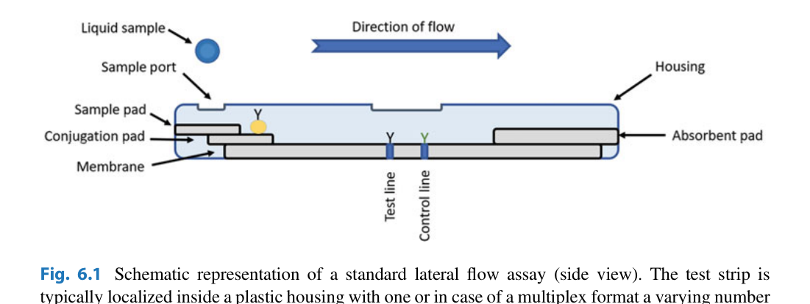
스트립은 많은 서로 다른 요소로 구성되며 흔히 보이는 것보다 복잡하다. 분석물을 포함하는 액체 검체는 샘플 패드에 적용되며 여기서 재수화된 버퍼, 염, 계면활성제 혹은 다른 액체와 혼합된다. 이 단계는 검체 준비에 중요하며 콘주게이트 패드로 검체의 일정 유속과 조절된 분포를 보장하고, 단백질 용해도가 pH에 영향을 받으므로 항원-항체 상호작용에 중요하다. 많은 항체의 등전점(isoelectric point, pI)은 pH 5.5~7.5 사이이다. 따라서 pH 7.0~7.5가 최적일 수 있으며 버퍼 조건은 이에 맞게 조정되어야 한다. 반면 유속은 막 자체의 재질에 의해 결정된다. 니트로셀룰로오스(nitrocellulose)가 흔히 사용되는 재질이다. 다른 예는 폴리비닐리덴플루오라이드, 전하변형 나일론, 폴리에테르설폰이다. 유리한 막 재질은 유리한 모세관힘과 일정 유속을 갖고 테스트 및 대조선에서 항체의 쉬운 결합과 고정화를 가능하게 한다. 결합 기전은 주로 정전기적 및 소수성 상호작용이다. 고정화 능력은 고분자 표면적, 다공성, 두께 및 재질 자체의 구조적 특성의 양에 의해 정의된다. 액체 검체 적용 후 콘주게이트 패드로 이동한다. 이는 검출 복합체를 보유하고 검체와 검출 복합체를 막과 테스트 및 대조선에 전달한다. 콜로이드 금나노입자에 접합된 인식항체는 콘주게이트 패드에 국재화된 흔히 사용되는 검출 복합체이다. 셀룰로오스 나노비드, 라텍스 비드, 상자성 비드 혹은 형광 분자도 사용 가능하다. 인식/포획항체의 선택은 항체의 결합상수(KD)와 특이성 같은 결합 특성이 검사 민감도와 배경 신호에 큰 영향을 미치므로 특이적 LFIA 설계에서 가장 중요한 부분이다. 신호는 가장 단순한 형태로 분석물 연관 응집(샌드위치 분석) 혹은 해리(경쟁 분석)의 농축으로 생성되는 비색 신호이다. 인식항체는 금 입자에 흡착되고 복합 검체에서 분석물에 결합할 수 있다. 다른 표지는 예컨대 형광 염료, 발광 분자, 양자점(quantum dot)일 수 있다. 이들 표지의 이용은 LFIA 민감도 개선을 가져올 수 있으나 더 이상 작업자의 육안으로 직접 검출할 수 없고 형광 판독기 같은 추가 장치가 필요하다. Shi 등은 초상자성 나노입자와 자기 판독기를 사용하고 분석 민감도를 10배 개선하였다. 비색 신호는 효소 신호증폭 반응 적용으로 증강될 수 있다. 서양고추냉이 과산화효소(horseradish peroxidase, HRP) 혹은 알칼리인산분해효소(alkaline phosphatase, AP)는 모두 ELISA에서 민감도 개선에 잘 작동하며 LFIA에도 적용된다. 흡수 패드는 테스트 스트립 말단에 국재화된다. 주요 기능은 유체를 흡수하여 분석 검체 부피를 증강하는 것이다.
일반적으로 LFIA는 직접 및 간접 분석으로 구분될 수 있다. 호르몬과 다른 단백질 및 펩타이드 분석물 검사는 통상 샌드위치 분석으로 분석되는데, 이는 이 유형 분석물이 흔히 하나보다 많은 에피토프를 갖고 이중항체 샌드위치 분석에 필요한 서로 다른 항체 종에 분석물이 결합될 수 있기 때문이다. 합텐(hapten)과 약물 및 그 대사물 같은 소형 화학물질은 통상 경쟁 혹은 억제 분석으로 분석된다. 따라서 LFIA는 다른 면역분석 형식처럼 설계된다. ELISA 같은 다른 복잡 형식과 달리 단순 종이기반 분석이며 마이크로어레이 및 다중(multiplex) 형식으로 설계될 수 있고 훈련된 숙련 작업자 필요 없이 신속한 결과를 제공한다. 덜 정량적이고 흔히 낮은 민감도 같은 함점에도 불구하고 현장검사 및 환자근접 진단 부문에 크게 기여한다.
효소결합면역흡착분석은 단순 혹은 복합 검체에서 매우 낮은 분석물 농도를 검출·정량하는 데 매우 특이적이고 민감하다. 원리는 항원과 항체의 매우 특이적 상호작용에 기반한다. 그 응용은 과학과 진단에서, 예컨대 자가면역질환 바이오마커 검출 등 다양하다. 이들은 환자 혈청 검체 내 자가항체일 수 있다. 흔히 세 유형의 ELISA가 이용되며 원저 그림 6.2에 모식적으로 표시된다: 간접 ELISA(indirect ELISA), 샌드위치 ELISA(sandwich ELISA), 경쟁 ELISA(competitive ELISA). 간접 ELISA에서는 분석물을 포함한 검체(예컨대 환자 혈청)가 미세역가판(microtiter plate) 웰에 코팅된다. 남은 결합부위 차단 후 검출항체와 1차 검출항체에 특이적인 효소 접합 2차항체가 첨가된다. 기질 첨가 후 유색 생성물로의 전환을 지정 ELISA 판독장치로 측정할 수 있다. 화학발광- 및 형광-기반 리포터 분자도 개발될 수 있으며 분석 민감도를 개선할 수 있다. 이 regard해서는 특수 장비가 필요하다. 신호 강도는 검체 내 분석물 농도와 직접 상관되며 게이지 열(gauge row)과 비교된다. 연속 희석으로 게이지 열을 검체 희석과 동시에 분석하기 위해 정제된 분석물 검체를 이용 가능한 것이 필수적이다. 분석물 농도와 신호 강도 간 선형 관계는 좁은 동적범위(dynamic range)로 제한된다. 간접 ELISA는 흔히 인간 혈청 검체 내 항체 혹은 사이토카인 수준 같은 분석물을 동정·정량하는 데 사용되며, 예컨대 내분비 질환 진단에 사용된다. 간접 ELISA 방법은 혈액 혹은 혈청 같은 복합 매트릭스의 일부인 분석물의 완전 회수 억제를 통해 발생할 수 있는 매트릭스 효과(matrix effect)에 취약하다. 불리한 매트릭스 효과는 혈청 검체 희석으로 제한될 수 있다. 분석물을 판 웰 표면에 고정화하기 위해 특이 포획항체를 사용함으로써 ELISA는 고도로 특이적일 수 있다. 샌드위치 ELISA에서는 고정된 포획항체가 매트릭스로부터 분석물을 결합하고, 이후 서로 다른 에피토프를 표적하는 1차항체가 효소 결합 검출항체로 검출될 수 있다. 남은 결합부위의 비효율적 차단 혹은 부적절한 세척은 분석물이 웰 표면에 비특이적으로 결합하거나 미결합 검출항체가 용액에 남아 있으므로 위양성 결과를 초래한다. 효소 결합 2차 검출항체는 포획된 분석물에 결합하고 기질 첨가 후 비색 판독을 가능하게 한다. 분석물은 두 항체 사이에 갇힌다. PerkinElmer, Inc.의 Alliance HIV-1 p24 ELISA 검사는 혈청, 혈액, 세포배양 검체에서 바이러스 마커 캡시드 단백질 p24를 검출하는 흔히 사용되는 검사키트이다. 초기 감염 시점의 매우 낮은 p24 수준과 감염자 혈액 검체에서 유리 p24 항원과 항-p24 항체의 복합체화는 일관되지 않게 검출되는 감염을 초래할 수 있다. 복합체화된 항원은 전통 ELISA 검사로 거의 검출될 수 없다. HRP 기반 광화학 신호증폭법은 그 ELISA 민감도를 최대 40배 증강하는 데 적용될 수 있다. 경쟁 ELISA 동안 검체 내 결합 항원과 검출항체의 복합체는 재조합 정제 항원이 웰 표면에 코팅된 웰에 첨가된다. 검체 항원(분석물)과 코팅된 항원은 항체 결합을 놓고 경쟁한다. 이 설정에서 신호 강도 감소는 분석물 농도와 상관된다.
항체는 또한 신생물성 질환에서 비정상 세포 인식과 기원 세포계열 동정에 도움이 되며, 이는 암 유형 진단과 후속 요법 결정에 중요하다. 항체는 예컨대 유세포분석(flow cytometry)을 이용한 면역표현형분석(immunophenotyping)으로 림프절 세침흡인, 조직 검체 및 기타 체액으로부터 림프종 아형 분류에 이용된다. 이 접근에서는 서로 다른 형광단(fluorophore)에 접합된 여러 특이 단일클론항체의 동시 적용을 통해 세포상 표면 항원 같은 다중 바이오마커를 병렬로 분석할 수 있다. 악성 세포는 예컨대 이들 항원의 변형된 발현 패턴 검출을 통해 동정될 수 있다. 유세포분석 동안 평가될 생존 세포를 포함하는 환자 검체는 항원 특이적 형광 표지 단일클론항체와 사전 인큐베이션된다. 유세포분석기 내에서 세포는 산란되고 현탁액에서 레이저 빔을 하나씩 통과한다. 표지된 세포는 레이저에 여기되어 형광단의 스펙트럼에 대응하는 특정 파장의 빛을 방출하며 검출기로 측정된다. 적합한 표지 항체와 레이저 광원 세트를 이용해 복잡 집단 내 각 세포의 다양한 물리적 파라미터를 분석할 수 있으며, 이는 표면 항원의 발현 패턴과 세포의 입도(granularity)·크기에 대한 정보를 제공한다. 이는 한 번에 하나 혹은 두 마커만 평가할 수 있는 면역조직화학(immunohistochemistry, IHC)과 대조된다. 림프종 아형 분류를 위해 백혈구 마커의 표현형 발현을 분석하는 것이 유리하다. 이들 마커의 발현 패턴은 세포 유형 기원과 분화 단계에 대한 정보를 제공하며, 이는 요법에서 신생물성 세포 클론의 반응을 예측할 수 있다. 이와 관련하여 유세포분석은 여러 표면 마커의 동시적·다중파라미터·정량적 분석을 가능하게 하며 예컨대 만성림프구백혈병과 더 공격적인 백혈병 유형을 구별하는 데 도움이 된다. 요법 후 유세포분석은 치료 중 제거되지 않고 암 재발을 개시할 수 있는 최소 잔존 악성 세포량을 분석하는 데 사용된다. 이는 최소잔존질환(minimal residual disease)이라 불리며 만성림프구백혈병의 신뢰할 만한 예후 마커이다.
요법 중 치료에 대한 반응과 질환 진행·심각도를 모니터링하는 것이 유리하고 흔히 요구된다. 이와 관련하여 중요한 예는 유방암 종양 분류이다. 예후와 치료 결정은 주로 종양 병기, 종양 등급, 호르몬수용체 상태, HER2 상태에 의해 안내된다.
HER2 양성 종양만이 항-HER2 항체 트라스투주맙으로 치료된다. 유방암 종양의 HER2 상태를 분석하는 데 흔히 두 가지 방법이 사용된다. FISH(fluorescence in situ hybridization, 형광현장혼성화)는 HER2 유전자 증폭을 분석하고, IHC는 조직 검체에서 HER2 발현과 분포를 분석한다. HER2 과발현은 흔히 불량 예후와 상관된다. FDA 승인 검사키트는 예컨대 HercepTest™, InSite®(BioGenex Laboratories Inc.), Bond Oracle™(Leica Biosystems), Ventana HER2 Pathway® System(Ventana Medical Systems, Inc.)이다. 이는 토끼 단일클론 항-HER2 항체(클론 4B5)와 과산화효소 접합 2차항체를 이용하여 면역조직화학 분석으로 포르말린 고정 파라핀 포매 유방암 조직 검체의 HER2 상태를 반정량한다. 불행히도 검사 절차와 검체 취급의 변수가 검사 결과에 영향을 미친다. 이들은 고정액 유형, 고정 길이, 파라핀 블록 보관, 절편 두께이다. 1차 검출항체에 의한 에피토프 인식은 포르말린 처리에 의해 해롭게 영향받는 경우가 잦으며, 이는 염색 패턴에 큰 영향을 미칠 수 있다. FISH에 의한 HER2 유전자 증폭 분석이 이 점에서 더 신뢰할 만한 진단 기술임이 밝혀졌다.
면역분석에 관한 검출 시약의 특수 범주는 이중특이성 항체 분자이다. 진단 분석에서 이중특이항체의 이용은 전체 절차 단계 수를 줄이고 단일특이항체 대비 민감도를 증강하여 분석 복잡성을 줄일 수 있다. 이는 두 개의 구별되는 에피토프에 결합하는 내재적 능력을 통해 달성된다. 면역분석에서 이중특이성 검출항체는 한 팔로 분석물에, 다른 팔로 리포터 분자에 결합할 수 있다. 이 배치는 리포터 분자, 예컨대 FITC(fluorescein) 혹은 효소와 항체가 더 이상 공유결합으로 연결되지 않아 그 기능을 해롭게 영향을 미칠 수 있다는 장점이 있다.
암 영상화의 응용은 면역-PET(immune-based positron emission tomography, 면역 기반 양전자방출단층촬영)이다. 면역-PET은 종양 항원 발현과 생체 내 분포를 분석하는 데 사용되며 이를 기반으로 가장 적합한 표적 치료 선택에 유익할 수 있다. 면역-PET 프로브는 통상 양전자 방출 방사성동위원소 표지 암 관련 항원에 특이적인 단일클론항체, 종양 세포상 표면 분자 혹은 바이오마커, 그리고 PET 스캐너로 만들어진다. 이와 관련하여 중요한 측면은 항체 분자의 생물학적 반감기와 방사성동위원소의 물리적 반감기의 균형이다. 항체는 큰 크기(~150 kDa)와 FcRn(neonatal Fc-receptor, 신생아 Fc 수용체) 재활용으로 체내 체류시간이 길어 재조합 항체 단편 같은 소형 분자 대비 종양 침투가 불량하므로, 프로브의 생체분포를 가능하게 하기 위해 통상 주입 1일 후 영상화하므로 적합한 반감기의 방사성동위원소와 커플링되어야 한다. 항체 프로브는 순환계에 적용되어 병변의 특이 표지를 위해 종양 관련 항원에 결합한다. 환자는 그 시간 동안 일정량의 방사선에 노출되며 이는 프로브의 체내 체류시간과 함께 증가한다. 이 방법의 개선은 예컨대 이중특이항체의 한 파토프(paratope)에 합텐(hapten) 특이성을 엔지니어링하는 것이었다. 합텐 자체는 방사성동위원소, 예컨대 ⁶⁸Ga- 혹은 ¹⁸F로 표지되었다. 다른 파토프는 종양 관련 항원 CEA(carcinoembryonic antigen, 암배아항원)에 특이적이었다. CEA × 합텐 이중특이항체는 특이적 종양 표적화와 CEA 음성 조직에 대한 미미한 표적화를 보였다. 항-합텐 항체를 이용한 이 전표적(pretargeting) 접근은 비특이 표지 없이 순환계로부터 방사성동위원소의 신속한 제거와 종양의 양호하고 신속한 가시화를 보였다. 이는 동위원소에 대한 전체 노출시간을 줄이며 환자에게 큰 이득이 될 수 있다. 또 다른 접근은 표적화를 위해 개선된 제거율을 갖는 F(ab)₂ 혹은 scFv 단편 같은 소형 항체 단편 이용이다.
6.3 과학에서 항체의 응용
특정 항원에 대한 항체의 극히 높은 민감도와 특이성은 많은 연구 응용에도 이상적 시약이 되게 한다. 실제로 현대 생명공학에 의한 대규모 생산의 촉진으로 항체는 생물의학 연구의 주요 일꾼이 되었다. 단일클론(균질 이소형 및 항원 특이성)과 다클론(이종 이소형 및 항원 특이성) 항체 모두 산업 공급업체로부터 이용 가능하다. 다클론항체는 표적 항원에 면역화된 동물의 혈청으로부터 분리된다. 동일 항원의 서로 다른 에피토프에 대한 서로 다른 항체 혼합을 포함하며 분석 결과에 영향을 미칠 수 있는 무관 단백질에 대한 항체도 포함할 수 있다. 또한 다클론항체 공급은 원천 동물에 의존하므로 특정 항원에 대한 두 배치의 다클론항체가 동일하지 않다. 대조적으로 단일클론항체는 하이브리도마로부터 얻거나 발현 벡터로부터 재조합으로 만들어지며, 양자 모두 균질 항체의 지속 공급을 보장한다.
6.3.1 면역침강
면역침강(IP)은 항체를 적용하여 세포용해물 혹은 생체액 같은 수용액으로부터 각각의 표적 항원을 침전 혹은 ’끌어내림(pull down)’하는 방법이다. 침전 과정은 항체의 Fc 영역에 결합하는 특수 비드 이용으로 촉진된다(보통 항-Fc 항체 혹은 단백질 A/G의 공유 접합을 통해). 비드 자체는 통상 아가로오스, 세파로오스 혹은 다른 합성 고분자로 구성된다. 비드상 항체-항원 복합체의 분리는 원심분리, 자력 혹은 다른 기계적 방법으로 달성된다. IP 분석은 많은 생화학·세포·분자생물학 응용에 흔히 사용된다. 기본 응용은 후속 분석, 예컨대 전기영동 혹은 웨스턴 블롯(Western blotting, 아래 참조)에서 추가 분석을 위한 표적 단백질의 단순 정제이다. IP는 다중 단백질 상호작용 분석에도 이용될 수 있다. 이 경우 항체는 표적 단백질을 침전하는 데 사용되고 후속 분석(예컨대 질량분석)으로 다른 단백질이 복합체와 함께 끌어내려졌는지 결정한다.
6.3.2 염색질 면역침강
염색질 면역침강(ChIP)은 단백질과 핵산의 상호작용을 분석하는 IP의 특수 변형이다. 방법론은 원래 RNA 중합효소 II와 그 표적 유전자 뉴클레오티드 서열의 평가를 위해 개발되었다. 이 절차에서는 DNA를 결합된 단백질과 가교(crosslink)하기 위해 세포를 고정하였다. 세포 용해 후 DNA-단백질 복합체를 100~300 염기쌍 단편으로 절단한 뒤, 관심 단백질(예컨대 전사인자)에 특이적인 항체로 표준 IP 프로토콜에 따라 면역침강을 수행한다. DNA-단백질 복합체는 가교 해소를 통해 최종 해리되고 침전된 DNA 단편은 PCR 증폭으로 분석된다. ChIP은 질량분석을 통해 DNA와 함께 공침전된 다른 단백질을 분석하는 데도 사용될 수 있다. 때로 화학 가교가 항원 에피토프 구조를 변화시켜 항체 결합 파괴를 초래할 수 있다. 이러한 경우 가교 단계가 생략되고 천연 항원에 대해 IP가 수행되는 ChIP 변형인 NChIP을 수행할 수 있다. 그러나 이 전략은 DNA에 강하게 결합하는 표적 단백질에 제한된다. ChIP의 최근 진보는 ChIP-chip(ChIP 분리 DNA의 전게놈 마이크로어레이 분석)과 ChIP-seq(ChIP 후 면역침전된 DNA의 고처리량 시퀀싱)이다.
6.3.3 웨스턴 블롯
웨스턴 블롯(WB)은 겔 전기영동의 분해능과 항체 검출 특이성을 결합한 방법이다. 이 절차에서는 단백질을 도데실황산나트륨-폴리아크릴아마이드 겔 전기영동(sodium dodecyl sulfate-polyacrylamide gel electrophoresis, SDS-PAGE)으로 분리한 뒤 전하에 의해 흡착 블롯 막으로 전달한다. 단백질 변성 후 각각의 표적 항원을 인식하지 못하는 항체에 대해서는 네이티브 PAGE(SDS 없음)도 적용될 수 있다. 단백질 전달 후 블롯 막은 비특이적 단백질 결합을 줄이기 위해 차단되고 이후 표적 단백질 특이적 1차항체와 인큐베이션된다. 1차항체는 흔히 표지되지 않으므로 검출을 위해 1차항체의 Fc 부분에 특이적인 표지된 2차항체가 이용된다. 각각의 표지는 후속 분석 유형에 따라 비색 혹은 화학발광 반응용 효소 혹은 형광단이 가장 흔하다. WB는 항원의 존재와 양, 분자량, 항원 추출 효율 검출에 적용될 수 있다. 이 방법은 불용성이거나 표지하기 어렵거나 쉽게 분해되어 면역침강 같은 절차에 적합하지 않은 항원을 다룰 때 특히 도움이 된다.
6.3.4 효소결합면역흡착분석
ELISA 방법은 인간 혈청 같은 복합 생체 검체에서 질환 관련 분석물의 매우 낮은 양을 검출·정량하는 확립되고 강건한 방법이므로 ‘진단에서의 항체’ 절에 이미 기술되었다. 일반적으로 효소결합면역흡착분석은 체액 내 분자 농도를 동정·분석하는 방법이다. 항체와 그 특이 항원의 매우 특이적이고 고친화도 상호작용에 의존한다. ELISA에 사용되는 효소는 예컨대 베타-갈락토시다아제, 글루코오스 산화효소, 과산화효소, 알칼리인산분해효소이다. 특이 가용성 기질이 첨가되면 효소-기질 반응이 일어나 400~600 nm 분광광도계로 읽는 비색 생성물 신호가 생성되며 표준곡선에 의존하여 분석물 농도에 대한 정보를 제공한다. ELISA는 펩타이드 및 단백질 분석에 흔히 사용된다. 다른 매우 민감하고 더 현대적인 방법 외에 여전히 강건하고 쉬우며 자주 적용되는 분석 시스템으로 많은 자동화를 요구하지 않는다. 그럼에도 피펫팅 로봇, 미세판 세척기, 흡광도 판독기를 포함하는 완전 자동 시스템이 이용 가능하다. 1975년 Köhler와 Milstein에 의해 도입된 하이브리도마 기술을 이용한 단일클론항체 생산 동안 ELISA는 면역화된 동물의 혈청 항체 역가 분석에 사용된다. 항체 생산 B 세포와 불멸 골수종 세포 융합 후 대응 하이브리도마 세포가 단일클론항체를 생산한다. 세포 상청액은 항체 생산 하이브리도마 세포 동정을 위해 ELISA로 스크리닝된다. 파지 디스플레이를 이용한 재조합 항체 발굴 동안 패닝 후 농축된 파지 풀의 생화학적 특성 규명을 위해 파지-ELISA가 적용된다.
6.3.5 면역조직화학/면역세포화학
면역조직화학(IHC)과 면역세포화학(immunocytochemistry, ICC)은 모두 일반적으로 조직과 세포 내 단백질의 존재와 위치를 현장에서 검출하는 방법이다. ICC는 주변 세포외기질로부터 제거된 온전 세포에 수행되는 반면, IHC는 고정된 전체 조직 절편에 수행된다(원저 그림 6.3). 양 방법은 표적 구조 검출에 단일클론 혹은 다클론항체를 이용한다. 그러나 후자는 여러 에피토프를 인식하는 이종 혼합으로 비특이적 결합을 초래할 수도 있음을 고려하는 것이 중요하다. 염색은 1차항체의 직접 표지를 통해 혹은 1차항체의 불변부에 특이적인 표지된 2차항체 이용으로 수행될 수 있다. 후속 검출 방법에 따라 서로 다른 염색 리포터를 사용할 수 있다. 효소 결합 항체와 비색 기질을 이용한 비색 염색이 흔히 사용된다. 이 방법은 비교적 쉽고 슬라이드는 표준 현미경으로 분석할 수 있다. 단점은 내인성 효소 활성으로 인한 잠재적 높은 신호 배경과 검체당 하나 혹은 두 항원만 표적할 수 있다는 점이다. 대안 접근은 형광단 표지 항체(면역형광) 이용으로, 여러 항원의 동시 표지·검출을 가능하게 한다. 이는 서로 다른 종 혹은 서브클래스 유래 1차항체를 각각 대응하는 접합 2차항체와 함께 사용함으로써 IHC와 ICC 모두에서 달성될 수 있다. 고해상도 분석을 위해 면역금 염색(immunogold staining, IGS)도 적용될 수 있다. 이 방법은 다양한 크기의 금 입자에 연결된 항체를 사용하며, 단일 검체에서 서로 다른 항원 검출을 가능하게 한다. 검체 분석은 최종적으로 고해상도·고민감도로 전자현미경 스캔에서 수행되어 세포와 조직 내 표적 항원의 매우 정밀한 국재화를 가능하게 한다. IHC와 ICC는 바이오마커와 상이하게 발현된 단백질의 분포와 국재화를 이해하기 위한 기초 연구에 널리 사용된다.
6.3.6 면역-PCR과 근접결찰분석
면역-PCR은 ELISA와 중합효소연쇄반응(PCR)의 조합이다. 이 경우 검출항체는 PCR로 증폭되는 DNA 올리고뉴클레오티드에 연결된다. 증폭된 DNA 분자는 표준 형광 방법으로 검출될 수 있다. 근접결찰분석(PLA)은 고전적 면역-PCR의 능력을 단백질 상호작용 검출까지 고특이도·고민감도로 포함하도록 확장하는 기술이다. 방법론은 올리고뉴클레오티드로 표지된 2차항체(PLA 프로브라 불림) 사용에 기반한다. 이들 항체는 표적 항원에 대한 서로 다른 1차항체의 불변영역에 결합한다. PLA 프로브가 근접(약 20~40 nm, 예컨대 두 분석 표적 항원이 상호작용하거나 단백질 복합체의 일부를 형성할 때)하면 올리고뉴클레오티드 프로브는 혼성화하고 두 ’연결 올리고’와 DNA 중합효소 첨가 후 롤링서클 DNA 합성에 참여할 수 있다. 생성된 증폭된 원형 구조는 PLA 프로브 중 하나에 공유결합으로 부착된 채 남아 다시 표준 형광 방법으로 검출될 수 있다.
6.3.7 유세포분석
유세포분석은 다수의 이들 세포를 포함하는 검체로부터 박테리아 및 미생물 세포를 포함한 단일 세포의 다중 물리적 파라미터를 고처리량으로 분석하는 고도로 정교한 방법이다. 예컨대 단백질과 형광 분자로 로딩될 수 있는 고분자 비드 같은 인공 입자도 분석될 수 있다. 이러한 이유로 방법은 세포 수준에서 질환 진단 지원(예컨대 면역표현형분석, ‘진단에서의 항체’ 참조)을 위해 임상에서, 그리고 유도진화(directed evolution) 맥락에서 대형 펩타이드·단백질 기반 라이브러리 스크리닝을 위해 과학에서 적용된다. 유세포분석의 원리는 분석된 세포와 입자를 통한 빛의 산란과 방출이다. 주어진 세포의 형태학적 구조와 형광단 로딩은 광산란 및 형광 방출과 상관된다. 유세포분석 장치의 중요 구성요소는 유체, 광학, 검출기, 광전자증배관, 컴퓨터이다. 이들은 모두 함께 세포 포함 액체 흐름과 레이저 빔을 유동 챔버에 집중시켜 세포가 레이저를 하나씩 통과할 때 방출·산란된 빛을 검출기를 통해 검출한다. 방출 형광 파장에 의존하는 형광 신호 검출에 특수 필터가 요구된다. 검출기 하류의 광전자증배관은 광신호를 증폭된 전자신호로 전환한다. 특히 과학 응용을 위해 유세포분석과 분류 유닛 커플링 가능성이 매력적이다. 통상 특수 FACS(fluorescence activated cell sorting, 형광 활성화 세포 분류) 기기가 사용된다. FACS는 대형 이종 세포 집단으로부터 정의된 파라미터를 갖는 단일 세포 분리를 가능하게 한다. 단일 세포 분류는 두 편향판이 생성하는 강한 전기장을 통과하는 하전 세포 포함 액적의 편향을 통해 일어난다. 항체 엔지니어링 분야의 유도진화 접근을 위해 특이성 혹은 결합상수(KD) 같은 개선된 특성을 갖는 결합제가 예컨대 미생물 세포에 디스플레이되는 대형 항체 기반 라이브러리로부터 분리될 수 있다. 유세포분석에 중요했던 것은 FITC(fluorescein) 혹은 PE(R-phycoerythrin) 같은 전통 형광단에서 알려진 중첩 스펙트럼 문제에 관해 스펙트럼 분해능에서 우수한 특성을 보이고 표백되지 않으며 매우 광안정적인 양자점 발견이었다. 그럼에도 2차 염색 분자 맥락에서 강건한 도구 제품군을 확립하는 데 성공하지 못하였으며 이 영역은 여전히 항체-형광단 접합체가 지배한다.
6.3.8 질량분석
질량분석(MS)은 분자를 단순 및 복합 매트릭스 모두에서 동정·정량하기 위해 이온의 질량대 전하비(mass-to-charge ratio, m/z)를 측정하는 분석 방법이다. MS는 단백질체학(proteomics), 약물 발굴, 환경 분석, 생물의학 연구 같은 광범위한 과학 분야의 일꾼이다. 그러나 MS의 흔한 문제는 관심 일부 단백질을 가리는 고풍부 단백질 존재이다. 이 문제를 극복하는 전략은 MS와 항체 기반 친화성 방법의 조합이다. 면역침강 기반 질량분석(immunoprecipitation-based mass spectrometry, IP-MS)에서는 관심 분자가 IP로 포획·분리된 뒤 MS로 분석된다. 항체 기반 면역분석과 결합하여 MS 민감도와 특이성을 개선하기 위해 개발된 여러 다른 정량·정성 응용이 있다. 2004년 도입된 안정동위원소 표준과 항-펩타이드 항체 포획(stable isotope standards and capture by anti-peptide antibodies, SISCAPA)은 관심 펩타이드(예컨대 효소 트립신으로 단백질분해 소화 후)가 유동 컬럼 혹은 자성 비드에 고정된 항-펩타이드 항체를 이용해 농축되는 방법이다. 서열이 선정 표적 단백질에만 존재하는 표적 펩타이드를 선택함으로써 표적 펩타이드는 표적 단백질에 대한 직접 정량 대리자로 기능할 수 있다. 안정동위원소 표지를 포함하는 표적 펩타이드의 합성 버전이 내부 표준으로 알려된 양으로 소화된 검체에 첨가된다. 표적 펩타이드와 표준은 안정동위원소 표지의 질량 차이로 별도로 측정될 수 있으므로 그 비율이 표적 펩타이드량의 원하는 정량 추정치를 제공한다. SISCAPA는 단백질체학 분야의 다양한 연구와 유방암 환자에서 인간 혈청 트랜스페린 수용체(soluble transferrin receptor, sTfR) 같은 바이오마커 검증·정량 임상 혈액 검사에 사용된다. SISCAPA와 유사한 방법론은 면역-MALDI(immuno-MALDI, iMALDI)로, 단백질분해 펩타이드도 항-펩타이드 항체로 포획되나 농축된 검체는 이후 특정 매트릭스에 스폿되어 최종적으로 매트릭스지원 레이저탈착/이온화(matrix-assisted laser desorption/ionization, MALDI) MS로 분석된다. 방법론은 고혈압과 알츠하이머병 같은 다양한 병리 진단에 적용되었다. 또 다른 유사 접근은 면역-MRM으로, 다중반응모니터링 질량분석(multiple reaction monitoring mass spectrometry, MRM-MS)이 펩타이드 혼합물의 항체 기반 농축과 결합된다. MRM-MS에서는 탠덤 질량분석기의 1단계에서 특정 질량의 이온이 선택되고 검출을 위해 2단계에서 전구이온의 단편화 반응의 이온 생성물이 선택된다. 질량분석 면역분석(mass spectrometric immunoassay, MSIA)은 면역친화성 분리와 질량분석 검출을 결합한 탑다운(top-down) MS 기반 접근이다. 표적 단백질에 대한 항체는 피펫 팁 입구에 장착된 다공성 미세컬럼에 부착되어 생체 검체로부터 직접 단백질 친화성 추출을 가능하게 한다. 친화성 포획 후 단백질은 MALDI MS 분석을 위해 표적 판에 직접 용출되거나 후속 액체크로마토그래피-MS(LC-ESI MS) 분석을 위해 소량 용출액으로 용출된다. 질량세포분석(mass cytometry)은 유세포분석과 원소 질량분석의 두 실험 플랫폼 융합이다. 이 접근에서는 세포상 표적 단백질이 고유 안정 중금속 동위원소에 접합된 항체로 표지된다. 표지된 세포는 이후 분무되고 아르곤 플라즈마 통과를 통해 금속 접합 항체가 이온화된다. 질량대 전하비는 이후 비행시간(time-of-flight, TOF) 질량분석기로 분석된다. 방법론은 고전 형광단의 넓은 방출 스펙트럼에 기반한 유세포분석의 스펙트럼 중첩 한계를 극복한다. 대조적으로 원소 질량분석은 서로 다른 원자량의 동위원소를 고정확도로 구별할 수 있다. 이 근본적 차이는 질량 기반 플랫폼을 이용해 동시에 분석될 세포 특징을 유의하게 더 많게 한다. 그러나 질량세포분석의 현재 한계는 고전 유세포분석 대비 낮은 유속과 높은 운영비용이다.
7장 이중특이성 항체
7.1 서론
이중특이성 항체(bispecific antibodies, bsAbs)는 본질적으로 하나의 분자 내에 두 개의 에피토프(epitope) 또는 두 개의 항원(antigen)에 대한 특이성을 결합한 분자이다. 이러한 단순한 관점에서 보더라도, 각각 지정된 단일 표적을 갖는 두 개의 별개 분자를 생산하고 특성화해야 하는 것에 비해 그 적용이 유리함은 자명하다. 이러한 조합형(combinatorial) 이중특이성 항체는 질병을 매개하는 리간드(ligand)의 중복성을 극복해야 하는 임상 상황에서 매우 귀중하다. 더욱이 지난 30여 년 동안, 두 특이성을 단일 분자 내에 물리적으로 연결함으로써만 달성될 수 있고 단순 혼합물로는 달성될 수 없는 중요한 생물학적 효과에 대한 방대한 지식 기반이 구축되었다. 이러한 절대적 이중특이성(obligate bsAbs)의 인기가 높아진 결과, 2019년 기준으로 임상에서 승인된 2개 분자와 임상시험에서 평가 중인 85개의 후보가 도출되었다[1].
이러한 고유한 효과는 공간적(spatial)일 수 있는데, 이때는 항체의 양쪽 팔에 의한 결합이 항체의 위치 결정에 결정적으로 중요하다. 대표적인 예로 서로 다른 두 세포 유형을 연결할 수 있는 분자나 효소(enzyme)와 그 기질(substrate)을 연결하는 분자가 있다[2]. 또 다른 절대적 이중특이성 항체군은 시간적(temporal) 특성을 지니는데, 이때는 두 도메인의 결합이 순차적으로 진행되며, 동역학적 혹은 입체적 이유로 한쪽 팔의 결합이 다른 쪽 팔의 결합에 의존한다[2].
7.2 이중특이성 항체의 역사
약 50년 전, 라이너스 폴링(Linus Pauling)의 그룹에서 연구하던 과학자 앨프리드 니소노프(Alfred Nisonoff)는 항체 분자의 구조에 관한 중요한 발견을 도출하였다. 즉 모든 항체 분자는 표적 항원에 대해 동일한 특이성을 갖는 두 개의 결합 부위로 구성된다는 것이다[7]. 항체를 두 개의 Fab 단편(fragment antigen-binding)과 하나의 Fc 단편(fragment crystallizable)으로 절단하기 위해 파파인(papain)을 사용한 노벨상 수상자 로드니 포터(Rodney Porter)의 연구를 이어받아[8], 니소노프는 또 다른 효소인 펩신(pepsin)을 사용하여 항체를 단일 2가 F(ab’)2 단편과 Fc 단편 유래의 여러 펩타이드 단편으로 단백분해 절단하였다. 그는 두 효소가 중쇄(heavy chain)의 이황화 결합(disulfide bridge)을 기준으로 서로 반대쪽을 절단한다고 추론하였다. 이러한 결과는 두 Fab 단편이 Fc 단편의 양 말단에 위치한다는 종래의 패러다임을, Fab 단편이 Fc 단편의 한쪽에 배치되는 4사슬 모델(four-chain model)로 전환시켰다.
이러한 발견에 뒤이어 인공 이중특이성 항체라는 개념이 신속히 대두되었다. 니소노프와 리버스(Rivers)는 펩신 절단, 온화한 환원 및 산화를 이용하여 서로 다른 특이성을 갖는 두 F(ab’) 단편으로부터 혼합 특이성을 지닌 2가 F(ab’)2를 제작하였다[9]. 이들의 최초 접근법은 마우스 면역글로불린(immunoglobulin, Ig)과 페리틴(ferritin)에 지시된 이중특이성 시약의 제조에 적용되었으며, 이는 전자현미경을 이용한 마우스 림프구 표면 Ig 검출에 사용되었다[10].
이후 20년은 쾰러(Köhler)와 밀스타인(Milstein)이 개발한 하이브리도마(hybridoma) 기술이 널리 보급되어 단클론항체(monoclonal antibody)의 효율적 공급을 가능하게 한 시기였는데[11], 이 기간 동안 디티올-착화(dithiol-complexing) 및 티올-활성화(thiol-activating) 시약을 이용한 화학적 커플링[12]이나 티오에테르 연결(thioether linkage)[13]을 이용하여 이중특이성 F(ab’)2의 수율을 개선할 수 있었다. 실제로 밀스타인 자신은 하이브리도마 개념을 “하이브리드 하이브리도마(hybrid hybridoma)”로 확장하여, 중쇄 및 경쇄 암호화 유전자를 모두 보유하는 단일 “쿼드로마(quadroma)” 세포[14]를 구상하였다. 서로 다른 두 항체의 유래로서[15], 중쇄와 경쇄의 난잡한 쌍형성(promiscuous pairing)에 의해 형성되는 여러 분자종(밀스타인이 “폐기물(waste)”이라 칭한) 중 하나로서 이중특이성 항체의 분비를 입증할 수 있었다(그림 7.1).
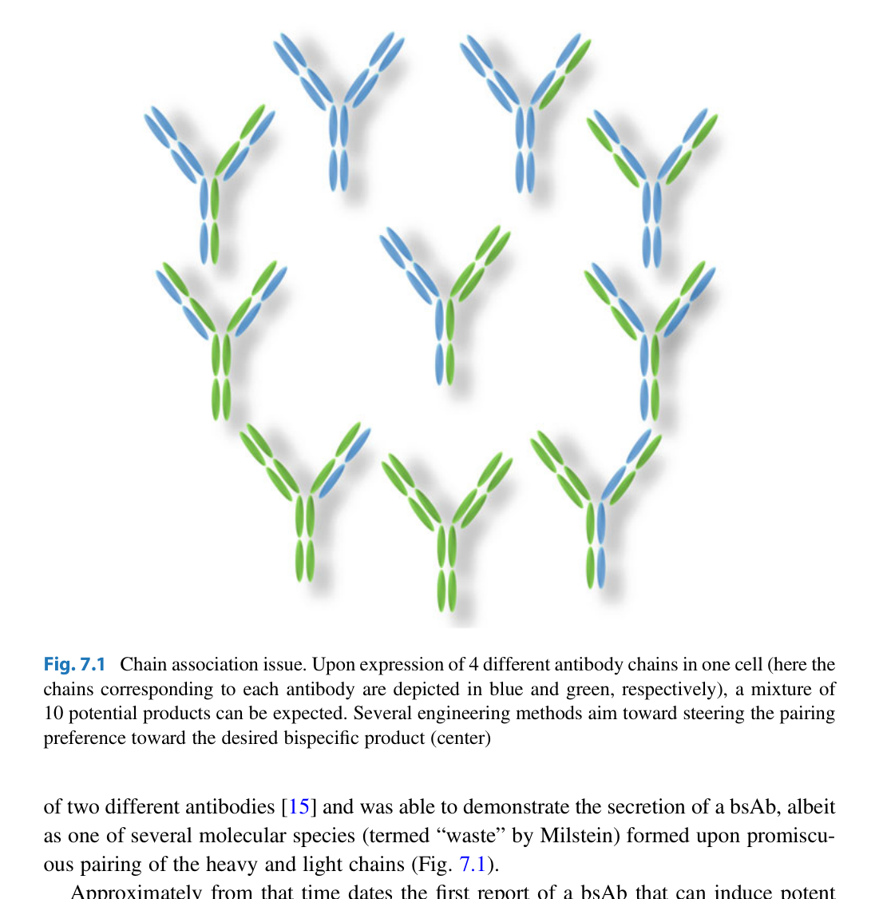
대략 같은 시기에 T세포를 종양세포 공격으로 리디렉션(redirection)함으로써 강력한 세포독성을 유도할 수 있는 이중특이성 항체에 대한 최초 보고가 등장하였다. T세포 수용체(T-cell receptor, TCR) 결합을 이용하여 T세포 클론을 활성화하고, 림프종 세포주에 발현된 Thy-1 항원을 종양관련항원(tumor-associated antigen, TAA)으로 선택하였다[16]. 수년 내에 화학적으로 커플링된 F(ab’)2 단편만으로 구성된 이중특이성 항체에 의해 매개되는 종양세포 쪽으로의 T세포 활성 리디렉션이 입증되었다[17, 18]. 주조직적합복합체(Major histocompatibility complex, MHC) 제한으로부터의 독립성과 유도된 세포 용해의 극도의 효능이라는 두 가지 특징으로 인해, 이러한 작용 방식을 갖는 이중특이성 항체는 현재까지 임상 개발의 중심에 남아 있다.
다음 10년간의 이중특이성 항체 공학은 재조합 DNA(recombinant DNA) 기술의 발전에 크게 영향을 받았다. 1988년 항체 중쇄와 경쇄의 가변 도메인을 유연한 링커(linker)로 연결하여 최소 항원결합 실체로 만든 단일사슬 가변단편(single-chain variable fragment, scFv)에 대한 최초 보고[19, 20]는 다중특이성 결합 분자 설계에 새 시대를 열었다. 무작위적 항체 사슬 연합을 회피하기 위해 이제는 여러 항원결합 분자를 하나의 폴리펩타이드 사슬 내에 결합할 수 있게 되었고, 글리코실화된 Fc 단편의 부재는 대장균(Escherichia coli)에서의 고역가 저비용 생산을 가능하게 하였다. 또한 이러한 다중특이성 제제의 원자가(valency)를 임의로 선택할 수 있게 되어 다양한 생물학적 상황에서의 활용성이 더욱 확대되었다. 그럼에도 Fc 단편의 결여는 생체 내 반감기를 훨씬 단축시키며, 최적의 생물학적 활성을 위해서는 인간 혈청 알부민(Human serum albumin, HSA) 혹은 Fc 융합 파트너의 도입으로 보상해야 한다. 따라서 최초로 발표된 대칭형 포맷이 각 중쇄의 C-말단에 scFv가 융합된 4가 이중특이성 분자, 즉 scFv가 융합된 단클론항체였다는 것은 놀라운 일이 아니다[21]. 나아가 응집과 낮은 안정성 문제는 최종 scFv 기반 산물의 재최적화를 종종 요구하였다[22, 23].
1996년에는 사슬 연합 문제(chain association issue), 즉 동시에 발현된 중쇄와 경쇄의 무작위 쌍형성으로 인해 10종의 서로 다른 분자종이 혼합 생성되는 현상(그림 7.1)을 다루기 위한 또 다른 선구적 접근이 사용되었다. 중쇄 이량체화가 10-15 nM 이상의 친화도로 CH3 도메인의 이량체화를 통해 개시된다는 관찰에 따라, 카터(Carter) 등은 두 항체 절반(half)의 유도된 이종이량체화(heterodimerization)를 가능하게 하는 “노브-인투-홀(Knobs-into-Holes)” 공학 전략을 제안하였다. 즉 한 중쇄에서는 작은 측쇄를 갖는 아미노산을 부피가 큰 측쇄를 갖는 아미노산으로 치환(“노브(knob)”)하고, 다른 중쇄에서는 반대 방향의 변형을 가하여(“홀(hole)”) 공발현 시 95% 이상의 이종이량체 산물을 얻었다[24]. 이러한 비대칭 항체 생산을 위한 입체장애(steric hindrance) 접근법은 이종이량체의 수율을 높이기 위한 추가 돌연변이유발(mutagenesis)로 보완되었고[25], 사슬 간 이황화 결합 도입[26] 및 점돌연변이(point mutagenesis)[27]와 같은 추가 공학 단계를 통해 결과 분자의 저하된 열안정성을 성공적으로 개선하였다. 대안적으로 이종 CH3 도메인 계면에 반대 전하를 갖는 아미노산 쌍을 도입함으로써 이종이량체화를 유도할 수도 있으며[28], 입체장애와 정전기적 반발(electrostatic repulsion)을 조합할 수도 있다. 보다 최근의 방법은 광범위한 돌연변이유발을 적용하거나 심지어 이종이량체 분자에 천연 존재하는 이종이량체화 모티프를 이용함으로써 이종이량체화 효율을 높이는데, 예컨대 BEAT 몸체(BEAT body) 플랫폼이 도입한 방식이 그러하다[29].
새 천년 첫 10년에는 경쇄 쌍형성을 다루기 위한 다수의 기발한 해결책이 제안되었는데, 예컨대 공통 경쇄(common light chain)의 사용[26, 30]이나 종-특이적 쌍형성을 보이는 경쇄의 사용[31]이 그것이다. 그러나 동족 경쇄와 그 중쇄 파트너의 선택적 쌍형성을 촉진할 수 있는 직교(orthogonal) 계면은 2014년까지 보고되지 않았다[32]. 이 문제에 대한 효율적 해결책은 이종이량체의 각 팔에서 CH1과 CL 도메인을 교환한 포맷인 크로스맙(CrossMab)으로 제시되었다[33]. 이종이량체 항체에서 경쇄 쌍형성 문제를 해결하는 또 다른 방법은 두 Fab 중 하나의 CH1/CL 불변 도메인 쌍을 한 쌍의 CH3 도메인으로 교환하는 것이다[34].
이와 같은 인간의 이중특이성 항체 생산 노력을 위한 폭발적 시도와 병행하여, 이중특이성 제제로 개발될 큰 잠재력을 지닌 훨씬 오래된 천연 항체 종이 존재하는데, 그 특유의 생물학적 특성은 일찍 주목받았으나 그 배후의 구조적 이유는 오랫동안 불분명하였다. 혈청 유래 IgG4가 항원을 가교(crosslink)하여 대형 면역복합체를 생성하지 못하는 현상은, 동일한 항원을 잘 가교할 수 있었던 재조합 IgG4와 대조적이었다. 벌독 포스포리파제-A2(phospholipase-A2, PLA2)에 만성 노출된 양봉가의 혈청에서 발견된 상승된 IgG4 수준은, 다른 PLA2-특이적 항체의 활성을 차단할 수 있는 완전 크기 “기능적 1가(functionally monovalent)” 항체 연구에 관심을 촉발하였다. 이들은 각각 서로 다른 항체로부터 유래한 두 쌍의 중쇄·경쇄로 구성되어 Fab 팔(arm)을 교환한 것이었다[35]. 이후 팔 교환은 번역 후(post-translationally) 우연히 일어남이 밝혀졌다. 즉 과량의 무관한 IgG4가 생체 내 하이브리드 항체 형성을 방지하였고[36], 민감한 실시간 형광공명에너지전달(fluorescence resonance energy transfer, FRET) 기법을 이용하여 Fab 팔 교환이 특정 산화환원 조건 하에 생체 내에서 일어날 수 있음이 입증되었다[37]. 이러한 현상의 수확은 오늘날 매우 성공적인 이중특이성 항체 구축 기술 중 하나인 “듀오바디(DuoBody)” 플랫폼으로 이어졌는데, 여기서는 IgG1 절반(half)이 CH3 도메인에 돌연변이를 보유하여 온화한 환원 및 재산화 시 제어된 Fab-팔 교환(controlled Fab-arm exchange)을 겪는다[38].
7.3 오늘날 이중특이성 항체의 작용기전
역사적으로 하나의 분자에 두 표적 특이성을 결합함으로써만 발휘될 수 있는 특정 생물학적 기능이 과학계의 주목을 받아 이러한 유리한 치료제를 개발·개선하게 하였다. 임상 환경에서 승인에 도달한 치료 항체의 예는 표 7.1에 열거되어 있다. 7.3.1절에 언급된 서로 다른 세포 유형의 가교 및 세포-대-세포 연합(“트랜스(trans)” 상호작용)을 허용하는 T세포 모집 전략의 하위집합 외에도, 이중특이성 항체는 동일 세포상의 두 수용체를 가교(“시스(cis)” 상호작용)하거나, 동일 신호전달 경로의 여러 리간드를 표적하여 중복성을 극복하거나(7.3.3절), 이중파라토프(biparatopic) 결합으로 동일 항원의 두 에피토프를 결합할 수 있다(7.3.4절). 경우에 따라 소위 작용제(agonistic) 이중특이성 항체는 대사 과정을 증강하고 재생을 촉진하거나(그림 7.3b), 효소 연쇄(enzyme cascade)의 사슬 연결고리로 작용할 수 있다(그림 7.3c 및 7.3.5절). 특정 생물학적 상황에서는 분자 전달 매개체로서의 활성을 활용하는데, 특정 장기·조직 및 세포 구획에서 한쪽 결합 팔의 농축 혹은 탈출을 촉진하거나 기능적 결합 팔의 활성을 유도할 수 있다(그림 7.3d 및 7.3.6절).
표 7.1 임상 승인된 이중특이성 항체 - 카투막소맙(Catumaxomab, Removab®): 특이성 EpCAM×CD3×CD16a(Fc 경유), 포맷 마우스 IgG2b-래트 IgG2a 하이브리드, 적응증 악성 복수(malignant ascites), 2009년 승인·2017년 철수. - 블리나투모맙(Blinatumomab, Blincyto®): 특이성 CD19×CD3, 포맷 링커로 연결된 2개 scFv(“BiTE”), 적응증 혈액암, 2014년 승인. - 에미시주맙(Emicizumab, Hemlibra®): 특이성 활성화 혈액응고 제9인자(FIXa)×제10인자(FX), 포맷 이종이량체 IgG4·인간화, 적응증 혈우병 A(hemophilia A), 2017년 승인.
7.3.1 서로 다른 세포 유형의 가교를 위한 이중특이성 항체
역사적으로 이 접근법은 T세포의 세포독성 활성을 종양세포 제거 쪽으로 리디렉션할 수 있는 이중특이성 항체를 도입한다. 이중특이성 항체는 T세포와 종양세포 사이의 물리적 연결자로 작용하며, 한쪽 팔은 T세포에, 다른 쪽 팔은 종양세포에 결합한다[18]. 이러한 방식으로 작용하는 알려진 이중특이성 항체의 대부분은 TCR의 CD3ε 구성요소에 결합하고, TCR의 에피토프 특이성 및 MHC 제한과 무관하게, CD4나 CD8과 같은 부속 분자의 결합 필요성 없이 T세포 활성화를 유도한다[40]. 시험관 내 시험에서 이러한 제제의 고무적인 효능에도 불구하고, 생체 내에서 제어되지 않는 사이토카인 방출(cytokine release)을 유도하는 특성[41]과 생산의 어려움으로 인해 임상 사용을 위한 개발이 둔화되었다. 블리나투모맙(Blincyto®)의 놀라운 임상 효능 데이터가 발표된 이후에야[42, 43] T세포-결합 이중특이성 항체에 대한 관심이 폭발적으로 증가하였고, 그 결과 오늘날 임상시험 중인 이중특이성 항체의 50% 이상이 일차 작용기전으로 T세포 결합을 이용한다.
블리나투모맙은 CD19와 CD3ε에 특이적인 두 scFv로 구성되고 Fc 단편이 없어 크기가 55 kDa에 불과한 이중특이성 항체이다[44]. 생체 내 혈청 반감기가 약 1시간이므로 일반적으로 휴대용 펌프를 이용한 지속 정맥 주입으로 투여되며, 비호지킨 림프종(non-Hodgkin lymphoma) 환자 치료에서 먼저 유효함이 입증되었다[45]. 재발·불응성 급성 림프모구 백혈병(acute lymphoblastic leukemia, ALL) 환자에서 43%라는 인상적인 완전 관해율이 달성되어[46] 2014년 미국에서 규제 승인을 받았다.
T세포 engager는 어떻게 기능하는가? 이러한 이중특이성 항체는 T세포와 종양세포를 연결하여 면역 시냅스(immune synapse)를 형성하고, 이는 TCR 활성화와 T세포로부터의 그랜자임(granzyme) 및 퍼포린(perforin) 방출을 초래하며, 결국 표적세포의 용해와 세포사멸(apoptosis)을 통한 사멸로 이어진다[47]. 블리나투모맙의 활성 결과는 매우 인상적이어서 여러 이중특이성 T세포 engager(BiTEs)의 임상 개발을 촉진하였는데, 이들은 모두 그 구조와 CD3-결합 특성을 공유하지만 종양관련항원-결합 팔은 서로 다르다[48].
T세포-결합 이중특이성 항체의 효능에 결정적으로 영향을 미치는 인자로는 종양세포 표면의 표적 항원 발현 수준, 막 내 이동성, 표적세포막까지의 에피토프 거리 등이 있다. 또한 두 개의 CD3 분자와 두 개의 TAA를 결합하는 다가(multivalent) TandAb와 같이 종양세포 표면에 대한 결합력(avidity) 결합을 허용함으로써 T세포-결합제의 효능을 개선할 수 있음이 제안되었다[49]. 반면 CD3-특이적 팔은 통상 비교적 낮은 친화도(약 200 nM)를 지니는데, 이는 이중특이성 항체 분자가 CD3 복합체와 여러 차례 순차적 접촉을 하고, 단일 이중특이성 항체-무장 T세포가 여러 표적세포를 공격할 수 있는 “연속 살해(serial killing)” 현상을 유도할 수 있게 한다[50].
나아가 Fc 단편이 없거나 이펙터(effector) 세포를 결합할 수 없는 Fc 단편을 갖춘 T세포-결합 시약은 기능적 Fc 대응물에 비해 유리한 것으로 보인다. CD3 표적 이중특이성 시약의 부상 이전에도, Fc 단편의 이펙터 기능(effector function)을 침묵(silencing)시키는 것이 이식 의학에서 면역억제제로 사용된 단일특이성 항-CD3 항체 OKT3(Muromonab)의 안전성을 개선하였다[51]. Fcγ 수용체 결합을 제거하자 면역세포 표면 CD3의 무제한 클러스터링이 방지되었고, 이렇게 변형된 항체 변이체는 현저히 낮은 사이토카인 방출을 유도하였다. 블리나투모맙과 달리 최초로 승인된 이중특이성 항체 카투막소맙은 마우스와 래트 사슬의 이종이량체로 CD3와 TAA EpCAM에 특이적이고 기능적 Fc를 갖추고 있었다[52]. 정맥 투여 시 유도된 강한 국소 사이토카인 방출 및 T세포-매개 간독성과 같은 중증 이상반응은 간 내 Fcγ 수용체-발현 쿠퍼세포(Kupffer cell)에 대한 Fc 영역의 표적-상(on-target)/종양-외(off-tumor) 결합에 기인하였다[53].
CD3 표적 T세포-결합 이중특이성 항체의 대다수(67%)는 혈액암 치료를 의도하며, 그 표적은 대체로 CD19, CD20, CD33, CD38 및 CD123(B세포 성숙 항원(B-cell maturation antigen, BCMA))을 포함한다[2]. 고형암을 위한 T세포-결합 이중특이성 항체 개발은 더딘데, 이는 많은 고형암 항원이 정상 조직에서도 낮은 수준으로 발현되어 원치 않는 독성을 초래할 수 있고, 항체의 종양 침투가 낮으며, 이펙터 세포 침윤과 면역억제성 종양 환경 등의 요인이 있기 때문이다. 현재 임상시험 중인 약 14개의 T세포-결합 이중특이성 항체는 고형암을 표적하며 Her2, EGFR, PSMA 및 EpCAM에 지시된다[2].
T세포-결합 이중특이성 항체에 의한 장기 치료는 주로 표적 종양 항원의 소실로 인해 비효율화될 수 있다. 대표적인 예는 ALL 환자에서의 CD19-음성 클론의 증식이다. 다른 저항 기전으로는 조절 T세포의 활성이나 PD-1 및 PD-L1과 같은 면역관문(immune checkpoint) 분자의 발현으로 인한 T세포 활성 억제가 있다. 이에 부합하게 PD-1/PD-L1 접촉의 병행 억제는 T세포-결합 이중특이성 항체의 치료 효과를 증강할 수 있다. 이를 위해 PD-1/PD-L1 축을 따른 면역관문 억제제 표적화와 동시에 CTLA-4, LAG-3 또는 TIM-3 항원을 차단함으로써 T세포 활성을 증강하는 이중특이성 항체 기반 요법이 현재 초기 임상시험 중이다[2]. 이러한 치료의 근거는 항체 병용 연구의 고무적 결과에서 제공되었다. 즉 항-CTLA4 항체 이필리무맙(Ipilimumab, Yervoy®)과 항-PD-1 항체 니볼루맙(Nivolumab, Keytruda®) 병용으로 흑색종 환자를 치료하자 이필리무맙 단독 대비 개선된 장기 무진행 생존 결과가 유도되었다[54]. 이중특이성 제제 설계에서는 Fc-침묵(Fc-silent) 분자가 이중-양성 종양침윤 림프구에 고친화도 결합으로 PD-1 활성을 차단하면서, 저친화도 결합 팔로 CTLA-4를 억제하여 말초 T세포의 CTLA-4-양성 세포에 대한 결합을 동시에 감소시키도록 구상되었다[55]. 이러한 구성은 화합물의 안전성과 내약성을 높이기 위함이다.
T세포-결합 이중특이성 항체를 이용한 암 퇴치의 임상 진전은 잠재적으로 활성화 가능한 이펙터 세포의 스펙트럼을 다른 적합한 세포 유형으로 확장하려는 야망을 촉발하였다. 감염원 유래 혹은 대사 이상조절 결과 종양세포 유래의 포스포항원(phospho-antigen)에 반응하며 면역 감시에 관여하는 Vγ9Vδ2 T세포군은[56] 이중특이성 항체를 통해 EGFR-양성 종양으로 모집되어 환자 유래 대장암 세포의 용해를 유도하였다[57]. 또 다른 적격 T세포군은 자연살해(Natural killer, NK) 세포인데, Her2-특이적 구축물 내 IL-15 가교자(crosslinker)가 포함된 삼중특이성 scFv 기반 포맷으로 CD16a 수용체를 표적하여 다루어졌다[58]. 링커로 커플링된 4개의 항체 가변 단편의 선형 어레이로서 두 CD16a 결합 부위 사이에 두 CD30 결합 부위가 위치한 TandAb AFM13 역시 CD30-양성 비호지킨 림프종 세포의 NK세포-매개 사멸을 촉발할 수 있었다[49].
종양학 외에도 T세포 리디렉션은 감염성 질환 치료에서 귀중한 개념이며, 바이러스-특이적 이중특이성 항체가 B형 간염 바이러스 표면 항원을 발현하는 감염세포[59], 거대세포바이러스[60] 및 HIV-1[61]에 대해 세포독성 T세포를 리디렉션하는 활성이 입증되었다. 이러한 이중특이성 항체는 HIV 감염세포의 사멸을 유도하고 생체 외(ex vivo) HIV 복제를 억제할 수 있었으며, CD3 결합을 통해 잠복 감염세포에서 바이러스 복제를 재활성화하였다. 최근 실험은 재생의학에서의 이중특이성 항체 성공적 사용 가능성을 시사한다. 즉 줄기세포 표지자 CD34에 의해 결합된 내피 전구세포를 CD41-양성 혈소판으로 표적 전달하자 급성 심근경색 마우스 모델에서 효과적인 심장 복구가 이루어졌다[62]. 줄기세포 항원-1(stem cell antigen-1)과 혈소판상 활성화 형태 GPIIb/IIIa를 표적하는 이중특이성 항체를 통한 말초혈 단핵구(peripheral blood mononuclear cells, PBMC) 하위집합의 손상 부위 전달은 침윤 염증세포의 현저한 감소와 섬유화 감소, 모세혈관 밀도 증가 및 심기능 회복을 초래하였다[63].
7.3.2 수용체 분자의 가교에 의한 신호전달 억제
수용체 분자를 가교하는 이중특이성 항체의 주요 성공 사례는 티로신 키나제(tyrosine kinase) 수용체군에 반응하는 분자에 속한다. 이는 그 조합적 특성 때문일 수 있으나, 치료 분자의 유익한 특성이 절대적 이중특이성에 기인하는 예가 있다. 지금까지 시험관 내 및 생체 내 분석에서 성공한 모든 수용체 가교 분자의 놀라운 특징은 이중특이성 제제의 특성을 그 모체 단일특이성 제제의 특성으로부터 예측할 수 없다는 점이다. 예컨대 이중특이성 항-met/항-EGFR 항체의 우수한 기능적 활성은 이중특이성 항체 패널의 광범위한 스크린에서 발견되었으며, met/EGFR-양성 세포에 작용제 활성을 유도하지 않은 유일한 후보였다[64]. 2가 항-met 항체는 met-가교와 종양원성 표현형 유도를 초래할 수 있으므로, met- 및 EGFR-유도 신호전달을 차단하도록 항-met 팔과 항-EGFR 팔을 조합한 비대칭 이중특이성 항체가 설계되었다[64]. 또 다른 예는 Her2와 Her3에 대한 1가 특이성을 갖는 이중특이성 항체로서, Her2에 대한 고친화도 결합으로 항-Her3 Fab의 높은 국소 농도를 제공하여 천연 Her3-리간드 HRG의 결합을 방지하고 두 수용체의 신호전달을 억제한다[65].
수용체 표적 이중특이성 항체는 작용제 활성도 나타낼 수 있다. 섬유아세포 성장인자 21(fibroblast growth factor 21, FGF21) 대사 경로의 활성화는 비만과 당뇨병에 대응한다고 보고되었으나, 이 분자는 부작용으로 인해 직접 표적할 수 없었다[66]. 따라서 이 대사 경로의 활성화는 광범위하게 발현되는 섬유아세포 성장인자 수용체 1C와 간·지방조직·췌장에 발현이 제한된 β-클로토(β-klotho) 수용체에 특이적인 이중특이성 항체 BFKB8488A(Roche)로 달성되었으며, 그 효과는 두 항원을 모두 발현하는 조직에서만 발휘되었다[67].
7.3.3 리간드 중복성의 극복
암세포 성장을 지지하는 사이토카인(cytokine)의 억제는 종종 암세포 증식을 중단시키기에 불충분하였는데, 이는 관련된 신호전달 경로가 표적 분자를 대신할 수 있는 중복 리간드에 의존하기 때문이다. 이러한 작용 방식을 갖는 이중특이성 항체 중 단일 특이성 제제에 비해 경쟁 우위를 보이는 것은 혈관신생(angiogenesis) 과정을 방해하는 분자이다. 이중 가변 도메인-면역글로불린(dual variable domain-Ig, DVD-Ig) 포맷으로서 VEGF와 델타-유사 리간드 4(delta-like ligand 4, DLL-4)를 표적하는 조합 억제 효과를 갖는 분자는 현재 대장암 환자를 위한 임상 사용을 위해 평가 중이다[68]. VEGF와 Ang2를 표적하는 인간 IgG1 기반 크로스맙은 안과 질환 치료용으로 개발되었다[69]. Fc 수용체 결합 폐지를 위한 Fc-영역의 추가 공학으로 이펙터 기능을 감소시키고 전신 청소율을 증가시켜 당뇨 관련 황반부종 환자에서의 사용 적합성을 최적화하였다[70].
7.3.4 동일 항원의 두 에피토프 표적: 이중파라토프 이중특이성 항체
이중파라토프(biparatopic) 이중특이성 항체는 동일 항원의 서로 다른 두 에피토프를 표적하여 가교제로 작용하며, 종종 항원 응집을 초래한다. 이 점에서 그 활성은 항체 혼합물과 비교될 수 있다. 이러한 항체의 예는 항-Her2 이중특이성 항체 ZW25로서, 결합력 있는 결합으로 더 높은 결합 친화도를 달성하고 Her2를 세포 표면으로부터 격리(sequester)하여 Her2-매개 신호전달을 억제하고 Her2 중독(addiction)을 극복한다[71]. 그 Fc 영역은 이펙터 기능 유발에서 더 강력하도록 공학되었다. 진행성 위식도암 및 유방암 환자를 포함한 임상시험에서 이 분자는 허셉틴(Herceptin)보다 강력함이 입증되었다. 또한 이 분자는 항체-약물 접합체(antibody-drug conjugate, ADC) 분자 ZW49의 기반인데, 증강된 내재화(internalization)가 독소 모이어티(moiety)의 보다 효율적이고 특이적인 절단을 가능하게 하여 더 높은 효능을 낼 것이라는 기대 때문에 임상시험에 진입하였다.
7.3.5 효소 모방체
효소 복합체의 일부로 작용하는 이중특이성 항체의 대표적 예는 현재 인간용으로 승인된 두 번째 이중특이성 항체인 에미시주맙(Hemlibra®)이다. 이들 분자는 혈우병 A 환자에서 결핍된 제8인자(FVIII)의 활성화 형태인 FVIIIa의 모방체(mimetic)로 작용하는데, 제9인자(FIXa)와 제10인자(FX)에 마이크로몰 친화도로 동시 결합하여 혈장 내에서는 소량의 활성 복합체만 생성되도록 한다. 예방적 치료로서 이 이중특이성 항체는 FVIIIa 억제제 보유 여부와 무관하게 혈우병 A 환자의 출혈을 효과적으로 억제할 수 있다. 이 분자의 발견은 제9인자에 지시된 200개 항체와 제10인자에 지시된 200개 항체를 조합한 40,000개 클론의 광범위한 활성 스크린에서 시작되었으며, 사슬 연합 문제를 줄이기 위해 공통 경쇄를 갖는 두 이종이량체 IgG4 중쇄로 발현되었다[72]. 시험된 클론 중 총 0.3%가 양성이었다. 최우수 후보의 경쇄는 프레임워크(framework) 및 상보성 결정 부위(complementarity-determining region, CDR) 셔플링으로 결합에 최적화되었다. 추가 최적화 라운드에는 면역원성 감소를 위한 인간화(humanization), 응집 문제 감소를 위한 전하 최적화, 오염물로부터 이중특이성 산물을 이온교환 크로마토그래피로 분리할 수 있게 하는 등전점 최적화가 포함되었다. 최종 후보는 2018년 미국과 유럽에서 승인을 받았다[1].
7.3.6 수송을 가능하게 하는 이중특이성 항체: 피기백 분자
이 개념은 특정 조직이나 세포 구획으로 분자의 전달 혹은 탈출을 가능하게 하여 수송을 매개하는 절대적 이중특이성 항체에 관한 것이다. 선구적 예로는 표적화 모이어티로서의 항체와 독성 리신 A(ricin A)로 구성된 구축물이 있으며, 내재화 시 특이적 독성을 유도할 수 있었다[73]. 항체와 변이 슈도모나스 독소(pseudomonas toxin)를 함유하는 제제는 임상 개발 중이다[74].
현재 뇌-혈액 장벽(blood-brain barrier)을 통과하여 활성 화합물을 이 구획으로 전달할 수 있는 분자 “트로이 목마(Trojan horse)”로 작용하는 이중특이성 항체가 중요하게 여겨지며 집중 연구되고 있다. 가장 흔히는 한쪽 결합 팔로 트랜스페린 수용체(transferrin receptor)에 결합함으로써 트랜스사이토시스(transcytosis) 경로를 따른다. 다른 쪽 팔이 β-세크레타제 1(β-secretase 1, BACE1)에 특이적인 이중특이성 항체는 마우스와 원숭이 모델 모두에서 이 효소의 활성을 감소시켜 뇌와 뇌척수액 내 β-아밀로이드 플라크 농도를 낮출 수 있었다[75].
엔도솜(endosome) 구획은 이중특이성 항체 전달 기능에 의해 매개될 수 있는 화합물 활성 조절을 위한 또 다른 매력적 표적으로 나타난다. 에볼라 바이러스 당단백질의 세포외 노출 보존 에피토프를 표적할 수 있는 이중특이성 항체는 엔도솜 구획으로의 접근을 매개하였다[76]. 단백분해 절단 후 세포질 진입에 필요한 바이러스 세포내 수용체에 대한 은닉(cryptic) 수용체 결합 부위가 드러났다. 이 기전을 통해 이중특이성 항체는 시험관 내에서 알려진 여러 에볼라 바이러스 균주를 중화하고 마우스에서 바이러스 보호를 부여할 수 있었다[76]. 후기-엔도솜 단백질 CD63을 표적한 이중특이성 항체는 Her2를 표적하는 항체-약물 접합체의 전달을 개선하고 화합물의 말초 독성을 감소시켰다[77].
이중특이적 결합은 Fc가 없는 항원결합 단편에도 Fc 혹은 HSA에 대한 비공유 융합을 매개함으로써 생체 내 더 긴 혈청 반감기를 부여할 수 있는데, 이는 신생아 Fc 수용체(neonatal Fc receptor, FcRn) 구제 경로(rescue pathway)로 진입하여 리소좀 분해를 회피하게 한다. 이는 중쇄-단독 가변 도메인(heavy chain-only variable domain, VHH) 기반 이중특이성 항체인 보바릴리주맙(vobarilizumab)[78]과 오조랄리주맙(ozoralizumab)[79]에 예시되어 있는데, 각각 IL-6 수용체와 종양괴사인자(tumor necrosis factor)에 지시되며 HSA 결합 모이어티와의 융합 단백질로서 현재 제2상 연구 중이다. 폰 빌레브란트 인자(von Willebrand factor) 표적 카플리시주맙(caplacizumab, Cablivi®)은 혈전성 혈소판감소성 자반증용 FDA 승인 약물이다.
7.4 이중특이성 항체의 포맷
단일특이성 항체로는 관리할 수 없는 과제를 극복하는 이중특이성 항체의 성공은 점점 더 복잡한 생물학적 상황에서의 사용을 위한 개발에 관심을 불러일으켰다. 서로 다른 결합 원자가를 요구하고 때로는 두 파라토프(paratope)의 제한된 공간적 배치까지 요구하는 그 다양한 기능은, 충족되지 않은 다양한 구조 요구를 커버하기 위한 다수의 기발한 해결책을 설계하도록 단백질 공학계에 동기를 부여하였다. 그 결과 오늘날 100종이 넘는 서로 다른 포맷이 존재한다(그림 7.4).
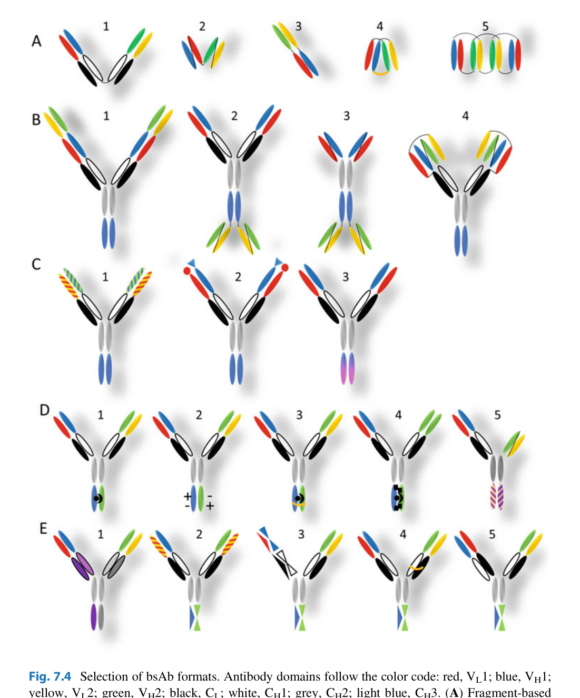
IgG 부류의 천연 2가 항체에서는 두 항원결합 부위가 동일하며, 중쇄와 경쇄 가변 도메인 모두 항원 결합에 기여한다. 화학적 커플링이나 두 서로 다른 중쇄·경쇄의 공발현은 산물의 혼합을 초래하며, 이는 사슬 연합 문제를 야기한다. 즉 원하는 종의 수율을 낮추고, 발현 사슬의 태깅(tagging) 및 추가 정제 단계를 요구하며, 최종 산물에 대한 분석 절차에 추가 요구를 부과한다. 원하는 균질 이중특이성 분자의 수율을 높이기 위해 여러 전략이 개발되었다. 기본 구조 외에도 적용된 공학 방법을 이용하여 다양한 이중특이성 포맷의 다채로운 집합을 분류할 수 있다.
7.4.1 단편 기반 이중특이성 항체
단일 폴리펩타이드 사슬로 구성된 완전 IgG의 항원 특이성을 보존하는 최소 항체 유래 단편으로서, 링커로 결합된 중쇄·경쇄 가변 도메인 구축물인 단일사슬 Fv 단편(scFv)의 도입[19]은 이중특이성 및 다중특이성 분자 생산의 인기 포맷이 되었다(그림 7.4A2). 이 포맷에서는 적절한 링커 길이를 선택함으로써 중쇄와 경쇄의 올바른 공간적 배열을 달성할 수 있으며, Fc 단편의 결여는 원치 않는 동종이량체화를 방지한다(그림 7.4A). 후자의 특성은 원핵 미생물이나 하등 진핵생물의 페리플라즘(periplasm)에서의 발현을 가능하게 하여 저렴하고 단순한 생산을 보장한다. 그 모듈식 특성으로 인해 특정 결합 특이성에 대한 원자가를 임의로 선택할 수 있다[80]. 현재 각 특이성에 대해 1개 혹은 2개의 결합 부위를 갖는 포맷이 임상시험에서 평가되고 있다. 동시에 모듈식 특성은 최적 도메인 배열을 선택하고 단편 기반 이중특이성 항체의 용해도·안정성 측면의 잠재적 문제를 완화할 가능성을 제공한다.
디아바디(diabody)는 비교를 위해 각기 하나의 VH와 VL 도메인을 포함하는 두 사슬로 구성되며 통상 5개 잔기의 짧은 링커로 연결된다81. 링커 길이가 scFv에서와 같은 항원결합 부위의 조립을 허용하기에 요구되는 것보다 훨씬 짧기 때문에, 두 사슬은 반대 방향으로 이량체화하여 동일 세포에서 발현 시 이중특이성 이종이량체 분자를 형성한다. 추가 공학을 통해 두 결합 부위의 위치 변화가 시약의 효능에 영향을 미칠 수 있음이 나타났다. 그러한 예 중 하나가 DART(dual affinity retargeting) 단편(그림 7.4A4)인데, 이는 추가 시스테인 결합으로 표적과 이펙터 세포에 대한 결합 부위를 대안적 링커 기반 설계에서 예상 가능한 것보다 더 가깝게 구속하여 보다 강력한 표적세포 사멸을 유도할 수 있다[82]. 그럼에도 Fc의 부재는 이러한 분자가 FcRn 구제 경로에 진입하지 못하게 하여 짧은 혈청 반감기를 초래한다. 그러나 그 약동학적 특성은 Fc 단편의 신규 도입이나 융합 구축물 내 HSA-결합 모이어티 포함으로 개선될 수 있다.
7.4.2 대칭형 항체 포맷
사슬 연합을 극복하기 위해 Fc 단편을 생략하는 대안은 변형되지 않은 IgG의 기본 대칭 스캐폴드(scaffold)를 선택하고 여기에 두 번째 특이성을 부여하는 것이다. 따라서 이러한 포맷은 통상 각 항원에 대해 2가이다(그림 7.4B, C). 융합 기반 포맷은 통상 중쇄 C-말단에 부가된 scFv를 포함하며, Fab 단편의 가변·불변 도메인은 한쪽 혹은 양쪽 팔에서 scFv로 대체될 수 있는데, 예컨대 (scFv)2-Ig(그림 7.4B2) 및 또 다른 대칭형 이중특이성 항체 포맷인 (scFv)4-Fc(그림 7.4B3)가 그러하다. 그러나 이중-가변-도메인-Ig(dual-variable domain Ig, DVD-Ig)라는 포맷(그림 7.4B1)에서는 가변 도메인이 또 다른 쌍의 중쇄·경쇄 가변 도메인에 의해 N-말단으로 확장된다[83]. 나아가 최근 기술된 크로스오버 이중-가변 Ig(cross-over dual variable Ig, CODV-Ig)(그림 7.4B4)는 두 가변 도메인의 어레이를 Fab 단편의 각 불변 도메인에 부가하고 중쇄 혹은 경쇄 가변 도메인 사이에 최적화된 긴 링커 서열을 도입하여 그 적절한 위치를 보장함으로써 두 특이성을 포함한다[84].
또 다른 공학 방법군은 공유 연결이 아닌 돌연변이유발과 선별 방법을 이용하여 IgG 분자의 분자 구조와 크기를 그대로 유지하면서 대칭형 이중특이성 항체를 생산하는 것을 목표로 한다(그림 7.4C). 이러한 예로는 가변 도메인의 CDR이 두 서로 다른 항원을 특이적으로 인식하도록 변형된 “Two-in-One 항체”(그림 7.4C1)[85], 중쇄와 경쇄의 CDR이 모두 두 서로 다른 항원을 수용할 수 있는 DutaMab(그림 7.4C2), 그리고 CH3 도메인 말단의 돌연변이 잔기를 통해 항원 결합을 특이적으로 부여할 수 있는 라이브러리 유래 항원결합 Fc를 갖는 mAb2[86, 87]가 있다.
7.4.3 비대칭 이중특이성 항체 포맷
이 부류로 설계된 이중특이성 포맷은 네 폴리펩타이드 사슬의 공발현 시 이종 항체 사슬 간의 우선적 쌍형성을 도입한다는 전제에 기반한다(그림 7.4D, E). 비대칭 항체 포맷의 천연-유사 구조와 크기 외에도, 그 큰 장점은 태그나 링커와 같은 잠재적 면역원성 비-천연 항체 서열의 사용을 최소화한다는 점이다. 이종이량체화를 달성하기 위한 최초 전략은 돌연변이유발 방법으로 달성된 입체 효과(그림 7.4D1)[88] 혹은 정전기 유도(electrostatic steering)(그림 7.4D2)[28]에 기반하였으며, 돌연변이된 Fc 구축물은 이후 분자 안정성을 회복하도록 최적화되었다(그림 7.4D3, 7.4D4)[25]. 효율적 이종이량체화를 겨냥한 최근 접근법은 보다 광범위한 돌연변이유발을 이용하는데, 예컨대 IgG3와 IgA의 단편으로 구성된 Ig 사슬의 우선적 쌍형성을 이용하는 가닥-교환 공학 도메인(strand-exchanged engineered domain, SEED)-바디(그림 7.4D5)[89], 혹은 이종이량체 TCR 사슬의 쌍형성을 매개하는 잔기를 Fc 사슬 계면상에 설계하는 T세포 수용체 기반 항체에 의한 이중특이적 결합(bispecific engagement by antibodies based on the T-cell receptor, BEAT) 바디(그림 7.2E)[29]가 있다. 현재 CH3-도메인 개조 IgG1 포맷에 적용 가능한 최근 대안은 제어된 Fab-팔 교환으로 알려진 두 항체 절반-분자의 발현 후 조립이다[38].
비대칭 구축물에서 경쇄의 올바른 쌍형성은 처음에는 한쪽 항원결합 부위를 scFv 포맷으로 발현하거나(그림 7.4D5) 다종(multi-species) 유래 항체 도메인을 사용함으로써 보장되었다(그림 7.4E1). 이후 이 문제는 양 결합 파트너에 공통 경쇄를 사용함으로써 해결되었으나(그림 7.4E2)[26], 이는 기존 결합 실체의 발현에는 적용될 수 없으므로 적합한 파지 라이브러리[26]와 형질전환 동물[90]에 구현된 상보적 플랫폼으로 양립 가능한 분자의 발견을 지원하였다. 대안적으로 중쇄와 경쇄 사이 계면을 변형하여 특정 Fab 종의 우선적 형성을 유도하였다(그림 7.4E3)[32]. 경쇄의 올바른 쌍형성은 Fab 단편 불변 도메인 간의 천연 이황화 결합을 제거하고 대안적 결합을 도입함으로써도 달성되었는데, 이는 듀엣맙(DuetMab)이라는 포맷을 탄생시켰다(그림 7.4E4)[91]. 크로스맙에서는 비대칭 항체 절반-분자 중 하나의 경쇄와 Fd(VH-CH1) 단편의 위치가 교환된다(그림 7.4E5)[33]. 경쇄에 기반하여 이중특이성을 갖는 이중특이성 항체는 정제-기반 프로토콜로 분리되었다. 즉 “κλ-바디(kappa-lambda body)” 포맷에서는 서로 다른 서브패밀리(카파와 람다)의 두 고유 경쇄가 선별되고, KappaSelect 및 LambdaFabSelect와 같은 매트릭스를 이용한 순차적 친화도-기반 정제 단계의 크로마토그래피를 사용하여 양 경쇄 부류를 모두 포함하는 비대칭 이중특이성 항체를 선택적으로 포획한다[92]. 대안적으로 이중특이성 항체 내 두 서로 다른 Fab 단편에 특이적으로 결합하는 두 항-이디오타입(anti-idiotypic) 리간드가 크로마토그래피 매트릭스에 적용되었다[93].
실제로 특정 비대칭 이중특이성 항체 설계는 하류(downstream) 방법으로 원하는 균질 최종 산물의 최적 수율 달성을 지원하도록 다듬어졌다. 이러한 프로토콜은 표적 분자와 부산물의 미세 분별에 기반하며, 차등 단백질 A 결합, 이온교환 크로마토그래피로의 분리를 허용하는 고유 전하, 혹은 겔 여과 컬럼을 통한 분리를 가능하게 하는 크기 차이와 같은 특성에 기반한다. 이중특이성 항체의 복잡성은 올바르게 쌍형성된 변이체를 모니터링·제어하기 위한 민감한 분석 도구에 대한 상응하는 수요를 야기하였다. 그 분석은 상보적 방법으로 구성되는데, 첫째는 통상 올바른 쌍형성의 신속 분석을 위해 온전한 항체의 질량을 측정하는 액체 크로마토그래피-질량분석(liquid chromatography-mass spectrometry, LC-MS)-기반 절차이며, 둘째는 잠재적 부산물의 고유 소수성 특성에 기반하여 오쌍형성(mispairing)을 검출하는 소수성 상호작용 크로마토그래피(hydrophobic interaction chromatography, HIC)-기반 방법이 포함된다[94].
주목할 점은 대부분의 현대 비대칭 포맷이 각 특이성에 대해 단일 1가 결합 부위를 특징으로 하며, 항원과의 잠재적 다중 균일 접촉점 도입은 미래 단백질 공학자들의 과제로 남아 있다는 것이다. 달성될 결합력 효과는 동족 표면 항원을 제시하는 표적세포와의 상호작용 수 및 강도를 증강하는 데 있어 아직 탐색되지 않은 잠재력을 열어줄 수 있다.
7.5 이중특이성 항체의 전망
몇 가지 귀중한 이중특이성 포맷을 알게 된 후, 우리는 미래 치료를 의도한 대부분의 후보 분자가 Fc 단편을 포함한다는 결론을 내릴 수 있는데, 이는 주로 FcRn 구제 경로에 등록시켜 생체 내 긴 혈청 반감기를 부여하기 위함이다. 또한 단클론항체에 유익함이 입증된 모든 Fc-기반 변형은 이중특이성 항체 유도체에도 적용 가능하다. 즉 적합한 Fc 변이체를 이용하여 반감기 연장을 달성할 수 있고, 점돌연변이나 변경된 글리코실화(glycosylation)를 이용하여 이펙터 기능을 증강하거나, 입체적 이유로 소수 점돌연변이로 제거할 수 있다. 각 적용 분야는 개발가능성(developability), 임상 효능 및 안전성 측면에서 서로 다른 포맷을 요구할 것이며, 분석법 역시 그에 맞추어 조정되어야 한다. 그럼에도 생물학적 상황의 복잡성은 이중특이성 항체 공학의 창의성을 지속적으로 자극할 것이다.
7.6 결론
이중특이성 항체는 단일 분자 내에 두 에피토프 혹은 두 항원에 대한 특이성을 결합한다. 절대적 이중특이성 항체는 두 특이성의 물리적 연결에 의해서만 달성될 수 있는 고유 생물학적 효과를 나타낸다. 최초 이중특이성 항체는 2가 F(ab’)2였으며, 쿼드로마 기술, scFv, 노브-인투-홀, 정전기 유도, CrossMab, 공통 경쇄 및 제어된 Fab-팔 교환 등의 기술 진보를 거쳐 오늘날 T세포 engager(BiTE), 수용체 가교, 이중파라토프 결합, 리간드 중복성 극복, 효소 모방체 및 트로이 목마 전달을 포함한 다양한 작용기전과 100종 이상의 포맷으로 발전하였다.
8장 항체-약물 접합체(ADC)
8.1 항체-약물 접합체 서론
지난 수십 년 동안 많은 진전이 있었음에도 암 치료는 여전히 어려운 과제이다. 특히 종양의 막대한 이질성(heterogeneity)과 건강한 조직은 보존하면서 암세포를 선택적으로 표적하는 약물의 개발은 중대한 도전이다. 전통적 화학요법은 예컨대 대부분의 암세포가 급속히 분열·증식한다는 사실을 이용한다. 세포분열(유사분열)에 간섭하는 세포독성 화학요법제는 따라서 종양 퇴축을 흔히 초래한다. 그러나 골수나 소화관과 같은 여러 정상 세포 유형 역시 급속히 분열하므로 항-유사분열 약물에 민감하며, 이는 결국 화학요법 중 관찰되는 흔한 부작용으로 이어진다. 따라서 새로운 암 치료제 개발의 주요 과제 중 하나는 약물의 치료지수(therapeutic index, TI)를 개선하는 것이다. TI는 유익한 치료 효과를 일으키는 약물 용량 대비 독성을 일으키는 용량의 비율을 반영한다(그림 8.1). 다시 말해 약물의 불충분한 TI란 허용할 수 없는 독성 없이 종양을 근절할 수 없는 화합물의 무능력을 의미한다.
차세대 암 치료제 개발에 초점을 맞추고 TI 개선을 중심으로 하는 학문 분야가 표적 암 치료(targeted cancer therapy) 분야이다. 표적 암 치료는 정밀의료(precision medicine)의 초석이며, 종양 진행에 관여하는 특정 분자 표적과의 간섭을 통해 암의 성장과 전파를 차단하는 것을 목표로 한다. 이 학문에서는 병든 조직을 보다 특이적으로 표적하기 위해 다양한 접근법이 추구된다. 예컨대 부적절한 세포 신호전달에 간섭하는 신호전달 억제제, 단백질 발현 수준 변형을 허용하는 유전자 조절자, 면역요법, 항체-약물 접합체(antibody-drug conjugate, ADC) 등이 포함된다. 본 장에서는 단클론항체의 우수한 선택성과 일부 세포독성제의 높은 효능을 결합한 ADC에 초점을 맞추고자 한다(그림 8.2).
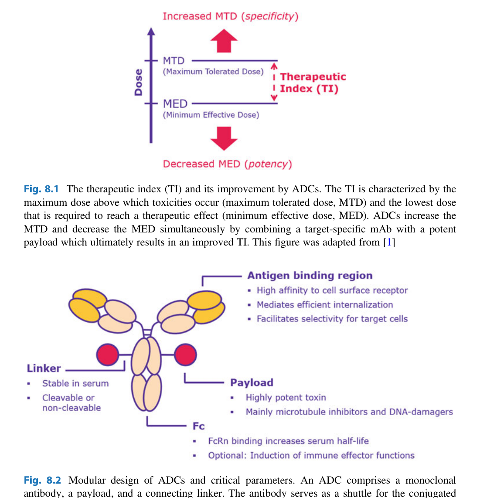
ADC의 기본 개념은 오히려 단순하다(그림 8.3). 전제조건은 분자적 기반에서 암세포와 정상세포를 식별할 수 있게 하는 항원이다. 예컨대 종양세포에서 심하게 상향조절된 특정 세포 표면 수용체일 수 있다. 이러한 항원에 대한 항체는 고효능 세포독성제의 표적화 운반체(targeting vehicle)로 기능할 수 있다. ADC를 형성하기 위해 세포독성제는 순환 중 조기 방출을 피하기 위해 혈액 내에서 안정한 링커를 통해 항체에 공유결합으로 부착되어야 한다.
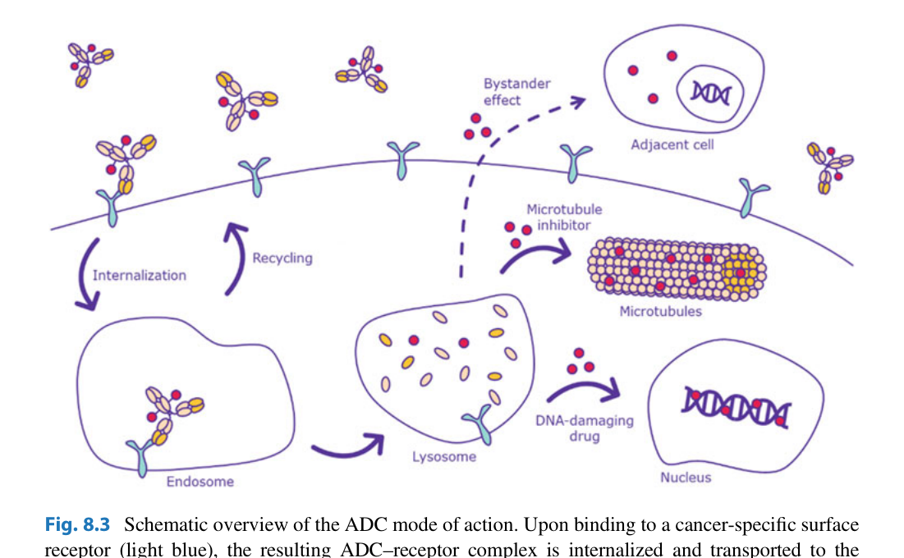
환자에게 ADC를 투여한 후 전신에 분포하여 종양 근방에 도달하면 세포 표면의 항원에 결합한다. 이어 항체-항원 복합체는 세포에 의해 내재화되어 내인성 세포내 수송 경로를 통해 리소솜(lysosome)으로 이동한다. 리소솜에 도달한 후 ADC는 분해되어 독성 화물을 방출한다. 유리 독소는 이어 세포내 표적에 결합하여 세포사멸을 유도하고 암세포를 사멸시킨다. 경우에 따라 독소는 암세포를 떠나 인접한, 이상적으로는 암성인 세포에도 작용할 수 있다. 이 과정은 방관자 효과(bystander effect)라 불리며 그 정도는 적용된 링커와 약물에 의존한다. 반면 정상세포는 항체가 항원을 발현하는 암세포에만 결합하여 독소를 전달해야 하므로 주로 보존된다.
8.2 항체-약물 접합체 개발의 마일스톤
역사적으로 ADC 개념은 1900년경 수행된 파울 에를리히(Paul Ehrlich)의 연구에서 기원한다. 그는 건강한 세포는 보존하면서 병든 조직만을 해치는 “마법의 탄환(magic bullet)”처럼 행동하는 약물을 구상하였다[2]. 에를리히는 수면병을 일으키는 기생충인 트리파노소마를 선택적으로 사멸시키는 염료를 개발함으로써 이 개념을 입증할 수 있었다[3]. 게다가 에를리히는 항체 발견의 선구자 중 한 명이기도 하여 ADC 개발의 초석을 놓았다. 그러나 1900년대 초 마법의 탄환 개념이 도입된 후, 1980년대까지 ADC 개발은 더디게만 진전되었다. 이는 주로 선택적 항체의 생산이 어려워 ADC의 기반이 될 수 있는 특이적 항체를 대량으로 얻는 것이 거의 불가능했기 때문이다. 이는 1975년 조르주 쾰러와 세자르 밀스타인이 하이브리도마 기술을 보고한 후 바뀌었다[4]. 이 시점부터 단클론항체의 확보는 더 이상 문제가 아니었으며, 치료 항체뿐만 아니라 ADC를 위한 길도 닦였다.
무로모납-CD3(Muromonab-CD3, OKT3®)로서 최초 치료용 단클론항체는 1986년 면역억제제로서 미국 식품의약국(Food and Drug Administration, FDA)의 승인을 받았다. 그러나 무로모납-CD3는 마우스 항체이므로 치료 적용 시 면역원성(immunogenicity) 위험이 상당히 높다. 따라서 환자는 일정 기간 치료 후 항-약물 항체(anti-drug antibody, ADA)를 흔히 발생시켜 이 약물에 저항성을 갖게 된다. 그러나 재조합 DNA 기술은 키메라(chimeric) 항체, 이후 인간화(humanized) 항체의 생산을 허용하여 면역원성 문제를 극적으로 감소시킬 수 있었다[5, 6]. 이러한 기술 진보는 마침내 1997년 암 치료용 최초 단클론항체(리툭시맙(rituximab))의 승인으로 이어졌다. 리툭시맙은 B세포 림프종의 대다수 표면에 발현되는 CD20에 결합하는 키메라 항체이다. 항체는 ADC의 필수 구성요소이므로 항체 분야의 기술 진보는 곧 ADC 분야의 진보를 의미하며, 상기 마일스톤은 ADC 개발에 크게 기여하였다.
항체 외에도 ADC의 또 다른 중요한 구성요소는 명백히 부착된 세포독성 페이로드(cytotoxic payload)이다. 초기에 연구된 일부 ADC는 메토트렉세이트(methotrexate), 독소루비신(doxorubicin), 빈블라스틴(vinblastine)과 같이 exceedingly 높은 효능을 갖는 잘 알려진 화학요법제를 포함하였다. 이들은 본 장 후반에 자세히 살펴볼 서로 다른 링커 유형과 접합 기술을 통해 항체에 커플링되었다. 그러나 마우스 내 인간 종양 이종이식 연구에서 이러한 1세대 접합체의 생체 내 평가는 상응하는 비접합 약물에 비해 우수한 항종양 활성을 보였다[7, 8]. 이러한 데이터에 고무되어 마우스 KS1/4 항체에 메토트렉세이트를 연결한 ADC를 이용한 두 임상 제1상 시험이 개시되었다[9]. 불행히도 이들 연구 중 설득력 있는 치료 효과는 관찰되지 않아 결국 중단되었다. 실패 원인 중 하나는 마우스 단클론항체에 대한 ADA 발생과 그에 따른 ADC의 빠른 청소(clearance)에 기인하였다. 보다 성공적이었던 것은 항체-독소루비신 접합체 BR-96-Dox로서, 전이성 유방암 치료를 위한 제2상 임상시험까지 진전하였다[10]. 그러나 이 접합체도 유의한 치료 활성을 보이지 않아 추가 개발이 중단되었다. 이러한 1세대 접합체의 성공 부족은 ADC에 대한 초기의 흥분을 식혔으며, 1990년대에 7개 단클론항체가 FDA 승인을 받는 동안 최초 ADC 승인은 오랜 시간이 걸렸다.
마침내 겜투주맙 오조가마이신(gemtuzumab ozogamicin, Mylotarg®)으로서 최초 ADC가 2000년 급성 골수성 백혈병(acute myeloid leukemia, AML) 치료용으로 FDA 승인을 받았다[11]. 겜투주맙 오조가마이신의 기반은 골수 계열 세포에 발현되는 막관통 수용체인 CD33에 지시된 인간화 IgG4 유형 항체인 겜투주맙이다[12]. 세포독성 페이로드로는 고효능 DNA 손상제인 칼리케아마이신(calicheamicin)이 사용되었다. 불행히도 환자 편익 부족으로 인해 겜투주맙 오조가마이신은 2010년 시장에서 철수되었다. 그럼에도 이는 ADC 개발 역사에서 이정표였으며, 결국 더 낮은 권장 용량과 다른 투여 스케줄이 개선된 위험-편익 비율로 이어져 2017년 재승인되었다.
치료제로서 ADC 적용의 진정한 돌파구는 2011년 브렌툭시맙 베도틴(brentuximab vedotin, Adcetris®)과 2013년 트라스투주맙 엠탄신(trastuzumab emtansine, Kadcyla®)의 승인으로 도래하였다. 이들 두 ADC는 전 분야에 완전히 새로운 동력을 부여하여 여러 회사의 개발 활동, 신기술의 부상 및 여러 인간 임상시험을 초래하였다. 본 장 과정에서 이러한 차세대 기술과 개발 중 일부를 검토할 것이다. ADC에게 특히 흥미로운 해는 2019년이었는데, 브렌툭시맙 베도틴과 트라스투주맙 엠탄신의 승인으로 얻은 동력이 마침내 세 후기 임상시험의 성공적 종료와 세 ADC 승인으로 이어졌다. 오늘날 시장에 총 7개 ADC가 있으며(국제일반명(INN), 상품명, 승인 연도 및 회사 순으로 열거): 겜투주맙 오조가마이신(Mylotarg®, 2001/2017, Pfizer/Wyeth), 브렌툭시맙 베도틴(Adcetris®, 2011, Seattle Genetics/Millennium), 트라스투주맙 엠탄신(Kadcyla®, 2013, Genentech/Roche), 이노투주맙 오조가마이신(inotuzumab ozogamicin, Besponsa®, 2017, Pfizer/Wyeth), 폴라투주맙 베도틴-피크(polatuzumab vedotin-piiq, Polivy®, 2019, Genentech/Roche), 엔포르투맙 베도틴-에지프브(enfortumab vedotin-ejfv, Padcev®, 2019, Astellas/Seattle Genetics) 및 트라스투주맙 데룩스테칸(trastuzumab deruxtecan, Enhertu®, 2019, Daiichi Sankyo/AstraZeneca)이다. 이들 ADC의 핵심 변수는 표 8.1에 묘사되어 있으며, 여러 제품이 이하 절에서 언급될 것이다.
8.3 항체-약물 접합체에 활용되는 표적과 항체
ADC 설계는 다학제적 노력인데, 이는 생물공학적으로 생산된 대형 생체분자와 화학 합성된 고효능 소분자 약물로 구성되기 때문이다. 두 실체는 별도로 생산된 후 고도로 복잡한 하이브리드 분자로 결합된다. 따라서 개별 구성요소의 설계부터 접합체의 최종 생산까지 ADC 개발 전 과정은 막대한 기술적 도전을 수반한다.
첫 번째 장애물은 ADC 접근에 적합한 표적(target)의 동정이다. 이 표적은 종양-특이적 표적 과발현 혹은 종양세포에만 돌연변이 단백질 변이체가 배타적으로 제시되는 것과 같은 대안 기전을 통해 암세포와 정상 조직을 식별할 수 있게 해야 한다. 또한 항체가 접근 가능해야 하며, 이는 본질적으로 세포외 표적으로 공간을 제한한다. 게다가 ADC 결합 시 표적의 빠른 내재화가 세포내 세포독성제의 임계 농도에 도달하는 데 중요하다. 이러한 기준을 충족하는 표적의 예는 CD30이다. CD30은 활성화 T·B세포에 의해 제시되는 수용체로서 암세포에 높고 균일한 발현을 보이고, 정상 조직에서는 낮은 발현을 보이며, 항체 결합 시 빠른 내재화를 나타낸다[16]. 항-CD30 단클론항체는 재발·불응성 호지킨 림프종(Hodgkin lymphoma, HL) 및 전신 역형성 대세포 림프종(systemic anaplastic large cell lymphoma, ALCL) 치료에 사용되는 ADC인 브렌툭시맙 베도틴(Adcetris®)의 기반이다. 반면 모든 ADC 표적이 반드시 이러한 기준을 모두 충족해야 하는 것은 아니다. 트라스투주맙 엠탄신(Kadcyla®)의 표적인 HER2는 유방암 조직에서 높은 발현 수준을 보이고 항체 결합 시 빠르게 내재화한다. 그러나 피부, 심장, 위장관, 호흡기, 생식기 및 요로 등 다른 조직에서도 발현된다[17]. 그럼에도 이 ADC는 암세포에 비해 정상세포의 HER2 발현이 훨씬 낮기 때문에 여전히 잘 내약된다.
항체는 ADC의 두 번째 핵심 구성요소인데, 이는 전체 분자의 표적화와 약동학(pharmacokinetics, PK)의 주요 결정인자이기 때문이다. 따라서 단클론항체(monoclonal antibody, mAb)는 세포독성 탄두(warhead)가 올바른 세포에 전달되도록 표적에 고친화도·고선택성으로 결합해야 한다. 그러나 항체는 항원에 결합할 뿐만 아니라 다양한 Fc 수용체(Fc receptor) 집합과 여러 추가 상호작용을 겪는다. 특히 중요한 것은 항체를 FcRn 재활용(recycling)으로 알려진 기전에 종속시키는 신생아 Fc 수용체(FcRn)에 대한 결합이다. 이 과정은 항체의 반감기를 극적으로 개선하며, 높은 분자 크기와 함께 항체의 유난히 긴 혈청 반감기의 주요 이유 중 하나이다. 소분자 세포독성제가 통상 수 시간의 반감기만을 나타냄을 고려하면, 항체에 부착하여 독소의 반감기를 수일 혹은 수주까지 연장할 수 있으므로 ADC에게 FcRn 결합 보존은 매우 바람직하다. 따라서 예컨대 세포독성제의 접합으로 단클론항체-FcRn 상호작용을 손상시키지 않도록 특별한 주의가 필요하다. 일부 공학 접근법은 항체의 PK 특성을 더욱 개선하기 위해 FcRn 상호작용을 증강하는 것을 목표로 한다[18-20]. FcRn 수용체 외에도 항체-의존 세포-매개 세포독성(antibody-dependent cell-mediated cytotoxicity, ADCC) 및 보체-의존 세포독성(complement-dependent cytotoxicity, CDC)과 같은 Fc 이펙터 기능(Fc effector function)을 담당하는 많은 다른 Fc 수용체 부류가 존재한다. 이러한 기전이 단클론항체의 치료 효과에 흔히 기여하지만, 이들 수용체와의 상호작용은 ADC 접근법에는 불리할 수 있다. 이러한 2차 면역 기능의 결합은 종양으로의 접합체 국소화 감소 혹은 Fc 수용체를 발현하는 정상세포에 의한 ADC 흡수 증가라는 의도치 않은 효과를 가질 수 있다. 이러한 이유로 겜투주맙 오조가마이신(Mylotarg®)에 활용된 단클론항체는 ADCC나 CDC 활성이 없는 IgG4 아부류(subclass)에 속하는 반면, 면역-활성 IgG1 아부류는 통상 치료 항체에 사용된다. 따라서 ADC를 위해 이펙터-침묵(effector-silent) 항체 아부류를 사용하거나 상기 문제를 회피하기 위한 항체 공학을 수행하는 것은 타당한 전략일 수 있다[21].
8.4 세포독성 항체-약물 접합체 페이로드
궁극적으로 치료 효과를 일으키는 ADC 요소는 접합된 세포독성제이며, 흔히 “페이로드(payload)” 혹은 “탄두(warhead)”라 불린다. 여러 분자 부류가 지금까지 ADC 맥락에서 성공적임이 입증되었고, 큰 잠재력을 지닌 আরও 많은 후보가 현재 연구 중이다. 오늘날 ADC 페이로드로 사용되는 독소 중 여러 가지, 즉 메이탄시노이드(maytansinoid), 아우리스타틴(auristatin) 및 칼리케아마이신은 exceedingly 높은 효능 때문에 발견되어 가능한 새로운 항암제로서 매우 매력적이었다. 그러나 이들 독소는 불리한 TI를 지녔으며, 항암 효과를 달성하는 데 요구되는 용량은 심각한 독성을 수반하여 독립 항암제로서의 추가 개발을 배제하였다. 그러나 ADC의 출현으로 이들 독소의 치료 적용은 르네상스를 맞았다. 오늘날 개발 중인 ADC의 대다수는 세포독성 페이로드를 운반하지만, 면역-자극 페이로드나 항생제와 같은 대안 약물을 활용하는 최근 접근법도 언급할 가치가 있다[22, 23]. 이하 절에서는 서로 다른 부류의 세포독성 ADC 페이로드에 초점을 맞추고 현재 승인된 ADC의 구성요소로서 최종 성공에 도달한 페이로드를 자세히 살펴볼 것이다.
메이탄신(maytansine)은 아프리카 관목 메이테누스(Maytenus)의 수피에서 최초로 분리된 안사마이신(ansamycin) 유형의 마크로라이드(macrolide)이다[24, 25]. 이는 튜불린(tubulin) 중합을 억제하고 세포주기를 G2/M기에 정지시켜 결국 세포사멸에 의한 세포사멸을 초래하는 매우 강력한 항-유사분열 약물이다[26, 27]. 메이탄신과 그 유도체인 메이탄시노이드는 서로 다른 암세포주에 대해 낮은 피코몰 범위의 농도에서 강한 시험관 내 활성을 보였다[27, 28]. 이들 화합물의 가장 흔한 용량-제한 독성은 신경독성, 구토 및 오심이다. 원래 분리된 메이탄신 구조는 항체에 대한 공유결합 부착에 그다지 적합하지 않았다. 따라서 단클론항체에 접합할 수 있는 변형을 갖는 유도체가 개발되어야 했다[29]. 이러한 활동의 결과 화합물 중 하나가 DM1이며, 트라스투주맙 엠탄신(Kadcyla®)에 최종 사용된 페이로드이다. 흥미롭게도 ADC 구성요소로서 DM1을 사용하자 그 최대내약용량(maximum tolerated dose, MTD)이 최소 2배 증가하였으며, 이는 세포독성제를 ADC에 포함시키는 것이 TI를 개선한다는 개념을 확증한다.
아우리스타틴은 펩타이드-기반 분자이며, 이 부류 최초 기술 제제인 돌라스타틴 10(dolastatin 10)은 바다 민달팽이 돌라벨라 아우리쿨라리아(Dolabella auricularia)에서 분리되었다. 아우리스타틴은 미세소관(microtubule)의 중합을 억제하고 튜불린-의존 구아노신-5’-삼인산(guanosine-5’-triphosphate, GTP) 가수분해를 억제한다. 이는 유사분열과의 간섭으로 이어져 G2/M기 세포주기 정지를 초래하고 마침내 세포사멸을 일으킨다. 아우리스타틴의 가장 흔한 용량-제한 독성은 말초신경병증(peripheral neuropathy, PN), 피로, 오심 및 설사이다.
오늘날 주로 두 돌라스타틴 10 유사체, 즉 모노메틸 아우리스타틴 E(monomethyl auristatin E, MMAE)와 모노메틸 아우리스타틴 F(monomethyl auristatin F, MMAF)가 ADC 페이로드로 활용된다. 그러나 지금까지 활성 약물로서 MMAE를 함유하는 ADC만이 치료용으로 승인되었는데, 즉 브렌툭시맙 베도틴(Adcetris®), 폴라투주맙 베도틴-피크(Polivy®) 및 엔포르투맙 베도틴-에지프브(Padcev®)이다.
칼리케아마이신은 메틸 삼황화물(methyl trisulfide)기와 글리코실화된 하이드록시-아미노 당과 같은 특수 구조 요소를 갖는 엔디인(enediyne)-함유 항암 항생제이다. 이들은 최초로 미크로모노스포라 에키노스포라 칼리첸시스(Micromonospora echinospora calichensis)에서 분리되었으며 비범하게 높은 항종양 활성을 보인다. 예컨대 칼리케아마이신 γ1I는 0.5-1.5 μg/kg만큼 낮은 용량에서 마우스 종양에 항종양 활성을 보였다[30, 31]. 칼리케아마이신은 산-불안정(acid-labile) 링커를 통해 단클론항체에 공유결합된 겜투주맙 오조가마이신(Mylotarg®)과 이노투주맙 오조가마이신(Besponsa®)의 페이로드를 이룬다. 이는 매우 강력한 DNA 손상제로 DNA 소구(minor groove)의 특정 영역에 결합하여 이중가닥 절단을 유도하고 마침내 세포사멸과 세포사멸을 초래한다. 칼리케아마이신의 가장 흔한 용량-제한 독성은 혈소판감소증과 호중구감소증이다.
캠프토테신(camptothecin)은 원래 아시아 나무 캠프토테카 아쿠미나타(Camptotheca acuminata)에서 분리된 5환 퀴놀론-기반 알칼로이드이다. 이는 DNA 토포이소머라제 I(DNA topoisomerase I)를 억제하여 S기에서 DNA 복제를 효과적으로 정지시키고 궁극적으로 종양세포의 세포사멸적 세포사멸을 초래한다[32]. 그러나 초기 화합물은 낮은 수용해도와 생리적 조건 하 락톤(lactone)의 비활성 카복실레이트 형태로의 전환 문제를 겪었다. 따라서 캠프토테신의 특성을 개선하기 위한 여러 활동이 수행되었다. 이러한 노력은 항암제로 FDA 승인된 토포테칸(topotecan)과 이리노테칸(irinotecan)의 개발로 이어졌다. 캠프토테신의 또 다른 중요한 유도체는 치환된 엑사테칸(exatecan) Dxd이며, 이는 승인된 ADC 트라스투주맙 데룩스테칸(Enhertu®)에 사용된 페이로드이다. 캠프토테신 치료 중 관찰된 가장 중증 부작용은 호중구감소증과 백혈구감소증이다.
8.5 항체-약물 접합체 링커
“항체-약물 접합체”라는 용어에 따라 ADC의 주요 구성요소는 약물과 항체이다. 그러나 이러한 실체를 커플링하기 위해서는 단클론항체와 약물을 연결하는 링커가 필요하다. 단클론항체와 페이로드를 모두 고려한 이 링커의 신중한 선택은 최종 ADC의 효능과 안전성에 결정적이다. 혈류 중에서 링커는 전신 표적-외 독성을 일으킬 수 있는 조기 페이로드 방출을 방지하기 위해 가능한 한 안정해야 한다. 그러나 ADC가 표적세포에 도달한 후에는 부착된 링커에 방해받지 않고 페이로드가 활성 상태여야 한다. 또한 링커의 길이와 화학적 성질은 ADC의 약동학과 약력학에 강한 영향을 미칠 수 있다.
ADC에 활용되는 링커는 주로 비절단성(non-cleavable) 및 절단성(cleavable) 링커로 분류된다. 비절단성 링커는 순환계와 세포 모두에서 안정한 반면, 절단성 링커는 표적세포 내 특정 세포내 기전에 의해 분해되도록 설계된다.
비절단성 링커를 갖는 ADC로부터의 방출은 항체의 구성 아미노산으로의 완전한 단백분해 분해에 의존한다. 결과적으로 최종 방출 약물 대사체는 초기에 접합된 링커와 아미노산(예컨대 리신(lysine) 혹은 시스테인(cysteine))에 연결된 채 남아 있다. 이러한 변형은 세포독성 약물의 활성과 간섭할 수 있으므로, 비절단성 링커는 아미노산 부가체로서 여전히 활성인 약물과만 조합된다[33]. 더욱이 이들 부가체는 아미노산의 전하로 인해 상당히 친수성이어서 막 투과성이 감소하고, 이에 따라 낮은 방관자 활성을 보인다[1]. 반면 비절단성 링커는 순환계에서 매우 안정하여 의도치 않은 약물 방출 위험을 감소시킨다. 비절단성 링커를 갖는 ADC의 대표적 예는 트라스투주맙 엠탄신(Kadcyla®)이다. 여기서는 탄두가 비절단성 티오에테르(thioether) 연결로 단클론항체에 연결되어 최종 방출 활성 약물로서 DM1-리신 부가체를 생성한다[1, 34].
절단성 링커는 종양 부위에서, 우선적으로는 암세포 내부에서만 약물을 특이적으로 방출하도록 설계된다. 이상적으로 이 방출은 무흔적(traceless)이며 링커 일부나 아미노산과 같은 잔류 치환기 없이 약물을 남기는데, 이는 많은 경우 방관자 효과 개선에도 도움이 된다. 기저 절단 기전은 통상 순환계와 세포내 구획 간에 다른 인자, 주로 화학 환경이나 특정 세포내 효소를 이용한다[1].
화학적 환경 변화에 의해 촉발되는 절단에 의존하는 링커 부류는 히드라존(hydrazone)-함유 링커 시스템이다. 이들 링커는 혈액의 중성 pH에서는 안정하지만 산성 환경에서는 가수분해되도록 설계된다. 앞서 기술한 바와 같이 ADC의 내재화는 통상 엔도솜 및 리소솜 구획으로의 수송으로 이어진다. 이들 구획은 점증하는 산성 환경(pH ~5)을 나타내며, 이는 마침내 약물 방출을 촉발한다. 이러한 유형의 링커는 비특이적 약물 방출과 연관되어 왔으나, 성공적 적용이 그 기능성을 입증한다[35]. 실제로 겜투주맙 오조가마이신(Mylotarg®)과 이노투주맙 오조가마이신(Besponsa®)은 모두 pH-민감성 히드라존 링커에 의존한다[36, 37].
디설파이드(disulfide)-함유 링커는 또 다른 화학적 절단성 링커 유형이다. 이들 링커는 세포내 구획이 통상 혈류보다 훨씬 더 환원적이라는 사실을 이용한다. 환원적 세포내 환경은 순환계(~5 μM)에 비해 상승된 환원 글루타치온(1-10 mM) 농도와 환원 효소에 의해 생성된다[1]. 주목할 점은 고형암에서 발견되는 감소된 산소 수준에 대한 반응으로 이러한 효과가 암세포에서 더욱 두드러질 수 있다는 것이다[38]. 결과적으로 디설파이드-함유 링커는 주로 종양세포의 세포내 공간에서 약물을 방출한다. 디설파이드 옆에 입체장애 치환기를 도입함으로써 이들 링커의 안정성을 미세 조정하여 조기 약물 방출을 더욱 방지할 수 있다[39].
펩타이드(peptide) 링커는 선택적 효소 절단 시 약물을 방출하도록 설계된다. 혈액 내 낮은 단백분해 활성으로 인해 이들 링커는 순환계에서 매우 안정할 수 있으며, 내재화 후 카텝신(cathepsin)과 같은 리소솜 프로테아제에 의해 절단되도록 의도된다[40]. 빈번히 적용되는 펩타이드 링커는 리소솜에서 신속히 가수분해되는 디펩타이드 모티프 발린-시트룰린(valine-citrulline, Val-Cit)을 포함한다. 이는 초기에 시스테인 프로테아제 카텝신 B에 의한 선택적 절단을 위해 설계되었으나, 다른 프로테아제에 의해서도 약물 방출이 촉발될 수 있음이 나타났다[41, 42]. 성공적으로 적용된 추가 펩타이드 모티프는 Val-Ala 혹은 Gly-Gly-Phe-Gly이며, 후자는 트라스투주맙 데룩스테칸(Enhertu®)에 사용된다[43, 44]. 이 부류의 빈번히 적용되는 링커-약물은 자가희생(self-immolative) 파라-아미노벤질카바메이트(para-aminobenzylcarbamate, PABC) 스페이서를 통해 약물 MMAE에 연결된 Val-Cit 펩타이드로 구성된다. 치환기가 MMAE의 효능을 극적으로 감소시킬 수 있음이 밝혀졌으므로, MMAE의 무흔적 방출을 허용하는 이 링커 시스템 개발에 많은 노력이 기울여졌다. 즉 Val-Cit의 단백분해 절단은 PABC-MMAE 중간체를 생성하고, 이어 PABC 모이어티의 자가희생을 거쳐 변형되지 않은 약물을 방출한다. MMAE는 이어 동일 세포 내에서 활성 상태이거나 이웃 세포로 확산하여 방관자 효과를 elicite할 수 있다[45]. 이 링커-약물은 브렌툭시맙 베도틴(Adcetris®), 폴라투주맙 베도틴-피크(Polivy®) 및 엔포르투맙 베도틴-에지프브(Padcev®)의 일부이다[46, 47].
β-글루쿠로니다제(β-glucuronidase) 절단성 링커는 효소 절단성 링커의 추가 부류를 대표한다. β-글루쿠로니다제는 리소솜에 풍부히 존재하지만 일부 종양에서도 과발현된다. 이는 β-글루쿠론산(β-glucuronic acid)을 핵심 단위로 갖춘 링커의 글리코시드 결합을 선택적으로 가수분해하여 변형되지 않은 페이로드의 방출을 보장하는 자가희생 기전을 촉발한다. 흥미롭게도 integral 일부로서의 β-글루쿠로니드산으로 인해 이들 링커는 더 친수성이며, 그렇지 않으면 ADC의 생물리학적 특성에 부정 영향을 미칠 비정상적으로 소수성인 약물을 배치할 수 있게 한다[48].
절단을 보장하는 절단 부위 외에도, 개선된 특성을 갖는 ADC를 산출하기 위해 추가 링커 구성요소가 개발되었다. 특히 β-글루쿠로니드 링커와 유사하게 페이로드의 소수성을 차폐하는 용해도 증강제로 기능하는 친수성 링커 개념이 추구되었다. 이를 위해 비전하 중합체(예컨대 폴리아세탈 혹은 폴리에틸렌 글리콜 기반)나 음전하 기(예컨대 설포네이트)가 링커 구조에 통합되었다[49-51]. 흥미롭게도 이들 변형은 ADC 안정성에 긍정 영향을 미치고, 더 높은 세포독소 로딩을 허용하며, 개선된 약동학과 개선된 치료지수를 갖는 ADC를 초래하였다[49-51].
8.6 항체-약물 접합체 생성을 위한 접합 기술
ADC의 세 부분―항체, 링커 및 세포독성 페이로드―모두가 최종 접합체의 핵심 특성을 결정하지만, 마찬가지로 중요한 변수는 이들 구성요소가 조립되는 방식이다. 링커와 페이로드는 단클론항체에 직접 접합되는 결합 링커-페이로드 구조로서 화학 합성으로 생산되거나, ADC 생성 중 순차적으로 조립되는 개별 구성요소로서 생산된다. 두 경우 모두 소분자를 그 유리한 특성을 손상시키지 않고 단클론항체에 접합해야 하며, 이는 중대한 기술적 도전이다. ADC 생성 중 제어되어야 하는 주요 변수는 각 항체에 접합된 링커-약물 수, 즉 약물-대-항체 비(drug-to-antibody ratio, DAR)와, 구조가 부착되는 항체 표면상의 위치(접합 부위(conjugation site))이다. 두 변수 모두 안정성과 약동학적 거동을 포함한 ADC의 여러 특성에 결정적으로 영향을 미칠 수 있으며, 궁극적으로 독성과 효능 프로파일에도 영향을 미친다[52-55]. 한편 ADC에 사용되는 탄두는 대부분 소수성이며, 증가하는 DAR은 전체 소수성을 유의하게 변화시켜 최종 접합체의 단백질 안정성을 심하게 교란할 수 있다. 반면 효능에 따라 일정량의 약물이 충분히 활성인 ADC에 도달하는 데 요구된다. 그러나 DAR뿐만 아니라 접합 부위와 화학도 이들 변수에 크게 영향을 미친다. 예컨대 여러 연구는 특정 부위가 항체 표면상의 유리한 미세환경과 입체 차폐를 제공함으로써 도전적인 페이로드에 우수한 내약성을 보이고 다른 부위보다 안정한 접합체를 생성함을 보였다[52-55]. 따라서 개별 구성요소인 링커·약물·단클론항체의 유리한 조합과 적합한 DAR, 접합 전략 및 접합 부위를 찾는 것이 효율적이고 안전한 치료제 개발의 핵심이다. 이하에서는 ADC 생성을 위한 가장 확립된 접합 전략을 검토하고 현재 개발 중인 일부 기술을 기술할 것이다.
항체는 표면에 방대한 수의 화학기를 운반하는 대형 고분자로서 표적 방식으로 링커-약물을 접합하기 어렵게 한다. 예상 접합 화학에 따라 링커-약물은 화학 합성 중에 이미 요구되는 화학기와 구조를 갖추어야 한다. 전통적으로 접합은 리신이나 시스테인 잔기의 측쇄를 표적하는 고전 단백질 화학의 확립된 방법을 이용하여 수행되며, 이들은 모든 단클론항체에 천연 존재하는 아미노산이다.
리신 잔기는 단클론항체 표면에 풍부히 존재하며 최소 40개가 접합에 접근 가능하다[56]. 리신 접합을 위해 링커는 통상 리신의 ε-아미노기와 반응하여 안정 아미드 결합을 형성하는 N-하이드록시숙신이미드 에스테르(N-hydroxysuccinimide ester)를 갖춘다. 시장에 도달한 여러 ADC(예컨대 겜투주맙 오조가마이신(Mylotarg®))가 이 접근법을 따라 생산되며, 이는 효과적 분자를 산출하는 실행 가능한 전략임을 입증한다[36]. 그러나 단클론항체 표면 전체에 분포하는 접근 가능한 리신 잔기의 높은 수로 인해 이 방법은 서로 다른 DAR과 부착 부위를 갖는 방대한 수의 ADC 종을 함유하는 이종 혼합물을 생성한다[56]. 이들 종 각각은 효능, 독성, 응집 및 안정성 등 여러 측면에서 서로 다른 특성을 갖는다. 또한 접근 가능한 리신은 이론적으로 단클론항체의 기능 영역에 존재할 수 있으며, 여기 접합은 표적 혹은 단클론항체 특이적 수용체에 대한 친화도와 같은 핵심 특성에 영향을 미칠 수 있다[57].
리신 잔기 표적 대신 링커-페이로드는 흔히 단클론항체 시스테인 잔기에 접합된다. 시스테인은 리신보다 훨씬 적고 접합에 민감하지 않은 경우가 많아 이론적 접합 부위 수를 크게 줄인다. 실제로 IgG 이소타입(isotype)의 단클론항체는 12개 도메인 내 각각의 특징적 이황화 결합과 힌지 영역에서 단클론항체 사슬을 연결하는 4개 결합을 형성하는 32개 보존 시스테인을 포함한다. 말레이미드-기반 마이클 부가(Michael addition)와 같은 고전 시스테인 접합은 그러나 티올이 이황화 결합에 포획될 때는 반응하지 않는 시스테인 측쇄 티올을 표적한다. 따라서 단클론항체 시스테인에 대한 접합은 말레이미드-기능화 링커와의 접합을 위한 반응성 티올 생성을 위해 이황화 환원을 필요로 한다. 흥미롭게도 온화한 환원 조건은 IgG의 힌지 사슬 간 이황화물만을 배타적으로 환원시켜 접합 부위 수를 8개로 제한할 수 있다. 이 절차가 공유 사슬 간 연결을 부분 제거하지만, 최종 ADC는 비공유 상호작용에 의해 충분히 안정화된다[49]. 브렌툭시맙 베도틴(Adcetris®)과 같은 여러 시스테인 접합 ADC의 승인과 여러 진행 중인 임상 연구는 이 과정 유래 ADC의 완전성과 효능을 확증한다[58].
시스테인-표적 접합의 감소된 접합 부위 수는 리신 접합보다 덜 이종적인 ADC를 생성하지만, 열망되는 DAR이 대다수 경우 8 미만이어서 산물은 통상 여전히 확률적 종 혼합물이다. 모든 사슬 간 시스테인의 완전 로딩으로 DAR 8에 가까운 균질 접합체를 산출하는 트라스투주맙 데룩스테칸(Enhertu®)은 지금까지 예외이다[59]. 또한 천연 시스테인이 단클론항체 내 고정 위치에 있음은 명백하므로 접합 부위의 선택 여지가 없다. 그러나 여러 문헌은 접합 부위가 ADC 안정성과 생체 내 특성에 막대한 영향을 미칠 수 있으며 사슬 간 시스테인이 반드시 최적 선택은 아님을 보였다[54, 60]. 이러한 이유로 선별된 위치에 정확히 링커-약물 부착을 허용하여 맞춤형 균질 ADC를 생성하는 여러 차세대 접합 기술이 개발되었다[57, 62]. 빈번히 적용되는 위치특이적(site-specific) 기술 중 하나 역시 시스테인에 기반하지만, 이 경우 시스테인은 재조합 공학(recombinant engineering)으로 단클론항체 1차 구조에 배치된다.
발현 후 이러한 단클론항체(흔히 “티오맙(thiomab)”이라 칭함)는 예상 위치에 단클론항체 서열의 일부로서 공학된 시스테인을 운반한다. 불행히도 발현 배지 유래 티올-보유 화합물은 이들 공학 시스테인과 이황화물을 형성하여 직접 접합을 방지한다[63]. 이러한 티오-캡을 제거하고 접합을 가능하게 하기 위해 단클론항체는 환원되어야 하며, 이는 캡을 제거할 뿐만 아니라 사슬 간 이황화 결합도 개방한다. 따라서 후속 단계에서 사슬 간 이황화물은 재산화되어 공학 시스테인을 유일 유리 티올로 남긴다. 이렇게 전처리된 단클론항체는 이어 예컨대 공학 시스테인 잔기와만 반응하는 말레이미드 링커-페이로드와 접합된다[64, 65].
사슬 간 및 공학 시스테인에 대한 접합은 통상 말레이미드-기능화 링커를 이용하여 수행된다. 그러나 여러 연구는 말레이미드 접합 중 형성되는 티오-숙신이미드(thio-succinimide) 연결이 역-마이클 부가(retro-Michael addition)나 다른 티올 교환 반응을 겪으며 불안정성을 보여 링커-페이로드의 조기 방출로 이어질 수 있음을 입증하였다[66]. 이러한 불안정성의 정도는 접합 부위의 미세환경에 강하게 의존한다. 따라서 공학 시스테인을 위한 완벽한 위치 탐색에 많은 노력이 기울여졌다. 동정된 여러 위치는 균질 ADC 생산을 허용할 뿐만 아니라 접합체 안정성과 약동학적 거동 측면에서 추가 유리한 특성을 수반한다[54, 64, 67]. 대안으로서 말레이미드-유래 접합체의 안정화 전략과 보다 안정한 산물 형성을 허용하는 대안 티올 화학이 기술되었다[68-70].
공학 시스테인에 대한 접합 외에도 위치특이적 ADC 생성을 위한 다수의 추가 기술이 존재하며, 여러 기술은 결합-형성 효소에 의존한다. 대표적 예는 글루타민과 리신 잔기 간 이소펩타이드 결합 형성을 천연 촉매하는 세균 효소 미생물 트랜스글루타미나제(microbial transglutaminase, MTG)이다. IgG 항체는 1차 구조에 여러 글루타민과 리신 잔기를 갖지만, 통상 이들 중 어느 것도 MTG에 의해 변형되지 않는다. 그럼에도 효율적이고 위치특이적인 MTG-구동 ADC 생성을 허용하는 전략이 개발되었다. 가장 빈번히 적용되는 전략은 두 원리 중 하나에 의존한다. 첫째, 글루타민 잔기를 함유하는 특정 펩타이드 태그(예컨대 LLQG)가 재조합 기술로 항체 서열에 삽입될 수 있다. 이들 태그는 이후 펩타이드 태그 글루타민에 링커-약물을 특이적으로 접합하는 MTG에 의해 다루어질 수 있다[71, 72]. 둘째, 297번 위치(EU 넘버링)의 보존 IgG N-글리칸(glycan) 제거(효소 절단 혹은 유전공학에 의함)는 인접 글루타민 Q295를 노출시킨다. 이 잔기는 글리칸 제거 후 exquisite MTG 기질로 기능한다[73]. 두 경우 모두 링커는 효소의 기질로서 표시하는 1차 아미노기를 갖추어야 한다. 두 전략 모두 유망한 생체 내 특성을 갖는 균질 ADC 생산에 성공 적용되었다[61, 74].
MTG 접합을 위해 보존 N-글리칸을 제거하는 것과 대조적으로, 이들은 링커-페이로드 부착 부위 자체로 기능할 수 있다. 이를 위해 기존 글리칸은 후속 링커-약물 접합을 허용하도록 화학 산화로 변형될 수 있다[75]. 대안적으로 글리칸은 재조합 단클론항체 발현 중 이미 대사 공학으로, 혹은 글리칸-변형 효소를 이용한 번역 후(post-translationally) 리모델링될 수 있다. 두 접근법 모두 결국 반응성 기를 갖춘 글리칸-유래 구조를 갖는 단클론항체를 생성한다. 이들 기는 후속 단계에서 특이적 링커-페이로드 접합을 위한 앵커로 기능한다[43, 76, 77]. 활용되는 반응성 기는 통상 계속 성장하는 생체직교(bio-orthogonal) 화학 도구상자에서 선택된다. ADC를 위한 흔한 선택은 무구리 클릭 화학(copper-free click chemistry)에서 변형 알킨과 쉽게 반응하는 아지도(azido)기이다[78]. 따라서 이러한 알킨으로 기능화된 링커-약물은 단클론항체 글리칸에 도입된 아지도-앵커와 특이적으로 반응한다.
위치특이적 ADC 생성을 위한 다른 기술은 비천연 아미노산(unnatural amino acid, UAA)의 도입에 기반한다. 이러한 아미노산은 천연 암호화 단백질성 아미노산의 일부가 아니므로 단백질에서 발견되지 않는다. 그러나 유전 암호 확장은 재조합 단클론항체 발현 중 선별된 위치에 정확히 UAA를 포함시킬 수 있게 한다. 이는 통상 적합한 직교 발현 시스템과 조합된 특정 공학 tRNA 및 tRNA 합성효소 세트를 이용하여 달성된다. 앞서 언급한 리모델링 글리칸과 유사하게 UAA는 링커-약물에 대한 부착 부위로 기능하는 생체직교 반응성 기(예컨대 아지도기)를 갖출 수 있다[79-81].
기술된 기법 외에도 위치특이적 ADC 생성을 위한 수많은 추가 전략이 개발되었다. 예컨대 여러 접근법은 단클론항체를 공동- 혹은 번역 후 변형하는 효소에 의존한다. MTG와 유사하게 이들 효소(예컨대 소르타제 A(sortase A), 포밀글리신-생성 효소(formylglycine-generating enzyme) 혹은 포스포판테테이닐 전이효소(phosphopantetheinyl transferase))는 발현 전 단클론항체 서열에 공학되어야 하는 특정 아미노산 서열을 인식한다[82-84]. 기술된 다른 방법과 마찬가지로 이들 과정은 시험관 내 및 생체 내 모두에서 우수한 특성을 갖는 ADC를 생성할 수 있다. 그러나 위치특이적 생성을 위한 대부분의 기술은 단클론항체 서열이나 글리칸의 조작을 필요로 한다. 이는 반드시 중대한 문제는 아니지만 특정 위험(예컨대 면역원성)을 내포하고 단클론항체 서열의 공학을 요구하여 예컨대 확립된 GMP 생산 공정을 갖는 이미 승인된 항체를 배제한다. 따라서 여러 그룹은 서열이나 글리칸 변형 필요 없이 천연 단클론항체에 위치특이적 접합을 허용하는 접근법을 모색하고 있다. 일례로 한 기술은 친화도 펩타이드를 이용하여 아민-반응성 기를 특정 리신 잔기에 미리 배향시켜 접합을 이들 위치로 제한한다[85]. 다른 그룹은 시스테인 접합 중 힌지 시스테인 잔기를 재가교하거나, 펩타이드 태그나 단클론항체 글리칸 제거 필요 없이 천연 단클론항체의 접합을 허용하는 MTG 변이체를 공학한다[69, 86].
요약하면, ADC 생산을 위한 다양한 접합 전략이 이용 가능하며, আরও 많은 기술이 개발 중이다. 현재 승인된 ADC는 고전 시스테인 혹은 리신 접합으로 제조되어 대체로 이종 산물을 생성하지만, 다수의 전임상 연구는 위치특이적 접합 접근법 유래 맞춤형 ADC의 우수한 거동을 보였으며, 이들 ADC 중 여러 후보가 현재 임상시험에서 연구되고 있다. 그러나 위치특이적 ADC의 전임상 데이터를 유익한 치료 효과로 번역하는 것은 아직 입증되어야 한다[43]. 접합 전략의 선택은 링커, 약물 및 예상 DAR을 포함한 여러 인자에 의존한다. 따라서 각 접합 기술은 개별적 장단점을 수반하며, 각 ADC마다 적합한 접합 전략을 선별하기 위해 다수 인자를 고려해야 한다.
핵심 정리 - ADC는 단클론항체, 링커 및 세포독성 페이로드로 구성된 접합체이다. - 항체 특이성과 약물 효능의 조합은 개선된 치료지수를 초래한다. - 표적 항원은 암세포에 특이적이어야 하며 통상 ADC 결합 시 내재화된다. - 항체는 표적 항원에 대한 높은 특이성과 유리한 약동학을 매개한다. - 대부분의 ADC 페이로드는 미세소관 억제제 혹은 DNA 손상제이다. - 단클론항체와 약물을 연결하는 링커는 비절단성 혹은 절단성이다. - 절단성 링커는 표적세포 내에서 화학적 혹은 효소적 기전으로 분해되어 약물을 방출한다. - 현재 승인된 ADC는 대체로 이종 산물을 생성하는 고전 접합 방법으로 생산된다. - 최근 개발된 여러 위치특이적 접합 기술은 균질 ADC의 생성을 가능하게 한다.
9장 대체 결합 스캐폴드
기초 연구와 치료를 위한 다목적 결합자
9.1 대체 결합 스캐폴드란 무엇인가, 그 특징과 잠재력은 무엇인가?
1975년 쾰러(Köhler)와 밀스타인(Milstein)에 의한 단일클론항체(monoclonal antibody, mAb)의 발견 이래, 그리고 1986년 미국 식품의약국(Food and Drug Administration, FDA)에 의한 최초의 치료용 mAb 승인 이래, 이들 결합 단백질(binding protein)은 급속히 주류가 되었으며 현재까지 80개 이상의 mAb가 시판 허가를 받았고 유사한 수의 mAb가 후기 임상시험 단계에 있다. 항체는 매우 강력한 치료제일 뿐 아니라, 임상 진단(clinical diagnostics)부터 기초 연구(basic research), 생명공학적 과제(biotechnological task)에 이르는 다양한 응용에서 효율적이고 다재다능한 친화성 시약(affinity reagent)임이 입증되었다.
구조적으로 면역글로불린(immunoglobulin, IgG)은 중쇄(heavy chain)와 경쇄(light chain)라 불리는 두 종류의 폴리펩티드(polypeptide)를 각각 두 복사씩 포함하는 Y자형 고분자로, 기능적으로 항체 구조 내에 두 개의 서로 다른 영역을 형성한다. Y 구조 하부에 위치한 보존 부위는 결정가능 단편(fragment, crystallizable, Fc)이라 불리며 두 중쇄의 C-말단 도메인으로 구성되고, 특정 세포 표면 수용체와 상호작용함으로써 예컨대 면역 이펙터 기능(immune effector function)을 활용하거나 신생아 Fc 수용체(neonatal Fc receptor, FcRn) 매개 재순환(recycling)을 통한 긴 반감기에 기여한다. 반면 항체의 항원 결합은 중쇄와 경쇄 가변 도메인의 상보성 결정 부위(complementarity determining region, CDR)에 의해 수행되며, 이들은 함께 Y의 팔 부분에 이른바 항원결합단편(Fragment antigen-binding, Fab)을 형성한다.
이러한 이종사량체(heterotetramer) 구조와 다수의 사슬 간·사슬 내 이황화결합(disulfide bond)으로 인해 mAb는 일반적으로 미생물에서 생산하기에는 너무 복잡하며, 적절한 폴딩(folding)과 품질 관리 기전을 갖춘 진핵생물 발현 시스템이 필요하다. 이러한 세포 기전은 예컨대 중쇄와 경쇄의 올바른 쌍 형성, 정확한 이황화결합 형성, 그리고 FcRn 상호작용에 필요한 Fc 단편의 특이적 당화(glycosylation)와 같은 번역 후 변형(post-translational modification)을 보장한다. 약 150 kDa에 이르는 복잡한 구조와 크기의 결과로 항체는 특정 응용에는 종종 너무 크며, 의료 응용에서 조직 및 종양 침투(tissue penetration)에 효과적이지 못하다는 문제를 갖는다. 또한 발현 수율이 낮은 경우가 많아 생산 비용이 높으며, 이는 mAb 기반 치료제를 매우 고가로 만들고 상대적으로 고용량을 필요로 하는 치료 특성상 세계 인구의 상당 부분이 접근할 수 없게 한다.
이러한 측면 외에도 항체의 적용 가능성은 종종 생물물리학적 특성(biophysical property)에 의해 제한된다. 일부 결합자는 높은 열 안정성을 나타내지 않거나 제한된 단백질분해효소 저항성(protease resistance)만을 보이며, 장기 보관은 응집 경향(aggregation propensity)을 상쇄하기 위해 정교한 완충액 조성을 필요로 하는 경우가 많다. 마지막으로 다수의 이황화결합으로 인해 항체가 표적할 수 있는 단백질은 세포외 분자 또는 막 관련 수용체의 세포외 도메인으로 제한된다.
IgG의 광범위한 적용을 부분적으로 제한하는 이러한 난점의 결과로, 바람직한 기능적·생물물리적 특성을 지닌 대체 스캐폴드 단백질(alternative scaffold protein)이 지난 20년간 점점 더 주목받아 왔다. 이들은 항체 기반 제제를 보완할 수 있을 뿐 아니라 부분적으로는 그 단점을 상쇄하기 때문이다. 리보솜 디스플레이(ribosomal display), 파지 디스플레이(phage display), 효모 디스플레이(yeast display)와 같은 디스플레이 기술(display technology)의 발전으로, 연구자들은 자연 발생적이고 안정한 비항체 단백질을 활용하여 새로운 인공 친화성 기능을 도입하기 위한 스캐폴드로 이용할 수 있게 되었다. 광범위한 단백질 공학(protein engineering) 노력을 통해 세균 또는 식물 단백질(예컨대 후술할 애피바디(affibody))과 비항체 인간 단백질(예컨대 DARPin 또는 안티칼린(Anticalin)) 유래의 다양한 단백질, 나아가 비인간 항체 자체(예컨대 본서의 다른 장에서 다루는 나노바디(nanobody))까지도 유망한 대체 결합 스캐폴드로 전환되었으며 흥미로운 특징과 특성을 지니게 되었다.
이들은 모두 4~20 kDa 범위의 작은 크기를 지닌 단일 도메인(single-domain), 1가(monovalent) 단백질로서 전체 길이 IgG 크기의 일부에 불과하다. 이는 확립된 세균 발현 시스템에서의 확장 가능한 저비용·고수율 생산, 나아가 항체로는 불가능한 화학 합성(chemical synthesis)까지 가능하게 한다. 저분자량(low-molecular-weight, LMW) 화합물이나 펩티드성 결합자와 같은 다른 인공 리간드와 비교해도 이들 친화성 시약은 기존 항체 제형들이 커버하지 못한 크기 범위 틈새를 차지하며, 생체이용률(bioavailability)이나 친화도(affinity)와 같은 핵심 기준에 관해 흥미로운 특성을 제공한다.
더욱이 대체 결합 스캐폴드는 일반적으로 유리한 생물물리적 특성을 보이며, 높은 폴딩 효율, 우수한 용해도, 낮은 응집 경향, 증가된 열 및 단백질분해 안정성을 지녀 보관 수명(storage shelf life)이 연장된다. 예컨대 일부 스캐폴드 단백질은 100℃에 가까운 온도에서도 변성이나 기능 상실 없이 견디며, 또 다른 일부는 매우 낮은 pH와 단백질분해효소에 대한 저항성을 보였다. 이들 친화성 시약의 작은 크기는 또한 표적 공간(target space)을 확장한다. 일부는 틈새 형태 영역(cleft-like region)(예컨대 막 관련 표적의 막 인근 부위)이나 효소의 촉매 부위와 상호작용할 수 있기 때문이다. 이는 이들 결합자의 대다수가 IgG의 주로 평면적인 결합 부위와 달리 표적과의 상호작용에 노출된 루프(loop)를 이용하면서도 이황화결합을 갖지 않아 세포내(intracellular) 응용까지 가능하게 한다는 점에 기인한다.
항체 기반 대응물과 달리 이들 대체 스캐폴드는 간단명료한 단백질 공학적 접근을 허용한다. 예컨대 융합 단백질(fusion protein)(알부민(albumin) 등)에 대한 공유 결합, 부위 특이적 변형(site-directed modification)(소분자 독소, 방사성핵종, 근적외선 형광염료 접합을 위한 비천연 아미노산(non-natural amino acid) 도입 등), 개별 결합 단위의 다량체화(multimerization)를 통한 다중특이성(multispecific) 제형 생성이 가능하다. 신규 스캐폴드 개발과 관련한 또 다른 중요한 측면은 신규 지적재산(intellectual property, IP) 창출의 기회이다. 항체는 수십 년간 존재해 왔으므로 그 IP 지형이 점점 더 포화되어 새로운 특허 가능한 항체 기반 양식을 도입하기가 어렵다. 신규 스캐폴드가 기존 친화성 시약과 충분히 다른 무관한 단백질에 기반한다면 이를 달성하기가 더 용이하다.
임상 응용을 위해 대체 결합 스캐폴드는 이미 가장 중요한 핵심 특성을 갖춘 것으로 입증되었다. 이들 시약의 대부분은 인간 단백질 유래이므로 일반적으로 면역원성(immunogenicity) 위험이 낮다. 그러나 비인간 유래 결합자 역시 펩티드-MHC 제시가 비효율적이기 때문으로 추정되나 낮은 면역원성 잠재력을 보이는 경우가 많다. 부기하자면 잠재적으로 면역원성일 수 있는 결합자(예컨대 세균 유래)도 영상화(imaging)와 같은 단기 의료 응용에서는 여전히 가치가 있을 수 있다.
대체 결합 스캐폴드의 작은 크기는 매력적인 약동학적(pharmacokinetic) 특성과 생체 내 신속한 종양/조직 침투를 제공할 뿐 아니라, 분자량이 사구체 여과 한계(glomerular filtration limit)(약 70 kDa) 이하이므로 신속한 신장 제거(renal clearance)를 야기한다. 예컨대 후술할 애드넥틴(Adnectin)은 신장의 기계적 여과에 의해 혈류에서 제거되므로 영장류에서 생체 내 반감기가 약 1~2시간, 설치류에서 약 20~30분이다. 이에 비해 단일클론항체의 반감기는 영장류와 인간에서 수일에 이른다. 이러한 신속한 제거는 만성 질환에 대한 장기 전신 치료 응용에서는 대체 결합 스캐폴드에 과제를 제기하지만, 급성·국소 치료나 진단용 방사성표지 추적자(radiolabeled tracer) 적용 시와 같이 잠재적으로 오래 지속되는 부작용이나 간·장에서 방관자 세포 상호작용을 최소화한다는 점에서는 유리하다.
그럼에도 일부 치료 응용에서는 대체 결합 스캐폴드가 순환계에서 신속히 제거되는 것을 방지하는 것이 필수적이다. 이에 혈장 반감기를 수 분에서 수 시간에서 며칠로 증가시키기 위한 다양한 접근이 성공적으로 개발되었다. 널리 쓰이는 전략 중 하나는 폴리에틸렌글리콜(polyethylene glycol, PEG) 사슬에 대한 화학적 접합에 의한 변형이다. PEGylation이라 불리는 이 과정은 생성된 접합체의 분자량과 유체역학적 반경을 증가시켜 신장에 의한 사구체 여과 속도를 감소시킨다. 부가적 이점으로 PEGylation은 종종 수용해도를 증가시키며, 이는 소수성 분자에 특히 유익하다. 다른 반감기 연장 접근으로는 예컨대 프롤린-알라닌-세린(proline-alanine-serine, PAS) 아미노산 모티프를 포함하는 폴리펩티드 서열에 대한 접합, IgG Fc 도메인에 대한 유전적 융합(앞서 언급한 대로 FcRn 상호작용을 통해 효과적으로 재순환됨)이 있다. 마지막으로 유망한 접근은 인간 혈장 내 가장 풍부한 단백질로서 FcRn 재순환으로 인해 평균 3주간 체내에 머무는 인간 혈청 알부민(Human Serum Albumin, HSA)의 긴 반감기를 활용하는 것이다. 따라서 결합자를 HSA에 직접 융합하거나 원래 친화성 시약과 알부민 결합 도메인의 이중특이성(bispecific) 분자를 만드는 것은 관련 결합자의 순환 시간을 극적으로 연장하는 효과적인 방법으로 입증되었다.
논의된 대체 스캐폴드는 Fc 영역을 갖지 않으므로 어떠한 면역 이펙터 기능도 나타내지 않는다. 면역계 활성화의 결여는 치료 효력을 뒷받침할 수 없다는 의미이지만, 결과적으로 이들 친화성 시약은 보체 의존성 세포독성(complement-dependent cytotoxicity, CDC)이나 항체 의존성 세포매개 세포독성(antibody-dependent cellular cytotoxicity, ADCC)과 관련된 이상반응을 유리하게 방지한다. 마지막으로 논의된 생물물리적 특성은 부분적으로 스캐폴드 기반 치료제의 경구 투여, 그리고 고전적 mAb에 비해 높은 주입 부피당 용량의 개선된 제형을 가능하게 한다.
대체 결합 스캐폴드의 전술한 장점과 한계는 mAb의 그것과 함께 표 9.1에 요약되어 있다. 또한 개별 스캐폴드는 다음 절에서 상세히 논의한다. 일반적으로 이들 합성 결합 단백질은 리간드 결합 아미노산의 구조적 위치에 따라 두 범주로 나눌 수 있다. 제시된 스캐폴드의 대다수에서는 이들 잔기가 노출된 루프 내 선형의 연속 서열로 삽입되지만(애드넥틴, 안티칼린, 아비머(Avimer), 파이노머(Fynomer), 쿠니츠 도메인(Kunitz domain), 노틴(Knottin)의 경우가 그러함), β-시트(β-sheet)와 같은 2차 구조 요소의 변형을 통해 부분적으로는 불연속적인 방식으로 표적 결합을 매개하는 구조도 있다(애피바디나 DARPin의 경우가 그러함). 이러한 차이와 무관하게 논의된 모든 결합자의 인공 분자 인식 인터페이스는 통상 구조 유도 설계 하에 다수의 무작위 돌연변이가 도입된 영역으로 구성된다. 이로부터 얻어진 고도로 다양한 라이브러리(library)는 실험 설계에 따라 표적에 고친화도로 의도된 작용 기전으로 상호작용하는 구성원을 확인하기 위해 다양한 디스플레이 기술로 스크리닝될 수 있다. 가장 적합한 디스플레이 플랫폼의 선택은 스크리닝할 라이브러리 크기 등 다양한 측면에 좌우된다. 일부 시험관 내 시스템(예컨대 리보솜 디스플레이)은 사용된 세포 시스템의 형질전환 효율에 제한받지 않으므로 최대 10^14개 구성원에 이르는 매우 큰 라이브러리의 스크리닝을 가능하게 한다. 이는 초기 라이브러리의 다양성을 제한하지 않을 뿐 아니라 사용된 중합효소의 자연 오류율 활용이나 오류 유발 PCR 단계를 선별 과정에 통합할 수 있게 하여 노동집약적인 후속 친화도 성숙(affinity maturation)의 필요성을 줄인다. 다양한 기술은 또한 다양한 스크리닝 조건(예컨대 가혹한 스크리닝 완충액이나 스크리닝 중 추가 리간드의 존재)을 수용할 수 있게 하며 IP 고려사항도 준수해야 한다.
요컨대 대체 결합 스캐폴드 기반 친화성 시약은 여러 면에서 mAb와 동등하거나 나아가 우수하므로 치료적 접근뿐 아니라 비치료적 접근을 포함한 다양한 응용에 점점 더 활용되고 있다. 그러나 먼저 가장 앞선 대체 결합 스캐폴드를 이하 절에서 알파벳순으로 논의할 것이다.
9.2 가장 앞선 대체 결합 스캐폴드의 상세
9.2.1 피브로넥틴 제10형 III형 도메인(모노바디, 애드넥틴)
가장 확립되고 잘 규명된 대체 스캐폴드 단백질 중 하나는 피브로넥틴(fibronectin)의 제10형 III형 도메인(type III domain, Fn3)이다. Fn3 도메인은 인간 면역글로불린 슈퍼패밀리(immunoglobulin superfamily)에 속하지만 항체와 달리 이황화결합을 갖지 않으며 약 10 kDa 크기의 단량체 구조이다. 보다 정확히 Fn3 도메인은 7개의 β-가닥(strand)을 포함함으로써 기존 항체 가변 도메인과 유사하고, 다양화에 이용할 수 있는 3개의 용매 노출 비연속 루프를 갖는다. 이러한 단순한 구조와 이황화결합의 부재는 세균 시스템에서 이들 도메인의 간단하고 비용 효율적인 발현을 가능하게 한다. Fn3 도메인의 면역글로불린 폴드(fold)는 안정한 단백질 골격을 제공하는 잘 패킹된 소수성 코어(hydrophobic core)라는 이점도 지녀 약 88℃의 융해 온도에 이르는 높은 열 안정성을 보인다. 중요한 측면은 인간 혈액 내 피브로넥틴 단백질의 풍부함으로, 잠재적 면역원성 위험이 제한된 치료 응용에 적합한 스캐폴드로서의 잠재력을 강조한다. 피브로넥틴의 제10 도메인은 1998년 단백질 공학에 처음 활용되었으며, 3개 표면 노출 루프 중 2개에 대한 무작위 돌연변이유발(random mutagenesis)을 통해 유비퀴틴(ubiquitin)을 표적하는 Fn3 도메인이 파지 디스플레이 라이브러리에서 분리되었다. 이 연구는 확인된 결합자가 94개 아미노산 서열 내 최대 12개 돌연변이를 용인함을 우아하게 입증하여 유연한 대체 결합 스캐폴드로서 Fn3 도메인의 잠재력을 부각하였다. 현재까지 통상 모노바디(Monobody) 또는 애드넥틴이라 불리는 여러 공학적 Fn3 도메인이 다양한 응용으로 임상에 진입하였으며, 이는 9.3절에서 보다 상세히 검토할 것이다. 모노바디는 녹색 형광 단백질(green fluorescent protein, GFP)에 융합되어 예컨대 Src 활성화의 특정 상태나 신경세포 내 흥분성(항-PSD-95) 및 억제성(항-게피린(gephyrin)) 시냅스를 표지하기 위한 생세포 내 인트라바디(intrabody) 프로브로서 세포내에서 기능적으로 발현된 바 있다.
9.2.2 애피바디
애피바디 단백질 골격은 포도상구균 단백질 A(staphylococcal protein A)의 Z 도메인(domain)에서 유래하였다. 자연적으로 이 단백질은 Z 도메인을 통해 포유동물 IgG의 Fc 영역에 결합할 수 있어 독력 인자이자 숙주 감염을 촉진하는 생존 기전을 이룬다. 애피바디는 58개 아미노산(약 6 kDa 크기)으로 구성되며 시스테인이 없고 3개 나선 다발(bundle) 구조를 포함한다. 정의된 표면 노출 잔기 집합을 통해 단백질을 결합하는 내재적 능력은 이들을 대체 스캐폴드로서 이상적으로 만든다. 애피바디는 1997년 Nord 등이 Z 도메인의 두 나선 내 13개 아미노산을 무작위화하면서 공학적 접근에 일찍이 활용되었다. 파지 디스플레이를 이용하여 인간 인슐린(insulin), 인간 아포지질단백 A1(apolipoprotein A1)의 변이체, DNA 중합효소(polymerase)에 대해 마이크로몰 친화도를 지닌 애피바디를 분리할 수 있었다. 선별된 결합자의 친화도를 개선하기 위해 재무작위화의 또 다른 라운드가 수행되었다. 이 친화도 성숙에서는 표적화된 두 나선 중 어느 하나의 선택된 잔기 수만이 유전적 무작위화에 적용되어 두 자릿수 나노몰 범위의 친화도를 지닌 클론을 얻었다. 이는 이 스캐폴드의 가능한 최고 친화도가 아니며, 현재까지 피코몰 범위의 더 높은 친화도도 보고되었는데, 암 관련 단백질 HER2를 표적하는 애피바디 변이체는 22 pM의 친화도를 나타냈다.
애피바디는 높은 안정성도 나타내므로 다양한 단백질의 정제를 촉진하고 알칼리 처리에 의한 해당 컬럼의 효율적 재생을 가능하게 하는 여러 크로마토그래피 레진(resin)에 대한 친화성 리간드(ligand)로 활용되는 인기 있는 결합자이다. 또한 이 스캐폴드의 높은 안정성은 대표자를 DNA 중합효소에 융합함으로써 활용되었다. 특정 애피바디가 고친화도로 중합효소에 결합하면 상온에서 효소와 DNA 주형(template) 간 상호작용을 차단하지만 고온에서는 중합효소를 방출한다. 결과적으로 얻어진 DNA 중합효소/애피바디 융합 단백질은 중합효소 연쇄 반응(polymerase chain reaction, PCR) 중 저온에서 효소의 DNA에 대한 비특이적 결합을 피할 수 있으므로 핫 스타트(hot start) 방식에서 증가된 충실도(fidelity)와 개선된 성능을 보인다.
애피바디 스캐폴드는 또한 종양 조직의 검출, 모니터링, 특성화를 촉진하는 영상화 응용을 위한 추적자(tracer)로 개발되었다. 이러한 방식으로 앞서 언급한 고친화도 항-HER2 애피바디 변이체를 이용한 마우스 전임상 영상화 연구가 수행되어 생체 내 종양 영상화에 대한 애피바디의 잠재력이 확인되었다.
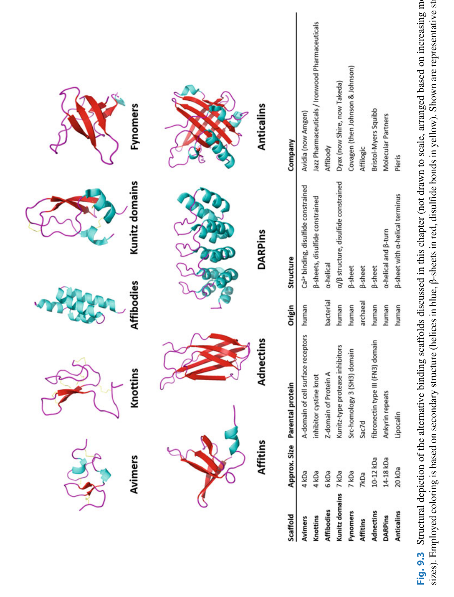
그림 9.3 아비머(PDB: 1AJJ), 노틴(PDB: 1HYK), 애피바디(PDB: 2KZI), 쿠니츠 도메인(PDB: 1KTH), 파이노머(PDB: 4AFS), 애피틴(PDB: 1SSO), 애드넥틴(PDB: 1TTG), DARPin(PDB: 1SVX), 안티칼린(PDB: 4GH7)의 구조. 구조 하부의 표는 개별 스캐폴드의 특성(해당 결합자를 최초/주로 상용화한 기업명 포함)을 요약한다.
9.2.3 애피틴/나노피틴
초호열성 고세균(hyperthermophilic archaea) 유래 스캐폴드 단백질 역시 대체 결합 단백질로 개발되었다. 이들 결합자는 나노피틴(Nanofitin) 또는 애피틴이라 불리며 DNA 결합 단백질 Sac7d와 Sso7d에 기반한다. 나노피틴은 높은 열·화학적·pH 안정성과 당화 부위 및 이황화결합의 부재로 매력적인 스캐폴드이다. Sac7d가 Sulfolobus acidocaldarius에서 유래한 반면, Sso7d는 원래 고세균 Sulfolobus solfataricus에서 발견되었다. 구조적으로 이들 단백질은 C-말단 α-나선과 함께 β-배럴(barrel)을 형성하며 리간드 결합 부위는 견고한 β-시트 상부에 위치한다. Sac7d와 Sso7d는 모두 약 7 kDa의 분자량을 나타내며 효모 표면 디스플레이(yeast surface display)를 이용하여 표피성장인자 수용체(epidermal growth factor receptor, EGFR), K-Ras, Notch1 등 다양한 질환 관련 표적에 대한 결합을 위해 선별되었다. EGFR 표적 Sac7d 스캐폴드는 이후 영상화 추적자에 접합되어 종양 보유 마우스에서 생체 내 양전자 방출 단층촬영(positron emission tomography, PET) 영상화에 성공적으로 활용되었다. 나노피틴/애피틴의 다른 비치료적 응용으로는 인간 IgG와 같은 단백질 정제를 위한 친화성 레진 설계나 단백질 칩 어레이(chip array) 활용이 있다.
이 스캐폴드 패밀리에 최근 추가된 것은 Acidianus hospitalis에서 자연 발견되는 단백질 Aho7c이다. Aho7c는 Sac7d보다 약간 작아 66개 대신 60개 아미노산 길이를 갖는다. 무작위화된 Aho7c 라이브러리 스크리닝을 통해 상피세포 부착 분자(epithelial cell adhesion molecule, EpCAM)에 결합하는 Aho7c 변이체가 확인되었으며, 최고 성능 변이체는 피코몰 친화도로 해당 표적에 결합하였다.
9.2.4 아비머
아비머 스캐폴드는 인간 저밀도지질단백 관련 단백질(low-density-related protein, LRP)이나 초저밀도지질단백 관련 수용체(very-low density-related lipoprotein receptor, VLDLR)와 같은 다양한 세포 표면 수용체에서 발견되는 A-도메인(domain)에 기반한다. 아비머는 약 35개 아미노산 길이로 약 4 kDa의 분자량에 해당하며, 구조를 안정화하는 3쌍의 이황화결합과 복합된 일부 칼슘 이온을 포함한다. 동일한 생물학적 리간드의 서로 다른 부위에 결합하는 여러 A-도메인을 조합할 수 있으며, 최대 8개의 공학적 A-도메인으로 구성된 아비머가 세균 세포에서 가용성 형태로 생산되었다. 이 스캐폴드 역시 비범한 열 안정성을 특징으로 하며 50~80℃에서 2주간 안정함이 입증되었다. 더욱이 아비머의 구조는 단백질 공학 중 보호되어야 할 12개 잔기에 의해서만 보존되어 높은 유연성을 제공한다. 3개 A-도메인 조합으로 인터루킨-6(interleukin-6)을 표적하는 한 아비머 변이체(‘C326’)는 크론병(Crohn’s disease) 치료를 위한 제I상 임상시험에서 조사되었으나 개발이 지속되지는 않았다.
9.2.5 시스테인-매듭 미니단백질(노틴)
자연 발생 시스테인-매듭(cysteine-knot) 미니단백질은 여러 이황화결합의 맞물린 배열로 특징지어지는 정의된 3차원 경직 코어 구조를 나타낸다. 이들은 통상 노틴이라 불리며 진균, 절지동물, 척추동물을 포함한 다양한 종에서 분리되어 수렴 진화(convergent evolution)의 사례로 추정된다. 자연적으로 이들 미니단백질은 단백질분해효소 억제제나 이온 채널 차단제로 작용하거나 항미생물 활성을 갖는 것으로 기술되었다. 구속된 구조 덕분에 시스테인-매듭 미니단백질은 단백질분해적·화학적 변성에 대해 매우 안정하며 100℃를 견딤이 입증되었다. 노틴은 또한 구조적 무결성의 손실 없이 산, 염기, 혈청에 노출될 수 있다. 이러한 견고성은 인간 장의 가혹한 조건을 견딜 수 있으므로 경구 투여를 위한 이들 결합자 개발에 새로운 길을 연다. 또한 거대고리를 형성하는 나머지 이황화물에 의해 하나의 이황화결합이 관통되는 맞물린 이황화결합 패턴은 분자 인식을 위해 변형될 수 있는 여러 루프 구조를 제공한다. 여러 합리적·조합적 단백질 공학적 접근을 통해 노틴은 무수한 구조적·서열 변형에 수용적임이 입증되었으며, 정점을 이룬 것은 선택된 결합 루프의 제거와 완전히 다른 단백질 유래의 다른 루프 구조로의 후속 교체였다. 이러한 신규 외래 루프 구조의 노틴 스캐폴드에 대한 그라프팅(grafting)은 생성된 키메라 미니단백질의 결합 특성을 변경하였다. 30~50개 아미노산 길이로 시스틴-매듭(cystine-knot) 미니단백질은 세균 세포의 페리플라즘(periplasm)에서 재조합 생산되거나 화학 펩티드 합성을 통해서도 생산될 수 있다.
시스틴 풍부 미니단백질은 진단부터 치료에 이르는 광범위한 응용으로 공학화되었다. 실제로 최초 FDA 승인 대체 결합 스캐폴드 중 하나는 2004년 중증 만성 통증 치료로 승인된 노틴 펩티드 지코노타이드(Ziconotide)였다. 또 다른 노틴인 리나클로타이드(Linaclotide) 역시 2012년 FDA 승인을 받았다. 더욱이 인테그린(integrin) 수용체를 표적하는 노틴은 작은 크기로 효율적인 종양 흡수를 가능하게 하면서도 신장을 통한 비표적 조직에서의 신속한 제거를 보장하므로 종양 영상화에 활용되었다.
9.2.6 설계 앵커린 반복 단백질(DARPin)
설계 앵커린 반복 단백질(약칭 DARPin)은 스캐폴드가 다양한 단백질-단백질 상호작용을 매개하는 세포내 어댑터 분자인 천연 앵커린(ankyrin) 단백질에서 유래한 고친화도·고특이성 결합자이다. 명칭이 시사하듯 이들 친화성 시약은 소수성 코어를 차폐하기 위해 N-말단과 C-말단 캡핑 모티프(capping motif)에 융합된 더 작은 반복 단위로 구성되어 세균 숙주에서 높은 용해도와 발현 수율을 보인다. DARPin은 통상 3개의 앵커린 반복으로 구성되며 14~17 kDa 범위의 분자량을 갖는다. 각 반복은 33개 아미노산과 β-시트에 이은 2개의 역평행 α-나선으로 구성된다. 개별 반복은 한 반복의 루프에서 다음 반복의 β-턴(turn)으로 연결된다. 무작위화를 위해 앵커린 단위당 33개 잔기 중 6개가 무작위화될 수 있으며, 하나의 DARPin 결합자 내 2개 또는 3개 반복이 서로 다른 서열이므로 잠재적 다양성이 더욱 증가한다. 결합 특성을 더욱 향상시키기 위해 두 캡핑 반복 모두에 추가 무작위화 잔기를 포함하는 새로운 라이브러리가 최근 설계되었다. 이러한 확장된 결합 표면은 선별에서 광범위한 에피토프(epitope)를 커버하는 데 유리하며, 경우에 따라 단일 라운드 리보솜 디스플레이만으로 피코몰 친화도를 지닌 결합자를 얻는 데 도움이 되었다. 항체 중쇄의 초가변 CDR3이 항체-항원 상호작용 매개에 가장 중요한 루프라는 점에 착안하여, 오히려 경직된 DARPin 골격의 유연성과 결합 인터페이스는 중앙 반복에 19개 아미노산의 연장된 루프를 도입한 또 다른 라이브러리 구성으로 변형되었다. 이로써 얻어진 루프DARPin(LoopDARPin)은 정교하게 설계된 제한된 아미노산 조성을 지닌 볼록한 결합 표면을 가지면서도 원래 DARPin 스캐폴드의 유리한 열 안정성을 유지한다.
다른 많은 스캐폴드와 마찬가지로 DARPin은 고도의 열 안정성을 지니며 화학적·단백질분해적 분해에 저항성을 보였다. 다소 독특한 특징 중 하나는 오목한 형상으로, DARPin이 선형이 아닌 3차원 에피토프를 인식할 수 있게 한다. 결과적으로 표적이 공동(cavity)을 가질 필요가 없으며, 큰 표면적은 구형 단백질에 비해 잠재적으로 더 큰 결합 인터페이스를 제공한다. 이러한 특징은 선별 과정 중 특정 에피토프를 빼는(subtract) 능력과 함께, 서로 다른 입체형태(conformation) 상태와 번역 후 변형 상태를 특이적으로 구별하는 DARPin 생성을 가능하게 하고, 서로 다른 세포내 국재화에 존재하는 표적 상태 간 선택성을 향상시킨다. 번역 후 상이한 단백질을 다루는 DARPin은 예컨대 키나아제 ERK2(세포외 신호 조절 키나아제 2, extracellular signal-regulated kinase 2)의 활성형 또는 비활성형을 구별할 수 있다. 이들 선별된 결합자는 세포 용해물에서 각 키나아제 형태의 검출을 가능하게 할 뿐 아니라, 실시간·실공간 센서로서 세포 내부에서 직접 ERK2의 활성화 상태를 확인하게 한다. DARPin은 파지 디스플레이, 효모 디스플레이, 리보솜 디스플레이를 이용하여 통상 서브나노몰(subnanomolar) 친화도로 광범위한 세포내·세포외 단백질 표적에 대해 성공적으로 선별되었다. 매우 안정하고 주로 단량체이며 응집에 저항성일 뿐 아니라, DARPin은 이황화결합과 당화 패턴이 없어 포유동물 세포의 세포질에서 안정적으로 발현된다는 장점을 갖는다. 이는 포유동물 세포 내부에서 완전히 기능하여 세포내 표적에 결합할 수 있게 하므로 인트라바디로 활용 가능하다. 더욱이 다른 스캐폴드와 마찬가지로 바이오센서 설계를 위해 DARPin과 GFP 또는 다른 단백질의 유전적 융합체를 비교적 간단히 만들 수 있으며 다양한 세포와 생물(예컨대 포유동물 세포, 초파리 유충, 제브라피시)에서 사용된다.
DARPin은 또한 치료 응용에 중요한 기능을 갖춘 것으로 입증되었다. EpCAM을 표적하는 DARPin이 생성되어 세균 Pseudomonas aeruginosa 유래 독소인 외독소 A(Exotoxin A)에 융합되었다. 생성된 접합체는 시험관 내에서 EpCAM 양성 종양 세포에 강력한 세포 살상능을 나타냈고 마우스 생체 내 실험에서 종양 조직으로 효율적 국재화를 입증하였다. 다른 DARPin은 9.3절에서 강조하듯 임상 조사 중이다. 더욱이 이러한 결합자는 효율적인 종양 영상 추적자 생성을 위해 방사성표지를 비롯한 다양한 화물(cargo)에 접합되었다. 암 관련 수용체 HER2에 고친화도로 결합하는 DARPin은 마우스 전임상 영상화 연구에 적용되어 다재다능한 영상화 도구로서 이 스캐폴드의 잠재력을 입증하였다.
9.2.7 파이노머
파이노머는 Fyn 티로신 키나아제(tyrosine kinase)의 인간 Src 상동성 3(Src-homology 3, SH3) 단백질 도메인에 기반하며, 공학적 파이노머 변이체는 높은 열 안정성과 응집 결여를 모두 나타낸다. 또한 파이노머는 시스테인 잔기가 없어 세균 세포에서의 재조합 발현과 잠재적 세포내 응용에 적합하다. 이들 스캐폴드는 약 7 kDa 크기를 포함하며 그 구조는 결합 부위를 만드는 두 루프에 의해 연결된 한 쌍의 역평행 β-시트를 특징으로 한다. 전염증성 사이토카인(cytokine) 인터루킨-17A(interleukin-17A, IL-17A)를 표적하는 파이노머와 항-종양괴사인자-알파(tumor necrosis factor-alpha) 항체 아달리무맙(Adalimumab)의 융합 단백질은 류마티스 관절염(rheumatoid arthritis) 치료를 위한 제I/II상 임상시험에서 평가되었다. 그러나 이 융합 단백질(“COVA322”) 연구는 관찰된 안전성 프로파일을 근거로 중단되었다.
9.2.8 쿠니츠 도메인 억제제
쿠니츠 도메인은 분자 인식을 위해 공학화된 대체 결합 스캐폴드의 가장 초기 사례 중 하나이다. 쿠니츠 도메인은 약 60개 아미노산을 포함하는 펩티드로 약 7 kDa의 분자량을 갖는다. 이들은 가역적 세린(serine) 및 트립신(trypsin) 단백질분해효소 억제제의 활성 모티프에서 자연 유래하며 소수성 코어와 다소 불규칙한 2차 구조를 나타낸다. 이들 도메인은 “쿠니츠 도메인 억제제”로도 불리며 3쌍의 이황화결합에 의해 구조적으로 안정화된다. 이들의 2차 구조는 스캐폴드를 불안정화하지 않고 변형 대상이 된 3개의 표면 노출 루프를 제공한다. 가장 초기 시도 중 일부는 변경된 효소 특이성을 향해 소 [및 인간] 췌장 트립신 억제제 스캐폴드의 공학화를 목표로 하였다. 이를 위해 돌출된 루프 구조를 무작위 돌연변이유발로 다양화하고 생성된 파지 디스플레이 라이브러리를 호중구 엘라스타제(neutrophil elastase)와 α-키모트립신(chymotrypsin)에 대한 결합에 대해 스크리닝하여 트립신 결합 능력을 폐지하였다.
9.2.9 리포칼린(안티칼린)
리포칼린(lipocalin)은 150~190개 아미노산 크기의 단일 폴리펩티드 사슬로서 약 20 kDa의 분자량으로 가장 큰 대체 스캐폴드에 속한다. 이들은 원뿔형으로 중심축 주위에 정렬된 8개의 역평행 β-가닥을 포함하는 구조적으로 보존된 β-배럴에 의해 정의된다. 리포칼린은 세포로부터 소수성 화합물의 수송과 격리를 담당하는 자연 분비 단백질이다. 이러한 기능을 수행하기 위해 이들 친화성 시약은 내재적 리간드 결합 부위를 나타내며 이는 대체 결합 스캐폴드 활용에 적합하다. 또한 리포칼린은 높은 열 안정성을 나타내며 복잡한 당화 패턴이 없어 세균 발현 시스템에서의 재조합 생산이 가능하다. 단백질 공학과 관련하여 β-배럴 구조는 4개의 표면 노출 루프에 의해 형성되는 리간드 결합 포켓(pocket)을 제공한다. 리포칼린의 독특한 특징 중 하나는 저분자량 단백질이나 합텐 유사 리간드에 대한 고친화도 결합자를 생성할 가능성이다. 일반적으로 변경된 리간드 결합 특성을 지닌 공학적 리포칼린은 “안티칼린”이라 불린다. 안티칼린은 통상 인간 리포칼린 스캐폴드의 평균 20개 아미노산을 무작위화하여 생성된다. 리간드 결합 공동(cavity)에 직접 위치한 공학적 잔기를 지닌 안티칼린은 소분자 플루오레세인(fluorescein), 디곡시게닌(digoxigenin), 콜히친(colchicine)에 각각 (서브)나노몰 친화도로 결합할 수 있음이 입증되었다. 이러한 독소 표적 안티칼린 스캐폴드는 급성 중독 치료를 위한 치료적 해독제로 유용할 수 있다. 보다 최근 접근에서는 피코몰 친화도로 Bacillus anthracis가 분비하는 물질인 페트로박틴(petrobactin)을 표적하는 안티칼린이 개발되었다. 이 안티칼린은 세균 성장을 억제함이 입증되어 탄저병 치료에 유용할 수 있다.
최근 접근은 인간 리포칼린 스캐폴드의 리간드 결합 포켓 내 입체적으로 허용적인 위치에 비천연 아미노산을 혼입하는 것을 기술한다. 생성된 안티칼린 구조는 피라노스 단당류(pyranose monosaccharide)를 가역적으로 복합할 수 있었는데, 이는 대부분의 단백질(단일클론항체 포함)이 수용액에서 올리고당에 대해 차선의 친화도를 나타내므로 통상 달성하기 어렵다. 고도로 특이적인 탄수화물 결합 안티칼린은 암 관련 세포 표면 올리고당의 인식을 가능하게 할 수 있으므로 치료 환경에서 유용할 수 있다.
9.3 임상에서의 대체 결합 스캐폴드
지난 수년간 전술한 대체 결합 스캐폴드의 여러 대표가 치료 실체로서 또는 종양 영상화 목적으로 임상에 진출하였다. FDA에 의해 최초로 승인된 스캐폴드는 2004년 승인된 노틴 지코노타이드로, 처음에는 Jazz Pharmaceuticals에 의해, 현재는 TerSera Therapeutics에 의해 “Prialt®”라는 상품명으로 시판된다. 지코노타이드는 먹이를 마비시키기 위해 독을 이용하는 어류 섭식 해양 고둥(cone snail)의 독 성분에서 유래하였다. 이 노틴은 통증 신호 전달을 담당하는 신경에 발현된 칼슘 이온 채널을 차단함으로써 통증 수용체의 신호를 중단시키는 비오피오이드 진통 길항제이다. 따라서 척수관 내(intrathecal)(즉 척추관 내)로 투여되어 혈액-뇌 장벽(blood-brain barrier)을 능동적으로 통과할 필요 없이 뇌척수액에 도달함으로써 중증 만성 통증으로 고통받는 환자를 돕는 것으로 입증되었다.
리나클로타이드는 2012년 FDA 승인된 두 번째 노틴으로, 현재 과민성 장 질환과 만성 변비 치료를 위해 Allergan(원래 Ironwood Pharmaceuticals)에 의해 “Linzess®”로 시판된다. 이 미니단백질은 장내 구아닐산 고리화효소 C 수용체(guanylate cyclase C receptor)에 대한 작용제로 기능하며 탁월한 안정성 덕분에 경구 투여될 수 있다. 구아닐산 고리화효소 C 수용체의 활성화는 고리형 구아노신 일인산(cyclic guanosine monophosphate)의 증가를 가져오며 이는 다시 장 내강으로 중탄산염과 염화물 이온의 분비를 증강시킨다. 결과적으로 장으로의 체액 분비가 증가하여 궁극적으로 장 통과를 촉진한다.
지코노타이드와 리나클로타이드 외에도 쿠니츠 도메인 억제제 DX-88은 2009년 유전성 혈액 질환인 유전성 혈관부종(hereditary angioedema, HAE) 치료로 FDA 시판 승인을 받은 세 번째 대체 스캐폴드였다. HAE는 점막과 피부의 부종의 간헐적·급성 발작으로 나타나며 세린 단백질분해효소 칼리크레인(kallikrein)을 표적하는 혈장 내 기능이상 억제제 단백질에 의해 야기된다. DX-88은 Dyax(2015년 Shire에 인수됨)에 의해 “Kalbitor®(에칼란타이드, Ecallantide)”라는 명칭으로 시판되며 칼리크레인에 대한 결합에서 이 돌연변이 천연 억제제와 경쟁함으로써 그 효과를 중화한다. 역시 Dyax가 개발한 두 번째 쿠니츠 도메인 DX-890(“데펠레스타트, Depelestat”)은 폐 섬유증 치료를 위한 제II상 연구에서 평가되었다. 데펠레스타트는 섬유증 환자의 폐에 주로 존재하는 세포 유형인 활성화된 호중구에서 방출되는 단백질분해효소 호중구 엘라스타제를 억제한다. 이 세린 단백질분해효소는 세포외기질(extracellular matrix) 성분을 분해할 수 있으므로 그 억제는 이 쿠니츠 도메인 부재 시 나타나는 폐 손상을 중단시킬 수 있다.
전술한 승인된 3개 대체 결합자 외에도 다른 스캐폴드 부류의 여러 친화성 시약이 현재 임상 조사 중이다. 가장 앞선 결합자는 혈관내피성장인자(vascular endothelial growth factor, VEGF)를 표적하는 PEG화된 반감기 연장 DARPin인 아비시파르 페골(Abicipar pegol)이다. 이 결합자는 선진국에서 노인 영구 시력 상실의 주요 원인인 신생혈관성 연령 관련 황반변성(neovascular age-related macular degeneration, AMD) 환자의 치료를 위한 제III상 시험을 최근 성공적으로 완료하였다. 치료하지 않으면 새로 형성된 미성숙 혈관이 망막색소상피 하 공간으로 성장하여 조직 파괴와 궁극적으로 신경감각 망막의 변성을 야기한다. 이 과정은 VEGF 억제제에 의해 차단될 수 있으며 이들은 AMD의 표준 치료이다. 현재 항체 기반 항-VEGF 치료가 빈번한 유리체내 주사를 필요로 하는 반면, 높은 안정성과 효능으로 인해 DARPin 기반 치료제는 더 드문 투여가 필요할 수 있다.
그러나 아비시파르 페골만이 현재 임상 연구 중인 DARPin은 아니다. MP0250은 아비시파르 페골과 종양 적응증뿐 아니라 구조 설계에서도 구별되는 항혈관신생 분자이다. 이는 3개의 서로 다른 개별 DARPin으로 구성된 다량체 형식으로 구축되었다. 하나의 DARPin은 VEGF를 표적하고 두 번째 결합자는 간세포성장인자(hepatocyte growth factor, HGF)에 결합하며 동일한 DARPin의 2개 복제는 혈청 알부민에 결합한다. HSA 상호작용을 통한 연장된 반감기를 나타내는 동시에, 이 다중-DARPin은 단일클론항체 베바시주맙(Bevacizumab, Avastin®)과 같은 기존 VEGF 길항제의 주요 단점인 약물 저항성 발생을 극복할 잠재력을 갖는데, 이는 암 관련 경로 두 개를 동시에 표적하기 때문이다. MP0250은 제I/II상 연구를 성공적으로 완료하였으며 현재 다발성 골수종(multiple myeloma) 치료를 위한 제II상 시험과 비소세포폐암 치료를 위한 제Ib/II상 연구에서 조사되고 있다. 이는 최근 FDA로부터 다발성 골수종에 대한 희귀의약품 지정(Orphan Drug Designation)을 받았는데, 이는 희귀 질환용 신약 및 생물의약품 개발 지원을 위한 재정적 인센티브 창출을 위한 지정이다. 또 다른 반감기 연장 DARPin인 MP0274는 다시 HSA 결합 단위와 HER2에 고친화도로 결합하는 두 번째 DARPin을 포함한다. MP0274는 고형 종양 치료를 의도하며 2017년 최초 인간 대상 제I상 임상시험에 진입하였다. DARPin 스캐폴드의 임상 개발 지형에 가장 최근 추가된 것은 진행성 고형 종양 치료를 위한 제I상 시험에 막 진입한 MP0310이다. 이 이중특이성 DARPin 작제물은 종양괴사인자 패밀리 구성원으로서 공동자극 면역관문 분자로 작용하는 4-1BB(CD137로도 알려짐)와 섬유아세포 활성화 단백질(fibroblast activation protein)을 동시에 표적한다. 이는 전신이 아닌 종양 내에서 특이적으로 면역 T 세포를 활성화하도록 설계되어 잠재적으로 전신 부작용과 독성 위험은 낮추면서 더 큰 효능을 전달한다.
임상 조사에서 두드러히 존재하는 또 다른 스캐폴드는 안티칼린으로, 그 중 여러 개가 현재 초기 및 후기 임상시험 중이다. PRS-050(“Angiocal”)은 VEGF에 결합하여 종양 혈관신생을 억제하는 PEG화된 반감기 연장 안티칼린으로 고형 종양 치료를 의도한다. PRS-050은 진행성 고형 종양 환자에서 제I상 연구에서 성공적으로 평가되었으며 관찰 가능한 독성이나 면역원성 징후가 없었다. 또 다른 PEG화된 안티칼린인 PRS-080은 철 대사 조절에 중요한 역할을 하는 헵시딘(hepcidin, hepatic bactericidal protein)을 표적한다. 헵시딘은 다양한 세포 표면에 발현된 철 수송체 페로포틴(ferroportin)과 상호작용하여 그 내재화와 분해를 야기한다. 이로써 페로포틴에 의한 신체 저장소로부터 철의 배출이 차단되어 가용성이 감소한다. PRS-080으로 헵시딘을 길항하면 기능적 철 결핍(functional iron deficiency, FID) 환자의 철 가용성을 개선할 잠재력이 있다. PRS-080의 안전성과 내약성은 제I상 연구에서 입증되어 FID를 동반한 만성 신장 질환 빈혈 환자에서의 안전성을 조사하는 진행 중인 제IIb상 연구로 이어졌다. 안티칼린 변이체 PRS-060은 반면 인터루킨-4 수용체 IL-4Rα를 길항하며 지금까지 완료된 두 건의 제I상 연구에서 평가되었다. 현재 중등도~중증 천식에 대해 건강한 지원자에서 세 번째 제I상 연구로 조사되고 있다. 천식을 위해 개발된 전신 투여 항체 기반 치료제와 달리 PRS-060은 흡입을 통해 폐에 국소 투여될 수 있어 잠재적으로 더 낮은 용량을 필요로 한다. 마지막으로 이중특이성 항체-안티칼린 융합 단백질인 PRS-343이 최근 제I상 연구에 진입하였다. PRS-343은 HER2 수용체를 표적하는 항체에 활성화된 T 세포, B 세포, 자연살해세포에 발현된 공동자극 면역 수용체인 CD137에 결합하는 안티칼린이 융합된 것으로 구성된다. 이 융합 단백질은 종양 미세환경에서 특이적으로 T 세포를 활성화하도록 설계되어 궁극적으로 종양 박멸로 이어질 수 있다.
인간 유래 대체 결합 스캐폴드 외에도 전술한 애피바디 역시 임상 연구에서 조사되고 있다. 그러나 잠재적 면역원성으로 인해 세균 유래의 이들 결합자는 장기 전신 적응증보다는 단기 진단 또는 국소 치료에 우선 고려되었다. HER2 결합 애피바디 ABY-025는 따라서 서로 다른 영상화 추적자에 접합되어 유방암 영상화를 위한 두 건의 제I/II상 임상 연구에서 성공적으로 조사되었다. ABY-025는 치료용 항-HER2 항체 트라스투주맙(Trastuzumab, Herceptin®)과 퍼투주맙(Pertuzumab, Perjeta®)이 다루는 에피토프와 다른 HER2 수용체 영역에 결합하므로 항체 치료를 받는 환자에서도 종양 영상화를 가능하게 할 잠재력이 있다. ABY-025는 현재 제II/III상 임상시험에서 조사되고 있다. 또 다른 애피바디인 ABY-029의 단일 환자 대상 제0상 최초 인간 연구는 근적외선 형광단에 접합된 채 EGFR을 표적하는 투여를 포함하였다. 이러한 표지 시약은 종양 세포에 특이적으로 과발현된 수용체에 결합함으로써 정상 조직은 보존하면서 종양의 효율적 제거를 가능하게 하는 형광 유도 수술(fluorescence-guided surgery)에 활용될 수 있다. 이 개념증명 연구에서는 수술 약 4시간 전에 ABY-029 미세용량이 환자에게 투여되었고 제거된 종양 조직이 이후 형광 신호에 대해 분석되었다. 이 연구는 ABY-029 형광이 생체 외에서 용이하게 검출되었고 EGFR 발현과 양의 상관관계를 보임을 입증한다.
ABY-025와 ABY-029가 진단 응용에 활용된 반면, 흥미롭게도 ABY-035라 불리는 또 다른 애피바디 변이체는 최근 제I/II상 연구를 완료하고 제I상 및 제II상 임상시험에서 활발히 조사되고 있다. ABY-035는 IL-17A의 두 소단위와 HSA를 모두 표적하는 이중특이성 분자로 중등도~중증 건선(psoriasis) 치료를 의도한다. 제I/II상 연구는 피하뿐 아니라 정맥 투여에서도 유리한 안전성과 내약성을 입증하여 추가 개발의 길을 열었다.
전술한 예들이 임상 응용에서 대체 결합 스캐폴드의 유망한 성공 사례를 부각하지만, 안타깝게도 그에 걸린 기대에 도달하지 못한 경우도 있다. 두 애드넥틴이 각각 교모세포종(glioblastoma)과 고콜레스테롤혈증 치료를 위한 임상시험에서 조사되었다. 두 스캐폴드 모두 내약성은 양호하였으나 이후 임상적 유의성 충족 실패 또는 비공개 사유로 프로그램이 중단되었다. 세 번째 애드넥틴인 BMS-986089(“탈디터셉트 알파, talditercept alfa”)은 듀센 근이영양증(Duchenne Muscular Dystrophy) 치료를 위한 여러 제I상 임상시험에서 이미 평가되었으나, 제I/II상 연구 결과는 1차 평가변수를 달성하지 못할 가능성이 가장 높음을 시사하였다. 이에 탈디터셉트 알파를 포함하는 임상 연구가 최근 중단되어 현재 임상 개발 중인 애드넥틴 스캐폴드는 남아 있지 않다. 앞서 언급한 대로 파이노머 스캐폴드도 유사한 운명을 맞았다.
9.4 기초 연구 및 그 너머의 도구로서 대체 결합 스캐폴드
치료 목적 개발 외에도 여러 대체 스캐폴드는 실험실 연구 응용에 귀중한 도구임이 입증되었다. 대표적인 예는 DNA 중합효소의 충실도를 증가시켜 현재 전 세계 연구자들이 PCR에 널리 사용하는 전술한 애피바디 변이체 융합체이다. 애피바디는 또한 친화성 정제에 광범위히 활용되어 왔으며, 예컨대 면역글로불린 Fc 도메인과 상호작용하는 애피바디의 내재적 능력을 활용하는 기능화 레진(“MabSelect SuRe”라는 명칭으로 GE Healthcare가 시판)을 포함한다. 또한 단백질 공학에 의해 새로운 특이성이 도입되어 인간 제VIII인자(factor VIII)와 같은 단백질을 효과적으로 결합하는 애피바디 기반 포획 리간드가 생성되었다. 크로마토그래피 응용에 유용할 뿐 아니라, 트랜스페린(transferrin)이나 인간 면역글로불린 A를 표적하는 애피바디는 뇌척수액이나 인간 혈청과 같은 복잡한 생물학적 시료로부터 단백질 고갈(depletion)에 성공적으로 활용되었다. 더욱이 이들 친화성 시약은 효소결합면역흡착측정법(enzyme-linked immunosorbent assay, ELISA), 도트 블롯(dot blot), 면역조직화학(immunohistochemistry) 분석에서 검출 시약으로 기능하도록 양고추냉이 과산화효소(horseradish peroxidase)와 같은 리포터 효소(reporter enzyme)에 융합되어 비색 판독을 제공하였다. 대안으로 인간 IgG의 Fc 부분과 애피바디의 융합 단백질이 웨스턴 블롯 분석에서 표적 단백질 시각화에 활용되었다. 나아가 애피바디는 단백질 마이크로어레이(microarray) 상 포획 리간드로 성공적으로 활용되어 각 표적 단백질에 특이적 결합을 보이고 다른 무관 단백질과는 관찰 가능한 교차반응이 없음을 입증하였다. 형광단에 결합되면 이 스캐폴드 부류의 구성원은 유세포분석(flow cytometry)에 의한 종양 세포주 상 암 관련 수용체의 검출과 정량에 적합함이 입증되었고, 형광 기반 에너지 전이(fluorescence-based energy transfer, FRET) 응용을 위한 바이오센서로도 활용되었다.
시스테인-매듭 미니단백질은 반면 주로 치료, 특히 종양 영상화 응용을 위해 개발되었다. 그러나 인테그린과 상호작용하는 노틴 역시 신규 인테그린 결합 펩티드의 특성화를 위한 도구 시약으로 효율적으로 활용되었다. 경쟁 ELISA 구성에서 서로 다른 인테그린이 고정되고 이후 여러 인테그린 변이체를 인식하는 노틴과 서로 다른 농도의 인테그린 결합 펩티드의 혼합물과 함께 배양되었다. 고정된 인테그린에 대해 이 도구 노틴보다 높은 친화도를 포함하는 펩티드는 농도 의존적 방식으로 검출된 노틴 결합에 영향을 주었으므로 확인될 수 있었다. 재조합 항-인테그린 항체 대신 화학 합성 가능한 노틴의 사용은 특히 고처리량 분석 형식에서 이들 스크리닝 비용을 절감하고 표준화를 촉진할 잠재력이 있다.
애드넥틴, 즉 모노바디는 단백질-단백질 상호작용 연구에 탁월한 도구임이 입증되었으며 서로 다른 RAS(rat sarcoma) 단백질의 구조 분석에 큰 통찰을 제공하였다. 인간 RAS GTPase인 N-, H-, K-RAS는 발암(oncogenesis)에 중요한 역할을 하며 이들 GTPase 중 하나의 돌연변이는 다양한 종양 유형에 흔히 존재한다. H- 및 K-RAS GTPase를 표적하는 모노바디를 포함하는 구조적·생화학적 분석은 RAS 단백질의 이량체화를 담당하는 이전에 알려지지 않은 인터페이스를 정의하는 데 기여하였다. 또한 이 결합자는 결합 시 H- 및 K-RAS 매개 신호를 효율적으로 억제하였다. 또 다른 모노바디는 이른바 단백질 상호작용 도메인(protein interaction domain, PID)의 중요한 대표자인 사코마 상동성 2(sarcoma homology 2, SH2) 단백질 패밀리의 구성원에 대한 특이적 억제제로 확인되었다. PID는 다양한 생물학적 리간드와 상호작용할 수 있는 인식 모듈이며 이들의 개별 기능과 기여를 이해하는 것은 세포 단백질 네트워크 해독에 crucial하다. 그러나 SH2 패밀리와 같은 PID는 인체에서 발견되는 무수한 서로 다른 단백질에 존재하며 높은 구조적 상동성을 공유하므로, 다른 모든 구성원은 보존하면서 원하는 하나의 패밀리 구성원만을 결합하는 고도로 특이적인 친화성 도구를 확인하기 어렵다. 그러나 단백질 키나아제 Abl의 SH2 도메인과만 독점적으로 상호작용하는 고도로 특이적인 모노바디 변이체가 파지 디스플레이로 확인될 수 있었다. 키나아제-모노바디 복합체의 해결된 공결정 구조는 억제 기전에 대한 귀중한 통찰을 제공하여 치료 목적의 신규 특이적 SH2 억제제 설계에 지침을 줄 수 있다.
리포칼린 스캐폴드 기반 대체 스캐폴드 단백질 역시 분자생물학 도구로 활용되었다. 암 관련 단백질 세포독성 T 림프구 관련 항원 4(cytotoxic T-lymphocyte-associated antigen 4, CTLA-4)에 결합하는 안티칼린은 면역조직화학 응용에 사용되었다. 형광염료 플루오레세인에 접합된 이 안티칼린은 비특이적 교차반응 없이 여러 비악성 및 유방암 조직 절편의 염색을 가능하게 하여 임상 진단에서의 잠재력을 입증하였다. 안티칼린은 단백질 기반뿐 아니라 소분자 리간드도 수용할 수 있으므로, 디곡시게닌을 표적하는 이러한 결합자는 인간 혈청 내 이 스테로이드의 정량 검출에 적합할 수 있다. 디곡시게닌은 심부전 환자에게 사용되는 강심성 화합물 디곡신(digoxin)의 아글리콘(aglycon)이다. 디곡신은 안타깝게도 낮은 치료역을 나타내므로 치료 중 환자의 농도를 면밀히 모니터링해야 한다. 이러한 맥락에서 디곡신과 디곡시게닌을 모두 검출하는 안티칼린은 디곡신 정량 분석 개발에 적합할 수 있다.
같은 방식으로 앵커린 반복 단백질 기반 대체 결합 스캐폴드는 임상과 종양 영상을 넘어 광범위한 응용에 활용되었다. 예컨대 피코몰 친화도로 HER2를 표적하는 DARPin 변이체는 파라핀 포매 인간 유방암 조직 절편에서 HER2의 증폭 상태를 확인하는 면역조직화학 염색용 도구 시약으로 성공적으로 활용되었다. FDA 승인 검출 단일클론항체와의 비교는 DARPin이 유방암 조직 내 HER2 발현 검출에 관해 실제로 귀중한 대안임을 입증하였다. DARPin은 또한 “공결정화 샤페론(co-crystallization chaperone)”, 즉 비공유 복합체를 형성함으로써 다른 단백질의 결정화를 돕는 헬퍼 단백질로 성공적으로 활용되었다. 많은 단백질은 잠재적 불안정성과 내재적 유연성이 잘 정돈된 결정 형성을 저해할 수 있으므로 결정화하기 어려움이 입증되었다. 이러한 방식으로 단백질 결합자는 표적의 기능을 이해하는 데 중요한 특정 구조 상태에서도 관심 단백질을 안정화하는 데 도움을 줄 수 있다. 수십 년간 결정화 샤페론으로 활용된 항체 도메인과 달리 DARPin과 다른 대체 결합 스캐폴드는 더 용이하고 비용 효율적으로 얻어질 수 있다. 따라서 현재까지 예컨대 폴로 유사 키나아제 1(polo-like kinase 1), 카스파제-2(caspase-2), 다제 배출체 AcrB를 비롯한 수십 개의 표적이 DARPin과 복합체로 결정화된 것은 놀라운 일이 아니다. 흥미롭게도 관심 단백질과 직접 상호작용하는 DARPin뿐 아니라 이러한 구조 연구에 유익하였다. 말토스 결합 단백질(Maltose-binding protein, MBP)과 상호작용하는 결합자는 인간 이중특이성 포스파타제 1의 MBP 융합체 결정화에 성공적으로 사용되었다. 보다 최근에는 경직 나선 융합(rigid helix fusion)을 활용하는 우아한 전략이 새로운 기회를 열어 결정화 공간을 확장하였다. 이를 위해 DARPin의 C-말단과 N-말단 캡핑 반복이 β-락타마제(lactamase)와 경직된 방식으로 공유 나선을 만들도록 재설계되었다. DARPin의 표적 결합을 방해하지 않으면서, 더 크고 결정화하기 쉬운 단백질에 대한 이러한 경직 융합은 고해상도 구조 산출에 입증되었으며, 부분적으로는 서로 다른 기하학으로 여러 DARPin을 서로 경직 융합하여 다양한 대체 결정 패킹을 생성함으로써 이루어졌다. 명백히 이러한 경직 DARPin 융합은 크기 증가가 현재 너무 작은 복합체의 구조 조사를 가능하게 할 수 있는 저온 전자현미경(cryogenic electron microscopy, cryo-EM) 응용에도 큰 관심사이다. 이 공유 나선 접근의 한층 더 확장된 형태가 최근 단백질 공학을 이용하여 표적 결합 표면을 결정 접촉으로부터 차폐하는 잘 결정화되는 융합 작제물을 구축함으로써 달성되었으며, 이는 신속 고처리량 구조 연구를 위한 보다 일반화 가능한 경로일 수 있다.
또 다른 흥미로운 응용은 동종이량체 구조 형성을 통해 염료 말라카이트 그린(malachite green)을 표적하고 활성화하는 DARPin 결합자를 기술한다. 표적에 대한 이러한 효과는 이들 결합자를 이른바 형광단 활성화제(fluorogen activator, FAP)로서 사용할 수 있게 한다. 전통적 형광 단백질(전술한 GFP 등)과 달리 FAP는 특정 소분자 형광단에 결합되지 않으면 형광을 내지 않으므로 높은 신호 대 잡음비로 살아있는 세포 내 단백질의 실시간 검출을 비침습적으로 가능하게 한다. 통상 사용되는 FAP는 항체 단일사슬 가변 단편(single-chain variable fragment)에 기반하지만(따라서 본서의 다른 장에서 부각된 그 한계에 부분적으로 제약됨), 발표된 DARPin 기반 FAP는 이들 응용을 위한 대체 결합 스캐폴드의 잠재력을 잘 보여준다. 이 FAP는 표적 단백질의 원위치 검출부터 원하는 표적 단백질의 세포 표면 및 세포질 영상화에 이르기까지 단백질 기능 규명을 지원하는 광범위한 응용에 활용될 수 있다.
애피틴 역시 DNA 중합효소의 충실도 증가, 친화성 크로마토그래피, 세포 면역염색, 종양 영상화와 같은 기초 연구 응용에 활용되었다. 그러나 아비머와 쿠니츠 도메인에 대해서는 연구 도구로서 적합한 응용이 아직 공개 보고되지 않았다.
전술한 모든 응용은 서로 다른 대체 결합 스캐폴드가 임상의 의사뿐 아니라 광범위한 응용에서 도구로서 연구자를 지원하는 데 지닌 큰 잠재력을 명확히 부각하며, 개선되고 보다 저렴한 방식으로 다양한 생물학적 질문에 대한 향상된 통찰 수집을 가능하게 한다.
9.5 향후 방향
지난 20년간 대체 결합 스캐폴드 분야는 지속적으로 진화하였으며, 새로운 친화성 부류와 혁신적 응용이 끊임없이 개발되고 있다. 새로운 결합자 부류 중 다수는 위에서 상세히 기술한 결합자 부류와 개념적으로 유사하지만, 일부 최신 스캐폴드는 직교적 설계 접근이나 기저 논리를 포함하므로 선별적으로 간략히 언급할 것이다.
신규 대체 스캐폴드 결합자의 크기 한계를 더욱 작은 친화성 시약 쪽으로 밀어붙이고 이를 통해 고형 종양 침투와 생체분포(biodistribution)를 더욱 개선하려는 탐구는 T7 파지 유전자 2(Gp2) 단백질의 확인으로 이어졌다. 전술한 스캐폴드와 달리 Gp2는 단백질-단백질 상호작용자의 천연 예에서 직접 확인된 것이 아니라 단백질 데이터 은행(Protein Data Bank)의 체계적 탐색과 알려진 단백질 위상(topology) 탐색에 의해 확인되었다. 탐색 결과 Gp2는 이황화결합의 결여, 넓은 가용 결합 표면, 돌연변이에 대한 구조적 내성을 지닌 유망한 대체 스캐폴드로 확인되었다. 45개 잔기의 Gp2 스캐폴드는 β-시트 반대편에 위치한 α-나선으로 구성되며 다양화 표적이 될 수 있는 2개의 용매 노출 루프를 특징으로 한다. EGFR에 결합하는 고도 열안정성 Gp2 단백질이 개발되어 최근 높은 특이도로 종양 보유 마우스에서 PET 연구에 활용되었다.
또 다른 대체 결합 스캐폴드는 전적으로 계산적 설계(computational design)에 의해 개발되었으며, 인간 항체 정제와 친화성 크로마토그래피에 사용될 수 있는 신규 IgG 결합 단백질을 확인하는 것을 목표로 하였다. 초기 계산적 접근은 이용 가능한 인간 IgG 결합 단백질의 대다수가 IgG Fc 영역 상 동일한 컨센서스 영역에 결합한다는 지식(예컨대 천연 애피바디 스캐폴드)을 고려하였다. 또한 Fc 인터페이스에 존재하는 히스티딘(histidine) 잔기를 고려하여 pH 민감성을 나타내는 스캐폴드 단백질을 설계하고자 하였다. 핫스팟 유도 단백질 인터페이스 설계를 이용하여 확인된 핫스팟 위치를 수용할 수 있고 유익한 특성을 나타내는 스캐폴드 분자가 확인되었다. 이들 재설계된 스캐폴드 중 몇몇은 효모 세포 표면에 발현되어 인간 항체에 대한 결합이 분석되었다. 최고 성능 스캐폴드 변이체는 Pyrococcus horikoshii 유래 세균 효소 피라진아미다제(pyrazinamidase)에 기반하였다. 이 스캐폴드는 자연적으로 인간 Fc 영역에 결합하지 않으므로 계산적으로 재설계된 결합 인터페이스가 이러한 변경된 결합 특이성의 원인임이 분명하였다. 피라진아미다제 스캐폴드는 이후 오류 유발 PCR과 효모 디스플레이 스크리닝을 거쳐 중성 pH에서는 높은 친화도를 보이지만 산성 환경에서는 결합이 감소된 변이체를 확인하였다. 이로써 얻어진 pH 민감성 피라진아미다제 스캐폴드는 세균 세포에서 잘 발현되었고 놀라운 열 안정성을 보였다. 따라서 고체 지지체에 고정되어 인간 IgG 혼합물의 정제에 적용되었다. 결합된 항체의 용출은 약산성 pH에서 온화한 용출 단계를 수행함으로써 이루어져, 계산적으로 재설계된 pH 민감성 대체 결합자의 타당성을 입증하였다.
신규 대체 결합 스캐폴드 설계를 위한 또 다른 접근은 새로운 관심 단백질을 표적할 때마다 개별 선별을 수행할 필요가 없다는 열망에 기반한다. 의도된 특이성을 지닌 새로운 친화성 시약을 만들기 위해 수요에 따라 단일 단백질로 조립될 수 있는 사전 선별된 “결합 모듈” 도구상자를 갖는 것은 큰 가치가 있을 것이다. 신호전달, 수송, 세포골격 조절을 포함한 여러 세포 과정에 관여하는 풍부한 진핵생물 단백질인 아르마딜로 반복 단백질(armadillo repeat protein)이 이러한 목적에 적합한 스캐폴드로 확인되었다. 이들 반복 단백질은 확장된 형태로 선형으로 stretched-out된 펩티드를 인식하므로, 각 반복이 표적 펩티드의 한 조각에 상보적인 보존된 결합 양식을 제공하여 합성 모듈형 펩티드 결합 스캐폴드 생성을 위한 요건을 충족한다. 유도 진화, 계산 분석, 구조생물학 통찰을 결합한 이 노력은 단백질 공학의 모든 방법을 결집하였으며 이미 모듈형 서열 특이적 펩티드 결합자의 확인으로 이어졌다.
신규 단백질 스캐폴드의 개념화 외에도 이미 존재하는 친화성 시약 부류의 새롭고 개선된 치료 응용이 요즈음 끊임없이 대두되고 있다. 한 예는 작은 세포독성 약물에 대한 접합체로서 표적 페이로드 전달(targeted payload delivery)에 대체 결합 스캐폴드가 관여하는 것이다. 이 접근은 한동안 존재해 왔고 항체-약물 접합체(antibody-drug conjugate, ADC)에서의 최초 결과는 유망하였으나, 곧 이 절차가 예상만큼 간단하지 않으며 적합한 표적과 정의된 암 적응증의 맥락에서 항체, 링커, 약물의 사려 깊은 조합을 필요로 함이 분명해졌다. 잠재적 문제 중 하나는 선택된 항체에 접합된 약물의 평균 수를 나타내는 약물-항체 비(drug-to-antibody-ratio, DAR)를 제어하기 어렵다는 점이었다. 항체는 일반적으로 기존 접합 및 링커 화학을 통한 페이로드 접합을 위해 조작하기 어렵고, 화학 합성하기에는 너무 크거나 부위 특이적 접합을 위한 고유한 측쇄나 화학기를 갖지 않으므로 이를 신뢰성 있게 제어하기가 어렵다. 여기서 대체 결합 스캐폴드는 적합한 잔기의 부위 특이적 혼입을 위한 다양한 기회를 제공하여, 예컨대 삽입된 비천연 아미노산의 변형을 통한 변형(strain-promoted alkyne-azide cycloaddition 클릭 화학)이나 특이적으로 삽입된 단백질 태그(tag)의 효소적 변형에 의해 유연하고 화학량론적으로 정의된 페이로딩(payloading)을 가능하게 한다.
대체 결합 스캐폴드의 또 다른 유망한 응용은 세포 특이적 바이러스 전달을 매개하는 어댑터로서의 사용이다. 1990년대 일련의 좌절 이후 유전자 치료(gene therapy)는 최근 아데노부속 바이러스(AAV)(adeno-associated virus, AAV) 벡터를 이용한 두 치료제의 규제 승인으로 요즈음 다시 탄력을 받고 있다. 이러한 치료제 성공의 핵심은 유전자 교체, 침묵, 편집을 위한 유전 물질의 세포 특이적 전달이다. 바이러스 캡시드 자체의 공학화가 어려우므로 한 흥미로운 접근은 친화성 시약을 선택한 세포 유형으로의 바이러스 전달을 위한 어댑터로 작용하게 한다. 이러한 접근은 아데노바이러스뿐 아니라 AAV와 렌티바이러스 벡터에 대해서도 성공적으로 수행되어 이 중요한 치료 분야를 더욱 발전시키는 데 도움이 될 수 있다.
마지막으로 대체 결합 스캐폴드는 표적 단백질 분해(targeted protein degradation, TPD)에서도 잠재력을 입증할 수 있다. 이 인기 있는 접근은 세포 내 표적 단백질을 폴리유비퀴틴화(polyubiquitination)되게 하여 이후 프로테아좀(proteasome)에 의해 인식·분해되게 함으로써 녹다운(knockdown)하는 것을 목표로 하며, 이를 통해 지금까지 “약물화 불가(undruggable)” 표적을 잠재적으로 다룰 수 있게 한다. 이 분야의 다수 노력은 프로테아좀 분해를 달성하기 위해 소분자 “분해자”(예컨대 이른바 단백질분해 표적 키메라(Proteolysis Targeting Chimera, PROTAC))를 이용하고 있지만, 단백질 결합자 역시 필요한 E3 유비퀴틴 리가아제(ligase)와 분해될 표적 간 복합체 설계에 사용될 수 있다. 첫 보고들은 TPD를 위한 대체 결합 스캐폴드 활용의 타당성을 이미 입증하였으므로 추가 결과가 곧 뒤따를 것으로 예견할 수 있다.
종합하면 현재 보고들은 대체 결합 스캐폴드 분야가 계속 진화하고 있으며 신규 스캐폴드가 정기적으로 컬렉션에 추가되고 있음을 명확히 보여준다. 이들 분자 실체는 기존 단일클론항체에 비해 다양한 장점을 나타내므로 차세대 치료제와 혁신적 응용을 위한 친화성 시약 개발에서 지속 가능한 역할을 할 것이다.
핵심 메시지(Take Home Messages) - 대체 결합 스캐폴드는 다양한 복합 표적 단백질과 상호작용할 수 있는 유리한 특성과 기능을 지닌 비항체 분자이다. - 대체 스캐폴드는 일반적으로 자연 발생 결합 단백질의 표면 노출 영역 내 아미노산 잔기를 돌연변이시켜 설계된다. - 이들의 작은 크기, 생물물리적 특성, 기타 생화학적 특징은 많은 치료적·생명공학적 응용에 유리하다. - 대체 결합 스캐폴드는 이미 치료 목적으로 승인되었거나 현재 임상시험 중이다. - 대체 결합 스캐폴드 분야는 지속적으로 성장 중이며 새로운 스캐폴드가 정기적으로 등장하여 점점 더 혁신적인 응용을 가능하게 한다.
10장 키메라 항원 수용체(CAR) T 세포
10.1 원형 키메라 항원 수용체
환자 유래 T 세포(T cell)가 암세포를 특이적이고 효율적으로 인식하여 파괴할 수 있다는 사실은 1980년대 중반 스티븐 로젠버그(Steven A. Rosenberg, 미국 국립보건원(National Institutes of Health, NIH))가 흑색종(melanoma) 생검 조직으로부터 분리한 종양침윤림프구(tumor-infiltrating lymphocyte, TIL)를 체외에서 대량 증폭하여 흑색종 환자에게 재주입하였을 때 명백해졌다. 이러한 연구는 자가(autologous) 면역세포를 이용하여 종양 퇴축과 장기 관해를 유도하는 양입양 세포치료(adoptive cell therapy, ACT)의 개념을 확립하였다. 증폭된 TIL은 특정 종양항원에 대한 특이성과 종양 병소로의 이동 능력을 갖는 것으로 추정되나, 그 항원 특이성은 대부분 규명되지 않았다.
이후 환자 T 세포에 명확한 표적 특이성을 부여하기 위한 노력이 이어졌으며, T 세포 수용체(T cell receptor, TCR) 사슬 또는 재조합 키메라 항원 수용체(CAR)의 유전자 도입이 성공적인 전략으로 입증되었다. TCR과 달리 CAR는 표적 특이성과 T 세포 활성화 능력을 동시에 부여하는 단일 폴리펩타이드 사슬의 복합 막관통 수용체(transmembrane receptor)이다. 원형 CAR는 네 개의 주요 도메인으로 모듈식으로 구성된다. 즉 세포외 말단의 표적 인식을 위한 단일사슬 가변단편(single-chain fragment of variable region, scFv) 항체, 막관통 도메인에 연결되는 스페이서(spacer), 그리고 TCR/CD3ζ 또는 Fc 엡실론 수용체-I(Fc ε receptor-I, FcεRI) 유래의 세포내 신호 모이어티(moiety)에 공자극(costimulation) 도메인이 연결되거나 연결되지 않은 형태이다. 표적 세포 표면의 동족항원(cognate antigen)과의 결합은 CAR 개조 면역세포의 활성화를 개시하여 지속적인 T 세포 반응을 유도한다. 각 CAR 도메인은 고유한 기능을 가지며 리디렉션된(redirected) T 세포 활성화에 영향을 미치므로, 각 적용 목적에 따라 최적의 표적화와 T 세포 활성화를 위해 CAR 설계를 조정해야 한다.
기본 설계는 젤리그 에샤르(Zelig Eshhar, 와이즈만 과학연구소(Weizmann Institute of Science)) 그룹이 최초로 제안하였다. 결합을 위한 항체 유래 결합 도메인과 T 세포 활성화를 위한 TCR 신호 도메인을 갖는 모듈식 복합 수용체, 당시에는 ‘T-바디’ 또는 ’면역수용체’라 명명된 수용체가 조작된 T 세포에 특이적 인식과 활성화를 동시에 부여함을 입증하였다. 이후 광범위한 항원을 표적하고 다양한 세포내 도메인을 통해 신호를 전달하도록 다수의 변형이 도입되어, 정해진 면역세포 기능을 개시하고 리디렉션할 수 있게 되었다.
표준(canonical) CAR는 항체 유래 결합 도메인, 스페이서, 막관통 도메인, 그리고 일차 및 공자극 신호 도메인으로 구성된다. 각 도메인은 서로 다른 모듈로 구축될 수 있으며, 이는 친화도(affinity), 길이, 신호 강도 등 서로 다른 변수에 영향을 미치고 최종적으로 T 세포 활성화와 성능에 영향을 준다.
암세포를 향해 리디렉션된 세포용해성(cytolytic) T 세포의 CAR 조작은 가장 많이 연구된 응용이다. 자가 항(anti)-CD19 CAR T 세포의 양입양 이식은 미국에서 유전자 조작 세포를 이용한 최초의 식품의약국(Food and Drug Administration, FDA) 승인 치료가 되었으며, 이후 유럽의약품청(European Medical Agency, EMA)이 승인하였다. 다른 숙주세포와 다른 CAR 설계를 이용한 응용도 초기 임상시험에서 점차 연구되고 있다.
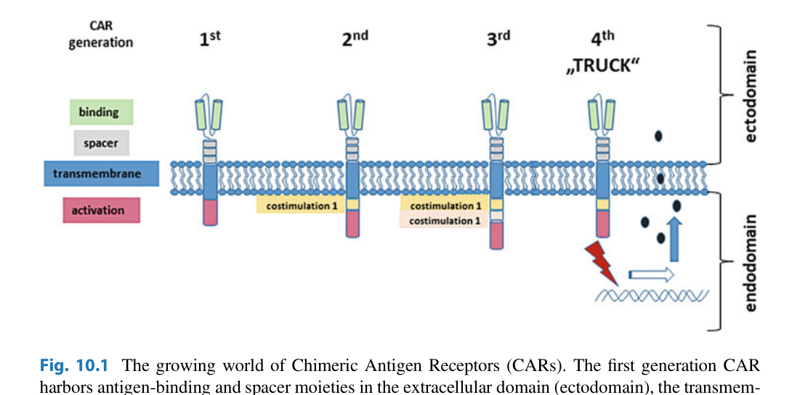
1세대 CAR는 세포외 도메인(ectodomain)에 항원결합 및 스페이서 모이어티, 막관통 도메인, 세포내 도메인(endodomain)에 CD3ζ 또는 FcεRI 감마 사슬 유래 활성화 모이어티를 갖는다. 2세대 CAR는 공자극 도메인을 하나 추가로 가지며, 3세대 CAR는 두 개의 공자극 도메인을 갖는다. 4세대 CAR(‘TRUCK(T cells redirected for universal cytokine-mediated killing, 보편적 사이토카인(cytokine) 매개 살상을 위해 리디렉션된 T 세포)’)는 CAR 신호 시 형질전환 단백질(transgenic protein)의 발현을 유도하는 2세대 또는 3세대 CAR로 구성된다. 표준 설계 외에도 다양한 응용에 최적화된 다수의 CAR 변이체가 개발되었다.
10.2 CAR의 모듈 구성: 세포외 CAR 도메인
10.2.1 결합 도메인
항원결합 도메인은 전통적으로 쥐 또는 인간 단클론항체(monoclonal antibody) 유래 scFv로 구성된다. scFv는 항체 중쇄(heavy chain, H)와 경쇄(light chain, L)의 가변(variable, V) 영역을 짧은 유연 링커(linker), 대개 (Gly4Ser)3 펩타이드로 연결하여 VH-링커-VL 또는 VL-링커-VH 순서로 조작한다. 글리신(glycine) 잔기는 VH와 VL이 항원결합 주머니를 형성하도록 적절히 접히기 위한 유연성을 제공하고, 세린(serine)은 링커에 용해도를 제공한다. VH와 VL 사슬의 공간적 위치와 상호작용은 친화도, 특이성, 용해도에 실질적으로 영향을 미친다.
T 세포 활성화를 유도하기 위해서는 충분히 높은 결합 친화도가 필수적이나, 그 이상에서는 CAR 매개 T 세포 활성화가 개선되지 않고 오히려 활성화 유도 세포사멸(activation-induced cell death, AICD)을 초래하는 친화도 상한(affinity ceiling)이 존재한다. CAR 맥락의 일부 scFv는 항원 결합과 무관하게 긴장성(tonic) 신호를 통해 AICD, 탈진(exhaustion), 말기 T 세포 분화를 유도한다. 친화도와 세포 표면 항원 밀도 외에도, 항원 내 표적 에피토프(epitope)의 위치가 중요하며, 일반적으로 막 원위부(membrane-distal) 에피토프보다 막 근위부(membrane-proximal) 에피토프를 표적할 때 더 강한 T 세포 활성화가 유도된다.
항체를 표적에 이용함으로써 CAR 매개 인식은 주조직적합복합체(Major histocompatibility complex, MHC) 비의존적이다. 이는 MHC-펩타이드(petide) 처리·제시 기전에 결함이 있는 종양을 표적할 때 유리하다. 또한 항체를 통한 인식으로 고전적 T 세포에 보이지 않는 탄수화물, 지질 또는 항원의 구조적 변이체도 인식할 수 있다. 표준 CAR는 표적 세포 표면의 항원을 인식하지만, 정의된 MHC-펩타이드 복합체에 특이적인 항체를 이용하면 MHC-펩타이드를 인식하는 CAR도 제작할 수 있어, MHC가 제시하는 세포내 항원의 감지가 가능하다. 예컨대 HLA-A2 맥락의 NY-ESO-1 펩타이드를 인식하는 scFv를 갖는 CAR는 대응 TCR과 같은 TCR 유사 인식을 제공한다.
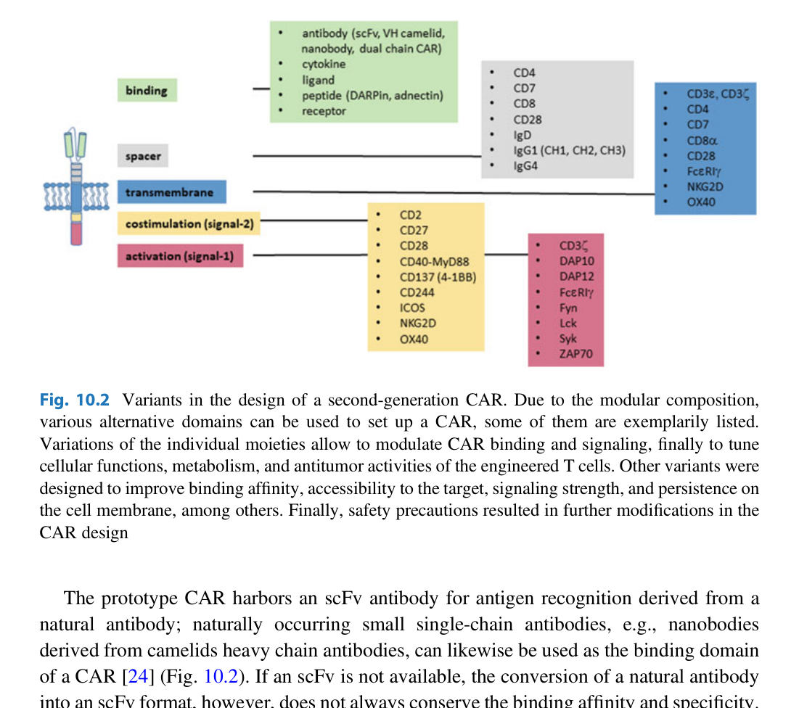
원형 CAR는 천연 항체 유래 scFv를 항원 인식에 사용한다. 낙타과(camelid) 중쇄 항체 유래 나노바디(nanobody)와 같은 천연 소형 단일사슬 항체도 CAR의 결합 도메인으로 사용될 수 있다. 다만 scFv가 없을 때 천연 항체를 scFv 형태로 전환한다고 해서 항상 결합 친화도와 특이성이 보존되는 것은 아니다. 이를 극복하기 위한 대안 설계로, 면역글로불린(immunoglobulin, Ig) 중쇄를 막관통 및 세포내 CAR 도메인에 연결한 천연 항체 형태를 사용하고, 공동 발현된 Ig 경쇄가 중쇄와 자발적으로 회합하여 막관통 도메인으로 T 세포 표면에 고정된 완전 기능성 항체를 형성하게 하는 방식이 보고되었다. 이러한 면역글로불린 사슬 이종이량체, 이른바 이중사슬 CAR(dual chain CAR, dcCAR)는 중쇄와 경쇄의 천연 항체 가변영역을 통해 동족항원에 결합하며, scFv 항체가 없는 항원의 표적을 가능하게 한다.
항체의 대안으로 항체 유사 특이성을 갖는 재조합 결합 도메인을 CAR에 통합할 수 있다. 예컨대 디자인된 앙키린 반복 단백질(designed ankyrin repeat protein, DARPin)은 33개 아미노산 앙키린 반복으로 구성되어 β-턴(turn) 뒤에 두 개의 역평행 α-나선(helix)과 다음 반복의 β-턴에 닿는 루프(loop)를 형성한다. 개념 증명으로 Her2를 특이적으로 표적하는 DARPin CAR가 보고되었다. 섬유넥틴(fibronectin) 유래 결합 도메인을 갖는 애드넥틴(adnectin) CAR는 상피성장인자수용체(epithelial growth factor receptor, EGFR)를 높은 선택성으로 표적하도록 조작되었다.
그 밖의 결합 도메인도 CAR 맥락에서 사용 가능하다. 예컨대 사이토카인 수용체의 결합 모이어티, 사이토카인 또는 천연 리간드(ligand)이다. 제타카인(zetakine) CAR는 막관통 및 세포내 신호 도메인에 연결된 사이토카인을 갖는다. 예컨대 세포외 도메인에 변이 인터루킨(interleukin, IL)-13을 갖는 CAR는 IL-13 수용체-α2에 대한 결합능을 개선하여 정상 조직 대비 고형종양을 우선 표적한다. 리간드 기반 CAR의 예로 B 세포 성숙항원(B cell maturation antigen, BCMA)에 결합하는 증식유도리간드(A proliferation induced ligand, APRIL) 함유 CAR가 있다. FLT3 리간드를 갖는 CAR는 FLT3 양성(+) 급성골수성백혈병(acute myeloid leukemia, AML) 세포를 인식하고, 과립구 대식세포 집락자극인자(granulocyte macrophage-colony stimulating factor, GM-CSF)를 결합 도메인으로 갖는 CAR는 CD116 결합을 통해 연소성 골수단구성백혈병을 표적하며, 자연살해(Natural killer, NK) 세포 수용체 NKG2D를 갖는 CAR는 해당 리간드를 지닌 암세포를 표적한다.
10.2.2 스페이서 도메인
원형 CAR는 흔히 항원결합 도메인과 막관통 도메인 사이에 표적 항원에 대한 접근을 위한 ’스페이서’와 유연성을 제공하는 힌지(hinge) 영역을 갖는다. 스페이서의 유형과 길이는 최적 표적 결합과 신호 전달에 결정적이다. 스페이서가 필수적인 것은 아니어서, scFv를 막관통 도메인에 직접 융합해도 활성을 갖는 CAR가 있는 반면, 특정 길이의 스페이서가 있어야만 활성을 갖는 CAR도 있다. 스페이서는 전형적으로 IgG1 또는 IgG4 불변(constant) 도메인이나 세포외 CD28, CD4 또는 CD8 유래이다.
기본 개념은 조작된 T 세포와 동족 표적 세포 사이에 최적 거리를 제공하여 표적 세포에 대한 생산적 접촉 부위(contact zone) 형성을 허용하는 것이다. TCR-MHC 상호작용 지식에 근거하여, 일반적으로 접촉 부위의 최적 형성을 위해 T 세포와 표적 세포 사이에 약 15 nm의 거리를 만드는 CAR-표적 상호작용이 필요하다고 여겨진다. 따라서 막 근위부 에피토프를 표적할 때는 더 긴 스페이서가 필요하고, 보다 원위부 에피토프에는 더 작은 스페이서가 최적이며, 길이가 다른 스페이서를 사용하여 거리를 쉽게 조절할 수 있다. 이러한 맥락에서 IgG 유래 스페이서는 CH1-CH2-CH3 모이어티를 하나, 둘 또는 세 개 포함시켜 길이를 조절할 수 있다는 장점이 있다.
IgG1 유래 스페이서 도메인은 CAR 분자의 안정화를 촉진하지만, 골수세포의 Fc 감마 수용체(Fc γ receptor, FcγR)(CD64)에 결합하여 CAR T 세포와 골수세포 모두의 ‘종양 외(off-tumor)’ 활성화를 매개할 가능성이 있다. 이는 스페이서 내 IgG1 CH2 도메인을 결실시키거나 IgG1의 Fc 수용체 결합 모이어티 내 Asn297 당화(glycosylation) 부위를 결실시켜 방지할 수 있다. IgG4 스페이서에도 유사한 변형을 도입할 수 있다.
10.2.3 막관통 영역
전형적 CAR의 막관통 영역은 CD3ζ, CD4, CD8α, CD28 또는 OX40과 같은 1형(type-1) 막관통 단백질 유래이며, 류신(leucine), 이소류신(isoleucine), 발린(valine)이 풍부한 20~23개의 소수성(hydrophobic) 아미노산으로 구성된다. CD3ζ 막관통 도메인을 갖는 CAR는 다른 CAR보다 TCR/CD3 복합체에 더 효율적으로 통합되어 발현과 신호가 더 강건한 것으로 보이며, CD28 막관통 영역을 갖는 CAR도 유사하게 안정하다. 반면 CD8α 힌지와 막관통 도메인을 갖는 CAR는 AICD에 덜 취약하나, 전염증성 사이토카인 방출 감소로 나타나는 바와 같이 T 세포 활성화는 덜 매개한다.
10.2.4 세포내 신호 도메인
‘1세대’ CAR는 전적으로 일차 신호 도메인(signal-1)을 통해 신호한다. TCR/CD3ζ 세포내 사슬은 세 개의 면역수용체 티로신 활성화 모티프(immunoreceptor tyrosine activation motif, ITAM)를, FcεRI 감마 사슬은 하나의 ITAM을 가지며, 인산화 시 하위 신호 단백질에 대한 특이적 어댑터(adaptor)로 작용한다. 이를 통해 CAR는 내인성 TCR 신호 기전을 이용하여 T 세포 활성화 캐스케이드(cascade)를 개시한다. Lck나 Fyn과 같은 하위 키나아제(kinase)도 CAR 매개 T 세포 활성화의 일차 신호로 사용될 수 있다. CAR 신호 도메인 단독으로도 하위 키나아제와 회합하여 생산적 활성화 캐스케이드를 개시하기에 충분하며, CAR는 TCR 결손 세포나 NK 세포와 같은 비-T 세포에서도 기능한다. 그러나 일차 신호만을 갖는 CAR는 장기 지속을 허용할 만큼 충분히 활성화되지 못하고, 이러한 CAR T 세포는 빠르게 세포자멸사(apoptosis)에 들어간다.
‘2신호 가설(two signal hypothesis)’에 따르면 휴지기(resting) T 세포는 지속 활성화를 위해 공자극 신호가 추가로 필요하다. 이는 일차 신호와 CD28 또는 4-1BB(CD137)와 같은 공자극 신호(signal-2)를 결합한 ’2세대’ CAR의 근거이다. OX40, 유도성 공자극자(inducible costimulator, ICOS), CD27, CD40-MyD88, CD2, CD244와 같은 대안 공자극 도메인을 갖는 CAR도 전임상 및 임상에서 탐색되고 있다. 하위 키나아제의 접근성을 위해 CD28은 보통 막 근위부, CD3ζ는 원위부에 위치하며, OX40와 4-1BB는 막 원위부와 근위부 모두에서 활성이다. 1세대 CAR와 달리 2세대 CAR T 세포는 사이토카인 방출, 증폭, 항종양 활성에 있어 강건하고 지속적인 반응을 보인다.
CAR 매개 공자극은 T 세포 이펙터(effector) 기능, 생존, 지속성, 대사에 서로 다른 방식으로 영향을 미친다. 예컨대 4-1BB CAR T 세포는 환자 혈액에서 6개월 이상 지속된 반면, CD28 CAR T 세포는 3개월을 넘겨 검출되지 않는 경우가 대부분이었다. 반복 자극 후 CD28 CAR T 세포는 CD45RO+ CCR7 음성(-) 이펙터 기억 세포로 재프로그래밍되며, 지속을 연장하고 급속한 탈진을 피하기 위해 OX40를 필요로 한다. 4-1BB CAR T 세포는 주로 CD45RO+ CCR7 양성(+) 중앙기억(central memory) 세포로 전환하여 말초혈액에 장기 지속한다.
CD28 CAR 신호는 PI3K/Akt/mTOR 경로를 활성화하여 유산소 해당작용(aerobic glycolysis), 포도당 섭취와 ATP 생성을 자극하는 반면, 4-1BB CAR 신호는 Wnt/β-카테닌(catenin) 경로와 지방산 산화를 자극하여 이화작용(catabolism)과 미토콘드리아 호흡사슬 용량을 증가시킨다. 표준 Wnt/β-카테닌은 중앙기억 세포 형성과 T 세포 장기 생존을 촉진하고, CD28 유도 PI3K/Akt 신호는 이펙터 세포의 즉각 반응을 유지한다. 고용량에서는 CD28과 4-1BB CAR T 세포 모두 전임상 모델에서 큰 확립 종양을 박멸하나, 저용량에서는 CD28 CAR T 세포가 4-1BB CAR T 세포보다 더 큰 탈진을 보여, 4-1BB CAR T 세포가 장기적으로 큰 종양 부담을 더 효율적으로 박멸하였다. 반면 4-1BB CAR T 세포는 형질전환성장인자(transforming growth factor, TGF)-β를 통한 종양 매개 억제에 여전히 민감하며, CD28 CAR T 세포는 그 정도가 덜하다. 따라서 CAR 설계 선택 기준은 T 세포 지속성, 억제 저항성, 공자극·공동억제 리간드 양상, 종양세포 항원 밀도, T 세포상 CAR 밀도 등 다중 변수에 좌우된다.
‘3세대’ CAR는 일차 활성화 신호와 함께 두 개의 공자극 도메인을 결합한다. 결합 공자극의 이득은 말기 성숙이 진행된 T 세포에 이득을 주는 CD28-OX40 공자극과 같이 소수 사례에서만 입증되었다.
10.3 TRUCK: ‘4세대’ CAR T 세포
CAR T 세포는 미리 정의된 표적 조직에 ‘필요시(on demand)’ 형질전환 단백질을 전달하는 데 사용될 수 있다. 이를 위해 추가 ‘탑재체(payload)’에 대한 CAR 유도성 발현 카세트(cassette)로 조작된 CAR T 세포가 개발되었다. ’4세대’ CAR T 세포, 이른바 TRUCK은 표적 조직에 분비형 형질전환 단백질을 침착시켜 치료 유효 농도에 도달하도록 설계되었다. ‘탑재체’ 발현은 CAR 신호 시 활성화되는 NFAT6-IL-2 최소 프로모터(promoter)의 조절 하에 있으며, 탑재체는 형질전환유전자(transgene)가 암호화하는 단백질이나 펩타이드라면 무엇이든 될 수 있다. 이 전략은 리디렉션된 CAR T 세포 공격과 국소 침착된 생리활성 단백질의 작용을 결합하면서 전신 독성을 피하고자 할 때 특히 유용하다. 이러한 TRUCK은 CAR T 세포가 활성화된 상태로 유지되는 동안 형질전환 산물을 침착하는데, 예컨대 형질전환 면역조절자로서 IL-12나 IL-18을 전신 독성 없이 표적 종양 환경을 특이적으로 조성한다.
축적된 TRUCK 유래 IL-12는 CAR 표적 종양 조직에 NK 세포와 대식세포(macrophage)와 같은 선천면역세포를 동원하고, 이는 다시 이차 항종양 면역반응을 개시한다. IL-12 TRUCK은 조절 T(regulatory T, Treg) 세포에 의한 억제에 저항하였고 사이토카인 방출과 증폭이 증가하였다. 이 전략은 CAR T 세포에 보이지 않는 항원 소실 암세포가 빠르게 축적되어 종양 재발을 일으키는 진행성 종양에서 특히 유용하다. IL-18을 전달하는 TRUCK은 CAR T 세포를 T-bet 고(high) FoxO1 저(low) 이펙터 세포로 전환시켜 탈진에 저항하고 큰 확립 종양에 대한 우수한 세포용해 활성을 보였다. IL-18 CAR T 세포 치료는 전체 종양 면역세포 지형을 변화시켰는데, 특히 CD206 음성 M1 대식세포와 NKG2D+ NK 세포 수를 증가시키고 Treg, 억제성 CD103+ 수지상세포(dendritic cell, DC), M2 대식세포와 같은 억제세포를 감소시켰다. 다른 예로 T 세포를 산화 스트레스 매개 억제로부터 보호하기 위해 카탈라아제(catalase)를 방출하는 TRUCK, 종양 기질(stroma) 통과 T 세포 침투를 개선하기 위해 헤파라나아제(heparanase)를 방출하는 TRUCK이 있다.
4-1BB 리간드를 생산하는 이른바 ‘장갑(armored) CAR’는 4-1BB 경로 자극을 통한 공자극 증가를 제공한다. Toll 유사 수용체(Toll-like receptor, TLR) 리간드를 분비하도록 조작된 T 세포는 T 세포와 항원제시세포의 TLR 경로를 자극하여 광범위한 항종양 공격을 위한 다수 T 세포 군을 활성화할 수 있다. 뮤신(mucin)-16(CA-125)의 막 잔류 잔기인 Muc16ecto를 표적하고 IL-12를 분비하는 CAR T 세포는 임상시험에서 평가되고 있다. IL-15 TRUCK 세포는 증폭과 항종양 활성이 개선되었으나, 백혈병 유발 가능성으로 인해 통제되지 않는 증폭에 대비한 자살 유전자(suicide gene)를 필요로 한다. CAR와 함께 IL-7 수용체-α 사슬을 공동 발현하도록 조작된 ’장갑’ CAR는 IL-7에 대한 반응성을 회복시키고 Th1 반응을 촉진하였다. 유사하게 IL-4 수준이 증가된 전립선암에서 IL-4 결합/IL-7 신호 수용체를 공동 발현하면 항-PSCA CAR T 세포의 항종양 활성이 개선되었다. 반면 CAR T 세포에 공동 발현된 우성음성(dominant-negative) TGF-β DNRII 수용체는 흑색종 모델에서 TGF-β 존재 하에 T 세포 항종양 활성을 개선하기 위해 TGF-β와 경쟁할 수 있다. 사이토카인이나 사이토카인 수용체 제공을 넘어, 종양 혈관계를 표적하여 종양 침투를 유지하는 가용성 HVEM 세포외도메인 전달과 같은 응용도 구상할 수 있다.
10.4 이중 특이성을 갖는 CAR T 세포, 조합 항원 인식, 조건부 CAR
원형 CAR는 하나의 scFv로 하나의 항원을 향해 특이성을 리디렉션한다. 다중 특이성을 갖는 CAR가 요구되는 이유는 여러 가지이다. (1) 종양 병변이 표적 가능 항원에 대해 이질적이거나 종양 진행 중 항원을 소실할 수 있고, (2) 암세포와 종양 기질 또는 혈관계의 동시 표적이 치료 효능 증가에 유익하거나 필요할 수 있다. 두 가지 이상의 CAR T 세포 제품을 암 환자에게 적용하는 것은 기본적으로 가능하나, 우수제조관리기준(Good manufacturing practice, GMP) 하에 두 세포 제품을 제조해야 한다. 예컨대 CD19와 CD22 CAR T 세포의 순차 주입이 불응성 B-ALL 치료 시험에서 평가되고 있다.
대안으로 T 세포를 두 개의 CAR로 조작하는데, 이른바 이중시스트론성(bicistronic) CAR는 각기 다른 항원을 표적하는 두 개의 전장 CAR를 발현한다. 이중 특이성을 갖는 CAR는 두 scFv를 유연 링커로 서로 연결하여 조작한다. 탠덤(tandem)으로 배열된 이중특이성 CAR(‘탠덤-CAR(Tan-CAR)’) 또는 루프(loop) 구조의 CAR)는 두 개의 서로 다른 항원을 표적하고 어느 항원 결합 시에도 T 세포 활성화를 제공할 수 있어(‘OR’ 게이팅(gating)), 동족항원 중 하나를 가진 표적 세포도 여전히 인식한다. 연결된 두 scFv 외에도 당뇨체(diabody), 2-in-1 항체, 이중 가변 도메인 항체도 두 특이성을 갖는 CAR 조작에 사용될 수 있다. 일가 및/또는 다중특이성 CAR 작제물의 조합을 갖는 삼중특이성 CAR는 세 항원을 표적하여 표적 특이성을 더욱 확장한다.
한 예로 항-CD20과 항-CD19 scFv를 연결한 이중특이성 CAR는 CD19 CAR T 세포 치료 시 흔히 발생하는 B 세포 백혈병/림프종 재발을 완화하도록 설계되었다. CD19 음성 CD20 양성 백혈병 세포에 의한 재발을 CD20-CD19 이중특이성 CAR T 세포로 제어하는 것을 목표로 한다. 이중특이성 CAR 내 scFv 순서는 특정 항원 내 표적 에피토프의 공간적 접근성에 좌우된다. CD20-CD19 CAR는 CD19와 CD20 모두에 동등하게 결합하여 T 세포 활성화를 리디렉션하는 반면, CD19-CD20 CAR는 효율이 훨씬 낮다. 다른 이중특이성 CAR 예로 B-ALL 치료를 위한 CD19와 CD123 동시 표적, CD19와 CD22, ROR1, 면역글로불린 카파 경쇄(immunoglobulin kappa light chain, Igκ)의 동시 표적이 있다. 다중특이성 CAR T 세포는 현재 초기 임상시험에서 평가 중이며, 핵심 임상 결과만 요약하면 CD19/CD22 이중 표적 제제가 고위험·재발 B-ALL과 B 세포 림프종에서 평가되고 있고, BCMA상의 두 에피토프를 표적하는 이중특이성 CAR도 다발골수종 2상에서 평가되고 있다.
두 항원에 결합할 때 이중특이성 CAR는 단일특이성 CAR보다 높은 결합력(avidity)으로 표적 세포에 결합하는데, 이는 이상적으로 시냅스(synapse)를 안정화하고 낮은 항원 수준의 표적 세포에 대한 T 세포 반응을 개선한다. 이를 이용하여 두 항원을 모두 발현하는 세포에 대해서만 CAR T 세포를 리디렉션할 수 있다. 이러한 항원 패턴의 ‘AND’ 게이팅은 정상세포를 보존하면서 암세포에 대한 표적 선택성을 개선하는 것을 목표로 한다. 두 개의 공동 발현 항원은 두 개의 공동 발현 CAR로 인식되며, 각 CAR는 특정 항원을 인식하고 일차 신호 또는 공자극 신호를 각각 제공한다. 따라서 두 항원의 동시 결합만이 완전 T 세포 활성화에 필요한 두 신호를 제공하며, 하나의 항원 결합만으로는 불충분하다. 조합 항원 인식의 예로 CD3ζ CAR로 ErbB2를, CD28 CAR로 Muc1을 표적하거나, CD3ζ CAR로 메소텔린(mesothelin)을, CD28 CAR로 엽산 수용체-α를 표적하는 경우가 있다. CD13과 TIM3을 표적하는 이중특이성 및 분리형(split) CAR T 세포는 전임상 모델에서 골수·말초 골수세포에 대한 독성 감소와 함께 환자 유래 급성골수성백혈병 세포를 박멸하였다.
일차 신호와 공자극 신호의 두 CAR 조합은 두 폴리펩타이드 사슬의 이종이량체화(heterodimerization)로 강제할 수 있다. 한 사슬은 세포외·막관통과 일차 신호 모이어티로 구성되고, 두 번째 사슬은 공자극 신호 모이어티를 제공하며 ‘이량체화제(dimerizer)’ 첨가로 첫 번째 사슬에 연결된다. CAR는 이량체화제가 이종이량체화와 기능성 CAR 형성을 허용할 때까지 침묵 상태를 유지한다. T 세포 활성은 이량체화제 용량 적정으로 미세 조정할 수 있으며, 중단 시 CAR 신호가 종료된다. 각 CAR 신호 단독으로는 T 세포 활성화를 구동하기에 불충분할 때만 명확한 ‘온-오프(on-off)’ 활성화가 달성된다. 사전 활성화된 T 세포에서 CD3ζ 신호가 T 세포 반응을 재유도할 수 있으므로, 균형 잡힌 활성화 역치를 위해 신호 둔화(detuning)나 결합 친화도 감소가 필요하다.
조절 가능한 CAR의 대안 전략은 합성 Notch(synthetic Notch, synNotch) 수용체에 기반한다. Notch는 세포외 수용체, 막관통 도메인, 활성화 시 내부 도메인의 단백질 분해를 매개하여 세포내 전사 조절자를 방출하는 세포내 전사 조절자로 구성된다. 이 특성을 이용해 Notch 수용체와 다른 특이성을 갖는 정통 CAR의 전사를 제어한다. 장점은 Notch 수용체에 의한 항원 인식이 논리 ‘AND’ 게이팅에 기반하고 공간적으로 정의된 방식으로 CAR T 세포 기능을 제어한다는 점이다. CD19 결합 시 CD19 특이적 synNotch 수용체는 전사 이펙터 도메인 Gal4-VP64 또는 TetR-VP64를 방출하여 항-메소텔린 CAR의 발현을 유도한다. T 세포는 표적 조직에서 synNotch 리간드와 CAR 리간드가 모두 인식될 때만 활성화된다. 다른 예로 CAR로 ROR1을, Notch 수용체로 EpCAM 또는 B7-H3을 표적한다. CAR에 대한 ’온-스위치(on-switch)’가 암세포 표적 선택성을 결정하지만, 충분한 CAR 발현 유도에 필요한 시간과 Notch 신호 중단 시 CAR 감쇠(decay)로 인해 전략이 제한될 수 있다.
조작된 T 세포의 TCR 특이성도 보다 복잡한 인식 양상을 제공하는 데 사용될 수 있다. γδ TCR을 갖는 T 세포는 대사 조절 이상 종양세포 특유의 포스포항원(phospho-antigen)을 인식한다. 공자극 도메인을 갖는 GD2 특이적 CAR의 형질전환 발현은 γδ TCR과 CAR가 모두 동족항원에 결합할 때만 완전 T 세포 활성화를 제공하므로, γδ TCR 활성화가 없는 GD2 양성 정상세포는 공격받지 않는다.
표적 가능 항원 중 다수는 정상세포와 암세포 모두에서 발현되나, 일부 항원은 정상세포에서만 발현되고 암세포에서는 발현이 결여된다. 이 경우 공통 항원 ‘A’에 결합하되 정상세포상의 항원 ’B’에 결합할 때 차단된다면, 정상세포에 대한 CAR T 세포 활성화를 방지할 수 있다. 면역수용체 티로신 기반 억제 모티프(immunoreceptor tyrosine-based inhibitory motif, ITIM)를 갖는 억제 CAR는 동족항원 ’B’에 결합하는 동안 활성화 CAR를 통한 신호를 방지한다. 항원 ’B’가 결여된 ’A’ 암세포에 결합하면 억제 CAR를 통한 신호가 없어 CAR T 세포 활성화가 허용된다(‘A-not-B’ 게이팅).
10.5 다중 항원 특이성이 이식된 범용 CAR
현재 원형 CAR는 하나의 정의된 항원 특이성을 가지며, 특이성을 변경하려면 새로운 CAR로 T 세포를 조작해야 한다. 이러한 상황에서 암 특이성을 제공하는 항체를 인식하는 하나의 ‘범용’ CAR가 개발되었다. 예컨대 항암 항체의 면역글로불린 Fc 영역을 결합 도메인으로 CD16을 갖는 CAR가 결합한다. CD16 CAR T 세포는 항암 항체에 결합하여 암세포 특이성을 획득한다. 대안으로 CAR는 암 표적 항체에 연결된 단백질 에피토프에 결합한다. 플루오레세인 이소티오시아네이트(fluorescein isothiocyanate, FITC) 특이적 CAR를 갖는 T 세포는 엽산 수용체 양성 암세포에 결합하는 FITC 표지 엽산을 인식한다. 가교 항체에 연결된 아비딘(avidin)과 같은 다른 에피토프도 구상할 수 있다. 서로 다른 특이성의 항체를 동시에 첨가하면 새로운 CAR T 세포 제조 없이 동일한 CAR T 세포 제품(‘UniCAR’)을 다수 항원으로 리디렉션할 수 있다.
이 전략의 장점은 하나의 제조 CAR T 세포 제품만을 적용하면서 광범위한 항원 군을 표적하기 위해 서로 다른 항체를 동시에 사용할 수 있다는 점이다. 실제 특이성은 치료 충분 농도의 적용 항체 혼합으로 정의된다. 적용 항체의 짧은 반감기로 인해 예기치 않은 이상반응도 항체 중단 시 단기간에 제한된다. 기전적으로 효율적 종양 제어를 위해서는 CAR T 세포와 연결 항체 모두 종양 병소에 침투해야 하며, 진행 고형종양에서 이것이 가능할지는 아직 불분명하다. 또한 이러한 ‘범용’ CAR T 세포로 장기 암 제어에 필요하다고 여겨지는 암 항원에 대한 지속 면역기억이 확립될 수 있는지도 미해결이다.
10.6 억제를 활성화 신호로 전환하는 스위치 CAR
리디렉션된 T 세포 공격은 종양 병소에서 다양한 수단으로 흔히 억제된다. 프로그램 세포사멸 리간드(programmed cell death ligand, PD-L)-1과 PD-L2와 같은 억제 리간드는 활성화 T 세포가 발현하는 프로그램 세포사멸-1(programmed cell death-1, PD-1)에 결합한다. 이러한 억제 리간드에 결합하되 조작된 T 세포에 활성화 신호를 전달하는 CAR는 억제 수용체와의 결합 경쟁뿐 아니라 활성화 신호 제공으로 억제를 극복할 것이다. 이상적으로 PD-L1:CD28 ‘스위치’ CAR는 조작된 T 세포에서 PD-1 매개 억제 신호를 압도한다. 특히 PD-L1에 결합하는 PD-1 세포외 도메인과 활성화를 위한 CD28 세포내 신호를 갖는 CAR는 억제를 활성화 신호로 전환하여 ERK 인산화 증가, 전염증성 사이토카인 방출, T 세포 증폭, 표적 세포 용해를 초래한다. TIGIT(T cell immunoreceptor with Ig and ITIM domains) 세포외도메인과 CD28 공자극 도메인으로 구성된 키메라 수용체는 TIGIT 리간드 CD155 결합 시 T 세포 기능을 증강한다. 종양 조직이 제공하는 억제 신호가 무수하므로, 생산적 T 세포 반응 유지를 위해 극복해야 할 ‘핵심’ 억제자를 식별하는 일은 여전히 어렵다.
10.7 억제 CAR: iCAR
원형 CAR가 조작된 T 세포에 활성화 신호를 전달하는 반면, 억제 신호를 갖는 CAR는 정상세포 결합 시 CAR T 세포 활성화를 억제하도록 설계되었다. 이상적으로 억제 CAR는 정상 조직 대면 시 활성화 CAR 신호를 압도하여 종양 외 독성을 완화한다. 정상세포를 인식하는 우성 억제 신호를 갖는 CAR를 종양 특이적 활성화 CAR와 함께 공동 발현함으로써, CAR T 세포는 암세포 결합 시에만 활성화되고 억제 CAR가 정상세포에 결합하지 않을 때 활성화된다. 이러한 억제 CAR는 PD-1 또는 세포독성 T 림프구 관련 항원-4(cytotoxic T lymphocyte-associated antigen-4, CTLA-4) 신호를 제공하고 암 특이적 CAR에 의한 활성화 신호를 압도한다.
10.8 동종 CAR T 세포와 CAR NK 세포
지금까지 CAR T 세포 치료는 환자 자가 T 세포를 체외 제조하는 개별화 치료이다. 이는 노동집약적·고비용·시간소모적일 뿐 아니라, 진행 질환 환자가 CAR 조작을 위한 충분한 수나 활성의 T 세포를 제공할 수 없을 때 적용이 불가능한 경우가 많다. 이 상황에서 동종 ‘기성품(off-the-shelf)’ CAR T 세포는 광범위한 환자 코호트에 유익할 것이다. 이식편대숙주병(graft-versus-host disease, GvHD)을 피하기 위해 내인성 αβ TCR과 HLA 분자를 결실시켜야 하며, 이는 징크핑거 뉴클레아제(zinc finger nuclease, ZFN)나 CRISPR/Cas 기술로 달성할 수 있다. 잔류 TCRαβ T 세포의 후속 제거는 오염 동종 TCR 양성 세포를 통한 GvHD 위험을 감소시킨다. TCRα와 CD52 유전자좌(locus)에 전사활성화자 유사 이펙터 뉴클레아제(transcription activator-like effector nuclease, TALEN) 기술로 유전자 편집된 T 세포는 자가 CAR T 세포를 생산할 수 없었던 소아 CD19 양성 급성림프모구백혈병(acute lymphoblastic leukemia, ALL) 환자 치료에 사용되었다. 환자의 악성 B 세포에 존재하는 CD52는 주입된 CD52 음성 CAR T 세포를 보존하면서 악성 림프구를 제거하기 위해 CAR T 세포에서 결실되어야 했다. 동종 CAR T 세포 조작을 위해 CRISPR 가이드 RNA와 Cas9는 현재 바이러스 벡터(vector)로 구성적 발현을 위해 암호화되나, 표적 외(off-target) 편집 최소화를 위해 지속 벡터 없이 유전자 편집 도구를 일시 제공하는 방향으로 연구가 진행 중이다. 다발골수종(multiple myeloma) 치료를 위한 BCMA 표적 동종 CAR T 세포는 BCMA CAR로 조작되고 TCR 매개 면역반응 제한을 위한 유전자 편집 기술로 변형되었다. 동종 BCMA CAR T 세포의 안전성 프로파일(profile)은 리툭시맙(rituximab)을 통한 CAR T 제거를 가능하게 하는 CD20 미모토프(mimotope)를 세포외 CAR 도메인에 통합하여 확보하였다.
동종 이펙터 세포 활용과 관련하여, NK 세포도 세포용해 잠재력과 전염증성 사이토카인 분비로 생산적 항종양 반응을 유도할 수 있어 사용될 수 있다. 암 양입양 세포치료에 NK 세포를 사용하는 강력한 생물학적 근거가 있다. NK 세포는 외래, 감염 또는 악성 세포 인식을 위한 방대한 억제·활성화 수용체 레퍼토리(repertoire)를 보이며, 두 신호의 균형이 최종적으로 세포독성 CD56dim NK 세포에 의한 표적 세포 살상을 위한 세포용해 과립 방출을 유도하거나 차단한다. 활성화·억제 수용체 레퍼토리에 기반한 광범위한 NK 세포 아집단 다양성이 존재할 가능성이 있으나, CAR로 NK 세포를 조작하면 특정 암세포에 대한 미리 정의된 특이성을 제공할 수 있다. CD28-CD3ζ 신호를 갖는 원형 CAR도 NK 세포에서 활성이다. NK 세포 2DS2와 DAP12 신호 단백질을 갖는 CAR는 더 강력한 항종양 활성을 보였다. NK 세포용 CAR는 흔히 활성화용으로 DAP10이나 DAP12를 단독 또는 CD3ζ와 함께 갖는다. 결합자로 NKG2D를, 활성화용으로 DAP10-CD3ζ를 갖는 CAR는 마우스 모델에서 원발 NK 세포를 골육종에 대해 효율적으로 활성화하였다. NK 세포에서 활성화 도메인으로 CD3ζ가 DAP10보다 우수하였다는 보고가 있는 반면, DAP12가 CD3ζ보다 우수하였다는 보고도 있다.
CAR 리디렉션 NK 세포의 이득은 미리 정의된 표적 특이성과 ‘기성품’ 제조를 가능하게 하는 동종 세포 제품으로서의 잠재력이다. 확립 NK 세포주 NK92는 활성화 NKp30, NKp46, NKG2D 수용체와 ILT-2, NKG2A, KIR2DL4를 낮은 수준으로 포함하는 제한된 억제 레퍼토리를 나타내며, 항원 특이적 표적을 위해 CAR로 조작된다. NK92는 다수의 유전적 이상을 지니고 엡스타인-바 바이러스(Epstein-Barr virus, EBV)를 보유하며 환자 투여 시 영구 생착 위험이 있어, 환자 적용 전 조사(irradiation)가 필요하므로 지속성이 짧고 순환에서 신속히 소실되며 장기 기억이 없어 다회 투여를 필요로 한다. 그러나 CAR NK92 세포는 교모세포종(glioblastoma) 이종이식 모델과 동소성 유방암 모델에서 국소 설치 시 효능을 보였다. CAR NK92의 치료 효능은 현재 Her2 양성 교모세포종, ROBO1 양성 췌장암과 고형종양, BCMA 양성 다발골수종 치료에서 평가되고 있다. 항-CD19 CAR 조작 제대혈 NK 세포는 B 세포 악성종양 치료에서, 항-NKG2D CAR 조작 말초혈액 NK 세포는 전이성 암종 치료에서 탐색되고 있다.
10.9 임상 적용을 위한 CAR T 세포 제조
임상 적용을 위해 CAR T 세포 제품은 GMP 규정에 따라 의도된 수혜 환자의 자가 T 세포로부터 제조된다. 대부분의 경우 백혈구성분채집술(leukapheresis)로 혈액을 채취하고, T 세포를 분리하여 바이러스 감염이나 전기천공(electroporation)으로 유전자 조작한 뒤 임상 관련 수까지 증폭한다. 대부분 임상시험은 감마-레트로바이러스 또는 렌티바이러스 유전자 전달로 변형된 T 세포를 사용한다. 슬리핑 뷰티(Sleeping Beauty)와 피기백(PiggyBac)과 같은 트랜스포존(transposon) 기반 벡터는 비용·시간 집약적 바이러스 생산을 피할 수 있다는 이점으로 임상 적용에 점차 적용되고 있다. 바이러스 및 트랜스포존 매개 유전자 전달 절차는 CAR 발현을 위한 환자 T 세포의 영구 변형을 목표로 하며, 일부 시험은 일시적 CAR 발현을 위해 RNA 전기천공으로 변형된 T 세포를 사용한다.
영구 유전자 변형 시 삽입 돌연변이(insertional mutagenesis)와 그에 따른 성숙 T 세포의 종양성 형질전환 위험은 낮은 것으로 보이며, 이 맥락에서 종양성 사건은 지금까지 보고되지 않았다. 한 가지 주의점은 렌티바이러스 전달 시 CAR 유전자가 Tet2 유전자좌에 삽입되어 T 세포의 클론성(clonal) 증폭을 일으켰으나 자발적으로 수축되었다는 관찰이다. 그러나 성분채집 제품에 오염된 악성세포가 우연히 CAR로 변형되어 환자 재주입 후 CAR 매개 종양 촉진 위험이 있다.
유전자 변형 후 CAR T 세포는 임상 관련 세포 수까지 사이토카인 존재 하에 체외에서 광범위하게 증폭된다. 수동 처리 진탕 반응기나 백(bag)뿐 아니라 완전 자동화 감독 처리 장치도 현재 사용된다. 자동화 목표는 높은 재현성과 품질로 제조하고, 병렬로 증가하는 환자 수로부터 세포를 생산하며 정맥-대-정맥(vein-to-vein) 시간을 단축하는 것이다.
CAR 치료에 가장 적합한 T 세포군은 급성 염증 시그니처(signature)를 갖는 나이브(naïve) 또는 초기 중앙기억 세포로 여겨진다. IL-2 존재 하 CAR T 세포 증폭은 이펙터 T 세포를 우선 촉발하는 반면, IL-7 또는 IL-2와 IL-15 병용은 사이토카인 방출과 항종양 활성의 지속 능력을 갖는 중앙기억 T 세포를 증폭한다. IL-21 첨가는 CAR T 세포를 덜 분화된 상태로 유지한다. 자극 방식은 증폭 CAR T 세포 수율뿐 아니라 대사 중독(metabolic addiction)도 결정한다. IL-15는 산화 대사와 지방산 산화의 속도제한 단계인 카르니틴 팔미토일트랜스퍼라아제를 증가시킨다. IL-7은 STAT5와 Akt 활성화로 Glut1을 증가시키고 글리세롤 수송과 트리글리세리드 합성을 유도하여 T 세포 지속성과 생존을 개선한다. 체외 증폭 중 Akt 억제는 높은 지방산 산화를 갖는 중앙기억 표현형을 촉발하여 최종적으로 CAR T 세포 항종양 활성을 개선한다. CD45RO+ CD62L+ 기억 CAR T 세포는 분화가 더 진행된 이펙터 T 세포보다 내구성 있는 항종양 반응을 제공하므로, CD62L 농축 CAR T 세포가 추가 탐색에 매력적이다. 따라서 중앙기억 CAR T 세포가 임상 적용에서 우수한 것으로 보이며, 반응 환자는 초기 기억·탈진 시그니처를 갖는 T 세포를 축적하지 않은 반면 무반응 환자는 그러하였다. 최종 제품 내 조작 세포 생존율도 치료 효능에 영향을 미칠 가능성이 있다. 그러나 제조 세포 제품 생존율에 기반한 CAR T 세포 치료 결과의 첫 후향 분석은 70~80% 생존율 제품을 받은 환자와 80% 이상 생존율 제품을 받은 환자 간 CD19 CAR T 세포 증폭이나 환자 생존에 차이가 없다는 것을 시사한다.
T 세포 제품 제조는 개인맞춤 접근이며 현 절차는 몇 가지 중대한 한계가 있다. 첫째, 다수 암 환자가 림프구감소증(lymphopenia)이거나 나이브 T 세포 수가 적어, 소아 환자 생산 경험처럼 생산 지연이나 실패가 발생한다. 둘째, 제조 공정이 시간소모적이어서 급성 또는 진행기 질환 환자에게 불리하다. 셋째, 환자 T 세포가 만성림프구백혈병(chronic lymphocytic leukemia, CLL)이나 일부 고형종양에서 보고된 바와 같이 질환으로 기능부전일 수 있어 반응률이 낮은 제품을 초래한다.
일부 상황에서 동종 T 세포 조작이 대안 전략일 수 있다. 조혈모세포 이식을 받는 환자에서는 이식편 유래 동종 T 세포로 CAR T 세포 제품을 제조하였다. 이러한 동종 CD19 특이적 CAR T 세포는 부분·완전 관해를 유도하였으나, 일부 환자에서 GvHD가 발생하였다. 바이러스 항원 특이적 부분 HLA 일치 공여자 T 세포는 동종반응성이 없고 CAR 조작 시 항-림프종 활성을 보였다. MHC 비의존 활성을 갖는 NK 세포도 CAR 조작을 위한 제3자 공여자 세포 공급원이나, 환자에서 지속 능력이 낮다.
10.10 혈액 악성종양에서 지속 관해를 유도하는 CAR T 세포 양입양 치료
양입양 이식 CAR T 세포의 치료 효능은 CAR 설계, CAR 신호, 결합 친화도, 표적 세포상 항원 수, 표적 항원 에피토프의 공간적 접근성, T 세포 성숙 단계, CAR T 세포 지속성과 증폭, 환자 면역계의 전처치(pre-conditioning) 등 다중 변수에 좌우된다. 현재 특정 질환에 대한 조건 최적화가 진행 중이며, 일부 치료 요법은 악성 질환, 특히 B 세포 백혈병/림프종 CAR T 세포 치료에서 성공이 입증되었다. 소수 시험만이 고형암 치료를 목표로 한다.
지금까지 불응성이었던 B 세포 백혈병·림프종 치료에서 ‘2세대’ 항-CD19 CAR T 세포를 이용한 초기 임상시험은 완전하고 지속적인 관해를 달성하였다. ‘1세대’ CAR T 세포 치료는 순환으로부터 CAR T 세포의 신속한 제거로 대부분 실패하였다. 현재 약 600건의 CAR T 세포 이용 초기 임상시험이 임상 탐색 중이며, 대부분 학술 센터에서 수행된다(2020년 초 기준 중국, 미국, 유럽 순). 소아 B-ALL 치료용 CD19 CAR T 세포(킴리아(Kymriah™, 티사젠렉류셀(tisagenlecleucel)))와 성인 거대 B 세포 림프종 치료용(예스카타(Yescarta™, 악시캅타진 실로류셀(axicabtagene ciloleucel)))은 FDA와 EMA 승인을 획득하였으며, 후속 제품이 곧 승인될 예정이다.
CAR T 세포 치료의 표준 절차는 환자 백혈구성분채집, T 세포 분리, 해당 CAR로의 체외 유전자 조작, CAR T 세포 증폭, 비골수파괴적 림프구제거와 IL-2 지원 후 정맥 주입으로 최종 세포 제품을 환자에게 재투여하는 것으로 시작한다. CAR T 세포 지속성이 임상 효능에 crucial하므로, 현재 시험에서는 하나 또는 두 개의 공자극 세포내도메인(endodomain)을 갖는 CAR가 사용되며, 대부분 CD28 또는 4-1BB 공자극을 제공한다. 지속성 측면에서 4-1BB 공자극 CAR T 세포가 CD28 CAR T 세포보다 우수한 것으로 보이며, 순환에서 수년간 지속되는 반면 CD28 CAR T 세포는 수십 일간 지속된다. CD19 CAR T 세포가 정상과 악성 B 세포를 구별하지 못하므로, 환자는 CD19 CAR T 세포가 지속되는 동안 지속 B 세포 고갈을 경험한다. B 세포 고갈은 임상적으로 관리 가능하나, 악성 B 세포 표적의 선택성 향상을 요구한다. 최근 Fcμ(IgM) 수용체가 만성림프구백혈병 치료에서 표적 발현 수준이 낮아 대부분 정상 B 세포를 보존하는 잠재적 종양 선택 표적으로 확인되었다. 대안 표적도 탐색 중이다.
관해 중 대부분 4-1BB CAR T 세포 치료 백혈병/림프종 환자는 추가 암 특이적 치료를 받지 않았으며, CD28 CAR 치료 환자는 동종 줄기세포 이식을 자주 받았는데, 이는 CD28 CAR T 세포 지속성이 짧기 때문에 유익한 것으로 보인다. 장기적으로 더 성공적인 전략 식별을 위해 추가 탐색이 필요하다. 지금까지 미만성 거대 B 세포 림프종(diffuse large B cell lymphoma, DLBCL), CLL, B 세포 급성림프모구백혈병(B cell-acute lymphocytic leukemia, B-ALL), 여포성 림프종 환자가 CD19 CAR T 세포로 성공 치료되었다. 주목할 점은 다발골수종 환자가 유세포분석상 CD19 저발현 또는 음성 골수종 세포에도 불구하고 CD19 CAR T 세포 치료 후 관해를 경험하였다는 점이다. CD20, CD22, Igκ 경쇄, ROR-1, CD30을 포함한 대안 항원도 B 세포 악성종양 치료를 위해 표적되고 있다.
CAR T 세포 치료 성공은 시험 설계, CAR 구성, 표적 항원, 전처치 등에 대한 표준화 부재로 여러 시험 간 비교가 어렵다. 그러나 CAR T 세포 용량과 림프구제거 정도 또는 요법이 광범위 T 세포 증폭, 지속성, 최종 치료 효능에 crucial함이 점차 명확해진다. 적용 후 CAR T 세포의 반복 재자극은 장기 지속성과 항종양 효능을 개선할 가능성이 있다. 이는 CAR 조작을 위해 바이러스 특이적 T 세포를 사용하는 근거이며, 바이러스 항원 접촉 시 TCR을 통해 반복 재자극된다. 예컨대 EBV 특이적 T 세포를 CAR로 조작하고 EBV 감염 세포로 증폭을 촉발하였다. 실제로 EBV 특이적 CAR T 세포는 바이러스 특이성이 없는 CAR T 세포보다 우수한 성능을 보였다.
10.11 고형암 치료에서 CAR T 세포의 과제
혈액 악성종양 치료가 점차 성공적인 반면, 고형암 치료는 여전히 어렵다. ’살아있는 약물(living drug)’로서 CAR T 세포는 T 세포 고유의 이동·조직 침투 능력, 혈액뇌장벽 통과, 면역특권 조직을 포함한 사실상 모든 조직 축적 능력으로 고형암 치료, 특히 (미세)전이 제거에 기본적으로 이상적이다. 그러나 대부분 고형종양은 CAR T 세포 이동(trafficking), 침투, 활성화를 매우 효율적으로 방해하는 다수의 전략을 갖는다. 그중 변형된 케모카인(chemokine) 환경은 종양으로의 CAR T 세포 이동을 손상시키고, 종양 내피의 일부 접착인자 소실은 T 세포 침투를 방해한다. 후자는 혈관세포접착단백질-1과 세포내접착분자-2와 같은 혈관 접착 분자를 증가시키는 종양괴사인자(tumor necrosis factor, TNF)-α의 국소 침착으로 대응할 수 있다. 혈관내피성장인자(vascular endothelial growth factor, VEGF) 수용체-2 표적이나 엔도텔린(endothelin)-B 수용체와 같은 이동 억제 인자 차단도 내피세포 접착·경내피 이동을 개선한다. T 세포에서 하향조절된 케모카인 수용체를 흑색종 표적을 위한 CXCR2(CXCL1 수용체)나 신경모세포종 표적을 위한 CCR2b와 같이 재발현시켰다.
이동 장벽을 피하기 위해 CAR T 세포를 종양내 직접 설치하거나, 중피종과 난소암 치료를 위해 각각 흉막내 또는 복강내 주사하였다. 항-CEA CAR T 세포는 간 전이에 내시경으로 적용되었고, 항-c-Met CAR T 세포는 유방암 전이에 주사되었다. 종양 병소에 도달한 CAR T 세포는 세포용해 공격 실행을 위해 암세포 근방에 도달하도록 기질세포와 세포외기질 장벽을 뚫어야 한다. 기질에서 형질전환 헤파라나아제에 의한 헤파란 황산 프로테오글리칸 분해는 T 세포 침투를 개선한다. 기질세포 제거와 큰 확립 종양 병변 박멸에는 고수준 인터페론(interferon, IFN)-γ가 필요하다. 세포외기질 리모델링에 관여하는 세린 단백질분해효소인 섬유아세포 활성화 단백질(fibroblast activation protein, FAP)에 특이적인 CAR T 세포로 기질세포를 직접 표적하면 전체 항종양 활성이 개선되었다.
종양 병소를 리디렉션된 CAR T 세포에 적대적으로 만드는 다수 과정이 T 세포를 탈진 상태나 세포자멸사로 전환시킨다. Treg 세포, 골수유래억제세포(myeloid-derived suppressor cell, MDSC), 종양 관련 M2 대식세포는 IL-4, IL-10, 백혈병억제인자(leukemia inhibitory factor, LIF), TGF-β와 같은 억제 사이토카인을 방출한다. MDSC와 대식세포는 종양내 트립토판 수준을 감소시키고, 기질세포는 인돌아민 2,3-디옥시게나제(indoleamine 2,3-dioxygenase, IDO)와 키누레닌(kynurenine)을 방출하여 T 세포 이펙터 기능을 억제하고 조직의 포도당 등 영양분을 고갈시킨다. 심한 산성화도 CAR T 세포 항종양 활성에 대응한다. MDSC 방출 아르기나아제(arginase)로 인한 낮은 아르기닌 수준은 CD3ζ 발현과 TCR 신호를 억제한다.
따라서 악성 질환 치료를 위한 CAR T 세포 양입양은 여전히 어려우며 치료 성공을 위한 생물학적 과제를 안고 있다. CAR 구조나 치료 전략 변경으로 다룰 수 있는 과제 중 일부는 현재 탐색 중이다. MDSC와 Treg는 다중키나아제 억제제 수니티닙(sunitinib)으로 억제할 수 있고, 양입양 전 플루다라빈(fludarabine)과 사이클로포스파마이드(cyclophosphamide)를 이용한 전처치는 Treg 세포를 고갈시킨다. 프로스타글란딘(prostaglandin) E2 캐스케이드의 단백질 키나아제 A(protein kinase A, PKA) 고정(anchoring) 파괴는 IDO 감소의 핵심 분자로 CAR T 세포 침투, 지속성, 항종양 활성을 증가시킨다. CAR T 세포는 PD-L1에 결합하여 활성화 신호를 제공하는 PD-1:CD28 스위치 수용체로 조작되었다. 항-PD-1, 항-CTLA-4와 같은 체크포인트(checkpoint) 차단제는 CAR T 세포 치료의 보조제로 탐색되고 있다.
10.12 CAR T 세포 치료와 관련된 독성
‘살아있는 약물’로서 CAR T 세포 치료는 일부 시험에서 극적 반응을 달성하였으나, 초기 적용 후 수일 심지어 수주 후에도 중환자실 중재를 필요로 하고 치명적일 수 있는 중증 부작용을 일으킬 수 있다. 대부분 독성은 CAR T 세포의 특이적 생물학에 기인하며, 다른 관련 독성은 아직 완전히 이해되지 않았다. 기전적으로 주요 독성은 (1) 대량 T 세포 활성화, 사이토카인 방출, 종양 용해에 따른 전신 독성과 (2) 정상 조직과의 CAR T 세포 상호작용에 따른 특이 독성(’표적항원 양성 종양 외(on-target off-tumor)’ 독성)이다.
10.12.1 전신 독성
사이토카인 방출 증후군(Cytokine release syndrome, CRS): 다수 CAR T 세포와 표적 세포의 결합은 IFN-γ와 TNF-α, IL-10, IL-6을 포함한 전염증성 사이토카인의 생리 수준을 초과하는 혈청 수준의 대량 방출을 초래하며, 이는 다른 면역세포의 교차 활성화와 독성 수준까지의 추가 사이토카인 방출로 이어진다. CRS로 요약되는 독성은 임상적으로 고열, 권태, 피로, 근육통, 오심, 식욕부진, 빈맥, 저혈압, 모세혈관 누출, 심기능 장애, 신장애, 간부전, 파종혈관내응고로 나타난다. CRS는 흔히 혈관누출증후군(vascular leakage syndrome, VLS)과 동반 발생하고, 대식세포 활성화 증후군(macrophage activation syndrome, MAS) 및 대식세포 활성화와 밀접 관련되며 임상적으로 혈구탐식림프조직구증(hemophagocytic lymphohistiocytosis, HLH)과 유사하다. CRS 위험은 T 세포 활성화·증폭과 어느 정도 상관되며, 이는 전체 종양 부담과 상관할 수도 있고 아닐 수도 있다. CRS 회피를 위해 종양 부담이 높은 환자에서는 더 낮은 CAR T 세포 용량이 필요하며, 이는 T 세포 활성화, 사이토카인 방출, 항종양 활성을 조정하여 치료역을 정밀 정의해야 하는 역설이다.
CRS 초기 단계 진단과 임상 관리는 새로 확립된 점수와 치료 지침으로 촉진된다. 간세포가 증가된 IL-6 수준에 반응하여 방출하는 C-반응단백질은 현재 CRS 발병과 중증도의 검사실 표지자이다. 성인 예측 표지자는 가용성 gp130, IFN-γ, IL-1Rα 증가이며, 소아에서는 IFN-γ, IL-13, MIP1α이다. 현재 CRS 치료는 항-IL-6 수용체 항체 토실리주맙(tocilizumab)이나 항-IL-6 항체 실툭시맙(siltuximab)과 같은 차단 항체로 IL-6/IL-6 수용체 신호 축을 차단하는 데 기반하며, 이는 CAR T 세포 효능을 방해하지 않는 것으로 보인다. 단기 전신 코르티코스테로이드(corticosteroid) 치료도 초기 항종양 반응 손상 없이 CRS를 신속 역전시켰으나, 장기적으로 CAR T 세포 반응을 손상할 수 있다. CRS 중 전염증성 사이토카인 중화는 중증도 감소에 기여한다. 활성화 단핵구·대식세포는 CRS 중 고수준 IL-1을 방출하며, IL-1 수용체 길항제 중화는 전임상 모델에서 CRS와 신경독성을 완화한다. 대식세포-단핵구 활성화 사이토카인 GM-CSF를 렌질루맙(lenzilumab) 항체 투여로 중화하면 CRS 위험이 감소하였다. 티로신 수산화효소 차단으로 카테콜아민(catecholamine)을 감소시키면 마우스 모델에서 사이토카인 수준이 감소하여 임상 중재 경로를 시사한다.
CAR T 세포 관련 HLH/MAS는 흔히 CRS 증상과 함께 페리틴(ferritin)과 간효소 혈청 수준 상승, 혈구탐식, 혈구감소, 폐부종, 비장비대, 신부전, NK 세포 소실을 보인다. 치료는 전신 화학요법으로 에토포시드(etoposide)나 시타라빈(cytarabine)을 포함하며, 신경독성 동반 시 척수강내 적용할 수 있다. 이 경우 IL-6/IL-6R 차단은 대체로 비효과적이다.
신경독성(면역이펙터세포 관련 신경독성 증후군(Immune effector cell-associated neurotoxicity syndrome, ICANS)): CAR T 세포 치료 관련 신경독성은 현재 ICANS라 지칭된다. 신경학적 효과는 실어증(aphasia), 환각, 혼란, 섬망, 표현실어증, 근간대경련, 발작, 뇌부종이다. 이러한 신경독성은 약 40% 환자에서 발생하며 가역적이고 CD19 CAR T 세포 치료 중 흔하나, 다른 CAR T 세포도 신경독성을 일으킬 수 있어 활성화 CAR T 세포 침윤에 따른 미만성이나 일시적 뇌병증을 시사한다. 신경독성 기전은 아직 불분명하나 혈액뇌장벽 붕괴와 뇌척수액 사이토카인 수준 증가와 관련된다. CRS 동반 시 IL-6 차단과 스테로이드(steroid) 치료가 성공적일 수 있다.
아나필락시스(anaphylaxis): CAR는 재조합 외래 단백질, 특히 항체 유래 결합 도메인이므로, CAR T 세포 반복 투여 후 상승된 IgE 수준이 관찰된 환자에서처럼 항체 발생을 촉발할 수 있다. 이는 인간 또는 인간화(humanized) scFv 사용으로 대부분 피할 수 있다. 그러나 CAR 도메인 간 연결 영역과 같은 다른 신생에피토프(neo-epitope)는 여전히 외래로 인식될 것이다. 면역원성 감소와 함께 항-CAR 항체 유도 위험도 감소할 것이다.
종양용해증후군(tumor lysis syndrome): 급속한 거대 종양 파괴는 다기관 부전 위험과 함께 전해질·대사 균형 장애를 동반한 종양 세포 성분의 대량 방출을 일으킨다. 종양 mass가 높은 상황에서 초기 저용량 CAR T 세포 주입이 역설적으로 유익할 수 있다.
10.12.2 표적항원 양성 종양 외 독성
표적 항원 대부분이 정상세포에서도 발현되므로, CAR T 세포 치료는 정상 조직 공격으로 막대한 ‘표적항원 양성 종양 외’ 독성 위험과 관련된다. B 세포 백혈병 치료를 위한 CD19 표적 CAR T 세포는 정상 B 세포도 제거하며, 지속 B 세포 고갈은 면역글로불린 치환과 항생·항진균 보호를 필요로 하나 임상적으로 관리 가능하다. 표적 항원이 필수 조직에서 발현될 때 독성은 더 중증이다. 탄산탈수효소(carbonic anhydrase) IX 특이적 CAR T 세포로 신세포암 치료 시험에서 담관 상피의 낮은 탄산탈수효소 IX로 간 독성이 발생하였으며, 차단 항체 사전 투여로 종양 외 독성 중증도를 감소시킬 수 있었다.
‘표적항원 양성 종양 외’ 독성 회피 전략은 현재 종양 선택성 증가와 공간·시간적 CAR 활성 제한을 목표로 한다. 혈류를 통한 다수 CAR T 세포의 전신 분포 회피를 위해 T 세포 투여의 대안 경로가 선택지일 수 있다. 내시경, 흉막내 또는 복강내 적용에 의한 국소 CAR T 세포 투여는 종양 부위에 고용량 CAR T 세포를 제공하고 종양 외 독성을 어느 정도 피한다. 그러나 대부분 종양 병변이 접근 불가능하거나 종양이 광범위 파종된 경우 적용이 제한된다.
10.12.3 표적항원 음성 종양 외 독성
과거 조작된 대부분 CAR는 세포외 모이어티에 스페이서로 IgG1 CH2CH3 도메인을 가지며, 이는 FcγR(CD64)에 결합하여 NK 세포와 대식세포 같은 선천세포를 활성화할 가능성이 있다. 지금까지 임상적으로 전면에 부각되지는 않았으나, 이론적으로 IgG1 CH2 도메인 결실이나 FcγR 결합 부위 내 Asn297 변이로 위험을 감소시킬 수 있다. 대안 스페이서는 IgG4 Fc 영역이나 세포외 CD8 도메인이다. 트라스투주맙(trastuzumab) 유래 3세대 ErbB2 표적 CAR T 세포 표적은 폐에서 ErbB2 인식과 무관한 면역 활성화로 인한 급성호흡곤란증후군과 CRS로 치명적 심폐부전을 일으켰을 가능성이 있다. 유사하게 EGFR 변이체-3 특이적 CAR T 세포와 CEA 특이적 CAR T 세포 치료 시 폐 상피에 대한 CAR T 세포 직접 공격 증거 없이 폐부종이 기록되었다. 독성 양상은 더욱 복잡한데, FRP5 항체 유래 2세대 ErbB2 CAR를 갖는 T 세포는 육종 환자에서 종양 외 독성을 유도하지 않았다. 동일 표적의 다른 에피토프를 표적하거나 다른 신호를 전달하는 CAR 사용 시 독성이 실질적으로 다를 수 있으며, 즉 다른 결합 도메인과 2세대 공자극 도메인을 갖는 CAR T 세포는 ErbB2 표적 시 용량제한 독성을 일으키지 않았다.
10.12.4 CRS 완화를 위한 전략
기본적으로 CRS가 임상 유의해지면 CAR T 세포를 하향 조정하거나 비활성화해야 하며, 일시적 CAR 발현, ‘오프-스위치(off-switch)’, ’자살 스위치(suicide switch)’가 일반 도구이다.
일시적 CAR 발현은 중증 CAR T 세포 관련 독성 위험이 상당할 때 유익할 수 있다. RNA 전달은 일시 발현 CAR를 생성한다. CAR는 수일간 T 세포 표면에 존재하여 표적 세포 결합 시 효율적 T 세포 활성화를 매개하나, RNA 분해와 T 세포 증폭 시 RNA 희석으로 CAR 발현이 감소한다. 이러한 RNA 변형 T 세포는 시험에서 일시적 효능을 보였으나, 단점은 CAR T 세포의 신속 제거로 인한 단기 효과이다.
영구 변형 CAR T 세포 사용은 통제되지 않는 독성 시 이들 세포를 적극 제거할 전략을 필요로 한다. 고용량 펄스(pulse) 스테로이드 치료는 탄산탈수효소 IX 특이적 CAR T 세포 적용 후 자가면역을 중단시켰다. 이는 활성화 T 세포의 비선택 고갈이나, CAR T 세포는 보다 선택적으로 제거될 수 있다. CAR 결합 도메인은 기본적으로 항-이디오타입(anti-idiotypic) 항체로 표적되어 CAR T 세포의 용해 제거를 유도할 수 있다. CAR T 세포 고갈은 세포외 CAR 도메인에 통합된 에피토프를 인식하는 고갈성 FDA 승인 항체 투여로도 달성할 수 있다. 예로 CD20 에피토프나 미모토프를 갖는 CAR T 세포 고갈을 위한 리툭시맙, EGFR 에피토프를 갖는 CAR T 세포 고갈을 위한 세툭시맙(cetuximab)이 있다. 진행 CRS 역전에 필요할 만큼 신속하고 충분한 CAR T 세포 고갈이 달성될 수 있는지는 임상 상황에서 입증되어야 한다.
세포자멸사 촉발 CAR T 세포 제거는 이 상황에서 보다 신속한 해결책으로 보인다. FKBP1A에 연결된 형질전환 카스파제(caspase)-9(Cas9)는 이량체화와 유도성 Cas9(iCas9) 활성화를 촉진하는 불활성 소분자 AP1903의 전신 적용 시 조작 CAR T 세포에 세포자멸사를 유도한다. 이 전략은 실험계에서 iCas9 매개 T 세포 세포자멸사로 공여자 T 세포 매개 GvHD를 1시간 내 중단시킬 만큼 강력하다.
CAR T 세포 제거 대신 세포 표면 CAR를 통합 모듈로 제어할 수 있다. CAR는 특이적 단백질분해효소 억제제로 가역 조절되는 자가 절단 분해 모이어티가 통합된 융합 단백질로 조작된다. 단백질분해효소 존재 시 생성된 CAR 융합 단백질은 연결된 분해 도메인을 분리하고 세포 표면에 발현되며, 단백질분해효소 억제 시 CAR 분해와 표면 발현 결여를 초래한다. CAR는 발현 하향 조정이나 신호 강도 조절도 가능하다. 예컨대 티로신 키나아제 억제제 다사티닙(dasatinib) 첨가로 CAR 하위 신호를 억제할 수 있는데, 이는 Lck 활성화를 신속 가역 차단하여 마우스 모델에서 CRS 중증도를 감소시킨다. 이 전략은 다사티닙 존재 동안 CAR T 세포를 고갈시키지 않고 신호 강도를 약화시킨다는 이점이 있으나 임상 검증이 필요하다.
사이토카인 매개 독성 위험이 낮은 CAR 조작을 위해 추가 개발이 필요하다. 신호 강도 조절의 한 핵심은 CAR 공자극이다. CD28-ζ CAR는 T 세포 활성화를 더 신속 유도하고 더 높은 사이토카인 방출, 증폭, 후속 탈진을 유도하는 반면, 4-1BB-ζ CAR는 급성 증폭은 적으나 낮은 사이토카인 수준으로 지속적인 T 세포 지속성을 구동하여 중증 CRS 위험과 덜 관련된다. 결과적으로 4-1BB-ζ CAR는 종양 부담이 높고 항원 밀도가 높은 환자에 유리할 수 있고, CD28-ζ CAR는 종양 부담이 낮은 경우 필요할 수 있다.
CAR 매개 T 세포 활성화 감소를 위한 다른 전략으로 예컨대 CD8 막관통·힌지 영역 변형으로 1등급 초과 ICANS나 CRS 위험 감소, 그리고 표적 세포에 CAR T 세포를 연결하는 어댑터(adapter) 분자 적정으로 T 세포 활성화를 동적 제어하는 ‘범용’ CAR가 있다.
10.13 CAR T 세포 치료의 과제
지난 수년간 임상시험은 여러 유형의 B 세포 백혈병·림프종 치료에서 CAR T 세포 치료를 확립해 가고 있으나, 다른 악성 질환 치료에서는 주요 장애가 남아 있다.
10.13.1 표적에 적합한 최적 종양 선택 항원은 무엇인가?
종양 표적 선택성은 CAR T 세포 치료의 장기 적합성에 crucial하다. 표적 가능 종양 관련 항원 대부분이 종양 선택적이지 않아 CAR T 세포 치료에서 표적항원 양성 종양 외 독성 유도 위험을 높인다. 표면 단백질의 종양 특이적 변이나 Muc1, Muc16과 같은 종양 관련 당화(glycosylation) 변이체는 드물다. 그러나 정상 조직 발현에도 안전한 표적으로 보이는 항원이 있다. 한 예로 암태아성항원(carcinoembryonic antigen, CEA, CD66e)은 위장관과 폐 정상 상피의 내강(luminal) 측에만 엄격 발현되는 반면 암세포에서는 탈분극(depolarized) 방식으로 발현된다. CEA 특이적 CAR T 세포의 전신 적용과 간동맥 주입에 의한 국소 투여는 치료 관련 대장염을 유도하지 않으면서 종양 진행 감소를 보였다. ErbB2와 같은 다른 항원도 고수준 ErbB2 종양세포를 선택 표적하면서 중·저발현 정상세포를 보존할 때 적합 표적일 수 있다.
종양 선택성 증가를 위해 단일 특이 항원 대신 항원 패턴 표적이 선호된다. 기술적으로 서로 다른 특이성의 두 CAR를 동일 T 세포에 공동 발현시켜 두 CAR가 동시에 동족항원에 결합할 때만 완전 T 세포 활성화를 유도한다. 한 CAR는 일차 신호를, 다른 CAR는 공자극 신호를 제공하여 두 항원 존재 시에만 완전 활성화 신호를 보완한다. 이 전략은 하나의 항원 존재 시 기본 CAR T 세포 활성화를 피하기 위해 약한 일차 신호와, 완전 T 세포 활성화 구동을 위한 강한 공자극 신호를 필요로 한다.
정상세포 결합 시 CAR T 세포 활성화를 차단하기 위해 세포내 PD-1 또는 CTLA-4 신호를 갖는 억제 CAR(iCAR)를 활성화 CAR와 함께 공동 발현한다. iCAR는 정상세포에 존재하나 암세포에는 없는 항원을 인식한다. 따라서 CAR T 세포 활성화는 iCAR가 인식하는 항원이 결여된 표적 세포 결합 시에만 발생한다.
일부 항원은 정상세포보다 암세포에서 더 높은 수준으로 발현된다. CAR 결합 도메인의 ’친화도 조정(affinity tuning)’이 두 조직 구별에 도움이 될 수 있다. 전임상 모델에서 타당성이 입증되었으나, 암세포는 해당 항원 하향조절로 감시를 회피할 수 있다. 친화도 조정의 치료역은 좁으며, 친화도 증가 시 실험 모델에서 GD2 특이적 CAR가 치명적 뇌염을 유도한 것처럼 정상세포 인식이 발생할 수 있다.
10.13.2 CAR 구조를 어떻게 최적화할 것인가?
현재 임상 평가 중인 대부분 CAR는 거의 20년 전에 설계된 원형 CAR 구조에 기반한다. 전임상 연구는 각 항원마다 표적 항원 에피토프, 결합 친화도, 스페이서 길이, 신호·막관통 도메인 등에 대해 특정 CAR 최적화가 필요함을 명확히 보여주었다. 모이어티 간 복잡한 의존성으로 특정 항원에 대한 최적 CAR 구성은 현재 예측 불가능하다. 예컨대 결합 친화도와 표적 에피토프 위치는 정상세포의 낮은 항원 부담을 보존하면서 높은 항원의 암세포를 표적하기 위한 좁은 친화도 역을 제공한다.
10.13.3 CAR T 세포 치료 후 장기 암 제어를 어떻게 확립할 것인가?
소아 B-ALL에서 고빈도 완전 관해를 유도할 수 있으나, 약 40% 백혈병 환자는 CAR T 세포 지속에도 재발한다. 높은 재발 빈도에는 전체 CD19 분자 소실이나 표적 엑손(exon)-2가 결여된 CD19 동형(isoform) 발현으로 CAR T 세포에 보이지 않게 되는 것을 포함한 여러 원인이 기여한다. CD19 CAR 치료 후 B-ALL 2례에서 CD19 음성 골수 계열로의 전환에 의한 CD19 소실이 발생하였다. 이 상황에서 암세포 생존에 필수적인 항원 표적이 이상적 전략일 것이다. 이러한 항원이 흔히 없으므로, 이중특이성 CAR로 CD20이나 CD22와 같은 두 번째 항원을 동시 표적하면 백혈병 세포에 대한 치료 압력을 높일 가능성이 있다. 항원 발현 이질성이 심한 고형종양에서 상황은 더 중요하며, 초기 종양 퇴축 후 조기 재발은 항원 소실 암세포 선택에 기인할 가능성이 높다. 그러한 암세포는 선천면역세포 반응으로 항원 비의존적으로 인식·제거될 수 있다. 선천세포를 유인·활성화하고 보다 광범위한 면역반응을 개시하기 위해 실험 모델에서 유도성 IL-12 방출 CAR T 세포가 장착되어 항종양 공격을 더 효과적으로 만들었다. 항원 의존·비의존 면역반응 결합이 장기 종양 제어에 도움이 될 수 있다는 징후가 있다.
10.13.4 장기 종양 제어를 제공하는 T 세포 아집단은 무엇인가?
전임상 모델은 증폭 능력과 장기 지속 능력이 향상된 나이브 또는 초기 중앙기억 T 세포가 양입양 치료에 가장 적합한 세포임을 시사한다. 이러한 맥락에서 CD62L 양성 기억 T 세포가 우수한 성능을 보이는 것으로 보인다. 비범한 증폭 잠재력을 가진 중앙기억 줄기 T 세포(memory stem T cell, TSCM)의 발견은 양입양 세포치료 탐색을 촉발하였다. 장기 치료 효능에 crucial한 것으로 보이는 줄기세포 유사 T 세포의 형성·유지를 조율하는 인자와 조절 네트워크 식별에 관심이 증가하고 있다.
대안 전략은 예측된 방식의 T 세포 성숙 유도에 기반한다. 예컨대 4-1BB 공자극은 초기 T 세포에서 중앙기억 T 세포 반응을 개시하는 반면, CD28 CAR T 세포는 보다 단명 이펙터 세포 반응을 보인다. 반면 더 성숙 단계 세포는 대부분 종양이 위치한 말초에 우선 축적되나, 다른 공자극, 즉 말초 이동 선호 CCR7 음성 T 세포는 CD28-OX40 결합 공자극의 이득을 필요로 한다. 특정 T 세포 아집단의 기능 능력은 키나아제 억제제 병용 치료로도 조절할 수 있다. 브루톤 티로신 키나아제(Bruton tyrosine kinase, BTK) 억제제 이브루티닙(ibrutinib)은 CAR T 세포의 PD-1과 탈진을 감소시켜 지속성과 항종양 활성을 증가시킨다.
10.13.5 증가하는 환자 수에 CAR T 세포 제조를 어떻게 적응시킬 것인가?
현재 대부분 CAR T 세포는 전문 GMP 시설에서 생산되어 동결 후 환자 병원으로 운송된다. 증가하는 세포 제품 수 제조는 특히 수천 개의 자가 세포 제품이 기한 내 요구될 때 현 절차를 한계에 이르게 할 것이다. (반)자동화되고 완전 통제되며 완전히 폐쇄된 시스템에 의한 분산형 원내 제조가 이 상황 대응의 선호 개념 중 하나이다. 이는 제조 공정의 고도 표준화를 필요로 하고 혈액·세포 제품 수송의 정교한 물류를 피할 것이다. 대안 개념으로 병렬 다중 자동 제조 공정을 갖는 고도 전문 중앙 생산 시설이 환자의 세포 제품의 지역 공급자로 작용할 수 있다.
다른 한계는 치료를 위한 환자 자가 T 세포 필요성에 의해 설정된다. 각 환자에 대한 ‘범용’ 공여자는 다방면에서 치료를 훨씬 용이하게 할 것이다. 서로 다른 조작 CAR를 갖는 ‘범용’ 공여자의 T 세포 제품 세포은행(bank)은 환자의 특정 임상 상황에 따른 임상 적용 유연성을 제공할 것이다. 또한 제조 규모 확대는 더 많은 환자에게 CAR T 세포 제품을 제공할 것이다. 이러한 ‘범용’ T 세포 생성을 위한 노력이 진행 중이며, CAR 매개 항종양 활성을 유지하면서 숙주 면역세포에 ‘보이지 않게’ 하고 환자 정상 조직에 대한 동종반응성을 결여시켜야 한다. 이러한 맥락에서 MHC 결핍 CAR 변형 바이러스 특이적 T 세포와 유전체 편집 기술로 얻은 TCRα 녹아웃(knock-out) T 세포가 GvHD 위험이 낮은 ‘기성품’ 또는 ‘제3자’ 세포 제품으로 현재 개발되고 있다. TCRα 유전자좌에 CAR 유전자 삽입은 한 단계로 CAR 유전자 조작과 TCR 발현 폐지를 동시에 달성한다. 공여자 T 세포의 숙주 인식·거부 방지를 위한 MHC class I 편집은 NK 세포를 통한 제거를 유도할 수 있고 MHC class II 매개 거부를 방지하지 못한다. 현재 탐색 중인 모든 유전자 편집 절차는 어느 정도 표적 외 변형에 취약하여 의도치 않은 돌연변이 위험과 관련된다. 이 분야는 빠르게 움직이며 동종 CAR T 세포를 이용한 첫 시험이 B 세포 악성종양과 고형종양 치료를 위해 개시되었다.
10.13.6 CAR T 세포 효능과 부작용의 균형을 어떻게 맞출 것인가?
다수 CAR T 세포 치료는 현재 중환자실 입원을 필요로 할 수 있는 중증 부작용 고위험과 관련된다. 다양한 CAR T 세포 프로토콜(protocol)과 치료 절차가 상이하고 비교 임상 환경에서 평가되지 않으나, 일부 임상 관리 규칙이 가시화되고 있다. 예컨대 CRS의 조기 진단, 등급 분류, 임상 관리는 표준화되고 합의 치료 요법이 확립되어 가고 있다. 통제되지 않는 독성 시 CAR T 세포는 다양한 수단으로 선택적이고 신속하게 제거될 수 있다. 이량체화제 AP1903 첨가에 의한 형질전환 유도성 카스파제-9(inducible Cas9, iCasp9)의 이량체화는 30분 내 90% 초과 T 세포 제거를 초래한다. 대안으로 CAR 도메인이나 공동 발현 에피토프를 표적하는 항체 투여로 유도된 항체 의존 세포독성(antibody-dependent cellular cytotoxicity, ADCC)은 순환으로부터 CAR T 세포를 제거한다. 면역 매개 CAR T 세포 제거의 주의점은 암 환자의 잠재적 기능부전 면역계가 ADCC로 CAR T 세포를 제거할 능력이 제한적일 수 있다는 점이다.
10.13.7 각 암 유형마다 특이적 전처치가 필요한가?
대부분 시험에서 환자는 양입양 T 세포 치료 전 플루다라빈과 사이클로포스파마이드による 비골수파괴적 림프구제거를 받는다. 이러한 전처치 근거는 이식 CAR T 세포의 충분한 생체내 증폭을 위해 일시적 ’공간’과 사이토카인을 제공하고, 억제세포 고갈과 종양 파괴 시 종양 관련 항원의 면역계 방출로 면역 조절을 통한 항종양 효과를 제공하는 것이다. 현재 전처치 기본 요법은 기본적으로 효과적이나 각 암 실체마다 기본 프로토콜 적응이 필요할 수 있다. 예컨대 Her2 양성 종양 치료에 사용된 컨디셔닝(conditioning) 요법은 담도·췌장암을 위해 데스모플라식(desmoplastic) 기질 고갈과 Her2 제시 촉진을 위한 nab-파클리탁셀(paclitaxel) 적용과 Treg·MDSC 고갈을 위한 사이클로포스파마이드 적용으로 변형되었다. 반면 전처치는 CAR T 세포 치료 맥락에서 뇌부종과 신경 독성, 특히 최근 시험에서 관찰된 플루다라빈 치료 후 신경 독성을 유발하여 고독성일 수 있다.
10.13.8 광범위 염증성 항종양 반응 유도를 위해 면역 네트워크를 어떻게 활성화할 것인가?
’살아있는 약물’로서 CAR T 세포는 표적 장기에서 생리활성 화합물을 생산·방출하는 ’살아있는 공장(living factory)’이 되어 가고 있다. CAR T 세포를 공장으로 사용하는 근거는 숙주 면역계가 종양 거부에 실질적으로 관여하고 필요하므로 표적 종양 조직 내 면역자극 조건이 필요하다는 실험 종양 모델 증거에 기반한다. IL-12 방출 CAR T 세포(IL-12 TRUCK)는 CAR T 세포가 인식하지 못하는 암세포를 제거하는 M1 대식세포를 유인·활성화하여 종양 조직에서 면역반응을 유발할 수 있다. 국소 면역 환경에 특이적 영향을 미치는 다른 사이토카인도 사용될 수 있다. IL-18 CAR T 세포는 종양 관련 CD206 음성 M1 대식세포와 NKG2D+ NK 세포 수를 증가시키고 Treg, CD103+ 수지상세포, M2 대식세포와 같은 억제세포를 감소시킨다. PD-1 표적과 같은 체크포인트 차단은 CAR T 세포와 침윤 림프구 모두 활성화를 위해 시험에서 현재 탐색 중이며, 종양 내재 면역세포 재활성화를 위한 다른 체크포인트 차단이나 그 조합도 임상 탐색 가치가 있다.
10.14 다른 질환 치료를 위한 CAR T 세포
CAR 리디렉션 T 세포 활성화는 암세포 표적에 국한되지 않고 표적 항원으로 정의되는 모든 세포 표적에 사용될 수 있다. 항-Dsg3 CAR로 기억 B 세포를 표적하는 CAR T 세포는 천포창(pemphigus vulgaris) 병리 담당 세포 제거를 위해 설계되었다. 자가반응 T 세포는 MHC 제시 자가항원을 인식하는 CAR T 세포로 표적되었다. CAR는 B형 간염 바이러스, C형 간염 바이러스, 거대세포바이러스(cytomegalovirus), HIV 감염 세포와 같은 바이러스 감염 세포 표적에 조작되었다. 덱틴(dectin)-1 유래 CAR T 세포는 곰팡이 아스페르길루스(Aspergillus)의 발아 파괴에 사용되었다. 실험 모델은 CAR 리디렉션 Treg 세포가 대장염, 알레르기 천식, HLA 표적을 통한 이식편대숙주병 치료에서 면역관용 촉진에 사용될 수 있음을 시사한다.
심장 섬유화(fibrosis)는 최근 손상 시 심근 리모델링 중 심장 섬유아세포가 고발현하는 FAP를 인식하는 CAR T 세포로 표적되었다. FAP 특이적 CAR를 갖는 T 세포의 양입양 이식은 마우스에서 손상 후 심장 섬유화를 감소시키고 기능을 회복시켰다. 이 보고는 지금까지 치료가 매우 제한적인 심장 질환 치료에서 활성화 심장 섬유아세포 제거를 위한 ’살아있는 약물’로서 CAR T 세포를 시사한다. 비악성 질환 치료를 위한 CAR T 세포의 다른 응용도 전임상 개발 중이다.
11장 항체의 핵심 특성 개선 및 엔지니어링
11.1 치료제 창출을 위한 항체의 천연 기능 개선
치료용 항체(therapeutic antibody)의 성공에 기여하는 근본적 특성은 표적 항원(target antigen)에 대한 높은 특이성(specificity)과 친화도(affinity)이다. 이러한 결합은 항체의 Fab 단편(fragment antigen-binding portion)을 통해 매개되며, Fab는 다시 서열 변이도가 높은 도메인, 즉 가변 도메인(variable domain)을 포함한다. 가변 도메인 내에서 항원 결합은 상보성 결정 부위(complementarity-determining region, CDR)에 의해 매개된다. 가장 흔한 치료용 항체 형태인 IgG1은 두 개의 동일한 Fab 부위(각각 6개의 CDR를 포함)와 하나의 Fc 부위(Fc region)로 이루어진 Y자형 분자이다. 높은 수준의 서열 변이, 넓은 표면적, 그리고 2가성(bivalency, 두 개의 결합 부위)이 높은 특이성과 친화도를 가능하게 한다. 치료용 항체를 발굴하는 전통적 접근법은 표적 항원으로 동물, 주로 마우스를 면역화(immunization)하여 표적에 대한 항체를 생산하는 B 림프구(B lymphocyte)의 혼합 집단을 생성하는 것이다. 마우스에서는 면역 반응의 경과 중에 체세포 초돌연변이(somatic hypermutation)와 B 세포의 클론 선택(clonal selection)이 여러 차례 반복되면서 특정 항원에 대한 다클론 항체 풀(polyclonal antibody pool)의 활성이 증가한다. Köhler와 Milstein이 개발한 획기적 기술은 B 림프구를 골수종 세포(myeloma cell)와 융합하여 불멸화함으로써 항체 후보 혼합물을 분비하는 단클론 하이브리도마 세포주(monoclonal hybridoma cell line)를 생산하는 것이었다. 이러한 단클론항체(monoclonal antibody)는 표적에 대해 매우 특이적이었으나, 마우스 기원이어서 사람에게 면역원성(immunogenicity)을 나타낼 가능성이 높았으며, 환자가 항약물항체(anti-drug antibody, ADA)를 생성하게 하였다.
이러한 면역원성은 안전성 측면의 부담(safety liability)일 뿐만 아니라, 청소율(clearance) 증가를 통한 유효성 상실을 초래할 가능성이 높다. 이를 해결하기 위해 마우스 가변 부위 또는 CDR 잔기를 사람 항체 골격(framework)에 이식(grafting)함으로써 키메라(chimeric) 및 인간화(humanized) 항체를 만드는 기술이 개발되었다. 두 접근법 모두 면역원성을 극적으로 감소시켰고, 결과적으로 임상적 유용성을 증가시켰다. 치료용 항체 발굴을 위한 대안적 접근법은 항체 중쇄 및 경쇄에 대한 내인성 마우스 항체 서열을 불활성화하고 동등한 사람 생식계열 서열(human germline sequence)로 대체한 형질전환 마우스(transgenic mouse)를 만드는 것이다. XenoMouse와 HuMab-Mouse가 병행하여 개발되었다. 이들 마우스에 항원을 주입하면 체세포 초돌연변이와 선택을 거친 ‘완전 인간(fully human)’ 고친화도 항체를 제공하는 B 세포의 클론 선택이 이루어졌다. 이들 항체 중 다수가 임상 개발에 진입하여 표피성장인자수용체(epidermal growth factor receptor), RANK 리간드(RANK ligand), 종양괴사인자(tumor necrosis factor)를 표적으로 하는 중요한 의약품이 되었다. 사람 항체를 생성하는 시험관 내(in vitro) 방법도 사람 항체 유전자의 대규모 라이브러리(library)와 디스플레이 기술(display technology)을 구축함으로써 성공적으로 달성되었다. 개념은 박테리아 파지(phage)와 같은 벡터상에 개별 항체 클론을 발현·디스플레이하되, 각 파지가 서로 다른 항체 변이체를 암호화하고 발현하도록 하는 것이다. B 세포 항체 레퍼토리(repertoire)로부터 클로닝하거나 합성적으로 제작한 대규모 라이브러리를 구축함으로써, 재조합 표적 항원을 이용해 원하는 결합자를 ‘낚아내는(pull out)’ 방식으로 고친화도 클론을 분리할 수 있다. 이 기술은 항체의 단일사슬 가변 단편(single-chain variable fragment, scFv)을 이용하여 종양괴사인자의 고친화도 길항제(antagonist)를 분리함으로써 의약품 아달리무맙(adalimumab)을 창출한 사례로 처음 입증되었다. 파지 디스플레이(phage display) 유래 후보 다수가 임상 개발에 진입하여 이 기술의 확립되고 신뢰할 만한 특성을 입증하였다. 차세대 염기서열분석(next-generation sequencing)은 위 접근법들을 보강하는 데 성공적으로 사용되었다. 시험관 내 및 생체 내(in vivo) 유래 결합자 라이브러리를 분석하여 결합자에 대한 분석 깊이를 높이는 데 사용할 수 있다. 이를 통해 친화도 등의 다양한 특성을 지닌 연관 클론을 쉽게 식별할 수 있다. 이들 클론을 발현시켜 원하는 특성에 대해 스크리닝함으로써 치료용 항체 후보를 발굴하는 성공률을 높일 수 있다.
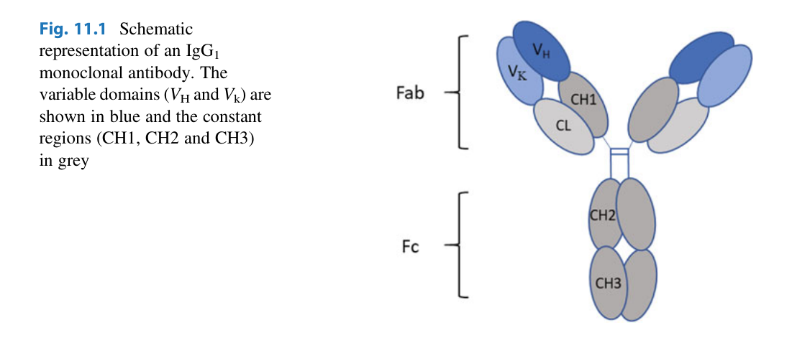
11.2 항원 결합
11.2.1 결합 에피토프와 친화도
표적 항원상의 최적 부위 또는 에피토프(epitope)에 결합하는 클론을 식별하는 것은 필수적이다. 수용체-리간드(receptor-ligand) 상호작용을 차단하여 길항(antagonize)하는 것이 원하는 생물학이든, 막 수용체를 가교(crosslink)하여 효능화(agonize)하는 것이든, 적절한 결합자의 식별은 기능 분석(functional assay)을 이용하여 수행된다. 이들 분석에는 정제된 재조합 리간드 및 수용체, 세포 기반 생리학적 분석 또는 생체 내 모델이 포함될 수 있다. 약물 발굴 과정에서 가능한 한 조기에 클론 라이브러리의 결합자 레퍼토리(repertoire)를 기능에 대해 스크리닝하는 것이 바람직하다. 항체 클론은 표적에 대해 매우 넓은 범위의 친화도(펨토몰라(femtomolar)에서 마이크로몰라(micromolar)까지)를 가질 수 있다. 항체의 결합 친화도를 표적 생물학에 가장 잘 부합하도록 최적화하는 것이 일반적이며, 전형적으로 치료용 항체는 한 자릿수 나노몰라(nanomolar) 이하의 강한 친화도를 갖는다. 친화도를 증가시키면 치료의 생물학적 유효성이 증가할 수 있고, 주사 용량을 감소시키고, 투여 간격을 늘리며, 치료 비용을 낮출 수도 있다. 결합 친화도를 최적화하기 위한 항체 공학(engineering)은 실험적 친화도 성숙(affinity maturation)에 의존해 왔으나, 현재는 전산(in silico) 모델링으로 보완되고 있다. 시험관 내 실험적 성숙은 항체에 무작위 또는 표적 돌연변이유발(random- or targeted-mutagenesis)을 수행함으로써 이루어질 수 있다. 무작위 방법에서는 포화 또는 오류 유발 중합효소연쇄반응(error-prone polymerase chain reaction, PCR)을 이용하여 CDR 서열에 돌연변이를 도입한다. 표적 접근법에서는 알라닌 스캐닝(alanine-scanning) 또는 특정 부위를 다양화한 소규모 라이브러리를 제작한다. 두 경우 모두 생성된 변이체를 파지 또는 효모 디스플레이(yeast display)를 이용하여 친화도에 대해 선발한 뒤, 개별 클론을 분리·발현시켜 스크리닝한다. 표면 플라스몬 공명(surface plasmon resonance, SPR)과 같은 결합 측정법을 이용하여 중간 처리량 스크리닝 수준에서 친화도 개선을 검출할 수 있다. 원하는 친화도를 달성하기 위해 수 차례의 성숙 과정이 필요할 수 있다. 그러나 이 과정에서 친화도는 개선될 수 있으나 항체의 특이성(specificity)과 안정성(stability)이 저하될 가능성이 있음에 유의해야 한다. 방향족 아미노산(aromatic amino acid)과 같은 상호작용성이 높은 잔기는 정제된 항체 자체에 대한, 그리고 비표적 항원에 대한 비특이적 결합을 증가시킬 수 있다. 이러한 바람직하지 않은 특성은 생물리학적 방법(biophysical method)으로 식별하여 해당 클론을 제외(deselect)해야 한다. 전산 또는 컴퓨터 지원 성숙(computer-aided maturation)을 이용하면 대규모 가상 라이브러리에서 원하는 항체를 탐색하는 동시에 항체-항원 상호작용을 더 잘 이해할 수 있다. 3차원 결정 구조(crystallographic structure)를 이용할 수 있는 경우, 항원 상호작용에 관여하는 잔기를 식별할 수 있다. 소수성(hydrophobic), 정전기적(electrostatic), 비극성(non-polar) 및 결합 에너지(binding energy) 계산을 이용하여 상호작용을 안정화하는 다양한 접근법을 적용할 수 있다. GROMACS 소프트웨어를 이용하여 모델링한 항-VEGF 항체의 내부 안정화 에너지와 동역학(dynamics)은 실험적 친화도와 상관관계를 보였다. 정전기적 최적화는 항-시누클레인(anti-synuclein) 항체의 친화도를 100배 이상 증가시키는 데 성공적으로 사용되었다.
11.2.2 pH 민감성 또는 ’pH 스위치’를 지닌 치료용 항체의 창출
pH 변화에 민감한 항체를 이용하면 임상적 이익을 창출할 수 있다. 한 응용은 산성화된 후기 엔도솜(late endosomal compartment)에서 항원으로부터 해리를 가능하게 하는 것이다. 그 결과 항체로부터 해리된 리간드(ligand)는 분해 경로(degradation pathway)로 들어가는 반면, 항체는 신생아 Fc 수용체(neonatal Fc receptor, FcRn)에 결합함으로써 재활용(recycling)된다. 환자의 체내에서 항체의 순환 지속성을 증가시키고 표적을 능동적으로 분해할 가능성이 있다. pH 변화에 대한 결합 민감성은 예를 들어 CDR에 이온화 가능한 히스티딘(histidine) 잔기를 도입한 뒤 중성 및 산성 조건에서 시차적 항원 결합을 스크리닝함으로써 만들 수 있다. 인터루킨-6(IL-6), IL-6 수용체(IL-6R), 프로단백질 전환효소 서브틸리신 켁신 9형(proprotein convertase subtilisin kexin type 9, PCSK9)에 대한 항체들은 모두 pH 7.4에서 높은 친화도를 유지하고 산성 pH에서 감소된 결합을 보이도록 성공적으로 공학되었으며, 이는 더 유리한 투여 요법으로 이어졌다.
11.3 Fc 수용체와의 상호작용 개선 및 최적화
항체 의존 세포 독성(antibody-dependent cellular cytotoxicity, ADCC)은 항체의 중요한 기능이며 감염을 제한하고 억제하는 체액성 면역 반응(humoral immune response)의 일부이다. 또한 성장인자 수용체 신호 차단 및 독성 탑재체(payload)에 대한 표적화 작용제(targeting agent)로서의 작용과 같은 다른 기전을 보강할 수 있는 ADCC 활성이 있어, 치료용 항체를 이용한 암 치료에서 특히 중요한 기전이다. ADCC는 항체가 표적 세포를 피복(coat)하고 이펙터 세포(effector cell)를 동원하여 비식세포(non-phagocytic) 기전으로 표적 세포 사멸을 유도하는 과정이다. IgG, IgA, IgE를 포함한 여러 부류의 항체가 ADCC를 매개할 수 있다. IgG1은 치료용 항체에 가장 많이 사용되는 아이소타입(isotype)이다. ADCC를 수행하기 위해 항체는 표적과 Fc 수용체(Fc receptor, FcR)에 동시에 결합해야 한다. FcR에는 여러 부류가 있으며, 골수세포(myeloid cell)에 의한 종양 세포 제거에 가장 중요한 것은 FcγR이다. 이들은 활성화성 FcγRI(CD64), FcγRIIA(CD32A), FcγRIIIA(CD16A), 그리고 억제성 FcγRIIB(CD32B) 수용체로 구성된다. 이들 수용체에 대한 항체의 결합은 수용체 군집화(clustering)와 티로신 기반 활성화 및 억제 모티프(tyrosine-based activation and inhibitory motif)를 통한 하류 신호전달을 촉발한다. ADCC 이펙터가 될 수 있는 골수세포는 NK 세포(natural killer cell), 단핵구(monocyte), 대식세포(macrophage), 호중구(neutrophil), 호산구(eosinophil), 수지상 세포(dendritic cell)이다. 일단 활성화되면 이펙터 세포는 퍼포린(perforin)과 그랜자임 B(granzyme B)가 든 과립을 세포외로 방출(exocytosis)하여 표적 세포 사멸을 유도한다. 또한 활성화된 이펙터 세포에서는 Fas 리간드(Fas ligand) 발현이 상향조절되며, 이는 Fas 신호전달(Fas signaling)이 매개하는 과정을 통해 표적 세포의 세포자멸사(apoptosis)를 초래할 수도 있다. 다수의 치료용 항체가 임상 활성에서 ADCC를 주요 작용 기전으로 사용한다는 주장이 제기되었다. ADCC의 역할은 항-CD20 치료용 항체 리툭시맙(rituximab)의 경우에 입증되었는데, 여기서 활성화성 FcγR 유전자의 다형성(polymorphism)이 환자의 임상 생존과 상관관계를 보였다. 이들 다형성은 Fc 매개 ADCC에 대한 더 높은 친화도와 연관된 것으로 나타났다. 항-GD2 항체로 치료받은 신경모세포종(neuroblastoma) 환자에서도 유사한 상관관계가 발견되었다. ADCC가 암 환자에서 종양 세포를 사멸하는 중요한 기전이 될 수 있다는 증거를 고려하여, ADCC 활성을 증강시키는 새로운 기술이 등장하였다. 여기에는 환자에서 ADCC를 증강시키기 위해 IL-2를 포함한 약물을 병용 투여하는 것이 포함되나, 이는 본 장의 범위를 벗어난다. 항체 구조를 변경하는 접근법이 개발되었으며, 가장 대표적인 것은 부위 돌연변이유발(site mutagenesis)로 활성화성 FcγRIIIA에 대한 결합 친화도를 증가시키는 방법과 Fc 당화(glycosylation)의 유형 및 수준을 변경하는 방법이다. Fcγ 수용체에 대한 친화도를 높이기 위한 Fc 부위 잔기의 변형이 성공적이었으며, 또한 서로 다른 중쇄를 지닌 이종이량체(heterodimer)를 만들도록 Fc 부분을 비대칭적으로 공학(asymmetrical engineering)한 결과 더 안정적이고 ADCC 기능이 증강된 항체가 얻어졌다. Fc 부위를 수식하는 당(sugar) 중에서는 푸코스(fucose)가 Fc 수용체 결합 변화에 가장 큰 역할을 하는 것으로 보인다. 돌연변이유발 또는 비푸코실화 세포주(non-fucosylating cell line)에서의 생산을 통한 푸코스 제거는 Fc 수용체 친화도를 극적으로 개선하고 더 높은 수준의 ADCC를 초래하였다. 이는 탈푸코실화(defucosylated) 항-CD20 치료용 항체를 포함한 다수 항체의 임상 개발에서 탐색되고 있다. 마지막으로, 일부 항체 표적의 경우 효능과 안전성 고려 차원에서 Fc 수용체 결합을 감소시키는 것이 유익하다. 간과 같은 장기에서 Fc 수용체 결합이 CD137(4-1BB라고도 함)과 같은 공동자극 수용체(costimulatory receptor)를 표적으로 하는 치료용 항체에 의한 비정상적 활성화를 초래하여 용량 제한 간독성(dose-limiting hepatotoxicity)을 유발할 수 있음이 밝혀졌다. FcγR과의 상호작용을 불능화함으로써 이러한 상호작용을 감소시키면 독성이 감소한다. 나아가 면역항암(immuno-oncology) 상황에서 체크포인트 억제 수용체(checkpoint inhibitory receptor)를 표적화함으로써 탈진된 종양 T 세포와 같은 면역 세포를 활성화하기 위해 항체를 사용할 때, 이후 ADCC에 의한 T 세포 파괴를 방지하는 것이 유용하다. 항체의 ADCC 활성을 감소시키는 전략은 여러 가지가 있으며, 여기에는 ADCC 활성이 낮은 IgG 아부류(subclass)를 사용하거나 FcγR에 대한 친화도를 감소시키는 Fc 내 특정 점돌연변이(point mutation)를 이용하는 것이 포함된다. IgG2 및 IgG4와 같은 일부 IgG 아부류는 IgG1에 비해 천연적으로 감소된 FcγR 상호작용을 갖는다. 또한 이러한 감소된 친화도를 달성하기 위해 천연 Fc N-연결 당화(N-linked glycosylation) 제거를 포함한 다양한 Fc 돌연변이가 만들어졌으며, 여기에는 IgG1의 235번 위치에서 류신(leucine)을 글루탐산(glutamic acid)으로 치환하는 것이 포함된다. 두 개의 점돌연변이(L234A/L235A)를 지닌 Fc 변형, 이른바 LALA Fc 돌연변이는 수십 년 전에 처음 기술되었으며, more recently에는 FcγR 매개 이펙터 기능이 결여된 추가 Fc 돌연변이들이 기술되었다. 이들 Fc 변경은 새로운 T 세포 에피토프 도입에 따른 면역원성 유발 가능성과, IgG가 덜 안정해짐에 따른 제조성(manufacturability) 저하 가능성을 증가시킨다는 점에 유의해야 한다.
11.4 보체 활성화 및 불활성화
항체는 보체 성분 1q(complement component 1q, C1q)와의 상호작용 및 일련의 단백질분해 절단(proteolytic cleavage) 사건에 의한 보체 캐스케이드(complement cascade) 개시를 통해 체액성 면역 반응에 관여할 수 있다. 오파투무맙(ofatumumab)과 리툭시맙을 포함한 다수의 승인 항체에 대해 강력한 보체 활성화가 시험관 내에서 입증되었다. 나아가 세포 사멸을 위한 잠재적으로 강력한 작용 기전을 증강시키기 위해 다양한 Fc 공학 접근법이 보고되었다. 이들은 일반적으로 C1q에 대한 항체 친화도를 점돌연변이 또는 IgG3 구간 이용으로 증가시키는 접근법을 사용한다. IgG3는 네 가지 항체 아부류 중 가장 강력한 보체 의존 세포독성(complement-dependent cytotoxicity, CDC) 활성을 갖지만, 상대적으로 짧은 혈청 반감기(serum half-life)와 제조상의 어려움이 있다. 이러한 문제를 극복하기 위해 IgG3 CH2/CH3 부위를 IgG1에 치환하였고, 모체 IgG1 분자에 비해 CDC가 50배 이상 증강되었다. 완전한 ADCC 활성이 지닌 부담과 마찬가지로, 투여 항체의 안전성을 높이기 위해 C1q 결합 및 보체 활성화를 감소시키는 돌연변이가 도입되었다. 이들 돌연변이에는 L234A/L235A 및 V234A/G237A/P238S/H268A가 포함되며, 검출 불가능한 수준의 CDC 및 ADCC 활성을 초래할 수 있다.
11.5 투여 빈도 감소를 위한 혈청 반감기 개선
항체는 일반적으로 사람에서 7~21일의 반감기를 가지며(IgG 아부류 및 표적 매개 청소(target-mediated clearance)의 영향에 따라 다름), 신생아 Fc 수용체(FcRn)에 대한 결합은 세포 수송(cellular trafficking)과 혈청 반감기 모두에서 중심적 역할을 한다. 이러한 긴 반감기는 대체로 음세포작용(pinocytosis) 이후 엔도솜(endosome)에서 FcRn에 결합하여 리소좀 분해(lysosomal degradation)를 회피하는 Fc의 능력에 기인한다. IgG는 생리학적 pH에서 FcRn에 대한 친화도가 낮으나, 산성 엔도솜 pH(6~6.5)에서 양성자화(protonation)되어 FcRn에 pH 의존적으로 결합한다. IgG는 FcRn 결합을 통해 분해를 회피하고 혈류로 재활용된다. 공결정 구조(co-crystal structure) 규명을 통해 FcRn과 접촉하는 Fc 내 핵심 접촉 잔기가 확인되었다. 310번 위치의 히스티딘(histidine at position 310)은 pH 의존 결합에 유의하게 기여한다. H310을 다른 아미노산으로 돌연변이시키면 pH 6.0에서 FcRn에 대한 검출 가능한 결합이 소실된다. 분자 상호작용 수준에서 재활용 기전에 대한 이해는 FcRn과의 상호작용 변경을 통해 천연 IgG 반감기를 개선하려는 시도를 촉진하였다. 이는 더 낮은 치료 용량, 덜 빈번한 투여, 궁극적으로 치료 비용 개선의 가능성을 제공하였다. 파지 디스플레이를 이용하여 Fc 변이체 라이브러리를 스크리닝함으로써 pH 6.0에서 FcRn 결합을 증강시키는 돌연변이가 확인되었다. YTE(M252Y/S254T/T256E)라고 명명된 이들 돌연변이는 사람 및 사이노몰구스(cynomolgus) FcRn에 대한 결합을 10배 증가시켰고, 사이노몰구스 약동학(pharmacokinetic) 연구에서 반감기를 4배 증가시켰다. 제1상 임상시험에서 호흡기세포융합바이러스(respiratory syncytial virus)를 표적으로 하며 FcRn에 대한 친화도가 공학적으로 증가된 모타비주맙-YTE(motavizumab-YTE)를 시험한 결과, 모체 모타비주맙 IgG1 대비 2~4배의 반감기 증가가 나타났다. 이는 이 접근법의 임상적 유용성을 입증하였다. 또 다른 돌연변이 세트인 M428L/N434S(통상 LS로 지칭)는 pH 6.0에서 FcRn에 대한 친화도를 11배 증가시키는 것으로 확인되었으며, 항-EGFR 및 항-VEGF 항체를 이용한 전임상 연구에서 마우스 종양 모델의 유효성을 증가시켰다.
11.6 치료용 항체의 면역원성
임상 개발에 진입한 1세대 단클론항체는 Köhler와 Milstein의 하이브리도마 기술에서 유래하였다. 이식 후 동종이식 거부(allograft rejection) 예방을 위한 최초 승인 치료용 항체 OKT-3는 마우스 기원이었으며, 다른 초기 치료제와 마찬가지로 환자에서 매우 면역원성이 높았다. 그 결과 생성된 항약물항체는 치료용 항체의 청소율을 증가시키고, 결합을 중화하며, 궁극적으로 유효성을 제한하였다. 또한 치료용 항체의 재투여는 중증 주입 반응(infusion reaction)과 연관되었으며, 이는 부분적으로 선천 면역의 주요 체액성 방어계이자 적응 항체 반응인 보체계(complement system)의 활성화에 의해 매개될 수 있다. 더 높은 수준의 사람 서열을 지닌 치료용 항체를 분리하기 위한 여러 혁신이 도입되었다(이전 절에서 다룸). 마우스 불변 부위를 사람 대응 부위로 교환하여 마우스/사람 키메라 치료용 항체를 창출함으로써 마우스 ‘비자기(non-self)’ 에피토프 소실과 함께 면역원성이 극적으로 감소하였다. 다음 세대 치료용 항체는 마우스 CDR을 사람 단클론 골격에 이식하여 만든 인간화 항체였다. 이러한 인간화로 얻어지는 추가 이익의 정도는 더 논쟁적이며, 이는 가변 부위 간의 상동성이 불변 부위 간보다 사람과 마우스 사이에서 더 높기 때문일 수 있다. 실제로 인간화 항체는 마우스 가변 부위와의 차이보다 천연 사람 다양성과 더 많은 차이를 보일 수 있다. 파지 및 형질전환 시스템(서열이 사람 레퍼토리에서 유래한 경우)을 이용한 완전 인간 치료용 항체의 등장은 면역원성 부재의 가능성을 제공하였다. 그러나 완전 인간 서열 유래 항체조차도 주목할 만한 면역 반응을 유발할 수 있다. 미국 식품의약국(Food and Drug Administration, FDA)이 류마티스관절염(rheumatoid arthritis) 치료용으로 처음 승인한 아달리무맙은 질환 상황에 따라 다양한 환자 부분집합(5~89%)에서 고역가(high-titre), 중화성(neutralizing) 항체 반응을 유발한다. 치료용 항체의 면역원성에 대한 주요 동인(driver)은 아미노산 서열 내 사람 T 세포 에피토프(T cell epitope)의 존재이다. 이는 헬퍼 T 세포(helper T cell)를 활성화하여 치료용 항체에 대한 항체 생산과 치료 효과의 강력한 중화를 초래한다. 항체는 항체의 결합 친화도를 유의하게 감소시키지 않으면서 T 세포 에피토프를 제거하는 돌연변이를 만들어 ’탈면역화(de-immunised)’할 수 있다. 1차 아미노산 서열이 강한 면역원성을 유발할 수 있는 반면, 다른 측면도 기여할 수 있다. 예컨대 Fc 부위의 당화 패턴이 다른 경우 N-연결 당화 제거로 항체 반응을 감소시킬 수 있다. 나아가 중국햄스터난소(Chinese hamster ovary, CHO) 세포주에서의 생산에서 유래한 갈락토스-α-1,3-갈락토스(galactose-α-1,3-galactose)와 같은 비인간 당화는 진드기 감염(tick infection) 시 사전 노출로 환자에 생성된 기존 IgE 항체로 인해 과민 반응(hypersensitivity reaction)을 유발할 수 있다. 진드기 감염 노출의 지역적 특성이 과민 반응의 지역적 특성을 설명한다. 항체의 제조(preparation) 및 투여 경로(route of administration)도 면역원성에 영향을 미칠 수 있다. 치료용 항체 제품의 생산 또는 보관 중 응집체(aggregate) 형성은 면역원성 위험을 증가시킨다. 나아가 항체 응집체의 양이나 크기보다 유형(type)이 면역 반응 발생에 더 큰 영향을 미친다는 것이 입증되었다. 우수한 생물리학적 특성(biophysical property)을 지닌 치료용 항체를 발굴하고 생산 중 응집체를 제거하며, 예를 들어 다양한 제형 완충액(formulation buffer)을 사용하여 장기 보관 중 응집체 형성을 방지하는 데 상당한 항체 발굴 및 제조 개발 시간이 소요된다.
11.7 항체 단편
다중 도메인으로 이루어진 항체의 모듈 구조(modular structure)는 더 작은 항원 결합 형태의 창출을 가능하게 한다. 이러한 작은 단위에는 단편 항원결합(fragment antigen-binding, Fab), 단일사슬 단편 가변(single-chain fragment variable, scFv), 단일 도메인 항체(single-domain antibody, dAb)가 포함된다. 이들은 그 자체로 사용되거나 결합되어 항체-약물 접합체(antibody-drug conjugate, ADC) 및 하나 이상의 항원에 결합할 수 있는 다중특이성 항체(multi-specific antibody)를 포함한 매우 다양한 치료제를 창출하는 데 사용될 수 있다. ADC와 이중특이성 항체(bispecific antibody)는 모두 흥미로운 기회이나 본 장의 범위를 벗어난다. 항체 단편은 기존 항체에 비해 Fc 기능 부재, 조직 침투(tissue penetration) 증가, 더 큰 안정성, 비용 효율적인 미생물 시스템(microbial system)을 이용한 대규모 생산을 포함한 여러 장점을 제공한다. 또한 더 작은 구조가 고전적 단클론항체 접근법으로는 더 어려울 깊은 단백질 홈(groove)과 같은 까다로운 에피토프에 대한 결합을 용이하게 한다. 조직 침투를 촉진하는 반면, 더 작은 크기와 FcRn 결합 부재는 더 빠른 신장 매개 배설(kidney-mediated excretion)을 초래한다. 이는 고용량 투여, 국소 투여, 또는 폴리에틸렌 글리콜(polyethylene glycol, PEG)이나 알부민 결합 도메인(albumin-binding domain) 접합을 포함한 반감기 연장 기술(half-life extension technology)로 극복할 수 있다. 시장 승인을 획득한 최초 항체 단편 중 하나는 크론병(Crohn’s disease) 치료를 위한 종양괴사인자-알파(tumor necrosis factor-alpha) 표적 PEG화 Fab인 Cimzia였다. 이후 류마티스관절염을 포함한 다른 주요 자가면역질환에 대해 승인되었다. Fc 활성이 없어 Cimzia는 항-TNF 치료용 항체와 명확한 작용 기전 차이를 가졌다. 전신 투여의 대안으로, 항체 단편의 더 작은 크기와 더 큰 안정성은 병변 조직에 대한 국소 전달(local delivery)을 이용한 임상 연구를 가능하게 하였다. 이는 전달 부위에서 고농도를 가능하게 하고 이후 신속한 신장 청소로 인해 낮은 전신 노출을 초래한다. 항-VEGF Fab 항체 단편인 라니비주맙(ranibizumab, Lucentis)은 습성 연령관련 황반변성(wet age-related macular degeneration, AMD) 환자의 눈에 국소 투여하는 용도로 2006년에 승인되었다. 그러나 모체 치료용 항체인 베바시주맙(bevacizumab)이 약 1/20의 가격으로 동등하게 안전하고 유효하다고 보고되면서 논란이 일었다. 흡입용 항체 단편 창출도 임상에서 시험되었으며, 여기에는 급성호흡곤란증후군(acute respiratory distress syndrome) 치료를 위한 항-종양괴사인자수용체 I 도메인 항체와 호흡기세포융합바이러스(RSV) 감염 치료를 위한 항-RSV 도메인 항체가 포함된다.
11.8 치료용 항체의 생물리학적 특성 개선
항체의 생물리학적 특성은 임상 개발과 궁극적으로 상업적 성공에 극적으로 영향을 미칠 수 있다. 상업적 제조 규모로의 진행은 lengthy하고 과학적으로 복잡하며 비용이 많이 든다. 치료용 항체는 매우 높은 순도로 생산되어야 하며 무균(sterile)이어야 한다. 숙주세포단백질(host cell protein) 수준은 백만분율(parts per million, ppm)까지, DNA는 십억분율(parts per billion, ppb)까지 감소되어야 하며, 바이러스 수준은 백만 투여당 1개 미만의 바이러스 입자로 낮추어야 한다. 제1상 임상 등급 물질의 첫 배치 생산만도 18~24개월이 소요되고 수백만 유로의 비용이 들 수 있다. 전장(full-length) 항체 생산의 대부분은 항체가 복잡한 접힘(folding), 조립(assembly), 번역후수식(post-translational modification)을 필요로 하므로 중국햄스터난소 세포(CHO)에서 이루어진다. 항체 단편의 한 장점은 박테리아와 효모를 포함한 미생물 시스템에서 만들 수 있어 비용과 일정을 줄일 수 있다는 점이다. 그러나 전장 및 단편 항체 생산의 복잡성은 궁극적으로 항체의 1차 서열에 의존하므로, 항체 생산과 안정성에 영향을 미칠 수 있는 인자들을 여기서 검토할 것이다. 제조 및 보관 중 항체는 다수의 경로를 통한 분해 위험에 처한다. 각 치료용 항체 후보는 고유한 특성과 위험을 갖는다. 항체 발굴 과정에서 분해되기 쉽거나 불안정한 부위를 식별하면 생물학적 활성 손실 없이 문제가 되는 부위를 재공학할 수 있다.
11.8.1 응집
항체 응집은 흔하고 중요한 물리적 분해(physical degradation) 유형이며, 활성 감소와 면역원성 산물 형성을 초래할 수 있다. 피하주사(subcutaneous injection)용과 같은 고농도 제형(>100 mg/mL)에서는 단백질-단백질 상호작용이 더 빈번해지고 농도가 올라감에 따라 응집 형성 기회가 증가한다. 온도, pH, 염, 빛, 진탕(shaking), 점도(viscosity)와 같은 외인성 조건의 변화는 소수성 잔기를 일시적으로 노출시켜 응집으로 이어질 수 있는 단백질-단백질 상호작용을 촉진할 수 있다.
11.8.2 열 변성
단백질 변성(protein denaturation)은 천연 접힘 구조의 부분적 또는 완전한 풀림(unfolding)이다. 풀림은 항원 결합 소실과 응집 유발 부위 노출을 초래할 수 있다. 열 풀림(thermal unfolding)은 시차주사열량측정(differential scanning calorimetry, DSC)으로 관찰할 수 있으며, IgG 항체 분자에 대한 전형적 DSC 프로파일은 Fab, CH2, CH3 도메인으로 식별되는 세 개의 피크를 포함한다. CH2 도메인은 전형적으로 가장 덜 안정하다. 용액의 pH와 염의 존재는 융점(melting temperature)을 높이거나 낮출 수 있어 안정성에 영향을 미친다.
11.8.3 단편화, 탈아미드화 및 산화
항체의 단편화는 펩티드 골격(peptide backbone)의 효소적 또는 비효소적 가수분해(hydrolysis)에 뒤이어 일어날 수 있으며, 힌지(hinge), CH2/CH3 경계, 아스파르트산(aspartic acid) 및 트립토판(tryptophan) 잔기를 포함한 부위 등 다수의 부위에서 일어난다. 탈아미드화는 가장 흔한 화학적 분해(chemical degradation) 경로이며 글루타민(glutamine) 및 아스파라긴(asparagine) 잔기의 가수분해로 발생한다. 주변 아미노산 잔기와 강한 연관성이 있으며, pH, 온도, 완충액 조성의 영향도 받을 수 있다. 탈아미드화는 항체 활성과 안정성 모두에 영향을 미칠 수 있다. 항체의 산화도 흔하며 특히 메티오닌(methionine), 시스테인(cysteine), 히스티딘, 티로신(tyrosine), 트립토판 잔기에 영향을 미친다. 산화는 안정성과 생물학적 활성에 영향을 미칠 수 있으며, 혈청 반감기와 프로테인 A(protein A)와 같은 정제 매트릭스(purification matrix)에 대한 친화도를 감소시킬 수 있다.
11.8.4 전산 설계 도구
전산 도구를 이용하면 응집, 분해, 화학적 변형되기 쉬운 특정 아미노산 서열과 부위를 신속하게 식별할 수 있다. 현재 도구와 새로운 경향은 문헌에서 검토되었다. 이러한 전산 설계는 개선된 개발가능성(developability) 특성을 지닌 1차 클론을 도출하는 발굴 라이브러리 창출에도 사용될 수 있다.
12장 개발을 위한 치료용 항체 공학
12.1 서론
단클론항체(monoclonal antibody, mAb)를 포함한 단백질 치료제(protein therapeutic)는 막대한 수익을 창출하고 전이성 암(metastatic cancer), 자가면역질환(autoimmune disease), 심혈관질환(cardiovascular disease) 등 파괴적 질환을 앓는 환자들에게 귀중한 치료 옵션을 제공하는 매우 성공적인 의약품 부류이다. mAb는 높은 표적 특이성으로 인해 비교적 안전한 의약품으로 간주된다. 항체 치료는 100년 이상 전에 디프테리아와 같은 감염질환을 치료하기 위해 면역화된 동물의 혈청을 이용한 수동면역(passive immunization)으로 시작되었다. 1975년 Köhler와 Milstein은 하이브리도마 기술(hybridoma technology)을 개발하였으며, 이 이정표는 현대 mAb 치료제의 길을 열었다. 시장에서 mAb의 성공은 그 생물학의 결과이다. 항체는 체액성 숙주 방어(humoral host defense)에 핵심 기능을 제공하는 사람 면역계의 구성요소이다. 이들은 병원체 표면 구조, 즉 에피토프에 매우 특이적으로 결합하여 대식세포, 자연살해세포, 보체계 구성요소와 같은 면역계의 다른 구성요소와 연결한다. 항체는 혈류에 풍부하고 높은 구조적 유사성을 공유한다. 동시에 가변 부위(variable region)라고 하는 부위에서 높은 서열 다양성을 갖는다. 따라서 항체는 구조적으로 매우 유사함에도 불구하고 단백질, 지질, 당구조(glycostructure) 등을 포함한 모든 종류의 에피토프에 결합할 수 있어 넓은 표적 공간을 연다. 혈류 중 항체는 다클론(polyclonal), 즉 여러 에피토프를 표적으로 하는 서로 다른 서열의 혼합물인 반면, mAb는 한 특정 에피토프에 결합하는 정의된 서열을 지닌 단일 세포 클론에서 유래한 항체이며, 따라서 “단클론항체”라는 용어가 사용된다. mAb의 넓은 표면적이 에피토프 결합에 관여하므로 매우 높은 선택성이 보장되며 “원치 않는” 표적에는 영향을 주지 않는다. 따라서 mAb의 안전성 프로파일(safety profile)은 원치 않는 표적에 활성을 보이는 경우가 매우 흔한 저분자(small molecule)에 비해 유리하다. 그럼에도 불구하고 mAb의 복잡한 구조와 생물학은 개발 측면에서 고유한 도전을 동반한다. mAb는 단백질이며 환자 부분집합에서 면역원성을 유발하여 항약물항체(ADA) 발생을 초래하고 약물 유효성과 약동학(pharmacokinetics)을 저해할 수 있다. 또한 항체는 Fc 부분을 통해 매개되는 면역계 구성요소와 천연적으로 관여하여 원치 않는 부작용을 초래할 수 있다. 또한 제조 중 항체의 응집과 면역복합체(immune complex) 형성 또는 불순물, 비인간 번역후수식(posttranslational modification)이 추가적인 원치 않는 부작용을 초래할 수 있다. mAb의 구조적 유사성은 개발과 생산을 위한 플랫폼 공정(platform process) 도입을 가능하게 한다. 오늘날 시판되는 대부분의 항체는 중국햄스터난소(CHO) 세포를 발현 숙주로 이용한 유가식(fed-batch) 공정으로 생산되며, 프로테인 A 수지(Protein A resin)를 이용한 친화성 정제(affinity purification)를 핵심 농축 단계로 사용한다. 생산 공정은 서로 다른 mAb 제품 간에 높은 유사성을 공유하므로 기술 위험을 줄이고, 공정 개발 일정을 단축하며, 투자를 낮춘다. 결과적으로 mAb는 저분자에 비해 발굴과 개발에서 실질적으로 더 높은 성공률과 더 짧은 주기 시간을 갖는다. 그러나 mAb는 4개의 폴리펩티드 사슬로 이루어진 분자량 약 150 kDa의 복잡한 당단백질(glycoprotein)이므로, 제조 중 최종 제품의 균일성(homogeneity)을 저해하는 많은 원치 않는 구조적 변형이 일어날 수 있다. 일부 변형은 표적에 대한 유효성이나 혈청 반감기를 바꿀 수 있는 반면, 다른 변형은 그렇지 않다. 최종 제품은 항상 수백만 변이체의 혼합물이므로, 사람에서 항체 활성을 저해하는 변형이 최소이며 배치 간 일관성(batch-to-batch consistency)이 보장되는 것이 critical하다. 흔히 매우 고용량의 항체가 필요하므로 초대규모 제조(연간 700 kg 초과)가 요구된다. 또한 피하(subcutaneous) 경로로 투여될 경우 최종 의약품(drug product)은 고농축이어야 한다. 기술된 측면 다수는 단백질 공학과 공정 기술을 이용하여 조절할 수 있으며, 일부 예가 본 장에서 아래에 기술된다.
12.2 안전성 고려사항
mAb가 기존 화학요법 화합물보다 일반적으로 더 잘 tolerated되지만, 수년에 걸쳐 보고된 부작용은 광범위하다. 여기에는 오심(nausea), 설사(diarrhea), 두통(headache), 경미한 위장관 증상 또는 가려움과 같은 다소 경미한 효과부터, 아나필락시스(anaphylaxis)를 포함한 과민 반응(hypersensitivity reaction), 주사부위 반응(injection site reaction), 혈구감소증(cytopenia), 심장 독성(cardiac toxicity), 감염 또는 사이토카인 방출 증후군(cytokine release syndrome)과 같은 더 심각한 상태까지 포함된다. 또한 면역원성과 면역복합체 형성은 mAb를 포함한 모든 생물의약품(biotherapeutic)에 대해 항상 안전성 우려사항이다. mAb의 일부 부작용은 특정 표적과 명확히 관련되는 반면, 다른 부작용은 항체 자체의 속성과 숙주 면역계의 다양한 구성요소와 상호작용하는 능력과 관련되는 것으로 보인다.
12.3 mAb의 표적 의존 부작용 예
표적 의존 부작용의 예는 유방암에서 Her-2 수용체를 표적으로 하는 키메라 IgG1인 트라스투주맙(trastuzumab)이 매개하는 심장 독성이다. Her-2는 심근세포(cardiomyocyte)에도 발현되므로, 트라스투주맙으로 Her-2 신호전달을 차단하면 치료 환자의 4%에서 심장 독성이 초래되었다. 또 다른 표적 매개 부작용은 항-EGFR 항체인 세툭시맙(cetuximab)과 같은 약제에 환자가 노출되어 유발되는 피부 발진(skin rash)이다. EGFR은 대표적인 암 표적이며 세툭시맙은 전이성 대장암은 물론 두경부암 치료에 사용된다. EGFR은 각질형성세포(keratinocyte)를 포함한 상피세포에 널리 발현된다. 따라서 세툭시맙 또는 저분자를 포함한 다른 EGFR 차단제로 EGFR 신호전달을 차단하면 흔히 얼굴과 상부 몸통에 피부 발진이 발생한다. 피부 발진 발생과 약물에 대한 양성 반응 사이에는 상관관계가 있다. 진행성 다초점 백질뇌병증(progressive multifocal leukoencephalopathy, PML)은 존 커닝햄 폴리오마바이러스(John Cunningham Polyomavirus, JCV)에 의한 중추신경계의 드문 탈수초 질환(demyelinating disease)이다. 병태생리학이 완전히 이해되지는 않았으나 면역억제(immunosuppression)가 역할을 하는 것으로 보인다. 림프증식성(lymphoproliferative) 또는 자가면역 질환 치료에 적용되는 여러 항체가 PML 감염 발생률을 높이는 것으로 보인다. 재발-완화 다발성경화증(relapsing-remitting multiple sclerosis) 치료에 사용되는 mAb인 나탈리주맙(natalizumab)은 일부 PML 사례 발생으로 2005년에 판매가 중단되었다가 2006년에 표지에 특정 경고를 부착하여 재도입되었다. 나탈리주맙 외에도 리툭시맙, 오파투무맙, 오비누투주맙(obinutuzumab), 브렌툭시맙 베도틴(brentuximab vedotin), 알렘투주맙(alemtuzumab) 등 여러 항체에 대해 PML 사례가 기술되었다. 면역 반응을 조절하는 항체의 또 다른 흔한 부작용은 소위 “사이토카인 폭풍(cytokine storm)”(사이토카인 방출 증후군)이며, 예를 들어 리툭시맙, 알렘투주맙, 무로모납(Muromonab)에 대해 기술되었다. 2006년에는 실험 약물인 CD28 슈퍼아고니스트(superagonist) TGN1412를 이용한 임상 1상 시험에서 극적인 효과가 나타났는데, 투여 후 수분 내에 치료 환자에서 사이토카인 방출 증후군이 발생하여 전신 염증 증상과 집중 치료를 요하는 다장기 부전(multiorgan failure)을 초래하였다.
12.4 생물의약품의 면역원성
미국 식품의약국(FDA)이 승인한 최초 mAb는 1985년 신장이식 거부 치료를 위한 무로모납(OKT3)이었다. 무로모납은 마우스 IgG2a 아이소타입을 대표하며, 유효성, 안전성, 약동학에 변화를 초래한 면역 반응을 유발하였다. 마우스 항체는 사람 면역계에 의해 “비자기”로 검출되어 “항약물항체”(ADA) 반응을 초래할 수 있다. 이들 초기 발견은 덜 면역원성인 형태를 지향하는 항체 공학 기술의 발견을 촉발하였다. 이후 수년간 더 유리한 프로파일을 보이는 새로운 항체를 개발하기 위해 단백질 공학 기술이 적용되었다(그림 12.1 참조). 1980년대 중반 최초 키메라 항체가 기술되었고, 수년 후 최초 인간화 항체가 뒤따랐다. 키메라 항체는 사람 불변 부위(Fc)에 융합된 설치류 기원의 항원결합부위(Fab)를 포함한다. 인간화(humanization)는 설치류 기원의 CDR 부위를 사람 항체 골격에 이식하여 치료 분자 내 설치류 유래 서열의 존재를 더욱 감소시키는 것을 의미한다. 오늘날 형질전환 동물 또는 파지 디스플레이 기술에서 유래한 완전 인간 항체가 최신 기술이다. 이들 분자는 “완전 인간”으로 간주될 수 있으며 설치류 기원의 서열 패치(patch)를 포함하지 않는다. 마우스 항체 투여는 현저한 ADA 반응을 유발하여 임상 결과 저해와 궁극적으로 임상시험 중단으로 이어진다. 설치류 Fc 부위를 사람 기원으로 치환하는 키메라화(chimerization)는 ADA 반응 감소를 유발하며, 인간화 또는 완전 인간 항체를 사용하면 더욱 감소될 수 있다. 인간화 및 완전 인간 항체의 사용이 키메라 및 마우스 항체에 비해 전체 면역원성 위험을 감소시키지만, 여전히 상당한 환자 집단이 ADA 반응을 발생시킨다. 사이토카인 TNFα를 표적으로 하는 완전 인간 항체인 아달리무맙(Humira)의 경우 임상시험에서 환자의 12%가 ADA 반응을 발생시켰다. 반면 동일한 사이토카인을 표적으로 하는 키메라 항체인 인플릭시맙(infliximab, Remicade)은 환자의 75%에서 ADA 반응을 초래하였다. 두 경우 모두 면역억제제(immunosuppressive drug) 병용 투여로 ADA 반응이 더욱 감소되는 것으로 밝혀졌다.
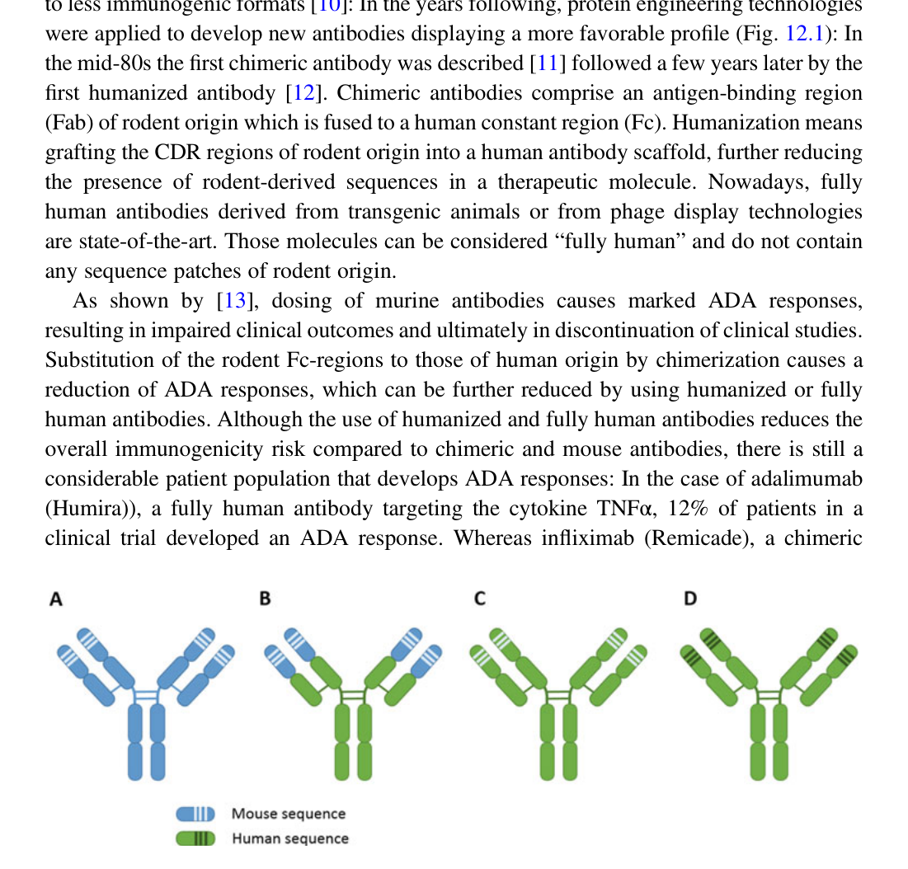
12.5 면역원성의 원인
다른 종에서 유래한 서열 패치를 포함한 항체를 반복적으로 고용량 투여받는 환자가 숙주에 의해 “비자기”로 검출되어 결과적으로 면역 반응을 촉발할 것이라는 점은 쉽게 이해된다. 그러나 예상과 달리, 완전 인간 항체조차도 개인의 부분집합에서 ADA 반응을 유발하며 면역원성이 있음이 입증되었다. 한 예는 사람 IgG-Fc 및 카파 경쇄(kappa light chain)에 대한 항-동종이형(anti-allotype) 반응일 수 있다. 동종이형(allotype)은 동일 아부류의 IgG 아미노산 서열에서 종 전체에 걸쳐 발생하는 경미한 편차를 포함한다. 이들 동종이형은 유전되며 서로 다른 대립형질 형태(allelic form)가 개인에 의해 발현된다. 예를 들어 IgG1은 중쇄에 4가지 동종이형(G1m(1-3, 17))과 카파 경쇄에 3가지 동종이형(Km(1-3))으로 존재한다. 람다 경쇄(lambda light chain)에 대한 동종이형은 보고되지 않았다. 따라서 IgG1 기반 치료용 항체는 환자 부분집합에서 항-동종이형 반응을 유발할 수 있다. 치료용 항체의 파라토프(paratope)는 보통 천연 항체 레퍼토리의 일부가 아니라는 점도 고려해야 한다. 결과적으로 하이브리도마 또는 형질전환 동물 기술을 이용하여 치료용 mAb를 선별하거나, 가변 부위의 재배열(rearrangement)과 친화도 성숙을 통한 가변 부위 아미노산 서열 변화가 일어날 때 파라토프에 대한 항-이디오타입(anti-idiotypic) 반응이 촉발될 수 있다. 게놈 서열 재배열(VL-JL 및 VH-DH-JH 재조합)의 부정확성은 항체의 서열 다양성에 기여한다. 또한 친화도 성숙 중 체세포 초돌연변이는 생식계열 서열에서 벗어난 새로운 아미노산 변이를 도입할 수 있다. 숙주 면역계가 가능한 모든 변이에 대해 내성(tolerance)을 확립할 수 없으므로 이들 새로운 서열은 항-이디오타입 면역 반응을 초래할 수 있다. 서열 특성 외에도 번역후수식에 대한 면역 반응이 기술되었으며, 예를 들어 세툭시맙에 대해 위에서 기술하였다. 세툭시맙은 중쇄 N88에 N-당화(N-glycosylation)되며, 마우스 유래 SP2/0 세포에서 생산될 때 탄수화물 구조가 갈락토스-α-1,3-갈락토스 당구조를 포함하여 기존 IgE 항체로 인해 환자 부분집합에서 중증 아나필락시스 반응을 유발한다. 이 문제는 갈락토스-α-1,3-갈락토스 연결을 수행하지 않는 세포주(예: CHO 세포)를 사용함으로써 회피할 수 있다. 아미노산 서열과 생물의약품 구조에 기인할 수 있는 소위 내인성(intrinsic) 인자 외에도, 정제 및 제형 의존 불순물과 같은 일부 외인성(extrinsic) 인자도 중요하다. 나아가 투여 경로 및 빈도, 환자의 면역 상태, 병용 약물 등의 인자가 역할을 한다. 생물의약품의 면역원성에 기여하는 외인성 인자 중 응집 경향성(aggregation propensity)이 매우 중요한 것으로 보이는데, 이는 ADA가 매개하는 부작용 다수가 Fc 매개 하류 효과를 유발하는 약물-ADA 면역복합체(IC) 형성을 필요로 하며 과민 반응을 유발하기 때문이다(아래 논의).
12.6 ADA 반응을 초래하는 기전
12.6.1 T 세포 의존 면역 반응
많은 경우 비자기 항원의 1회 주입만으로 체내에 장기간 지속될 수 있는 고친화도의 높은 수준 ADA를 유도하기에 충분하다. 또한 기억세포(memory cell)가 유도되어 숙주 유기체가 동일한 비자기 항원으로 재공격(re-challenge)받을 경우 부스터 반응(booster reaction)을 초래한다. 이러한 “백신 유사” 적응 면역 반응(adaptive immune response)은 항원제시세포(antigen-presenting cell, APC)와 CD4+ T 헬퍼 세포(T helper cell)를 수반한다. 투여 후 외래 단백질은 수지상 세포(DC) 또는 대식세포와 같은 APC에 의해 식세포작용(phagocytosis)된다. 면역프로테아좀(immunoproteasome)에 의한 분해 후 항원에서 유래한 펩티드는 주조직적합복합체-2(major histocompatibility complex-2, MHC-2)에 의해 제시된다. CD4+ T 세포는 T 세포 수용체를 통해 MHC-2 복합체가 제시한 선형 펩티드를 인식하고 사이토카인을 분비하여 B 세포 분화, 아이소타입 전환(isotype switching), 친화도 성숙을 촉진하고, 결과적으로 형질세포(plasma cell)에서 고친화도 IgG형 ADA가 생산된다. 이러한 분화가 일어나기 전까지 면역 반응은 낮은 친화도와 특이성을 지닌 IgM 발현 B 세포에 의해 주도된다. 결론적으로 IgG 아부류의 고친화도 ADA 존재는 보통 CD4+ T 헬퍼 세포 활성과 연관된다. 이러한 반응은 미생물 기원의 생물의약품에 대해 존재하지만 항체의 가변 부위에 대해서도 기술되었다. 이 과정은 고친화도 IgG1 생산으로 이어지며 수일이 소요되고 CD28 및 CD80과 같은 추가 인자의 공동자극(co-stimulation)을 필요로 하는데, 공동자극이 없으면 T 세포는 아너지(anergy) 상태가 된다. 억제성 수지상 세포(inhibitory DC, iDC)는 공동자극 없이 펩티드를 제시하여 면역 관용 유지에 핵심 역할을 한다. 발달 중 CD4+ T 세포는 흉선(thymus)에서 관용화(tolerization)되고 이후 자기 항원과 접촉 시 아너지화되거나 결실된다.
12.7 T 세포 비의존 면역 반응
현대 항체 치료제는 인간화 또는 완전 인간이므로 사람에서 면역 반응을 유발한다는 것이 직관에 반한다. 항체는 사람 혈청에 mg/mL 농도로 존재하며 높은 수준의 면역관용이 있다. 그러나 인간화 또는 사람 항체에 장기간 노출되면 관용 파괴(tolerance breaking)가 일어날 수 있으며, 치료 단백질 응집체가 중요한 역할을 하는 것으로 보인다. 응집체는 B 세포와 직접 상호작용하여 활성화할 수 있으며, 아마도 B 세포 수용체를 올리고머화(oligomerization)하고 활성화함으로써 이루어지며, 이 과정은 자기와 비자기를 구별하지 않는다. 이 과정에서 발생하는 ADA 반응은 위에서 기술한 CD4+ T 세포 주도 반응에 비해 흔히 경미하며, 기억 효과가 없으므로 치료 후 소실된다. 두 유형의 면역원성 간 구분은 절대적이지 않으며 오히려 환자 의존적이고, 때로는 동일한 생물의약품에 노출된 환자 집단에서 두 유형의 반응이 모두 관찰될 수 있다. 생물의약품 응집과 면역원성 간 상관관계는 잘 확립되어 있으며, 관용 파괴가 현대 치료용 항체의 ADA 형성에 대한 주요 기전인 것으로 보인다. 위에서 기술한 B 세포 유도 외에도 mAb는 아형(subtype)에 따라 보체 또는 대식세포 활성화와 같은 면역 반응을 Fc 부분으로 조절할 수 있으며, 이는 면역원성에 기여할 수 있다. IgG1의 탈당화(deglycosylation)가 이들 반응을 감소시킨다는 것이 밝혀졌으나, Fc 매개 이펙터 기능이 결여된 사람 항체도 여전히 면역원성일 수 있다.
12.8 면역원성의 임상적 결과
연구 설계, 분석 방법, 데이터 해석 측면에서 표준화 부족으로 인해 서로 다른 연구의 면역원성 결과를 비교하기 어렵다. 또한 면역원성으로 유발되는 것을 포함한 부작용은 주어진 연구 내 개별 환자 간, 그리고 서로 다른 적응증에 대한 서로 다른 약물의 연구 간 비교 시 유의하게 다르다. 따라서 일부 기전은 잘 이해되지 않으며, 표적 의존 기전을 항체 자체에 의해 유발된 기전과 구별하기 어렵다. 지속되는 고수준의 중화 항체(neutralizing antibody)는 유효성의 완전 상실을 초래할 수 있다. 내인성 대응물(endogenous counterpart)이 있는 생물의약품에 대한 ADA가 내인성 인자와 교차반응(cross-reactive)하면 파괴적 효과를 초래할 수 있다. 예를 들어 재조합 트롬보포이에틴(thrombopoietin) 또는 에리트로포이에틴(erythropoietin)에 노출된 건강한 지원자는 각각 혈소판감소증(thrombocytopenia) 또는 적혈구무형성증(pure red cell aplasia)이 발생하였다. mAb 치료제에 대한 ADA의 효과는 표적 결합을 직접 방해하거나 혈청 반감기를 저해함으로써 유효성 상실을 초래할 수 있다. 치료용 항체에서 관찰되고 ADA 발생과 상관관계를 보이는 다른 임상 효과는 주사부위 반응과 혈청병(serum sickness)이다. 당구조에 대한 기존 IgE 항체에 의한 1형 과민 반응(Type 1 hypersensitivity reaction)은 위에서 세툭시맙에 대해 기술하였다. 다른 mAb(대부분 설치류 서열을 포함한 mAb)에 대해서도 아나필락시스 과민 반응이 기술되었으나, 그러한 사건의 발생률은 비교적 낮다. mAb 주입은 주입부위 반응을 초래할 수 있으며, 전형적으로 첫 투여 후 수시간 뒤에 오심, 발열, 두통과 같은 다소 중등도의 “독감 유사” 증상을 특징으로 한다. 그러나 기관지연축(bronchospasm)이나 심정지(cardiac arrest)와 같은 생명을 위협하는 사건이 때때로 발생한다. 주입부위 반응을 초래하는 생물학적 기전은 완전히 이해되지 않았으나, 불순물 또는 당구조에 대한 기존 항체가 역할을 하는 것으로 생각된다. mAb 치료는 흔히 고용량을 필요로 하며, 이는 ADA와 치료용 mAb 사이의 순환 면역복합체(circulating immune-complex, IC) 형성을 초래하여 부작용을 유발할 수 있다. 크기, 분포, 다클론 다양성, Fc 매개 효과를 포함한 다양한 매개변수가 임상 결과에 기여한다. 더 크고 불용성인 면역복합체는 간의 단핵식세포계(mononuclear phagocytic system)에 의해 제거되는 반면, 더 작은 면역복합체는 순환 중에 남아 Fc 수용체를 통해 면역 반응을 촉발한다. 조혈계에 널리 발현되는 Fcγ 수용체(Fcγ-receptor, Fcγ-R)는 면역복합체의 병리학적 효과에서 핵심 역할을 하는 것으로 보인다. 일정 크기 역치를 초과하는 면역복합체와 상호작용하는 Fcγ-RIII(CD16) 또는 Fcγ-RII(CD32)와 같은 저친화도 Fcγ-R은 전염증 반응(proinflammatory response)을 촉발할 수 있다. 모세혈관 망(capillary network)에 면역복합체가 침착하면 혈관 혈전증(vascular thrombosis)과 국소 염증 반응을 초래할 수 있다. 또한 이들 면역복합체는 항체의 Fc 부위를 통해 C1q에 결합함으로써 고전적 보체 캐스케이드(classical complement cascade)를 활성화할 수 있다. IgG1-Fc의 근접성은 C3 전환효소(C3-convertase) 생성을 효과적으로 유도하며, 이는 다양한 염증 효과를 유도하는 위험 인자이다. 치료용 mAb는 또한 면역복합체를 세포 표면 표적으로 유인하여 혈관염(vasculitis) 및 혈청병과 같은 증상을 유발할 수 있다.
12.9 안전성 및 최소 면역원성을 위한 mAb 공학
위에서 기술한 바와 같이 mAb의 면역원성은 다양한 외인성 및 내인성 인자의 영향을 받을 수 있으며 예측하기 어렵다. 면역원성 위험을 줄이기 위해 여러 단백질 공학 전략이 적용된다. 마우스 mAb와의 면역 반응은 키메라 항체와 인간화 mAb의 개발로 이어졌고, 이후 형질전환 설치류 또는 조합 라이브러리(combinatorial library) 접근법에서 유래한 완전 인간 항체로 이어졌다(본서의 다른 곳에 기술). 또한 번역후수식은 본 장에서 세툭시맙 예로 기술한 바와 같이 면역원성을 초래할 수 있으므로 피해야 한다. 나아가 이펙터 세포와 보체계 관여가 서로 다른 아이소타입에 따라 다르므로 아이소타입 선택이 면역원성 잠재력에 영향을 미친다. 약물 응집은 면역 반응을 유도하는 또 다른 인자이며 일반적으로 피해야 한다.
12.10 인간화
지난 수십 년간 mAb 인간화를 위한 여러 전략이 보고되었다. 그러나 상동성이 높은 사람 항체 골격에 대한 CDR 이식(CDR grafting)이 여전히 가장 흔한 기법이다. CDR 이식은 흔히 항원 인식 감소 또는 소실을 초래한다. 이 문제는 초기 설치류 서열의 해당 아미노산 잔기로 critical한 골격 부위를 역돌연변이(back mutation)시킴으로써 해결할 수 있다. 이러한 critical한 골격 잔기는 항체에 대한 구조 데이터 또는 구조적 완전성에 중요한 골격 위치를 보여주는 상동성 모델링(homology-modeled) 구조로부터 선택된다. 일부 경우 이 접근법이 표적에 대한 친화도를 완전히 회복하지 못하며, 친화도 성숙 기술을 적용해야 한다(본서의 다른 곳에 기술). 유도 선택(guided selection)은 유사한 결합 특성을 지닌 완전 인간 항체로 마우스 항체를 전환하는 방법이다. 마우스 VH 및 VL 도메인을 사람 VH 및 VL 도메인으로 순차적 또는 병행적으로 대체한 뒤 파지 선택을 통해 더 높은 친화도를 지닌 사람 항체를 도출한다. 유도 선택 접근법의 잠재적 단점은 한쪽 또는 양쪽 항체 사슬을 셔플링(shuffling)하면 에피토프 이동(epitope drift)이 초래될 수 있다는 점이다. 공급원 비인간 항체가 인식하는 에피토프를 유지하기 위해 CDR을 보존할 수 있다. 이 대안 방법에서는 비인간 CDR3 중 하나 또는 둘 모두를 흔히 유지하는데, 이는 항원 인식에 critical한 역할을 하는 경향이 있기 때문이다.
12.11 아이소타입 선택
치료용 항체는 보통 IgG 아부류이며, IgG는 혈청에 g/L 농도로 풍부하고 약물 부류로서 잘 이해되며 제약 산업이 제조를 위한 플랫폼 공정을 구축하였기 때문이다. 사람에는 특성이 약간씩 다른 4가지 IgG 아이소타입이 존재하며, 복잡한 구조로 인해 IgG3만 활용되지 않는다. IgG1, IgG2, IgG4는 Fcγ 수용체와 보체 수용체 C1q에 대한 친화도가 다르다. 결과적으로 IgG 아이소타입의 면역 이펙터 기능(effector function)은 강도가 다르다. IgG1은 흔히 사용되는 아이소타입이며 “항체 의존 세포 독성”(ADCC)과 “보체 의존 세포독성”(CDC)에 가장 강한 효과를 갖는 것으로 간주되며, 두 효과 모두 유효성에 기여할 수 있다. 치료 유효성에 면역계 관여가 필요하지 않다면 IgG2와 IgG4가 아이소타입으로 사용되는데, 이들 아이소타입은 자연살해세포에 발현되는 유일한 Fc 수용체인 Fcγ-RIII에 결합하지 않기 때문이다. 그럼에도 불구하고 일부 IgG2 및 IgG4 기반 항체에 대해 세포독 활성이 기술되었으며, 이는 아마도 호중구 과립구(neutrophil granulocyte) 관여로 인한 것일 것이다. IgG2 아이소타입 사용은 힌지 부위 내 이황화 결합(disulfide bond) 연결성으로 인한 구조적 불균일성이 발생하여 이황화 결합이 서로 다른 최소 세 가지 변이체를 초래하므로 추가 과제를 안긴다. 그럼에도 불구하고 변형된 IgG1 힌지를 이용하면 균일한 이황화 결합을 지닌 IgG2 힌지 부위 균일성을 쉽게 달성할 수 있다. IgG4 중쇄의 힌지 부위는 사슬 내 이황화 결합 또는 두 개의 사슬 간 이황화 결합을 형성할 수 있는 두 개의 시스테인(cysteine) 잔기를 포함하여, 하나의 중쇄와 하나의 경쇄로만 이루어진 “반쪽 항체(half antibody)”가 풍부하게 존재한다. 치료용 IgG4 항체는 생체 내에서 내인성 사람 IgG4와 Fab-arm 교환(Fab-arm exchange)에 관여하여 치료용 mAb의 기능적 1가성(functional monovalency)을 초래하고 결합 친화력(avidity)과 가교 효과를 상실할 수 있다. 겜투주맙(gemtuzumab)은 IgG4 mAb이며 힌지 변형을 포함하는 반면, 또 다른 IgG4인 나탈리주맙은 포함하지 않는다. 나탈리주맙은 16명 중 15명의 환자에서 주입 후 1시간 만에 유의한 수준의 Fab-arm 교환을 보였다. 따라서 치료용 IgG4 항체는 힌지 부위를 안정화하기 위한 S228P 돌연변이 도입과, 더욱 중요하게는, CH3 부위를 안정화하기 위한 R409K 돌연변이 도입으로 Fab-arm 교환을 방지하도록 설계되어야 한다. mAb의 이펙터 기능을 조절하기 위한 추가 접근법은 당공학(glycoengineering)과 돌연변이유발에 기반한다. 이펙터 기능을 증강시키는 접근법은 다른 곳에 기술되었다. ADCC 및/또는 CDC를 제거하기 위한 여러 돌연변이가 문헌에 기술되었다. 한 흔한 전략은 Fcγ 수용체(Fcγ-R) 및 보체에 대한 결합을 감소시키면서 변경의 잠재적 면역원성을 최소로 유지하기 위해 IgG2 및 IgG4의 천연 모티프를 도입하는 것이다. 예를 들어 Armour 등은 Fcγ-R 결합을 담당하는 IgG1의 하부 힌지 부위 233~236번 잔기를 IgG2의 해당 잔기로 대체하고, C1q 결합을 제거하기 위해 327, 330, 331번 위치에 IgG4 잔기를 도입하였다. 널리 사용되는 또 다른 변이체는 이중 돌연변이 L234A, L235A(“LALA”)이며, Fcγ-RI, Fcγ-RIIa, Fcγ-RIIIa에 대한 결합을 제거하는 것으로 밝혀졌다. FcγR 및 C1q와의 상호작용을 붕괴시키는 여러 다른 돌연변이가 기술되었다. 당공학은 이펙터 기능을 조절하는 또 다른 방법이다. 항체는 N297에 이중분지(biantennary) N-당화를 포함하며, 글루타민을 알라닌으로 돌연변이시키면 FcγR 및 C1q와의 상호작용이 붕괴된다는 것이 밝혀졌다.
12.12 치료용 mAb의 불균일성
mAb는 이론적으로 약 150 kDa의 정의된 아미노산 1차 구조로 기술될 수 있다. 실제로 치료용 mAb 제품 1회 투여분은 수많은 mAb 변이체의 혼합물을 대표한다. 이들 변이체는 의약품 생산에 사용되는 생명공학 공정(biotechnological process)에 내재한다. 일부 변이체는 전사(transcription) 수준에서 형성되어 아미노산 오삽입(misincorporation)을 초래하고 궁극적으로 원래 계획과 다른 아미노산 서열을 전달한다. 그러나 대부분의 변이체는 번역후수식(posttranslational modification, PTM)에 의해 유발되거나 제조 과정에서 분비 후에 생성된다. 다중 mAb 변이체를 초래하는 주요 품질 변형(quality modification)에 대한 설명은 표 12.1에 열거되어 있다.
12.13 안전성과 유효성에 영향을 미칠 수 있는 mAb의 품질 특성
표 12.1에 열거된 품질 특성 중 일부는 치료용 mAb의 안전성과 유효성에 영향을 미칠 수 있다. 본 장 앞부분에 기술한 바와 같이 응집은 잠재적 면역 반응, 특히 유효성을 제한하는 중화 항체와 아나필락시스와 같은 중증 즉시형 과민 반응을 촉발한다. 단편화(fragmentation)와 절단(clipping)은 mAb 기능에 영향을 미친다. CDR 또는 mAb 불변 부위의 단편화의 경우 각각 효능(potency)이 영향을 받고 Fc 매개 이펙터 기능이 감소한다. 산화는 mAb의 생물학적 활성을 유의하게 바꿀 수 있으며 혈청 반감기를 감소시킬 수 있다. 탈아미드화는 치료용 mAb의 2차 및 3차 구조를 변화시킴으로써 생물학적 활성을 감소시킬 수 있다. 예를 들어 트라스투주맙 또는 파니투무맙(panitumumab)의 유도된 탈아미드화는 mAb 효능을 극적으로 감소시킨다. IgG-Fc의 당화는 Fcγ-RI, Fcγ-RII, Fcγ-RIII 및 보체의 C1q 성분을 통해 매개되는 생물학적 활성의 최적 발현에 필수적이다. Asn297-연결 당화 부재는 치료용 mAb의 이펙터 기능과 보체 활성화를 유의하게 감소시키나 완전히 제거하지는 않는다. 예를 들어 알렘투주맙의 전체 탄수화물 모이어티(moiety) 제거는 보체 용해(complement lysis) 활성과 ADCC를 제거하였으나 항원 결합 활성과 프로테인 A 결합 활성은 그대로 유지하였다. 무당화(aglycosylated) 세툭시맙은 Fcγ-RI 또는 Fcγ-RIIIa에 결합하지 않았고 ADCC 활성도 없었던 반면, 당화된 분자는 높은 수용체 결합 친화도와 높은 ADCC 활성을 보였다. 약동학, 항원 결합, 면역원성에 대한 당화의 영향은 문헌에 추가로 기술되어 있다. 따라서 성공적인 치료용 mAb를 개발하기 위해서는 의약품 내 mAb 변이체 수준을 최소화하고 통제하는 것이 핵심이다.
표 12.1 다중 mAb 변이체를 초래하는 품질 변형
| 품질 특성(Quality attribute) | 정의(Definition) |
|---|---|
| N-말단 파이로글루타메이트(N-terminal pyroglutamate) | 중쇄의 N-말단 글루타민이 부분적 또는 완전히 파이로글루타메이트로 유도체화되어 더 산성인 항체를 초래 |
| 탈아미드화(Deamidation) | 석신이미드(succinimide) 중간체를 거쳐 아스파라긴 잔기가 아스파트산 및 이소-아스파트산 잔기로 전환. 글루타민 잔기도 탈아미드화를 거쳐 글루탐산 잔기가 될 수 있음. 이 반응의 속도는 아스파라긴보다 느림 |
| C-말단 라이신 절단(C-terminal lysine truncation) | 카르복시펩티다제(carboxypeptidase) 활성에 의한 항체 C-말단 라이신의 절단으로, 항체 분자당 하전된 말단 라이신 잔기 수가 0, 1 또는 2개(K0, K1, K2)일 수 있어 전하 불균일성(charge heterogeneity) 초래. 라이신 소실은 양전하 감소와 더 산성인 항체를 초래 |
| 산화(Oxidation) | 활성산소에 의해 유도되는 아미노산의 공유결합 수식. mAb 산화는 주로 메티오닌 잔기에서 발생. 메티오닌 설폭사이드(methionine sulfoxide)로의 메티오닌 산화는 메티오닌 곁사슬을 더 극성으로 만듦 |
| 당화(Glycation) | 라이신 곁사슬의 단백질 아민기에 비효소적 당화가 일어남. 단백질이 당 존재 하에 배양될 때 효소의 조절 작용 없이 발생 |
| 당사슬화(Glycosylation) | 대부분의 재조합 mAb에서 당사슬화는 코어 푸코스(core fucose)에 0, 1 또는 2개의 말단 갈락토스 잔기를 지닌 이중분지 복합체(biantennary complex)인 N-연결 올리고당이며, 코어 푸코스, N-아세틸-글루코사민(N-acetyl-glucosamine, GlcNAc) 또는 둘 다의 소실을 지닌 다양한 절단 구조 존재. 이를 통해 총 32가지의 서로 다른 올리고당과 잠재적으로 400가지 이상의 당형(glycoform)이 가능 |
| 단편화/절단(Fragmentation/clipping) | 자발적 또는 효소적 반응에 의한 mAb 내 공유결합 붕괴를 기술. 단편화는 세포 배양 중 일어날 수 있으며 정제 공정에 의해 조절되고 보관 중 계속됨 |
| 응집(Aggregation) | mAb가 서로 회합하여 응집할 수 있으며, 1차 구조 변화 없이 일어남(물리적 응집) 또는 새로운 공유결합 형성(화학적 응집)에 의함. 두 기전은 동시에 일어날 수 있으며 단백질, 환경 조건, 응집 과정 단계에 따라 가용성 또는 불용성 응집체 형성을 초래할 수 있음 |
12.14 mAb 변이체 제어를 위한 단백질 공학
mAb 서열의 적절한 공학은 잠재적 mAb 변이체를 최소화하고 의약품 불균일성을 제한하는 첫 번째 접근법이다. 전형적으로 아미노-말단 글루타민을 선택하여 파이로글루타메이트 형성을 강제하고 전하 변이체 수를 줄인다. VL 및 VH에서 N-당화 부위를 제거하여 N-당형 형성을 방지한다. 응집을 방지하기 위해 아미노산 돌연변이를 도입한다. 카르복시-말단 라이신은 단백질분해 절단으로 서열에서 결실시킨다. 영향력 있는 산화를 방지하기 위해 CDR 내 메티오닌을 피한다. mAb 서열 개선은 전용 소프트웨어를 이용한 전산(in-silico) 및/또는 mAb 후보의 스트레스 시험(stress study)으로 실험적으로 수행할 수 있다.
12.15 mAb 변이체 제어를 위한 제조성 개선
제조성은 mAb 치료제 개발의 중요한 측면이다. 안전하고, 유통기한(shelf-life) 동안 약제 활성을 유지하며, 비용 효율적이고 고도로 재현 가능한 방식으로 제조될 수 있는 mAb 의약품의 능력으로 정의된다. 의약품 내 치료용 mAb 변이체 수준을 최소화하고 통제하기 위해 우수한 제조성은 필수이다. 이는 광범위한 소규모 공정 개발 실험을 통해 달성된다. mAb는 조성상 본질적으로 불균일하므로 우수한 제조성을 달성하는 것은 도전적 과제이다. 흔히 치료용 mAb 개발 프로그램은 제조성 불량으로 중단된다. 원료의약품(drug substance) 및 완제의약품(drug product) 품질 특성이 제조 공정의 최소 변화에 영향을 받는다는 점을 고려하면, 세포에서 mAb를 합성하고 생산 시스템에서 분리·정제하는 과정(그리고 공정 개발에 내재한 재료 및 방법 선택)에서 일어나는 모든 일은 해당 물질의 품질과 환자 안전에 critical할 수 있다. 따라서 “공정이 곧 제품이다(The process is the product!)”는 진술이 생물학적 치료제 맥락에서 흔히 사용된다. mAb의 제조성을 개선하기 위해 FDA 및 기타 규제기관은 2000년대 초반 품질중심설계(Quality by Design, QbD) 접근법을 도입하였다. QbD 이니셔티브는 제품의 유효성과 안전성 프로파일을 최대화하면서 제품 제조성을 향상시키는 제품 및 공정 설계를 촉진하기 위한 의약품 개발 가이던스를 제공한다. 이 위험 기반 개념은 제품 품질을 개발 및 제조 활동과 연결한다. 오늘날 QbD 활동은 최초 독성학 연구부터 임상 단계 및 시판 후 활동까지 제품 개발 단계에 완전히 통합되어 있다. 주요 QbD 이정표 및 산출물은 다음과 같다.
- 목표 제품 프로파일(Target Product Profile, TPP): 제품의 의도와 원하는 특성(적응증, 원하는 유효성 및 안전성 주장, 원하는 약물 형태 등)을 문서화.
- 품질 목표 제품 프로파일(Quality Target Product Profile, QTPP): 원하는 품질, 안전성, 유효성을 보장하기 위해 이상적으로 달성될 의약품의 품질 특성을 요약. QTPP에 나타나는 특성은 의약품의 의도된 용도와 관련되며 환자에 영향을 미치는 특성(투여 경로, 제형, 생체이용률(bioavailability), 함량, 안정성 등).
- 사전 지식, 임상 및 비임상 연구(독성학 포함)에 기반한 제품 품질 특성의 위험 평가(risk assessment)로 중요 품질 특성(Critical Quality Attribute, CQA)을 식별.
- 각 공정 단계마다 CQA에 영향을 미칠 가능성이 있는 제조 매개변수(입력), 예를 들어 업스트림 공정의 세포 밀도 및 통합 세포 생존율(integrated cell viability)이나 컬럼 크로마토그래피 단계의 로딩 온도, 로딩 pH, 로딩 전도도(load conductivity)를 식별하는 공정 위험 평가(Process Risk Assessment, PRA).
- PRA로 잠재적으로 critical하다고 식별된 매개변수의 의도적 변동을 검토하여 변동 허용 한계를 결정하는 공정 특성 규명(Process Characterization) 연구. 공정 특성 규명 연구는 공정 매개변수를 중요 공정 매개변수(Critical Process Parameter, CPP) 또는 비주요 공정 매개변수로 분류한다. CPP는 변동성이 CQA에 영향을 미치므로 관리되어야 하는 공정 매개변수로 정의된다.
- 품질 보증을 제공하는 것으로 입증된 입력 변수(예: 원료 특성)와 공정 매개변수의 다차원 조합 및 상호작용을 나타내는 설계 공간(Design Space).
- 설계 공간과 CPP에 기반하여 원료 관리, 공정 중 관리, 매개변수 관리, 규격, 제품 특성 규명, 공정 모니터링을 상세히 기술하는 정의된 관리 전략(control strategy).
- 시설, 유틸리티, 장비의 적격성 평가(qualification) 연구와 최종 상업 제조 운영을 모방하여 실규모로 수행되는 공정 성능 적격성 평가(process performance qualification study, PPQ).
- 제품 수명주기 전반에 걸쳐 공정 밸리데이션 패키지가 최신 상태로 유지됨을 입증하기 위한 지속적 공정 검증(continued process verification) 연구.
12.16 mAb 산업 제조
치료용 mAb 제조는 세포를 포함한 동결 바이알(cryogenic vial) 해동으로 개시된다. 이 동결 바이알은 생산 세포주 은행의 일부이다. 생산 세포주를 생성하기 위해 숙주 세포에 발현 벡터(expression vector)를 형질감염(transfection)시키고 항체 생산 세포를 찾기 위해 세포 클론을 스크리닝한다. 이 형질감염 및 스크리닝 과정의 목표는 잘 성장하고 배양에서 유전적으로 안정하며 활성 형태(적절히 조립·접힘·당화되고 단편화·응집되지 않음)로 제품을 고수준 생산하는 세포주를 선별하는 것이다. 세포주가 확립되면 장기 생산에 사용하기 위해 완전히 특성 규명하고 은행화(banking)해야 한다. 시장에 진입한 최초 mAb 제품은 원래 하이브리도마 또는 마우스 골수종 세포주 SP2/0 및 NS0을 포함한 여러 다른 포유동물 숙주 세포주에서 생산되었다. 그러나 더 많은 mAb 제품이 개발되면서 바이오제약 산업은 이들 제품 생산을 위한 다양한 CHO 세포주 사용에 노력을 집중하였다. 결과적으로 CHO 세포는 현재 mAb 제품 생산을 위한 지배적 숙주 세포주이다. 모든 바이오공정은 합성 단계, 회수 단계, 정제 단계를 필요로 한다. 합성 단계는 업스트림 공정(upstream processing, USP) 활동이며, 회수 및 정제 단계는 다운스트림 공정(downstream processing, DSP) 조작이다. 다운스트림 공정은 활성 의약 성분(active pharmaceutical ingredient, API)(벌크 원료의약품, 즉 원료의약품(drug substance, DS)이라고도 함)을 바이오제조 공정의 최종 단계인 제형화 및 충전(Fill and Finish)에 전달하는 여러 단계로 이루어진다. 이 단계에서 무균 여과된 원료의약품은 보관 완충액에 옮겨져 바이알에 충전된다. 제형화된 원료의약품은 완제의약품(drug product, DP)이라고 하며 환자에게 투여될 준비가 된다. 재조합 mAb 원료의약품의 전형적 제조 공정은 그림 12.3에 기술되어 있다.
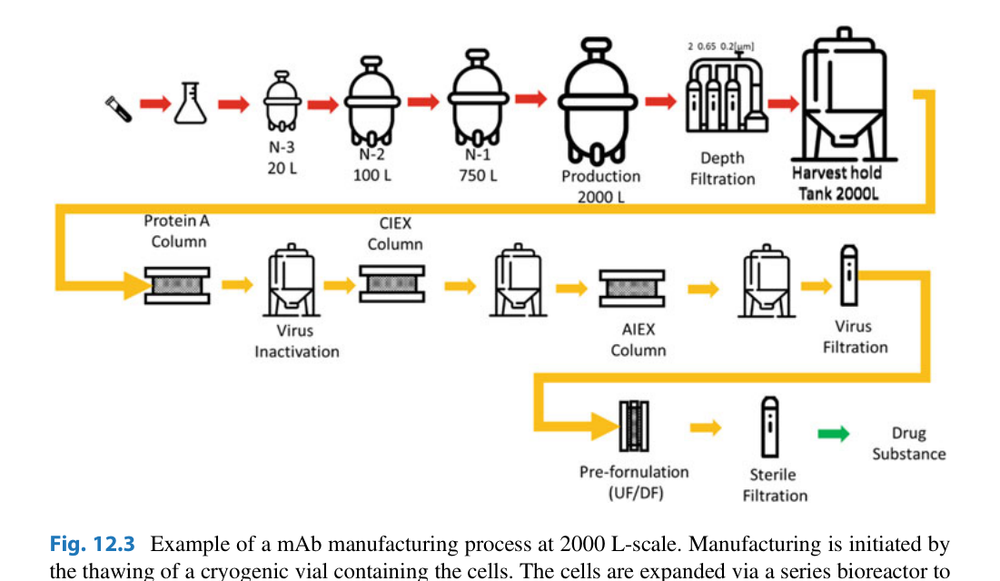
모든 제조 운영은 현행 우수의약품제조관리기준(current Good Manufacturing Practice, cGMP) 하에 수행되어야 한다. GMP는 의약품 제조에 대한 제약 규정으로 의약품의 품질, 안전성, 추적가능성, 재현성을 보증한다. GMP는 WHO, FDA, EMA와 같은 여러 보건당국에 의해 기술되고 감사된다. GMP의 기본 원칙은 아래와 같다.
- 제조 시설은 청정 구역과 제조 구역을 유지해야 한다.
- 제조 시설은 제품을 사람 소비 또는 사용에 안전하지 않게 만들 수 있는 혼입물 및 알레르겐에 의한 교차오염을 방지하기 위해 관리된 환경 조건을 유지해야 한다.
- 제조 공정은 명확히 정의되고 관리되어야 한다. 모든 critical한 공정은 일관성과 규격 부합을 보장하기 위해 밸리데이션된다.
- 제조 공정은 관리되어야 하며 공정에 대한 변경은 평가되어야 한다. 약물 품질에 영향을 미치는 변경은 필요에 따라 밸리데이션된다.
- 지침과 절차는 우수 문서 관리 기준을 사용하여 명확하고 모호하지 않은 언어로 작성되어야 한다.
- 작업자는 절차를 수행하고 문서화하도록 교육받아야 한다.
- 정의된 절차와 지침이 요구하는 모든 단계가 실제로 수행되었고 식품 또는 의약품의 양과 품질이 예상대로였음을 입증하는 기록을 제조 중 수기 또는 전자적으로 작성해야 한다. 일탈은 조사하고 문서화해야 한다.
- 배치의 전체 이력을 추적할 수 있는 제조(유통 포함) 기록을 이해 가능하고 접근 가능한 형태로 보관해야 한다.
- 제품 유통은 제품 품질에 대한 위험을 최소화해야 한다.
- 판매 또는 공급된 배치를 회수하기 위한 시스템이 갖춰져야 한다.
- 시판 제품에 대한 불만은 검토되어야 하며, 품질 결함 원인을 조사하고 결함 제품에 대해 적절한 조치를 취해야 한다.
치료용 mAb 원료의약품의 상업 규모 제조원가(cost of goods, CoG)는 전형적으로 30~60 $/g 범위이다. 그러나 CoG 성능은 전체 공정 성능(수율, 생산성, 원료 비용), 제조 시설 가동률, 현지 세금 또는 로열티에 크게 의존한다. mAb 비용 범주 예가 문헌에 기술되어 있다.
12.17 의도된 용도 및 mAb 완제의약품 제형화에 대한 고려사항
mAb 치료제의 의도된 용도는 제품 개발 프로그램 초기에 고려된다. 전형적으로 목표 제품 프로파일(TPP)의 첫 버전은 전임상 개발 단계에 제안된다. 이 TPP는 전형적으로 의약품의 의도된 유통기한, 투여 방식, 특정 장치(예: 자동주사기(auto-injector)) 필요성을 고려한다. 크기와 결합된 치료용 mAb의 복잡한 구조는 비경구(parenteral) 투여 외 전달 방법을 개발하는 데 도전이다. 의약품의 경우 경구 전달이 일반적으로 선호되는 방법이다. 그러나 치료용 mAb의 경구 투여는 위장관 분해(gastrointestinal degradation), 낮은 생체이용률, 느린 흡수로 제한된다. 일부 초기 치료 개발 프로그램은 소화되지 않고 장관을 통과할 수 있는 전달 시스템이나 비강 및 폐 경로 투여를 탐색하고 있다. 그러나 오늘날 이들은 위장관 분해와 낮은 생체이용률을 포함한 동일한 단점 다수로 제한된다. 따라서 대부분의 치료용 mAb는 정맥 내(intravenous, i.v.) 또는 피하(s.c.) 주사로 투여되며, 주사가 mAb의 주요 전달 시스템이다. mAb 제품의 적절한 정맥 내 또는 피하 제형을 개발할 때 동결건조(lyophilized) 및 액상 형태를 모두 고려할 수 있다. 그러나 최근 경향은 액상 제형을 선호하는데, 이는 흔히 개발이 더 쉽고 빠르기 때문이다. 액상 제형은 동결건조 제형보다 구성요소가 적으며 제형 또는 동결건조 사이클 최적화가 많이 필요하지 않다. 나아가 최근에는 프리필드 시린지(Pre-filled Syringe, PFS) 또는 펜 장치(Pen device)와 같은 자가 투여(self-administered) 전달 시스템에 대한 관심이 증가하였다. 자가 투여는 다른 주사 방식에 비해 환자 순응도 증가, 사용 용이성 향상, 통증 감소, 투여 오류 위험 감소의 장점을 제공한다. 액상 제형을 포함할 때 자가 투여 전달 시스템 개발이 더 쉽다.
12.18 제형 개발
mAb 분해는 mAb 내 특정 아미노산 잔기의 화학적 분해, 3차 구조 소실에 의한 물리적 분해, 또는 용액 내 응집체 형성을 위한 mAb 단량체(monomer)의 공유 또는 비공유 응집으로 발생할 수 있다. 제형 개발(formulation development)은 액상 제형에서 허용 가능한 장기 안정성과 고단백 농도를 달성하는 것을 목표로 한다. 이는 보통 용액의 pH와 긴장도(tonicity)를 조절하고, mAb 구조를 안정화하며, 용기/마개 표면(container/closure surface)에 대한 표면 변성 또는 흡착을 방지하고, 제품 분해를 줄이기 위한 다양한 부형제(excipient) 스크리닝으로 달성된다(표 12.2). mAb 제품 제형에 사용되는 부형제는 이상적으로 적절한 미국약전(USP)을 충족하고, FDA 무효성분 데이터베이스(Inactive Ingredient Database)에 포함되거나, 국제제약부형제협의회(International Pharmaceutical Excipient Council, IPEC)가 정한 제약 등급 부형제 제조 기준을 준수해야 한다. 제형 pH 조절을 위한 적절한 완충액 외에도 부형제는 다음을 포함할 수 있다.
- 삼투압(osmolality) 조절을 위한 염화나트륨(sodium chloride)
- 용기 마개 또는 공기-액체 계면(air-liquid interface) 표면과의 상호작용 조절을 위한 계면활성제(예: 폴리소르베이트(polysorbate))
- 동결 액체로 장기 보관 중 mAb 안정화를 위한 동결보호제(cryoprotectant)(예: 수크로스(sucrose) 또는 트레할로스(trehalose))
- mAb가 금속 이온 촉매 산화에 민감한 경우 킬레이트제(chelating agent)(예: EDTA)
표 12.2 mAb 제형 예
| 제품명(성분명) | 제형 | 농도(mg/mL) | 완충액 및 부형제 | 보관 조건(℃) | 유통기한(개월) |
|---|---|---|---|---|---|
| Actemra(토실리주맙(tocilizumab)) | 액상/시린지 | 180 | 히스티딘, 아르기닌, 메티오닌, 폴리소르베이트 80, pH 6.0 | 2~8 | 30 |
| Avastin(베바시주맙(bevacizumab)) | 액상 | 25 | 인산나트륨, 트레할로스, 폴리소르베이트 20, pH 6.2 | 2~8 | 24 |
| Enbrel(에타너셉트(etanercept)) | 액상/펜/시린지 | 50 | 인산나트륨, 아르기닌, 수크로스, 염화나트륨, pH 6.1~6.5 | 2~8 | 30 |
| Humira(아달리무맙) | 액상/펜/시린지 | 100 | 만니톨, 폴리소르베이트 80, pH 5.2 | 2~8 | 24 |
| Orencia(아바타셉트(abatacept)) | 액상/펜/시린지 | 125 | 인산나트륨, 수크로스, 폴록사머 188, pH 6.8~7.2 | 2~8 | 24 |
| Simponi(골리무맙(golimumab)) | 액상/펜/시린지 | 100 | 히스티딘, 소르비톨, 폴리소르베이트 80, pH 5.5 | 2~8 | 24 |
| Zinbryta(다클리주맙(daclizumab)) | 액상/펜/시린지 | 150 | 염화나트륨, 숙신산나트륨, 숙신산, 폴리소르베이트 80, pH 6.0 | 2~8 | 36 |
점도(viscosity), 용해도(solubility), 응집, 유백광(opalescence)은 고농도 항체 제형(>100 mg/mL) 개발을 제한한다. 수 밀리리터의 주사액의 피하 분포를 더 넓은 부위에 걸쳐 촉진하고 무통 투여를 가능하게 하기 위해, 재조합 사람 히알루로니다제(recombinant human hyaluronidase, rHuPH20)가 최근 일부 mAb의 액상 피하 제형(Herceptin SC 및 MabThera SC)에 포함되었다. 아미노산 블렌드 첨가와 같은 다른 접근법은 고농도 제형에서 단백질을 안정화하고 응집을 최소화하며 점도를 낮추고 주사기 사용성(syringeability)을 개선하도록 설계되었다. 이 접근법을 이용하여 일부 mAb 액상 제형은 최대 200 mg/mL 농도에 도달할 수 있다.
12.19 맺음말
요약하면, 재조합 mAb의 치료 성능은 작용 방식, 효능, 표적에 대한 친화도에만 의존하지 않는다. 규제기관은 안전성 또는 유효성 우려를 방지하기 위해 중요 품질 특성을 통제·최소화함을 명확히 입증할 것을 기대한다. 이는 분자의 적절한 공학과 제조 매개변수의 건실한 관리로 달성된다. 치료용 mAb의 성공은 또한 환자 또는 의료 전문가를 위한 사용 용이성과, obviously, 제조 및 유통 비용에 의존한다. 따라서 우수한 제조성과 시장성 있는 의도된 용도는 고려해야 할 핵심 요소이다.
13장 단클론 항체 상류 공정을 위한 진핵생물 발현 시스템
Lina Heistinger, David Reinhart, Diethard Mattanovich, Renate Kunert
핵심어(Keywords): 상류 공정(upstream processing) · 제품 품질 특성(product quality attributes) · 숙주 세포주(host cell line) · 세포 배양 배지(cell culture medium) · 환경 배양 파라미터(environmental cultivation parameters) · 바이오리액터 운전 방식(mode of bioreactor operation) · 효모(yeast) · 사상균(filamentous fungi) · 당쇄공학(glycoengineering) · 항체 단편(antibody fragments)
이 장에서 배우게 될 내용: 단클론 항체(monoclonal antibody, mAb)는 인체 치료, 진단 및 영상화에 사용되는 생물의약품(biopharmaceuticals) 중 가장 큰 군을 차지한다. 인간 유사 번역후 변형(posttranslational modification)을 지닌 전장(full-length) mAb는 거의 전적으로 포유동물 세포 배양(mammalian cell culture)에서 발현된다. 유전공학(genetic engineering) 기법과 공정 개발의 진보는 최적화된 세포주와 제조 공정의 개발을 가능하게 한다. 생산 공정의 수율에 영향을 미치는 주요 인자는 목표 바이오매스(biomass) 축적까지의 시간, 공정 기간 및 사용 세포주의 비생산성(specific productivity)이다. 본 장에서는 세포주, 배양 배지, 배양 파라미터 및 공정 운전 방식이 제품 수율과 품질에 기여하는 바를 논한다. 포유동물 세포 배양 외에도 효모와 사상균은 재조합 단백질 생산을 위한 널리 사용되는 진핵생물 발현 시스템(eukaryotic expression system)이다. 이들은 mAb 생산에 필요한 번역후 변형을 수행할 수 있으나 단백질 당쇄화(glycosylation)의 차이를 고려해야 한다. 본 장은 전장 mAb와 항체 단편의 생산 숙주로 사용되는 효모, 사상균 및 고등 진핵생물 종을 개관하고 효율적 mAb 생산에 필요한 핵심 세포·공정 공학 단계를 강조한다.
13.1 도입
13.1.1 항체와 다양한 항체 포맷
단클론 항체와 항체 단편은 연구, 진단 및 질환 치료에 적용되는 중요한 생명공학 제품이다. 가장 흔히 사용되는 항체 부류는 면역글로불린 G(immunoglobulin G, IgG)이며, 이는 이황화 결합(disulfide bond)으로 연결된 2개의 중쇄(heavy chain)와 2개의 경쇄(light chain)로 구성된 약 150 kDa의 이종사량체(heterotetramer) 분자이다. 각 사슬은 추가적인 사슬 내 이황화 결합으로 안정화되며, 불변 부위(constant region, 중쇄의 CH1–CH3 도메인 및 경쇄의 CL)와 결합 특이성을 결정하는 가변 도메인(variable domain, VH 및 VL)으로 구성된다. IgG의 중쇄는 CH2 도메인에 1개의 N-당쇄화 부위를 포함하며, 당쇄(glycan)의 존재와 구조는 항체 이펙터 기능(effector function)에 중요하다.
가장 널리 사용되는 항원 결합성 항체 단편은 VH-CH1과 VL-CL 도메인이 이황화 결합으로 연결된 Fab 단편(Fab fragment), 그리고 VH와 VL 도메인만이 링커 펩티드(linker peptide)로 연결된 단일사슬 가변 단편(single-chain variable fragment, scFv)이다. 또 다른 중요한 항체 포맷은 낙타과(camelid)와 상어에서 자연적으로 생산되는 중쇄 단일 항체(heavy-chain only antibody)의 항원 결합 도메인에서 유래한 단일 가변 도메인(single variable domain, VHH) 항체 또는 “나노바디(nanobody)”이다.
13.1.2 제품 품질 특성
제품 품질은 생체활성(bioactivity), 약동학(pharmacokinetics), 면역원성 위험(immunogenicity risk) 및 안전성에 직접 영향을 미치므로 모든 생체분자에 중요한 문제이다. mAb의 경우 주요 품질 특성은 통상 (1) 당쇄화(glycosylation), (2) 전하 분포(charge distribution), (3) 분자 크기(molecular size), (4) 산화(oxidation), (5) 구조(structure)와 관련된 변이체(variant)를 포함한다. 여기에 공정 관련 불순물(process-related impurity), 예컨대 외래 인자(adventitious agent), 숙주 세포 단백질(host cell protein, HCP), DNA가 추가된다. 언급된 품질 특성은 발현 시스템(숙주 세포주), 배양 배지 및 제조 공정 중 바이오리액터(bioreactor) 내 조건에 의해 크게 영향을 받는다.
13.1.2.1 당쇄화
mAb 중쇄의 주된 올리고당(oligosaccharide) 구조는 이분지형 복합형(biantennary complex-type) 구조로, 대부분 중심부 푸코실화(core-fucosylated)되며 부분적으로 이등분 N-아세틸글루코사민(bisecting N-acetylglucosamine)을 포함하고, 소량은 안테나에 1개 또는 2개의 시알산(sialic acid) 잔기를 지닌다. 가장 유의한 변이는 갈락토실화(galactosylation) 정도와 절단형 당형(truncated glycoform)의 비율에 의해 결정된다. 갈락토실화는 C1q에 대한 항체 결합 증가를 통해 보체 의존성 세포독성(complement-dependent cytotoxicity, CDC)을 매개하지만, 말단 갈락토스 잔기는 혈청 반감기(serum half-life)에 영향을 미치지 않는다. 푸코실화(fucosylation)는 혈청 IgG의 80% 이상에서 자연적으로 나타나지만, 비-푸코실화 IgG는 FcγRIIIa 수용체 결합 향상을 통해 항체 의존성 세포 매개 세포독성(antibody-dependent cell-mediated cytotoxicity, ADCC)을 유의하게 증가시키는 것으로 나타났다. 중심 만노스(mannose) 잔기에 결합하는 이등분 N-아세틸-글루코사민도 ADCC를 증강하는 중요한 당 모이어티(moiety)이다. 시알릴화(sialylation)는 일반적으로 혈청 반감기에 유익한 효과로 알려져 있으나, 말단 시알산은 ADCC를 감소시킬 수 있다. 마지막으로 비-당쇄화 중쇄 및 고-만노스형(high-mannose type) 당쇄 구조도 통상적으로 발견된다.
13.1.2.2 전하 분포
전하 관련 mAb 변이체의 가시화(visualization)는 바이오공정 또는 제제/보관 조건에서 비롯되었을 수 있는 화학적·효소적 변형에 대한 통찰을 제공한다. 전하 분포는 통상 mAb 제제를 서로 다른 피크 분획(주 피크, 산성 영역, 염기성 영역)으로 크로마토그래피 분리하여 분석한다. 예컨대 산성 전하 변이체(acidic charge variant)는 당-변이체 및/또는 탈아미드화(deamidation) 반응에서 발생할 수 있는 반면, 아스파르트산의 이성질화(isomerization), N-말단 파이로글루탐산(pyroglutamic acid), C-말단 라이신(lysine), C-말단 프롤린(proline) 또는 류신 아미드화(amidation)는 염기성 전하 변이체를 유발할 수 있다.
13.1.2.3 분자 크기
고분자량 종(high molecular weight species, HMWS)은 단백질 응집(aggregation), 즉 이량체(dimer) 형성으로 인해 발생한다. 단백질 골격 절단 단편과 같은 저분자량 종(low molecular weight species, LMWS)은 mAb 단량체(monomer)에 비해 낮거나 현저히 감소된 활성과 함께 생체 내 면역원성 또는 약동학적 특성에 부정적으로 영향을 줄 수 있는 신규 에피토프(epitope)를 노출한다. HMWS와 LMWS 모두 mAb의 크기 이질성(size heterogeneity)에 기여하며 약물 안전성과 유효성에 중요하다.
13.1.2.4 산화
메티오닌(methionine)의 산화는 표적에 대한 mAb 결합 친화도(affinity)에 간섭하여 유효성을 감소시킬 수 있으며, 특히 상보성 결정 영역(complementarity-determining region, CDR) 내에서 산화가 일어날 경우 그러하다.
13.1.2.5 구조
서열 변이체(sequence variant)는 DNA 돌연변이 또는 아미노산 오삽입(misincorporation)으로 인한 오류 아미노산 치환으로, 잘못 접힌(misfolded) 또는 응집된 mAb를 초래할 수 있다. 시스테인(cysteine) 치환은 유리 설프하이드릴 변이체(free sulfhydryl variant), 예기치 않은 이황화 결합 및 변형된 이황화 연결을 형성할 수 있다.
13.2 포유동물 세포에서의 항체 생산
13.2.1 숙주 세포주
CHO(Chinese hamster ovary), NS0, Sp2/0, HEK293(human embryonic kidney 293) 및 PER.C6 세포는 재조합 mAb 발현을 위한 가장 대표적인 숙주 세포주이다. 그러나 인체 치료용으로 승인된 mAb 중에서는 CHO, NS0 및 Sp2/0 세포에서 생산된 제품만이 해당된다. 이들 세포주는 모두 현탁 바이오리액터에서 비교적 배양이 용이하고 상당한 생산 특성을 보이며 적절한 번역후 변형을 지닌 mAb를 분비한다. 모든 불멸화(immortalized) 세포주는 염색체 수가 불균일한 이수성(aneuploid)이므로 동일 기원의 세포 집단 사이에도 차이가 존재한다. 예컨대 CHO 세포는 최초 도입 이후 광범위한 돌연변이 유발과 클론 선별을 거쳐왔다. 염색체 절편의 여러 결실(deletion), 전좌(translocation) 또는 재배열(rearrangement)은 서로 다른 CHO 계통, 즉 CHO-K1, CHO-S, CHO-DG44 및 CHO-DXB11 사이의 상당한 유전적 이질성(heterogeneity)을 초래하였다. 특히 일부 CHO 세포주는 동일한 mAb를 동일 조건에서 발현시킬 때 단백질 생산 또는 바이오매스 합성 중 어느 하나를 선호하도록 진화하였다. CHO 숙주 세포주 사이의 생산 합성 속도 차이는 번역 기구(translational machinery)의 용량과 처리 효율 차이에서 비롯될 수 있다. 예컨대 CHO-K1의 더 큰 소포체(endoplasmic reticulum, ER)와 높은 미토콘드리아 질량은 CHO-DUXB11(DHFR 결핍주)에 비해 높은 생산성과 연관되었다. 그러나 CHO-K1과 CHO-DG44의 조상으로 여겨지는 단일클론 집단 내에도 상당한 이질성이 존재한다. 더욱이 목적 유전자로 세포를 형질감염(transfection)시키면 발현 수준과 증식 속도가 다른 수천 개의 클론이 생성된다. 따라서 적용 세포주와 무관하게 원하는 형질을 지닌 최종 생산 클론을 선별하기 위해 상당한 스크리닝 활동이 수행되어야 한다. 당쇄화와 관련하여 서로 다른 숙주 세포주 사이의 일반적 차이가 확인되었다.
인간 세포주, 즉 PER.C6와 HEK는 완전한 인간 생산 기구를 보유하여 정확한 번역후 변형과 인간과 동일한 당쇄화를 제공한다는 명백한 이점을 지닌다. HEK 세포는 단지 일과성(transient) mAb 발현용으로만 고려된다. HEK 세포는 높은 수준의 형질전환(transformation) 특성을 지니며 이는 발현 단백질의 당쇄화 패턴에 영향을 줄 수 있다. 개별 사례에서 HEK 세포 유래 mAb는 CHO 세포 유래보다 낮은 시알릴화를 보였다. CHO와 BHK를 포함한 햄스터 유래 세포주는 뮤린(murine) 세포주와 달리 인간 면역원성 당쇄 에피토프인 알파-gal(alpha-gal)과 Neu5Gc를 발현하지 않는다. 반면 CHO 세포는 말단 연결 α-2,6-시알산과 이등분 N-아세틸글루코사민(GlcNAc)을 부가하는 α-2,6-시알릴전이효소(α-2,6-sialyltransferase, α-2,6-SiaT)와 β-1,4-N-아세틸글루코사미닐전이효소(GnT-III)를 발현하지 않으며, 대신 N-당쇄 모이어티의 α-2,3-연결 말단 시알릴화만을 생성한다. CHO-DG44/DXB11과 같은 디하이드로폴레이트 환원효소(dihydrofolate reductase, DHFR) 결핍주 및 글루타민 합성효소(glutamine synthetase, GS) 발현계는 유전자 증폭(gene amplification)과 고생산 클론 선별에 널리 활용되는 증폭 시스템에 해당한다.
13.2.2 세포 배양 배지
초기 세포 배양 배지는 세포에 미네랄, 지질, 호르몬, 대사산물 및 유익 단백질(예: 성장 인자)의 풍부한 공급원을 제공하기 위해 혈청(serum)을 포함하였다. 공정 강건성(robustness)에 부정적으로 영향을 줄 수 있는 로트 간 변동(lot-to-lot variability) 위험과 외래 인자(예: 바이러스, 프리온, 마이코플라스마) 도입의 잠재적 위험을 피하기 위해 무혈청 배지(serum-free medium)가 개발되었다. 이러한 배지에서는 혈청을 통상 펩톤(peptone), 즉 효모, 식물(예: 대두 또는 밀) 또는 카제인 유래의 수용성 단백질 가수분해물로 대체한다. 펩톤은 화학적으로 정의되지 않았으며(chemically undefined) 펩티드, 아미노산, 무기염, 지질, 비타민 및 당을 포함한다. 펩톤은 증가된 재조합 단백질 발현과 연관된 세포 증식 촉진 효과를 나타낼 수 있다. 그러나 화학적으로 정의되지 않은 특성, 로트 간 변동 및 비특이적 효과는 바이오공정의 강건성을 저하시킨다. 오늘날 대부분의 생산 공정은 완전 화학조성 배지(fully chemically defined medium)에 의존한다. 이들 배지는 가장 진보되고 고가인 제제로, 완전히 정의되고 동물 성분이 없는 고도로 정제된 재조합 단백질 및/또는 호르몬 공급원을 포함하여 낮은 배치 간 변동과 높은 공정 강건성 하에 높은 세포 배양 성능을 가능하게 한다.
세포주 개발, 클론 스크리닝·분리, 공정 모니터링·제어 향상과 같은 다른 진보 외에도 배지 개발은 지난 수십 년간 세포·제품 농도를 계속 증가시키는 데 특히 기여하였다. 30년 전에는 1주간 운전되는 단순 회분 배양(batch culture)에서 세포 농도 3×10⁶ cells/mL, 역가(titer) 100 mg/L에 정점을 이루었으나, 20년 후 배지 제제와 공급 전략(feed strategy) 개선으로 훨씬 긴 공정 기간, 높은 세포 밀도 및 1–5 g/L의 mAb 역가가 가능해졌다. 오늘날에는 10 g/L를 초과하는 유가배양(fed-batch) mAb 역가도 현실이 되고 있다. 시판되는 수많은 배지 제제에도 불구하고 각 클론은 세포 배양 배지(및 환경 배양 조건)에 대한 개별 요구를 지니며 이는 발현 산물에 따라 더욱 확대되므로, 배지 개발은 새로 생성된 각 세포주에 대한 고유 활동이다.
더 높은 역가 추구 외에도 초점은 제품 품질과 공정 일관성을 제어할 수 있는 능력으로 이동하였다. 제품 품질과 관련하여 당쇄화가 특히 중요하며 조절을 위해 다양화할 수 있는 인자가 다수 존재한다. 바이오리액터 내 환경 공정 조건(예: 용존산소, pH, 온도, pCO₂, 공정 기간) 외에도 특정 대사산물, 영양소 및 미량원소의 가용성이 당쇄화에 영향을 미친다. 예컨대 고농도 암모니아는 말단 당쇄화를 방해하므로 바람직하지 않다. 포도당(glucose)과 글루타민(glutamine)은 세포의 주요 에너지원이며 N-당쇄화에 필수적인 세포 내 뉴클레오티드-당(nucleotide-sugar) 합성을 위한 중요한 기질이다. 글리세롤(glycerol)은 시알릴화를 증강하는 것으로 나타났다. 갈락토스(galactose), 유리딘(uridine) 또는 미량원소 망간(manganese)은 갈락토실화에 직접 영향을 미친다. 일반적으로 미량원소는 다양한 효소와 수송체(예: 당전이효소, 만노시다제, 리소좀 가수분해효소)의 활성을 조절하므로 당쇄화에 영향을 미친다. 또한 망간, 아연, 코발트와 같은 미량원소는 LMWS 형성을 감소시키는 것으로 나타난 반면, 구리는 반대 효과를 보였다.
13.2.3 환경 배양 파라미터
바이오공정은 높은 세포·제품 농도에 도달하도록 세포 배양을 촉진하는 특정 설정값을 필요로 한다. 배양 운전 파라미터는 공정 최적화 중 빈번히 표적화되며 물리적 파라미터와 화학적 파라미터를 포함한다. 가장 중요한 물리적 파라미터는 온도, 가스 유량 및 교반 속도이다. 핵심 화학적 파라미터는 용존산소(dissolved oxygen, DO), 이산화탄소, pH, 삼투압몰농도(osmolality), 산화환원 전위(redox potential) 및 기질, 아미노산, 노폐물을 포함한 대사산물 수준을 포함한다. 작은 변화도 발현 산물의 수율과 품질에 해로운 영향을 줄 수 있으므로 이들 파라미터 조절 시 주의가 필요하다.
동물 세포 배양 공정의 온도는 대부분 생리값인 37℃로 설정된다. 문헌에서는 약 25–39℃ 범위가 조사되었으나 30–37℃에 분명한 초점이 있다. 온도 감소는 일반적으로 세포 비증식 속도를 감소시키며 배양 수명 연장, 영양소 소비 감소, 생존율 개선, 프로테아제(protease) 활성 감소와 같은 다른 긍정적 효과와 동반된다. 또한 저온 조건은 세포 주기에 영향을 미쳐 세포 비생산성을 증가시켜 제품 수율을 개선할 수 있다. 그러나 이러한 효과는 세포주 의존적이다. 배양 온도의 변화는 단백질 당쇄화와 같은 제품 품질 특성에도 영향을 미치는 것으로 보고되었으므로 이 파라미터를 면밀히 모니터링해야 한다.
배양 pH는 세포 증식과 생산성에 크게 영향을 미치는 또 다른 중요한 파라미터이다. 동물 세포의 통상적 pH 설정값은 중성에서 약알칼리성(7.0–7.2)이다. 약산성 pH(6.8–7.0)에서는 세포가 감소된 대사율을 나타내고 더 느리게 증식하는 경향이 있다. 약알칼리성 pH(>7.2)에서는 동물 세포의 대사가 더 활발해지는 경향이 있다. 재조합 단백질 생산에 대한 pH의 효과는 세포주 특이적이다. 일부 보고는 7.6–7.8의 더 알칼리성 pH에서 더 높은 비생산성을 주장한다. 다른 그룹은 6.8–7.3 또는 6.85–7.8의 넓은 pH 범위에서 상당히 일정한 수준을 보고한다. 배양 pH의 설정값은 작은 편차도 단백질 당쇄화와 같은 제품 품질 특성 변화를 초래할 수 있으므로 좁은 불감대(dead band) 내에서 제어되어야 한다. pH 6.8–7.8 사이의 설정값은 갈락토실화, 시알릴화 및 미세불균일성(microheterogeneity)에 영향을 줄 수 있다.
DO 설정값은 통상 20–50% 공기 포화도 범위이며 세포에 충분한 산소를 공급하는 데 중요하다. DO 제한은 젖산 생산 증가(산성화)를 초래할 수 있는 반면 높은 DO 값은 세포독성을 유발할 수 있다. 소수 사례에서 DO 값은 생산 속도, 세포 대사 및 당쇄화에 세포·제품 특이적 효과를 발휘하였다.
용존 CO₂는 배양 pH를 산성화시키며 바이오리액터에 다량의 CO₂가 포집될 경우 염기 첨가를 필요로 한다. 이는 삼투압몰농도를 증가시키므로 바람직하지 않다. 높은 CO₂ 수준(>120 mmHg)은 세포 배양에 억제 효과를 발휘하고 제품 품질에 영향을 줄 수 있다.
세포 배양 배지의 삼투압몰농도는 통상 260–320 mOsm/kg 범위이다. 유가배양 중 염기 첨가 또는 과도한 공급 시 삼투압몰농도 값은 훨씬 높은 수치로 증가한다. 고삼투압(hyperosmolality)은 종종 증가된 세포 크기와 감소된 세포 증식과 연관되었다. 특히 감소된 세포 증식(또는 증식 정지)은 일부 세포주에서 세포 비생산 속도와 역가에 긍정적 효과를 발휘한다. 마지막으로 바이오리액터로부터의 수확(harvest) 시점은 결정적 효과를 지닐 수 있다. 장기 배양이 통상 높은 제품 농도 축적을 가능하게 하지만, 발효 말기로 갈수록 세포 생존율은 자연히 감소하고 용해된 세포는 세포 내 내용물을 방출한다. 따라서 글리코시다제(glycosidase)와 같은 분해 효소뿐 아니라 프로테아제도 제품과 접촉하여 제품 품질과 양을 저하시킨다.
13.2.4 바이오리액터 운전 방식
mAb 제조를 위해 바이오리액터는 원칙적으로 서로 다른 운전 방식으로 가동될 수 있다. 역사적으로 최초 생산 공정에는 회분 배양(batch cultivation)이 사용되었으며 가장 쉬운 운전 방식이다. 접종 후 최대 세포 증식은 영양소(예: 포도당, 글루타민) 제한 또는 노폐물(예: 암모니아, 젖산) 억제에 의해 결정된다. 비교적 낮은 세포·제품 농도로 인해 회분 배양은 오늘날의 바이오산업 요구에 권장되지 않는다.
유가배양(fed-batch cultivation) 중에는 영양소가 바이오리액터 내 세포에 (반)연속적으로 공급된다. 영양소의 제어된 첨가는 영양소 고갈의 제한 효과를 완화하고 통상 배양 수명, 세포 농도, 세포 비생산 속도 및 제품 수율을 증가시킨다. 추가 증식의 제한은 대사 부산물 축적 또는 농축 공급 배지의 정기 첨가로 인한 높은 삼투압몰농도에서 비롯된다. 오늘날 유가배양은 mAb 제조의 표준이다.
동물 세포의 연속 배양(continuous cultivation, 예: 항상화 배양 chemostat)은 신선 배지를 바이오리액터에 연속 첨가하는 한편 사용된 배지를 연속 수확하는 것을 특징으로 한다. 이러한 배양 유형에서는 정상 상태(steady state)가 요구되며, 이 동안 일정 조건(예: 세포 비증식·생산 속도, 영양소·대사 부산물·제품·세포 농도, 배양 부피, 용존산소 농도, pH)이 달성될 수 있다. 이는 세포와 제품에 비교적 안정한 환경을 조성하며 불안정한 제품에 특히 유익하다. 그러나 통상 상당히 낮은 세포 농도에 도달하므로 항상화 배양은 mAb 생산보다는 정상 상태 환경 조건 하에서 다양한 배양 변수의 효과를 연구하는 데 선호된다.
관류 배양(perfusion cultivation)은 연속 배양의 일종으로 신선 배지의 일정 첨가에 의존하는 한편 사용된 배지를 바이오리액터로부터 연속 제거한다. 항상화 배양과 달리 관류 배양은 바이오매스를 최대화하기 위해 원심분리, 내·외부 스핀 필터(spin filter), 중력 침강기(gravity settler), 접선류 필터(tangential flow filter), 담체(carrier) 또는 중공사 모듈(hollow fiber module)과 같은 세포 유지 장치(cell retention device)를 사용한다. 이는 세포 농도를 1×10⁸ cells/mL까지, 그 이상까지 유의하게 개선하며 시공간 수율(space-time yield)도 개선한다. 또한 바이오리액터 내 제품 체류 시간(residence time) 감소는 특히 불안정한(fragile) 제품의 품질에 유익하다. 결과적으로 관류 배양은 최근 다시 인기를 얻었다. 관류 기술의 추가 응용은 이른바 N-1 관류(perfusion)이다. 이 경우 관류는 생산 바이오리액터 종균 열(seed train)의 N-1 단계에서 고밀도 접종을 위한 대량 바이오매스 축적을 돕는다. 결과적으로 증식기 기간이 단축되어 제조 용량이 증가한다. 하이브리드 공정(hybrid process)이라 불리는 대안적 접근에서는 생산 바이오리액터를 초기에 관류 모드로 운전하여 바이오매스를 축적한 뒤, 높은 세포 농도에서 발효 종료까지 유가배양으로 전환한다. 이러한 전략으로 생산 용량을 더욱 높일 수 있다. 유사한 접근은 농축 유가배양(concentrated fed-batch) 공정이다. 그러나 이 공정 유형에서는 세포뿐 아니라 제품도 바이오리액터에 유지하기 위해 한외여과(ultrafiltration) 막을 사용한다.
연속 제조(continuous manufacturing)의 도입은 여러 이점을 수반한다. 예컨대 고수율 관류 배양은 더 작은 생산 바이오리액터 구축을 허용하므로 종균 열의 바이오리액터 수도 줄인다. 이는 초기 자본 투자를 감소시킨다. 더 작은 시설은 제품 성공 여부, 수요 변동, 경쟁, 임상시험 실패, 신규 분자 부류를 포함한 증가하는 임상 파이프라인, 시장 출시 시간 압박 또는 시장 채택 촉진으로 인한 급변하는 시장을 고려할 때 특히 중요한 제조 유연성을 제공한다. 지불자(payer)로부터의 압박과 개발도상 시장 접근은 제조 비용과 신규 투자 자본 감소를 요구한다.
Xu 등은 공정한 비교를 위해 매우 유사한 배지를 사용하여 서로 다른 공정 모드의 성능을 비교하였다. 관류(최대 2.29 g/L/day)와 농축 유가배양 공정(최대 2.04 g/L/day)에서 저밀도 또는 고밀도 접종 유가배양 공정(0.39–0.49 g/L/day)에 비해 훨씬 높은 시공간 수율이 얻어졌다. Bausch 등도 유사 결과를 제시하였는데, mAb 생산 CHO 세포주는 관류 배양(1.10 g/L/day)에서 유가배양 모드(0.31 g/L/day) 대비 3.5배 높은 시공간 수율을 보였다. 두 연구 모두 높은 시공간 수율은 세포 비생산성이 모든 생산 모드에서 유사하였으므로 유지된 높은 세포 농도에 largely 기인하였다. 이는 연속 기술이 공정 강화(process intensification)로 이어질 수 있음을 입증한다.
유가배양과 연속 관류 기술 사이의 경제적 비교는 자본적 지출(capital expenses, CapEx), 운영적 지출(operational expenses, OpEx) 또는 제품 원가(cost of goods, CoG)를 다루기 위해 각 분자마다 개별적으로 수행되어야 한다. 일반적으로 관류 운전 도입은 모든 단위 조작의 설치 면적 감소로 인한 CapEx 절감과 함께할 수 있다. OpEx는 연속 생산에서 배지 소비가 주요 동인이므로 철저한 평가가 필요하다. 낮은 관류 속도에서 시공간 수율을 최대화하고 이상적으로 낮은 배지 비용을 위한 관류 배지 최적화가 OpEx를 낮출 것이다. Bunnak 등의 유가배양과 관류 공정 사이의 수명 주기 및 CoG 평가에서는 두 기술 사이의 유사한 CoG가 계산되었다. 그러나 관류 배양은 더 높은 에너지 요구량(17%), 물 소비(35%) 및 CO₂ 배출(17%)을 보였다. 유가배양 또는 관류 기술 도입 사이의 개별 비교 외에도 관류 공정의 잠재력은 상류 단위 조작이 연속 하류(downstream) 장치에 직접 연결되는 완전 연속 종단간 통합 제조(end-to-end integrated manufacturing) 공정에서 가장 실현될 가능성이 높다.
13.3 효모와 사상균에서의 항체 생산
13.3.1 발현 시스템의 일반적 특성
오늘날 포유동물 세포주는 단클론 항체 생물의약품 생산을 위한 가장 흔한 발현 시스템이다. 이들은 인간 유사 당쇄화를 수행할 수 있으며 통상 최적화된 공정에서 10–16일 내 3–10 g/L의 높은 수율에 도달할 수 있다. 진핵생물로서 효모와 사상균은 일반적으로 복잡한 의약 단백질 생산에 필요한 모든 번역후 변형을 수행할 능력을 지닌다. 주요 이점은 효율적 유전공학 방법의 가용성으로 단순·신속한 균주 개발을 허용한다는 점이다. 미생물로서 효모와 사상균은 단순·저렴한 기질에서 100 g/L 건조 질량을 초과하는 고세포 밀도까지 신속히 증식하며 짧은 공정 시간 내 원하는 단백질의 높은 역가를 얻을 수 있다. 대장균(Escherichia coli)과 같은 원핵(prokaryotic) 시스템과 달리 재조합 단백질은 분비 경로(secretory pathway)로 효율적으로 표적화될 수 있으며, 이곳에서 단백질 당쇄화와 같은 번역후 변형이 일어난다. 또한 세포로부터 분비된 후 정확히 접힌 기능성 산물은 통상 바람직하지 않은 숙주 세포 단백질을 매우 낮은 양으로 포함하는 배양 상청액으로부터 쉽게 정제될 수 있다.
13.3.2 당쇄화와 당쇄공학 생산 균주
단백질 당쇄화는 항체와 같은 많은 복잡한 생물의약품 생산에 중요하다. 진핵생물로서 효모와 사상균은 단백질 N- 및 O-당쇄화를 효율적으로 수행할 수 있다. 그러나 이들은 복합형 포유동물 당쇄에서 발견되는 추가 N-아세틸글루코사민, 갈락토스 및 시알산이 결여된 다양한 수의 만노스를 지닌 고-만노스형 당쇄를 생산한다. 구조와 조성 차이로 인해 진균 당쇄는 인간에서 잠재적으로 면역원성으로 간주된다. 따라서 인간 유사 당쇄를 지닌 제약 관련 단백질을 생산하는 효모 균주 개발에 상당한 노력이 기울여졌다. α-1,6-만노실전이효소(α-1,6-mannosyltransferase) Och1의 결실은 Saccharomyces cerevisiae와 Pichia pastoris에서 단백질 과다-만노실화(hypermannosylation)를 제거하였다. 효모 유사 당쇄화 결실과 이종 당전이효소·당가수분해효소 발현을 결합한 다양한 당쇄공학 접근은 여러 효모 종에서 인간 유사 N-당쇄를 지닌 단백질 생산을 가능하게 하였다. 또한 당쇄공학된 P. pastoris 균주는 인간 유사 당쇄를 지닌 기능성 IgG 생산에 성공적으로 사용되었다. 또 다른 접근은 원하는 당쇄 구조의 정밀 부착을 위한 시험관 내(in vitro) 당쇄화이다. 효모 O-당쇄 공학에 대한 연구는 더 적게 수행되었다. 일반적으로 효모 특이적 O-당쇄화는 일부(전부는 아닌) 단백질-O-만노실전이효소(protein-O-mannosyltransferase, PMT) 유전자의 결실 또는 PMT 억제제 첨가에 의해 부분적으로 억제될 수 있다. 두 전략 모두 P. pastoris와 Ogataea minuta에서 항체 생산과 제품 품질 개선을 보였다. 효모 당쇄공학의 포괄적 고찰은 관련 총설을 참조한다. 사상균 Trichoderma reesei와 Aspergillus oryzae에서의 당쇄공학에 대한 최초 연구는 포유동물 당전이효소에 의한 N-아세틸글루코사민의 성공적 부가를 입증하여 복합 당쇄 구조 합성 가능성을 보였다. 당쇄공학이 효모와 사상균에서 인간 유사 당쇄를 지닌 IgG 생산을 가능하게 하지만, 이들의 주요 적용 분야는 여전히 다양한 비-당쇄화 항체 단편 생산이다.
13.3.3 효모에서의 항체 생산
S. cerevisiae, P. pastoris, Ogataea polymorpha, O. minuta, Kluyveromyces lactis, Yarrowia lipolytica 및 Schizosaccharomyces pombe를 포함하여 많은 서로 다른 효모 종이 재조합 항체 또는 항체 단편 생산에 사용되었다.
분비형 전장 IgG와 Fab 단편의 최초 성공적 생산은 잘 연구된 모델 효모 S. cerevisiae로 수행되었다. S. cerevisiae에서 생산된 최초 단일사슬 Fv(scFv) 항체 단편의 경우 샤페론(chaperone) BiP(효모에서는 Kar2) 또는 단백질 이황화 이성질화효소(protein disulfide isomerase, PDI)의 과발현이 진탕 플라스크에서 제품 역가를 2–8배 증가시켜 최대 20 mg/L에 이르게 하였다. 이후 S. cerevisiae에서 항체 접힘(folding)과 분비를 더욱 개선하기 위한 다양한 균주 공학 전략이 개발되었다. 또한 S. cerevisiae는 항원 특이적 라마 단일 도메인 항체(VHH) 생산에 적합한 것으로 보고되었다.
항체와 항체 단편 생산을 위해 가장 흔히 사용되는 효모는 메틸영양성(methylotrophic) 효모 P. pastoris(Komagataella sp.)이다. P. pastoris의 큰 이점은 유일 탄소·에너지원으로 메탄올(methanol)에서 증식하는 능력으로, 재조합 단백질 생산을 위해 강력한 메탄올 유도성 프로모터(예: PAOX1)를 사용할 수 있다. 또한 P. pastoris는 단순 기질에서 매우 높은 세포 밀도까지 증식하고 단백질을 배양 상청액으로 효율적으로 분비한다. 1995년에 여러 서로 다른 scFv 항체 단편을 0.1 g/L 이상으로 생산한 최초 보고가 있었다. 균주·공정 최적화를 적용하면 이 효모로 1 g/L를 초과하는 scFv 역가에 도달할 수 있다. 분비 경로의 샤페론·접힘 효소 또는 비접힘 단백질 반응(unfolded protein response) 전사인자 Hac1의 과발현은 P. pastoris에서 항체 단편 생산을 증가시키는 것으로 나타났다. 특정 산물의 발현 최적화를 위해 강력한 메탄올 유도성 PAOX1 프로모터의 대안으로 탄소원 의존적·비의존적 프로모터가 다수 이용 가능하다. 더욱이 최적화된 분비 신호(secretion signal)는 재조합 단백질 생산에 긍정적 영향을 보였다. 대장균, CHO 세포 및 P. pastoris에서의 Fab 생산에 대한 비교 연구는 효모 시스템으로 약간 낮은 제품 원가로 유사한 양의 기능성 산물을 생산할 수 있음을 보였다.
P. pastoris 외에도 다른 비전통적(non-conventional) 효모도 항체 단편 생산에 적합한 것으로 나타났다. 효모 K. lactis는 유일 탄소·에너지원으로 젖산(lactate)에서 증식할 수 있으며 식품 산업에서 효소 생산 숙주로 확립되었다. 소수 연구가 K. lactis에서 기능성 scFv의 가용성 생산을 보고한다. 효모 Y. lipolytica로도 유사 수준의 scFv를 얻을 수 있었다. 메틸영양성 효모 O. minuta는 전장 항체 생산에 대해 조사되었다. 프로테아제 결핍 균주 사용, O-당쇄화 억제 및 샤페론 과발현은 모두 이 효모로 기능성 mAb 생산에 긍정적 영향을 미쳤다. 또 다른 대안 효모 발현 시스템은 잘 연구된 분열 효모(fission yeast) S. pombe이다. scFv-GFP 융합 단백질의 성공적 분비는 항체 단편 생산 가능성을 보였다. 서로 다른 발현 숙주를 비교한 최근 연구는 항체 생산을 위한 Kluyveromyces marxianus, Ogataea polymorpha 및 Arxula adeninivorans의 조사도 기술한다.
균주 공학뿐 아니라 공정 최적화도 효모에서의 항체 생산에 큰 영향을 미친다. 가장 흔히는 S. cerevisiae와 P. pastoris 생산에 각각 포도당- 또는 메탄올-제한 유가배양 공정이 사용된다. 글리세롤과 메탄올을 이용한 혼합-공급(mixed-feed) 발효, 유도를 위한 최적화된 메탄올 수준 및 산소-제한 공정이 P. pastoris에서의 항체 생산에 유익한 것으로 기술되었다. 메탄올 농도와 배양 pH 최적화는 4 g/L를 초과하는 scFv의 고수준 생산을 가능하게 하였다. 당쇄공학된 P. pastoris 균주에서 전장 IgG 생산 공정에 대한 실험계획법(design of experiment) 접근은 최대 1.6 g/L IgG를 산출하였으며 개발된 공정은 1200 L 제조 규모로 성공적으로 확대(scale-up)되었다. 또한 연속 공정에서 Fab 단편 생산을 위한 생산 균주·배지 개발 노력도 있었다.
13.3.4 사상균에서의 항체 생산
Aspergillus niger, A. oryzae 및 T. reesei와 같은 사상균은 산업용 효소와 다른 단백질 생산을 위한 확립된 숙주이다. 이들은 매우 높은 분비 능력(secretion capacity)을 지니며 자연적으로 25 g/L를 초과하는 다량의 용해 효소(lytic enzyme)를 배지로 분비한다. 그러나 재조합 단백질에 대해 얻어지는 수율은 통상 유의하게 낮다. 이종 단백질(heterologous protein)을 천연의 잘 분비되는 단백질에 융합시키는 것이 단백질 생산에 유익한 것으로 나타났다. 잘 규명된 서열의 예는 T. reesei 셀로비오하이드롤라제(cellobiohydrolase, CBH1)와 A. niger 또는 Aspergillus awamori 글루코아밀라제(glucoamylase, glaA) 유전자를 포함한다. Fab 중쇄를 절단형 CBH1에 융합시키자 T. reesei에서 Fab 생산이 1에서 40 mg/L로 개선되었다. A. oryzae에서 VHH 생산 최초 시도에서는 Taka-아밀라제 A 신호 서열(sTAA)과 Rhizopus oryzae 리파제 N-말단 영역의 28개 아미노산 절편(N28) 융합으로 73 mg/L VHH를 생산할 수 있었다. 다른 연구에서는 글루코아밀라제-VHH 융합을 사용할 때 배지에서 최대 1 g/L VHH를 얻을 수 있었다. 항체 생산에 적합한 다른 Aspergillus 종은 A. awamori와 A. niger이다. Joosten 등은 A. awamori가 기능성 VHH와 VHH-퍼옥시다제(peroxidase) 융합 단백질 생산에 사용될 수 있음을 보였다. A. niger는 전장 IgG와 Fab 단편 생산에 사용되었다. 항체 사슬을 글루코아밀라제와 최적화된 KexB 절단 부위에 융합시키자 포유동물 유래 IgG와 유사한 특성을 지닌 항체 생산이 가능하였다. 최근에는 모델 진균 Ustilago maydis도 재조합 단백질 생산을 위한 대안 숙주로 조사되었다. 키티나제(chitinase) Cts1의 비전통적 분비 경로(unconventional secretion pathway)는 진균 N-당쇄화를 피하면서 이종 단백질을 분비하는 데 사용될 수 있다. 이러한 접근이 scFv와 다양한 나노바디 생산에 적합함이 나타났으나 얻어진 수율은 여전히 낮다.
일반적으로 단백질 분해 분해(proteolytic degradation)는 사상균에서 이종 단백질 생산에 문제가 될 수 있다. 많은 경우 숙주 프로테아제 결실이 단백질 생산을 개선하는 것으로 나타났다. 또한 BSA 첨가는 A. awamori에서 생산된 VHH의 단백질 분해 분해를 감소시키는 전략으로 사용되었다.
13.4 결론
오늘날 인간 유사 번역후 변형을 지닌 전장 mAb는 거의 전적으로 포유동물 세포 배양에서 생산된다. 개별 mAb 분리를 위해 고전적 하이브리도마(hybridoma) 세포가 여전히 개발되고 있음에도 mAb는 종종 공학 처리되어 유전자 전달 후 표준 숙주 세포주에서 발현된다. 분자생물학 기법의 진보는 생산 공장으로서 세포와 유전자 전달 벡터(vehicle)의 효율적 유전 조작을 가능하게 하였다. 세포주·세포 배양 배지 개발, 클론 스크리닝·분리, 향상된 공정 모니터링·제어의 개선은 포유동물 세포 배양에서 세포·제품 농도의 지속적 증가 경로를 열었다.
효모 또는 사상균 유래 치료용 항체 제품이 아직 시판되지는 않았으나, 효모와 사상균은 항체, 특히 비-당쇄화 항체 단편의 생산 숙주로서 큰 잠재력을 지닌다. 서로 다른 효모와 사상균에서 IgG 생산을 분석한 최근 비교 연구는 이용 가능한 공학 도구가 경쟁력 있는 생산 숙주 개발을 허용할 것이라고 결론지었다. 전반적으로 여기에 제시된 예는 균주와 공정 공학의 조합이 효모와 사상균에서 기능성 항체 제품의 고수준 생산을 가능하게 하며, 이러한 발현 시스템을 항체 생산 공정 개발을 위한 매력적 대안으로 만든다는 점을 보여준다.
핵심 정리(Take Home Messages):
- mAb 제품의 최종 적용은 발현 시스템, 공정 모드 및 하류 공정 노력의 선택을 강력히 결정한다.
- 복잡한 번역후 변형이 필요하다면 포유동물 세포가 선호되는 발현 시스템이다.
- 숙주 세포 공학과 시험관 내 단백질 변형 접근은 효모와 사상균을 mAb 제품을 위한 유망한 대안 발현 시스템으로 만든다.
- 하등 진핵생물(lower eukaryote)은 고전적 회분·유가배양 공정에서 동물 세포 배양보다 빠르게 증식하고 높은 세포 밀도에 도달한다. 고세포 밀도 연속 공정의 최근 개발은 세포 배양 기술이 효모 세포를 따라잡도록 하였다.
14장 항체 검증
Gordana Wozniak-Knopp
14.1 도입
14.1.1 현황과 문제 제기
항체 및 기타 생물학적 스캐폴드(scaffold) 기반 결합자의 검증(validation)은 학계와 상업적 자금 지원 과학계, 그리고 항체를 치료·진단 시약으로 적용하는 연구자에게 중심적 중요성을 유지한다. 이들의 필수 특성은 정확한 표적 특이성(target specificity)과 적절한 친화도(affinity)를 포함한다. 또한 항체 기반 시약은 의도된 적용에 적합(fit-for-purpose)해야 하며 충분한 용해도(solubility), 열안정성(thermostability) 및 보관 안정성을 나타내야 한다. 고유한 표적화 분자로서 항체의 부상은 재현성을 보장하고 시험 프로토콜(protocol) 표준을 설정하는 표준화된 절차 개발을 동반하였다. 항체 검증을 위한 정밀 요구사항 정의는 항체 공학과 제조 분야 선도자들에 의해 과제로 인식되었으며, 이들은 균일 표준을 달성하고 특정 항체 기반 시약의 특성 이해에 투명성을 이끌기 위해 이 복잡한 문제를 용기 있게 다루었다. 관련된 프로토콜은 항체의 생물학적·생화학적·생물리학적 특성의 통합적 그림을 도출하기 위해 방법론적으로 상호 보완적이다. 도출된 합의는 여러 과학 분야 전문가와 최종 사용자(end user)의 기여로 달성되며, 최종 사용자의 특정 요구와 경험은 특성 보고서의 내용에 가치를 더할 수 있다. 이는 실험 재현성을 보장하고 과학 발전을 돕는 기초이다.
특이적 검출 시약으로서 항체의 광범위한 적용은 오랜 역사를 지니며 연구에 사용된 다클론 항혈청(polyclonal antiserum)은 거의 한 세기 전으로, 단클론 항체는 40년 전으로 거슬러 올라간다. 동물 유래 시약의 경우 조제물이 분자 수준에서 전혀 기술되지 않는다는 점은, 잘 규명된 항체 기반 치료제와 뚜렷이 대조되어 놀라움을 준다. 단클론 항체가 단일의 정의된 특이성을 지닌 시약으로 인정되더라도 하이브리도마는 빈번히 1개 초과 경쇄 및/또는 중쇄를 분비하거나, 사슬 중 하나의 발현을 상실하거나 돌연변이되므로, 분자 수준에서의 완전한 특성 규명은 항체 가변 도메인을 암호화하는 존재하는 모든 유전자의 염기서열 분석(sequencing)을 필요로 한다. 또한 시판 항체의 약 50%만이 동족 표적(cognate target)에 대한 특이성을 나타낸다고 알려져 있다. 로트 간 변동(lot-to-lot variability)은 특히 다클론 항체에 내재한다. 이들 시약은 계속 널리 사용되지만 그 정체는 대체로 밝혀지지 않았으며 특성 규명은 면역화에 적용된 항원에 한정된다. 대조적으로 재조합 항체, 비-면역글로불린 분자 인식 스캐폴드(예: DARPIN, 안티칼린(anticalin), 어피바디(affibody), 피브로넥틴 도메인(fibronectin domain)) 및 핵산 기반 친화 시약(압타머(aptamer)와 SOMAmer)과 같은 신규 대체 친화 시약의 활성 성분은 농도, 제제 및 활성 데이터와 함께 분자 수준에서 기술된다. 그러나 단클론 항체가 매우 정의된 방식으로 에피토프와 반응하지만, 이는 항체-항원 상호작용을 항원과 항체 구조의 물리·화학적 변화와 시험 조건에 더 민감하게 만든다. 이는 특이성과 상호작용 역학(kinetics)에 영향을 줄 수 있으며 진단 검사의 표준화를 위한 통일된 참조 방법이 필요하다.
복습 질문: 치료 또는 진단 시약으로 적용되기 위한 항체의 요구사항은 무엇인가? 다클론 및 단클론 항체의 분자적 정의에 대한 장애물은 무엇인가?
14.1.2 다클론 항체의 장점
생물물리학적 다양성에도 불구하고 다클론 항체(polyclonal antibody)가 여전히 널리 사용되는 이유는 무엇인가? 단클론·재조합 항체 조제물과 비교한 다클론의 수많은 이점 중 두 가지 특성이 최전선에 있다. 첫째, 표적 항원 결정인자(antigenic determinant) 다수에 대한 반응성으로 이는 더 높은 민감도(sensitivity)로 이어지며, 둘째, 활성 성분의 생물물리학적 다양성으로 이는 다양한 환경 조건에서 전반적으로 더 안정하게 한다. 두 특성 모두 연구 환경에서 유익하다. 이종 결합(heterogeneous binding)은 서로 다른 특정 실험 조건에서 기능할 가능성이 더 높다. 샌드위치 ELISA에서 다중 또는 가변 항원 에피토프의 효과적 포획은 다클론 항체로 더 효율적으로 수행됨이 오래전부터 인정되었으며, 조직 고정·처리가 다양한 항원 에피토프에 다르게 영향을 줄 수 있는 면역조직화학(immunohistochemistry) 기법에서도 동일하게 확립되었다. 다클론 항체는 다중 항체가 다양한 에피토프와 동시에 상호작용하므로 저발현(low-abundant) 표적 검출에 우수한 것으로 입증되었다. 또한 다클론 항체는 인식에 덜 차별적이어서 1차 항체의 작은 서열·구조 차이에 내성이므로 우수한 2차(secondary) 시약이다. 이러한 특성은 이소타입(isotype)이 매우 다양한 마우스 항체 또는 인종적 기원이 다른 인간 개인 혈청 유래 항체 검출 시에도 귀중한 시약이 되게 한다. 다클론 항체는 이들 시약이 대개 여러 에피토프와 반응하는 여러 항체를 포함하므로 드물게 발생하는 에피토프 인식에 강점을 보인다. 다중-에피토프 결합은 웨스턴 블롯(Western blot) 실험에서 단클론 항체보다 다클론 항체의 더 높은 특이 반응성의 이유이기도 하다. 결론적으로 다클론 항체 특성 규명에서 직면하는 과제는 그 유리한 적용성으로 크게 상쇄된다. 향후 발전은 단클론 항체의 고유 특이성과 생물물리학적 특성 집합에 대해 보상되지만 다클론 시약보다 높은 수준의 정의를 제공하는 희소클론(oligoclonal) 항체의 광범위한 사용을 포함할 가능성이 높다. 파지(phage)와 효모 디스플레이(display)를 결합하여 관심 표적에 대한 수백 가지 서로 다른 항체를 포함하고 재현 가능하게 증폭될 수 있는 다클론 시약을 시험관 내에서 생성한다는 새로운 아이디어가 제안되었다.
복습 질문: 다클론 항체 기반 시약의 이점은 무엇인가? 다클론 항체가 우선적으로 사용되는 방법의 예를 나열하라.
14.2 과학적 응용별 항체 검증을 위한 초석
14.2.1 과학 출판물에서 항체 사용 보고 표준
연구용 항체는 광범위한 생명과학 분야에서 사용된다. 연구용 항체 사용 보고에 대한 공통 합의 표준은 연구자가 실험을 재현하고 제시된 결과에서 도출된 결론을 판단할 수 있게 한다. 과학 출판물의 저자는 현재 연구에 사용된 모든 항체가 각 특정 실험과 종(species)에 대해 검증되었음을 입증하도록 요청받는다.
각 실험 설정은 별도 검증을 필요로 하는데, 이는 특정 적용 또는 심지어 다른 매트릭스(matrix)에서의 항체 특이성이 다른 조건 하에서 동일한 반응성을 보장하지 않기 때문이다. 검증을 뒷받침하는 공개 정보조차 적용과 종에 따라 다를 수 있다.
항체 특성 보고의 첫 단계는 모호하지 않은 식별(unambiguous identification)이며, 이는 고유한 생화학적 조성을 의미한다. 이는 한편으로 항상 고유 식별자를 포함해야 하지만 모든 동의 설명도 포함해야 한다. 이는 시판 항체의 경우 항체 명칭과 카탈로그 또는 클론 번호 및 공급업체, 학술 실험실 유래 항체의 경우 출처 실험실과 관련 참고문헌을 필요로 한다. 나아가 항체에 대한 핵심 정보는 항체가 제기된 숙주 종(host species)과 단클론인지 다클론인지 여부를 포함한다. 항체 배치 번호(batch number)는 특히 다클론 항체뿐 아니라 단클론 항체의 서로 다른 항체 생산 배치 사이 변동으로 인해 관련된다. 결과 해석을 위해서는 항체가 어떤 항원에 대해 제기되었는지 알려져야 하며, 세포·조직 용해물과 같은 복합 시료로 면역화가 수행된 경우 관련 정보가 제공되어야 한다. 마지막으로 정제 방법, 순도 등급 및 활성 시약 함량에 대한 세부사항은 개별 실험 기법의 성능에 중요하다.
복습 질문: 항체 기반 시약 실험 보고를 표준화하는 것이 왜 중요한가? 항체의 모호하지 않은 식별에 포함되는 특성은 무엇인가? 항체 기반 시약 검증에 도움이 되는 다른 정보를 나열하라.
14.2.2 공개 항체 데이터베이스
항체 검증은 복잡한 실험 과정으로, 일정 수준에서는 야생형과 녹다운/녹아웃(knockdown/knockout) 조직의 항체 반응성 비교 및 다른 에피토프에 대한 두 번째 항체 사용과 같은 엄격한 시험을 필요로 한다. 항체 검증에 대한 공개 인용과 개방 데이터베이스(예: 1DegreeBio, Antibodypedia, CiteAb 또는 pAbmAbs)에서의 프로파일 참조는 실험 재현성에 기여한다. 출판물에서의 상세 시약 프로파일링은 그러한 보고서의 영향력을 높일 가능성이 높으며 항체 검색 엔진과 항체 공급업체 데이터 은행에 포함될 수 있다. 국제 생명공학 컨설팅사인 Pivotal Scientific은 17개 주요 항체 비교 웹사이트 목록을 제공한다. 해당 웹사이트는 항체 기반 제품의 설명·평가, 항체 공급업체 포함 범위, 웹사이트 기능성과 렌더링과 같은 일반 특성에 대한 정보를 포함한다.
다음 단락에서는 포털 Antibodypedia를 더 자세히 소개한다. Antibodypedia는 공급자가 자체 검증 결과와 신뢰도 점수를 제출할 수 있도록 하여 항체 검증 정보를 공유하도록 하는 공개 포털로 시작되었으며, 주요 목적은 검증 정보 공유이다. 여기서는 웨스턴 블롯, 단백질 어레이(array), 면역조직화학, 면역형광(immunofluorescence)과 같은 특정 항체 적용에 대한 검증 기준과 제출 규칙이 보고된다. 기여자는 각 항체에 대한 항원 데이터를 포함한 실험적 증거를 제공해야 하며 사용자는 항체 사용에 대한 피드백과 의견을 제공할 수 있다. 따라서 데이터베이스는 적용 특이적 방식으로 수반되는 실험적 증거와 함께 인간 단백질에 대한 공개 항체의 가상 자원을 제공한다.
항체 인용을 위한 또 다른 유용한 참조는 항체 등록소(Antibody Registry)를 통해 부여되는 연구 자원 식별자(Research Resource Identifier, RRID)이다. RRID의 목적은 항체의 모호하지 않은 식별을 가능하게 하며 동일한 항체를 기술하는 다른 출판물을 RRID 링크를 통해 검색할 수 있다.
복습 질문: 공개 항체 데이터베이스의 목적은 무엇인가? 그러한 항체 데이터베이스에 포함되는 정보는 무엇인가?
14.2.3 단백질 친화 시약에 대한 최소 정보 제안(MIAPAR)
항체 특이성 검증과 성능 재현성 표준에 대한 집단적 필요가 과학계에 의해 전달됨에 따라 항체 검증에 대한 광범위한 논의는 보고 관행 표준에 대한 요구를 촉발하였다. 선구적 시도는 2010년 Bourbeillon과 동료들에 의해 단백질 친화 시약에 대한 최소 정보(minimum information about a protein affinity reagent, MIAPAR) 제안으로 도입되었다. 주요 목표는 특정 적용에 대해 특정 표적에 적절한 친화 시약을 식별할 수 있도록 결합자(binder)에 대한 정보 보고 방법을공식적으로 정의하는 것이었다. MIAPAR 준수 보고서는 카탈로그, 데이터베이스 또는 출판물에서 최적 결합자를 선택하는 방법에 대한 정보를 제공하고 피드백 가능성을 통해 정보 공유를 확대해야 한다. 결합자 생산자에게 MIAPAR 파일은 데이터베이스·카탈로그 정보를 연구 출판물로 보완하고 동시에 결합자 비교를 통한 위치 선정을 허용해야 한다. 특히 다클론 항체와 같은 가변 시약의 경우 정기적으로 업데이트되는 기술이 이용 가능한 물질 배치(batch)를 참조해야 한다.
MIAPAR의 중심 목표는 친화 시약-표적-적용 삼자(triad)의 신뢰 가능한 식별이다. 결합자는 통상 표적 단백질 또는 펩티드를 인식하고 복잡 혼합물에서의 상호작용을 포함할 수 있으므로 의도된 표적과 분자 특성에 대한 참조가 이루어져야 한다.
나아가 관례와 명확성을 달성한다는 MIAPAR 목표는 세 가지 기본 기준, 즉 모호성 제거(unambiguity), 충분성(sufficiency) 및 실용성(practicality)을 제안한다. 중요하게 지침은 전문가 집단 내에서 합의되고 기술 진보와 함께 발전해야 한다.
| 기준(Criterion) | 요구사항(Requirement) |
|---|---|
| 모호성 제거(Unambiguity) | 화합물·공정에 대한 표준 명명 사용, 데이터베이스 등록번호 포함 |
| 충분성(Sufficiency) | 정보가 최종 사용자로 하여금 실험 결과 평가, 프로젝트 결과 타당성 해석, 유사 프로젝트와 결과 비교를 가능하게 함 |
| 실용성(Practicality) | 지침이 광범위한 사용 확산을 지원해야 함 |
MIAPAR는 흔히 사용되는 항체 시약 보고 통일을 위한 선구적 인센티브였으나, 특정 적용에서 항체 특이성 검증을 뒷받침하는 데 가장 적합한 실험적 접근은 명시적 권장사항으로 아직 포함되지 않았다. 여러 과학 출판물에 인용된 항체의 정체성·품질·재현성에 대해 공급업체와 최종 사용자 모두에 의해 제기된 유의한 우려로 촉발되어, 항체 품질의 초기 지표로 웨스턴 블롯 데이터를 사용하고 동일 항원을 표적한다고 주장되는 항체들을 구별하라는 요구가 제기되었다. 둘째, 다클론 항체의 변동 감소를 위한 우수 제조 관행이 합의되었다. 가치 있는 제안 중에는 재조합 항체의 선호 사용, 항체 시약의 고유 식별, 면역원(immunogen) 명세 및 출처가 포함된다. 나아가 표준 항체와 리간드의 중앙 국제 은행(banking) 구축이 제안되었으며, 널리 접근 가능한 항체 문서화와 인증이 함께 제안되었다.
복습 질문: MIAPAR 제안의 주요 목표는 무엇이었는가? 시약 포트폴리오에 포함되도록 권장된 특성은 무엇인가? MIAPAR가 제안한 친화 시약 검증을 위한 세 가지 기본 기준을 설명하라.
14.3 항체 검증을 위한 과학적 인센티브
모호하지 않은 항체 식별과 목적 적합 시약이 되게 하는 특성 기술 표준을 어떻게 설정할 것인가? 이는 저명한 과학자 그룹의 중심 과제로, 이들은 항체 과학계에 우수 관행 표준 제안을 제공하기 위해 활동을 조직하였다. 해결책이 주목할 만한 그룹에는 유럽 단클론 항체 네트워크(European Monoclonal Antibody Network, EuroMAbNet), 항체 검증 국제 실무 그룹(International Working Group on Antibody Validation, IWGAV) 및 글로벌 생물 표준 연구소(Global Biological Standards Institute, GBSI)가 포함되었다.
EuroMAbNet은 단클론 항체 생산에 종사하는 잘 확립된 학술 실험실 네트워크이다. 이들의 실용 가이드는 다음을 권고한다: (1) 면역원 선택·설계에 대한 배경 정보 획득, 내인성 항원과의 반응성 확인, (2) 계획된 기법과 관련하여 항체 유형 선택, (3) 높은 평가의 공급업체와 다양한 데이터베이스 특성 찾기. 이들의 관점에서 검증은 사용자의 최선의 이익이며, 이는 연구자가 사용하도록 각 사내 항체, 표적 항원 정체 및 사용될 실험 방법을 고려한 기준·지침 집합을 강조함으로써 드러난다.
IWGAV 실무 그룹은 스탠퍼드 대학교(Stanford University), 예일 대학교(Yale University), MIT, UCSD, 토론토 대학교(University of Toronto), 미국 국립보건원(National Institutes of Health, NIH), 유럽 분자생물학 연구소(European Molecular Biology Laboratory, EMBL), 일본 니가타 대학교 및 스웨덴 생명과학 연구소(Science for Life Laboratory) 등의 연구자로 구성되었다. 이들의 권장사항은 “항체 검증을 위한 제안”으로 요약되어 2016년 Nature Methods에 게재되었다. 실무 그룹은 항체 사용자와 생산자 모두를 위한 항체 평가·품질관리 표준 확립을 목표로 항체 검증을 위한 다섯 가지 “기둥(pillar)” 사용을 제안하였다.
| 검증 전략(Validation strategy) | 목표(Goal) | 방법(Method) |
|---|---|---|
| 유전적(Genetic) | 유전적 조작으로 표적 단백질 수준 감소 | CRISPR 또는 siRNA와 같은 방법으로 표적 단백질 유전자 녹다운(녹아웃), 조작 전후 항체 염색 강도 평가 |
| 재조합 발현(Recombinant expression) | 재조합 발현으로 표적 단백질 발현 증가 | 표적 단백질 발현 수준을 보여주는 항체 비의존적 방법과 비교, 표적 단백질을 서로 다르게 발현하는 두 시료를 두 독립 방법으로 비교·보고 |
| 독립 항체(Independent antibodies) | 표적 단백질에 반응하는 두 항체의 일치 염색 | 비중첩 에피토프에 대한 두 독립 항체 반응성 비교, 최소 두 조직 또는 세포주에서 염색 패턴 비교, 유사 결과 요구 |
| 직교적(Orthogonal) | 항체 비의존적 방법으로 표적 발현 패턴 추적 | 표적 음성 세포주에서 표적 단백질 과발현, 또는 세포주에서 형광 표지 표적 단백질 발현, 과발현 또는 표지된 표적 단백질 신호와 비변형 또는 내인성 표적 단백질 비교 평가 |
| 포획 질량분석(Capture MS) | 질량분석 기반 크기 분석으로 표적 단백질 크기 결정 | 항체 염색 패턴이 포획 MS 방법으로 얻은 결과와 일치해야 하며, 항체로 밝혀진 크기가 포획 MS에서 검출된 표적 단백질 크기에 대응 |
GBSI의 “Asilomar 회의” 초점은 웨스턴 블롯, 면역조직화학, 면역침전(immunoprecipitation) 및 샌드위치 분석(sandwich assay)을 포함한 특정 적용을 위한 항체 인증 표준 개발이었다.
14.4 인간 단백질 지도
14.4.1 인간 단백질 지도 소개
인간 단백질 지도(Human Protein Atlas, HPA) 프로젝트는 세포와 조직에 걸친 단백질 발현 평가를 목표로 한다. 서로 다른 분석에서 검출제로서 항체 성능이 에피토프 결합의 민감도와 특이성 모두에 의존하므로 항체 검증은 프로젝트의 부수 분야로 부상하였다. 연구에 포함된 모든 항체는 정의된 기준 집합을 준수해야 하며 그러한 경우에만 참조 도구로 수용될 수 있다. 표준 품질 보증 외에도 특정 실험 적용을 위한 고도화(enhanced) 항체 검증 전략이 정의되었다.
인간 단백질 지도란 무엇인가? 이는 스웨덴 기반 컨소시엄으로 여러 국제 협력을 포함하며 2003년에 시작되어 Knut and Alice Wallenberg 재단이 자금을 지원하였다. 이 프로젝트는 항체 기반 영상화, 질량분석 기반 단백체학(proteomics), 전사체학(transcriptomics) 및 시스템생물학(systems biology)으로부터의 집단 정보를 이용하여 세포, 조직 및 기관에서 모든 인간 단백질을 지도화하는 것을 목표로 한다. 이러한 지식 자원은 학계와 산업계 과학계에 개방된다.
인간 단백질 지도는 인간 단백질의 게놈 규모 분석의 세 가지 측면에 초점화한다.
- 조직 지도(Tissue Atlas)는 인체 모든 주요 조직·기관에 걸친 단백질 분포를 보여준다.
- 세포 지도(Cell Atlas)는 단일 세포에서 세포하 수준의 단백질 국소화(localization)를 밝힌다.
- 병리 지도(Pathology Atlas)는 단백질 발현 수준을 암 환자 생존과 연관시킨다.
수천 건 인용과 함께 유럽 핵심 자원 ELIXIR은 인간 단백질 지도 프로그램을 인간 건강·질환 분야의 인정 자원으로 인정한다.
14.4.2 인간 단백질 지도의 역사
인간 단백질 지도 웹사이트 첫 버전은 2005년에 출시되었으며 약 700개 항체 기반 단백질 발현 데이터로 구성되었다. 이후 각 신규 릴리스마다 더 많은 데이터와 웹사이트의 새로운 기능이 추가되었다. 2017년 12월자 열여덟 번째 주요 릴리스는 거의 17,000개 인간 유래 단백질을 표적하는 26,000개 초과 항체를 포함하며, 이는 인간 단백질 암호화 유전자의 약 87%에 해당한다.
14.4.3 표준 항체 검증
면역조직화학 및 면역세포화학(immunocytochemistry) 또는 면역형광에 사용되기 위해 인간 단백질 지도 프로젝트 내에서 생산된 모든 항체는 품질 보증 단계(그림 14.2)를 거친다: (1) 올바른 에피토프 시그니처 태그(epitope signature tag, PrEST) 서열이 클로닝되었음을 확인하기 위한 플라스미드 삽입체 염기서열 분석, (2) 올바른 항원이 생산·정제되었음을 보장하기 위한 결과 재조합 단백질 크기의 질량분석, (3) PrEST 단편이 스폿팅된 유리 슬라이드로 구성된 단백질 어레이에서 친화 정제 항체의 교차반응성(cross-reactivity) 대조. 항체 신뢰성(reliability) 평가는 다음 단계 지침에 따라 수행된다: (4) 세포주·조직 총 단백질 용해물을 이용한 특이성 시험용 웨스턴 블롯, (5) 정상·암 조직의 면역조직화학적 반응성과 참조 데이터 비교, (6) 세포하 국소화 발견을 위한 인간 세포주의 공초점 현미경(confocal microscopy) 영상화.
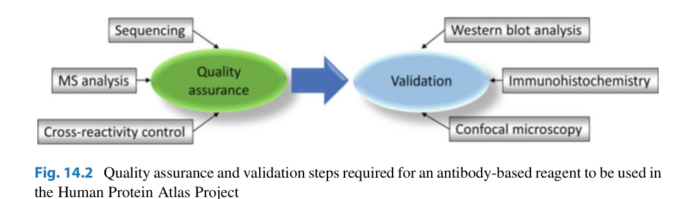
인간 단백질 지도 포털은 합리적인 면역반응성 패턴을 제공하는 모든 항체를 게재하며 연구계 피드백을 환영한다. 인간 단백질 지도 프로젝트 외 출처에서 공급된 항체는 면역세포화학·면역조직화학 및 웨스턴 블롯 기반 방법으로 시험되었으며 시판 항체는 항체 공급업체 링크와 함께 나열된다.
14.4.4 고도화 항체 검증
인간 단백질 지도에서 웨스턴 블롯, 면역세포화학 및 면역조직화학에 사용되는 항체는 IWGAV 실무 그룹이 기술한 다섯 가지 “기둥”에 기반한 고도화 항체 검증을 거치며, 기준을 충족하는 항체는 “Enhanced”로 표시된다. 고도화 검증 원리는 웨스턴 블롯, 면역세포화학 및 면역조직화학 적용 검증에 맞게 조정되었다. IWGAV 지침 적용 후 총 6,787개 인간 단백질 표적에 대한 10,540개 초과 항체가 고도화 검증 기준을 통과하였다.
복습 질문: 인간 단백질 지도 프로젝트의 목적을 기술하라. 항체 검증에 인간 단백질 지도가 왜 중요한가? 인간 단백질 지도에서 규정하는 항체가 통과해야 하는 품질 보증 단계는 무엇이며 신뢰성은 어떤 척도에 따라 평가되는가?
14.5 출발은 단순하게: 진단·분석용 항체를 위한 10가지 검증 규칙
“검증은 특정 항체가 의도된 적용 또는 목적에 적합하다는 실험적 증명과 문서화이다.” 따라서 이는 프로토콜 또는 공정과 연관된 생화학 화합물을 지칭한다. 이러한 관점에서 Weller는 항체 기반 시약 검증에 적용 가능한 10가지 기본 규칙을 항체계 초심자에게도 방향성 지침을 설명하기 위한 “목적”과 함께 요약하였다.
| 규칙 | 방법(Method) | 목적(Purpose) |
|---|---|---|
| 1. 항체 정의 | 결합 분자, 대부분 항체는 모호하지 않게 식별되어야 함. 클론 번호, 상업 제품 번호, 항체 ID 제공 | 시약 지식 추가, 과학 연구 재현성 향상 |
| 2. 항원 정의 | 표적 항원은 모호하지 않게 식별되어야 함. 합텐(hapten): 화학식, 큰 분자: 에피토프, 조직화학 시약용 세포·조직, 천연 또는 변성 항원 사용 여부 정의 | 표적 상세 기술은 항체 특성 평가 전제조건 |
| 3. 교차반응성 시험 | 시험 제제의 결합 선택성 기술. 모든 관련 물질 교차반응성 시험, 선호 방법은 면역침전 후 질량분석 | 여러 잠재적 교차반응성 표적 시험은 신중히 특성 규명된 항체를 나타냄 |
| 4. 항체 농도 | 특이적·활성 항체 농도 결정 | 제품 라벨 “항체 농도”는 분석 최적화를 위한 예비 추정치에 불과하며 활성 성분 농도는 훨씬 낮을 수 있음 |
| 5. 문서화 | 1–4항 정보 포함 | 덜 특성 규명된 항체는 최종 사용자 노력 더 필요 |
| 6. 결합 상수 결정 | 항체/항원 복합체 결합 강도와 관련. SPR, BLI, ELISA, 평형 투석(equilibrium dialysis) 등으로 측정 가능 | 결합 상수는 분석 민감도(검출 한계) 정의, 저친화도 항체는 종종 약한 특이 신호 유발 |
| 7. “매트릭스 효과(Matrix effect)” 결정 | 의도된 분석에 존재하는 비-표적 물질 영향 기술. 염, 방부제, 용매, 세제 및 기타 첨가물 기술 포함 | 매트릭스 화합물에 민감한 항체는 가변 분석 결과 제공, 실제 적용에 덜 적합 |
| 8. 적절한 보관 조건 기술 | 정의된 보관 온도 하 활성 명세. 권장 보관 첨가물 목록, 명시 보관 조건 하 안정성 보여주는 활성 시험 | 최종 사용자에게 매우 유용한 정보 |
| 9. 적용 프로토콜 | 적용 설명서(application sheet), 특정 실험 방법 프로토콜 요약 | 실제 검증 노력 반영, 분석 성공적 구현 가능성 향상 |
| 10. 사용자 피드백 | 공개 플랫폼에서 사용자 정보 교환. 특정 적용에서 항체를 이미 시험한 사용자 권장 | 긍정적 피드백은 공동체 내 항체 수용에 기여 |
복습 질문: 항체와 항원을 모호하지 않게 정의할 수 있는 방법은 무엇인가? 교차반응성 시험의 중요성에 대해 논하라. “매트릭스 효과”란 무엇인가? 사용자 피드백이 항체 검증에 어떻게 영향을 줄 수 있는가?
14.6 결론
진단 또는 연구 목적 항체는 협력 또는 상업화를 통해 과학계에 광범위히 제공되었다. 그럼에도 모두가 독립 실험실에서 평가 과정을 거친 것은 아니며 모두가 검증 결과의 일관된 보고를 따르는 것은 아니다. 이러한 방식으로 특정 항체 시약의 한계는 개선된 활성, 특이성 또는 특정 실험 절차 적합성을 지닌 신규 결합자 후보 생성 노력을 촉발할 수 있다. 잘 특성 규명되고 검증된 항체는 독립 실험실에 걸쳐 재현 가능한 결과를 산출하여 해당 분야의 유의한 진보로 이어질 것이다. 이러한 목표 달성을 위해 실제 사용 전 신중히 통제된 검증 절차에서 얻은 결과뿐 아니라 최종 사용자의 공유 경험 가용성을 최대화하기 위한 항체 생산자와 최종 사용자의 기여가 요구된다. 이는 검증된 실적을 지닌 시약 선택을 돕고 최적 사용을 위한 실험 프로토콜 개발을 가속화할 것이다.
핵심 정리(Take Home Messages):
- 각 친화 시약은 그 특성에 의해 고유하게 식별 가능해야 한다. 비-재조합 시약에서처럼 분자 구조별 정의가 불가능한 경우 아래 권장사항에 기술된 표준을 따라야 한다.
- 내재적 분자 이질성에도 불구하고 다클론 항체 시약은 많은 분석 분석에서 더 높은 민감도를 제공하고 검체 준비와 환경 요인으로 인한 완전 비활성화에 덜 취약하므로 연구·진단 환경에서 가치 있다.
- 과학 출판물에서 항체 기반 시약 보고 시 따라야 할 특정 표준이 있으며, 이는 과학계에 전달되었다.